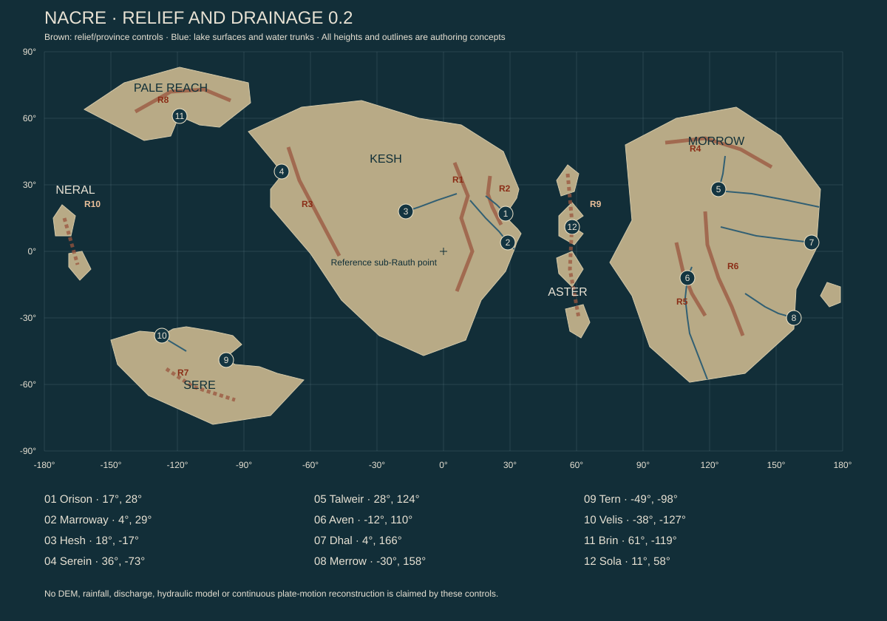
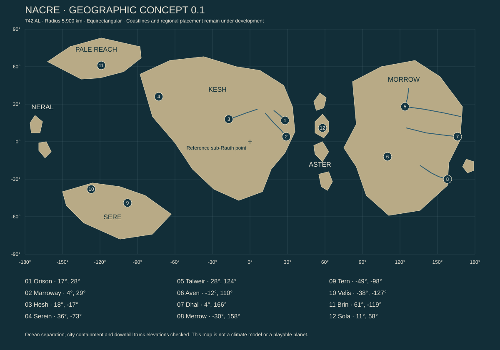
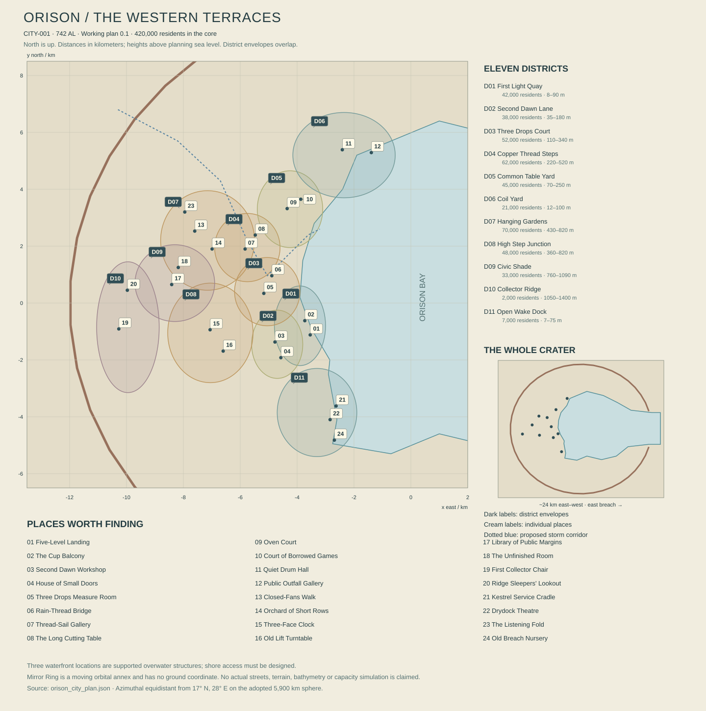

BORROWED SUN · AUTHORING EDITION 0.2 · 13 OCTOBER 2026
The living planet
A world of long days, distant homes and inherited promises.
This reading edition collects the current foundations. The complete fifteen-volume bible is still in progress. Draft proposals and unresolved questions are labeled within each chapter. No playable planet is claimed.
85,014 source words across 11 chapters. This count includes research and review notes; it is not a page count or a quality score. Historical specifications are excluded.
Working canon, edition 0.2, 13 October 2026. These are new authorial decisions for development and review, not claims of additional user approvals. The physical model is a checked design candidate, not a demonstrated habitable exomoon simulation. The full bible remains in progress. Nothing in this volume describes new functionality already implemented in Unreal.
The world in one arrival
You come into Orison over the water at the end of a long night. The city is a broken bowl, its oldest streets climbing the inside of an eroded crater. A banded giant hangs above the western roofs. It has occupied that part of the sky for every generation that built here. Beyond the rim, the star is already up; below it, someone is still paying to see the morning.
A collector catches a passing blade of light. It travels over wet copper, a laundry court, a queue outside a bakery. People look up for different reasons. A gardener checks a shade; a child tries to outrun the bright edge; a woman stops talking because the light has reached the window of somebody who died. Then the beam passes. The bakery keeps working. The city is not waiting for a hero.
Your boat carries a little machine that can change who is allowed to use a power network. It cannot feed a city or manufacture a sunrise. People may die over that distinction. They may also sit down together and work it out. Beyond Orison are people who would find this argument provincial, others who have lived through their own version, and places that have never had reason to care about a human permission key at all.
That is the scale of Borrowed Sun: a hand on a warm cup, a city making its morning, an enormous world beyond the harbor, and relationships connecting those scales without reducing them to one story.
What is being established
The inhabited world is Nacre, a large moon of the gas giant Rauth, orbiting the star Ilex. People commonly call Nacre a planet in ordinary conversation. Scientific and navigational records distinguish it from its parent. This preserves the earlier moon setting while giving the requested world genuine planetary extent.
Nacre turns once relative to distant space in approximately 5.6 Earth days. It keeps approximately the same face toward Rauth, but turns relative to Ilex. Its mean natural solar cycle is approximately 136.755 Earth hours. The night is long, not permanent. The hemisphere facing away from Rauth has sunlight too. On much of that hemisphere the giant is never above the horizon; people there do not organize every roof or story around it.
The working radius is 5,900 km and surface gravity 0.88 standard Earth gravity. Its circumference is approximately 37,071 km. These numbers establish scale; they are not a license to stretch a familiar city over a globe. Mountains, watersheds, continental travel and empty country must occupy meaningful distances.
The present is 742 After Landing, abbreviated 742 AL. One local orbital year is approximately 325.191 Earth days. The inhabited history therefore covers roughly 660.6 Earth years. The dated chronology uses local years; medicine, engineering and orbital calculation use explicit durations in seconds or hours. Reader-facing biographies use standard age, meaning Julian Earth years, while birth dates carry AL. A person's biological age must never be calculated by silently treating AL years as Earth years; eighteen local years are only about 16.03 standard years.
People need sleep long before the next sunrise. A common civil turn lasts 24 Earth-standard hours, divided into three eight-hour watches. Watches are scheduling conventions, not universal working shifts. A natural solar cycle contains approximately 5.698 civil turns. There is consequently no universal rule that morning is the first watch, or that a birthday must happen in daylight. Public clocks show both civil time and sky phase. The adopted Landing Reckoning begins at the year-zero Landing epoch and divides ordinary years into thirteen spans of twenty-five turns. Twenty-two additional Balance turns occur in each 115-year cycle; the calendar volume gives the exact rule and its small drift against the reference orbit.
The latest fictional census estimate is 34.8 million people, with a stated uncertainty of approximately ten percent. It is a statistical estimate assembled from unequal local records, not an omniscient population counter. Nacre is not an ecumenopolis. Most of its land and almost all of its ocean remain outside continuous human occupation. Many people live in linked settlement belts; beyond them are huge watersheds, uplands, coasts and ocean reaches with few permanent residents.
Five commitments that shape the fiction
The world precedes the adventure. Native ecosystems evolved before humans arrived. Mountain belts do not point toward quest objectives. Settlements have supply chains, neighbors and internal lives. A protagonist may change important things without becoming the secret cause of all history.
Maintenance is visible power. An object is built, serviced, paid for, borrowed, stolen, loved or abandoned by somebody. A broken pump may reflect fatigue, debt, poor design or a deliberate refusal; it is not automatically evidence of evil. The people who repair a city deserve names, competence, humor and political disagreements.
A good life exists here. Festivals, friendship, good food, ridiculous fashions, games, romance, patient teaching and pointless hobbies are not rewards reserved for after a revolution. They exist amid difficult conditions. Suffering alone does not create depth. The player must encounter things worth preserving as often as things worth overthrowing.
Different places solved different problems. Orison's light contracts are one history. Talweir's lake jurisdictions, Serein's building cooperatives and Tern's rescue obligations have other origins. No single faction, religion, garment, musical scale or architectural kit explains the whole world.
Consequences have carriers. A price changes because a shipment failed, a council changed a tariff, or somebody manipulated a report. News travels through people, relays and institutions. The same event may be known quickly, known incorrectly, or not known at all in different places. Wildlife responds to conditions it can perceive, not to the player's quest log.
The limits of the technological promise
This civilization possesses advanced materials, excellent computation, capable medicine, reliable local spacecraft and a long history of biological and prosthetic adaptation. It does not have costless energy or arbitrary matter creation. Manufacturing needs feedstock, tooling, trained supervision, power, cooling and quality control. Some components can be fabricated locally; others depend on a few expensive facilities or old stock.
Flight is ordinary enough to support ports and trades, but not cheap enough to eliminate roads, ferries, freight rail, footpaths or neighborhood shops. Most people do not own a space-capable workboat. Cargo, maintenance, weather, landing rights, rescue coverage and safe traffic separation matter. A fast ship can cross distance; it cannot make every destination willing or able to receive it.
Interplanetary routes and offworld relatives exist. This bible does not establish faster-than-light travel or instantaneous interstellar communication. The earliest immigration came in three major arrivals, followed by smaller and irregular transfers. Offworld history can widen later without turning the planet into a disconnected terrarium or making distant authorities a convenient solution to every local crisis.
Native biochemistry follows the ecology foundation's limited overlap contract, adopted for working canon: selected native oils and small carbon compounds can be used after species- and tissue-specific processing, while native proteins and structural materials are not generally interchangeable with terrestrial nutrition. Complete human diets still depend on introduced crops and maintained biological cultures. This is an explicit fictional assumption, not a scientific prediction. Food conversion, composting and waste treatment are separate processes. A beautiful alien fruit is not automatically food, Earth livestock cannot graze any meadow, and a dangerous animal is not automatically a communicable disease reservoir.
Human adaptations and assistive technologies do not define moral character, intelligence, citizenship or faction. A pressure-worker lineage can contain a poet, a landlord and a dock mechanic. A support harness can be medical, occupational, fashionable or several of these at once. Design people with histories before designing silhouettes.
Light, energy and the name of the game
Orison's crater and seasonal sky create terrain shade. Local collectors can redirect available daylight into places that would otherwise remain shaded. Moving orbital installations offer limited illumination windows and other services. They are not fixed over one neighborhood, and a simple low-orbit mirror does not illuminate deep midnight while itself in the world's shadow.
Electricity, heating, working light, agricultural light and access to direct sunlight are separate services. They can share owners and infrastructure without being the same physical resource. Stored energy and regional generation carry the city through the long night. Some interior crops use lamps; others follow the natural cycle or draw on biological reserves. A light contract can be valuable without implying that every resident will suffocate when it expires.
The Concession accumulated control over collectors, energy dispatch, certified maintenance and access records in the Orison region. Its power comes from historical contracts and technical bottlenecks, not a magic switch owning Ilex. Some of its staff keep hospitals and transport alive; some profit by making alternatives difficult. Institutional incentives matter more than a uniform of villains.
The Sunseed is a compact authorization and routing core with limited stored energy. It can change which existing equipment accepts a command or which reserve is made available. It does not contain enough energy to run an entire city. A successful theft opens a political and engineering possibility; people still have to make the resulting arrangement work.
The title refers to the material transaction and the larger habit of living on work inherited from others. A borrowed tool may be returned; a borrowed future may be consumed. No single character owns the correct interpretation.
Orison and the original anchors
Orison remains the first home city. Its built core is provisionally about 420,000 residents; the wider urban and agricultural service region about 1.2 million. These are fiction planning estimates, not simulated NPC counts. The three broad levels remain Low Tides, Ladder and Crown. They describe geography and histories of access, not three perfectly segregated social classes.
First Light Quay, Second Dawn Lane, Three Drops Court, Copper Thread Steps, Common Table Yard, Coil Yard, Hanging Gardens, High Step Junction, Civic Shade, Collector Ridge and Open Wake Dock remain the ground district anchors. The Orison city dossier now maps their planning envelopes and twenty-four places, with drainage, food, freight and service dependencies. Surveyed boundaries and final engineering remain open. Mirror Ring is a moving orbital service annex, named for its working structure rather than a natural planetary ring. It needs its own orbital reference frame and scheduled approaches; it is not a stationary district over Orison. A continental coordinate does not substitute for the ground mapping or an orbital trajectory.
Brass Sanctuary remains Orison's approved architectural direction: warm mineral walls, indigo shade, oxidized copper, deep arcades, porous screens, maintained machinery and ornament that often does a job. Indigo Monsoon remains the rain and night reference. Materials record age and repair rather than receiving identical dirt everywhere. This language belongs to a particular climate and history; other cities will have their own construction traditions.
The Lantern Keeper is the original moth-shaped civic guardian holding an artificial sun. Its wing collectors are part of the designed object. Its form is not an alien deity secretly copied from another game. Residents may treat it as a public work, a protective story, a maintenance burden, a tourist emblem or a symbol appropriated by an institution. Its complete civic history remains to be written.
Kestrel remains a battered, asymmetric working boat and a home. Rook remains the courier callsign associated with a forged service record and a labor contract that implicated somebody left behind. Their story is important without being the genealogical center of every region.
Iona's engineering and power-network history can coexist with work for a clinic. Seli's medicine and broadcasting can coexist with evacuation coordination. Venn's navigation and family obligations can coexist with relay work. These reconciliations preserve the existing mission roles without making each person a single-purpose service terminal.
The Common Table, Open Wake and Night Choir retain their identities as provisioning networks, captains' associations and unlicensed testimony archives. They have branches and disagreements; none automatically speaks for every poor person, sailor or dissident on Nacre. Other institutions will have equal narrative seriousness in their own places.
What exploration should reveal
An unfamiliar place should become legible through attention. A roof angled toward a pale sky may collect condensate. The same roof patched with a different alloy may reveal interrupted trade. A workshop with unusually wide doors might serve freight sleds, not a gigantic species. A shrine can be a memorial at a rescue staging point, and its water bowl can be maintained by people who do not share the original belief.
Discovery proceeds through differences: an expected sound is absent; a dated flood mark stands above the new road; a food crop grows inside quarantine glazing; a map uses a vanished river channel; somebody knows a route but refuses payment in the usual form. Clues should support several levels of understanding, from an immediate practical route to a historical argument.
There will be wild places where human explanations are irrelevant. A migration bottleneck, a folding canopy at dusk, a tidally exposed nursery or a storm crossing an empty shelf can be a destination. The reward may be knowledge, a view, an encounter, useful material, access, trust or simply the pleasure of reaching it. Treasure containers are one possible detail, not the grammar of the planet.
Returning should expose change at believable rates. A repaired footbridge lasts; a closed shop may reopen under another arrangement; a nesting colony may be absent outside its season. Some places stay reassuringly familiar. A world that transforms every time it is observed becomes a performance rather than a home.
Truth, evidence and mystery
Each lore statement will belong to one of four layers: authorial fact; an attributed institutional record; an individual account; or an unresolved interpretation. A biased archive can still preserve accurate measurements. A beloved story can be false without making its tellers foolish. The bible must know when it is withholding an answer and when no answer has yet been authored.
No precursor civilization is established as the default explanation for native complexity. Strange formations can arise from biology, geology, abandoned human engineering or a genuine unresolved phenomenon. Mystery must survive scrutiny without requiring every inscription to be a clue to the same superweapon.
Three recurrent questions can connect distant places without collapsing them: who may speak for shared work; what descendants owe to arrangements they did not choose; and whether care can remain care when it becomes an institution. They can appear in a household, a shipyard or a continental agreement. Characters answer them through conduct, not obligatory speeches.
Continuity rules for the remaining volumes
Use stable identifiers for places, people, species, institutions and events. Keep common names and translated names editable. A location can change jurisdiction without moving on the globe. A building can change use without losing its physical history. A rumor can refer to an obsolete name without creating a duplicate place.
Coordinates in the atlas are body-fixed latitude and east-positive longitude. Longitude zero passes through the reference sub-Rauth point at the chosen epoch; north follows the adopted spin axis. The spherical reference radius is 5,900 km. Detailed elevation, ellipsoid corrections, tides and local survey datums are later refinements, not silent changes to this convention.
Numerical estimates should carry their purpose and uncertainty. A continental route length is not a walkable spline; an estimated population is not a spawn budget; a climatic design range is not a forecast produced by a circulation model. The future implementation must be measured separately.
The new atlas and history supersede old unsupported assumptions only where a decision says so. All approved visual anchors remain. All unfinished volumes remain visibly unfinished. Hundreds of pages must contain different useful knowledge, voices and consequences; length alone cannot finish this world.
Checked design candidate; open physical questions remain · 6,296 source words · Source
Nacre: physical foundation and sky review
Working physical canon, reviewed 13 October 2026. Nacre, Rauth and Ilex are the current names for the inhabited moon, its giant parent and its star. The numerical candidate below was selected for the world bible after checking its coupled implications. These are original fictional design parameters. The arithmetic is reproducible; long-term orbital stability, an inhabited atmosphere and regional climate have not been demonstrated by a dynamical or climate simulation.
The observable outcome of this review is a single internally consistent scale, clock and sky model, accompanied by explicit limits on what the artificial daylight system can do. Regional authors should be able to locate a coast, establish a season and describe a night without inventing contradictory astronomy. The most important consequence is that Nacre has natural sunrise and sunset everywhere outside its seasonal polar zones. Being locked to Rauth does not give it an eternal day hemisphere or an eternal night hemisphere. NASA's explanation of synchronous rotation supports that distinction. NASA: tidal locking
This review does not replace the full regional atlas, ecology or history. It establishes the physical contract they must share. The present historical epoch is 742 local orbital years After Landing, approximately 660.621 Earth years. That conversion is chronological bookkeeping, not a claim that inhabitants use Earth calendars.
1. Selected system
Distances in this section are center-to-center unless explicitly marked altitude. Earth days are exactly 86,400 SI seconds; Earth years in historical conversions are Julian years of 365.25 such days. Numbers are rounded for prose. The extra digits in calculation records identify the model, rather than implying an actual measured exoplanet.
Quantity
Working value
Meaning and status
Ilex mass
0.95 solar masses
Chosen stellar mass
Ilex luminosity
0.80 solar luminosities
Chosen present luminosity; not derived from a fitted stellar evolution track
Ilex radius
0.94 solar radii
Presentation/irradiation assumption
Ilex effective temperature
About 5,630 K
Stefan–Boltzmann consistency estimate from the chosen luminosity/radius
System age
Mature system; exact age unresolved
Do not assign a stellar age from the rounded mass alone
Rauth mass
0.70 Jupiter masses; 1.328691 × 10²⁷ kg
Chosen giant mass
Rauth representative radius
70,000 km
Reference radius for first-order formulas; an oblate atmosphere has no solid surface
Rauth average density
About 925 kg/m³
Derived; consistent with a low-density gas giant as a fictional assumption
Rauth rotation
9 Earth hours
Working spin for its cloud movement and angular-momentum check
Rauth quadrupole coefficient J2
0.020
Chosen oblateness parameter; must remain coupled to a plausible giant structure
Rauth axial tilt to the stellar orbit
28°
Giant obliquity, not Nacre's seasonal tilt
Rauth orbit about Ilex
0.91 AU
About 136.134 million km
Rauth orbital eccentricity
0.010
Small seasonal distance modulation; not the principal source of seasons
Nacre reference radius
5,900 km
A world of terrestrial scale
Nacre reference surface gravity
8.629852 m/s²; 0.88 standard Earth gravity
Spherical reference value; not identical at every height and latitude
Nacre mass
4.500924 × 10²⁴ kg; 0.75365 Earth masses
Derived from radius and gravity
Nacre bulk density
About 5,232 kg/m³
Derived; broadly rocky, not an ice-dominated giant moon
Nacre circumference
37,070.8 km
Great-circle circumference of the reference sphere
Nacre surface area
437.435 million km²
About 86% of Earth's surface area
Nacre surface escape speed
10.091 km/s
Reference two-body value; flight fiction must respect its large energy scale
Nacre sidereal rotation/orbit
5.600 Earth days; 134.400 hours
Synchronous with Rauth, prograde
Nacre orbital semimajor axis
808,067 km
Derived from both bodies' masses and the 5.6-day period
Mean natural solar day
136.755 hours; 5.698125 Earth days
Mean sunrise-to-sunrise clock; true solar time varies with geometry
Local orbital year
325.1913 Earth days
Rauth–Nacre system's orbit about Ilex
Present-epoch seasonal tilt
Approximately 14.07°
First-order local Laplace-plane estimate, with Nacre's spin nearly normal to that orbit
Nacre orbital eccentricity
0.001 working reference
Low but nonzero; forced variations must be investigated before fixing an exact ephemeris
Natural stellar flux at mean distance
1,314.8 W/m²
Top of atmosphere, surface normal to the rays; about 96.6% of Earth's mean solar constant
Nominal atmospheric pressure
1.05 bar at reference sea level
Fictional environmental assumption, not a prediction from gravity
Nominal dry oxygen fraction
20%
About 0.21 bar oxygen partial pressure at sea level; high mountains still require acclimatization/support
Modeling starting point; water vapor is variable and not part of this dry total
Bond albedo used for the simple energy check
0.30
Whole-world model assumption; actual clouds and surface distributions are unresolved
The radius and gravity were chosen together. The mass is therefore a consequence rather than an independently adjusted dramatic number. A geodesist's reference sphere can coexist with a real planet that has mountains, basin topography, rotational flattening and a permanent tidal figure. Later terrain work must store the datum and height convention; it must not reinterpret every elevation as distance from an artist's arbitrary local ground plane.
Ilex should read as warm white, not a saturated red lamp. Warm streets and indigo shade come from atmosphere, time, material and lighting design. We do not need a red dwarf to achieve the approved art direction, and choosing one would create a different coupled stability and irradiation problem. Rauth's cloud colors are a separate atmospheric composition and art decision.
2. The clocks and their consequences
The moon turns once relative to the distant stars as it circles Rauth. During that turn the entire system also moves along its orbit about Ilex. The mean solar clock therefore follows
1 / P_solar = 1 / P_moon − 1 / P_year.
The reference result is 136.755 hours. At the equator near an equinox, roughly 68.38 hours separate natural sunrise and natural sunset. That is almost three Earth days of illumination followed by almost three Earth days of night. Clouds, hills, refraction and twilight change what residents actually experience; their clocks do not change the underlying stellar geometry.
Human sleep, shift changes, school schedules and market opening cannot simply wait for each natural dawn. A good social solution is a short civic cycle, maintained by clocks and local light services, alongside separately named phases of the long solar day. Do not fix those civic names or cycle lengths in this physics review. A 24-hour civic cycle would drift against the natural sun; a civic cycle dividing the long day evenly would be about 22.79 hours if divided into six. Either is possible fiction with different cultural and biological consequences. The calendar volume must select one deliberately and preserve conversions in its records.
There are approximately 57.07 mean solar days in an orbital year. An exact integer calendar cannot be inferred by rounding that number to 57. If a culture uses fifty-seven named long days, it needs intercalation or an accepted drift; if it uses ordinary work cycles, its year contains a different count. Festivals tied to the first monsoon and festivals tied to a numbered civic date can separate over time. That difference offers original lore without breaking the sky model.
The accepted 742 years After Landing means 742 of the 325.191-day orbital years, not 742 solar days and not 742 Earth years. It corresponds to about 241,292 Earth days or 660.621 Julian Earth years. Birth dates, ship archives and archaeology should identify their calendar before being compared. A translation convention can make dialogue legible without pretending the world has Earth's astronomical calendar.
The reference world makes equatorial surface movement due to rotation about 275.8 km/h. That is a physical velocity, not a free vehicle speed. A launch inherits the motion of its ground site; atmospheric winds and orbital velocity remain separate. Journeys east and west can experience the natural sun differently without altering the global clock. An ordinary aircraft moving east at several hundred kilometers per hour can change its local solar phase noticeably, but weather, range and regulation prevent that observation from becoming universal unlimited daylight.
3. What Rauth actually looks like
Rauth spans about 9.94° at Nacre's center, or about 10.01° from the sub-parent ground point. It is roughly eighteen times Ilex's apparent diameter in this model. That gives a substantial, unmistakable sky presence without consuming half the sky. Ilex spans about 0.550°, close to the apparent size of the Sun from Earth.
For the reference spherical body with its spin normal to the moon's orbital plane, the parent-facing point is at latitude 0°, longitude 0°. At surface latitude φ and east longitude λ, the approximate elevation of the parent's center is
elevation = asin(cos φ × cos λ).
The parent is above the horizon on the near hemisphere and below it on the far hemisphere. The several-degree radius of its visible disc produces a limb zone rather than a mathematically sharp cultural frontier. Elevation, terrain and atmospheric refraction modify the actual view. A location at 28° north, 42° east would see Rauth's center about 41° high; that is a worked example, not an assignment of Orison's coordinates.
The sky center stays almost in place for a settled observer, but the giant's cloud bands rotate in approximately nine hours and atmospheric features evolve. Its illuminated phase changes through the long solar day. When the parent-facing hemisphere has local midnight, Rauth is approximately full. Near local noon it is approximately new, and near the equinox eclipse windows it can pass in front of Ilex. A fixed parent direction must not be confused with a fixed illuminated face.
The small orbital eccentricity introduces optical libration of order 2e radians, roughly 0.115° in longitude before other effects. That is a subtle displacement relative to a ten-degree disc. Do not animate the parent sweeping from east to west each day. The star and fixed-star background move across the sky; Rauth mainly turns its cloud patterns and changes phase where it hangs.
Rauth's equator need not appear level with Nacre's horizon or equator. Its spin axis is tilted to the moon's orbit. Its projected bands, visible pole and any future ring system require a consistent three-dimensional orientation. Rings are not assumed in these calculations: adding dense dramatic rings also adds shadow geometry, eclipse effects, navigation restrictions and long-term evolution questions. Do not add a broad ring as a cost-free sky ornament after the weather model is fixed.
At a notional geometric albedo of 0.5, a fully lit Rauth delivers about 4.93 W/m² to a surface normal to its direction before Nacre's atmospheric losses. This is a maximum directional estimate, not a global average. Parent-facing clear nights can therefore have a strong, colored natural glow. Far-side nights lack that giant lamp; cloudy nights and steep valleys differ again. This establishes a real ecological and visual distinction across the world without declaring either hemisphere permanently dark.
That glow remains less than 0.4% of direct stellar flux. It is useful to sight, navigation and biology sensitive to low light; it is not a second full-strength sun. Converting it to lux requires the actual reflected spectrum and chosen photometric response. An Earth-like visual weighting would place its brightest clear exposure in the broad range of hundreds of lux, but no exact lux value is fixed here. Art should calibrate the scene from radiometric and spectral assumptions rather than raising night exposure until it resembles noon.
4. Seasons: why the giant's tilt is insufficient
A moon's orbital plane is influenced by the giant's equatorial bulge and by stellar tides. Near the giant the equatorial influence dominates; far away the stellar orbital plane matters more. The local equilibrium lies between them. Tremaine, Touma and Namouni derive this Laplace-surface behavior and explicitly state that their secular model treats the satellite as a massless test particle with a nearly fixed planetary spin axis. Their result is a useful first check, not a full simulation of our finite-mass moon. Satellite dynamics on the Laplace surface
This gives r_L ≈ 704,772 km. Equal coefficients of the two orientation torques occur at 2^(1/5) r_L ≈ 809,570 km, almost the chosen lunar orbital radius. Some literature folds that factor of two into the definition of “Laplace radius”; do not compare numbers without checking the convention.
If θ = 28° is Rauth's obliquity and φ is the moon plane's tilt away from the giant equator toward the stellar plane, the low-inclination equilibrium satisfies
sin[2(φ − θ)] + 2(r_L/a_moon)⁵ sin(2φ) = 0.
The selected root is φ ≈ 13.929°. The moon's orbital plane is therefore about θ − φ ≈ 14.071° from the stellar orbital plane. With its spin approximately normal to that orbit, Nacre's present seasonal obliquity is about fourteen degrees, not twenty-eight.
This is enough for changing day lengths, migrating seasonal heating, polar summer/winter and land–sea monsoon contrasts. The nominal astronomical tropics lie near ±14.07° and the nominal polar circles near ±75.93°. Mountains can support snow and ice much closer to the equator. Seasonal rainfall belts do not have to coincide with those astronomical lines.
Do not promise a permanent 14.071° tilt to six significant figures. With a nominal giant moment-of-inertia coefficient of 0.25 and nine-hour spin, Nacre's orbital angular momentum is approximately 0.1205 of Rauth's spin angular momentum. Coupled precession is therefore a real correction. The chosen epoch is a defensible starting configuration; secular evolution of both axes, free inclination, other moons, the spin-axis state of Nacre and changing orbital eccentricity need a numerical model before a deep-time history or long-range almanac claims exact behavior.
The rejected first trial placed a 5.6-day moon around a 0.8-Jupiter giant at 0.65 AU from a 0.82-solar-mass star. Giving that giant a twenty-degree tilt produced only about three to four degrees of moon-plane inclination in the same first-order calculation. That trial would not have supported the intended seasonal story merely by labeling the giant “tilted.” The selected wider stellar orbit preserves the long natural day while allowing a more useful seasonal geometry.
5. Eclipses have seasons, footprints and limits
At Nacre's orbital distance, the geometric umbra behind Rauth has radius about 66,534 km for the selected stellar radius and mean distance. The penumbra is larger. A central passage of Nacre's center through that umbra lasts about 3.59 hours in the straight-cone, circular-orbit approximation. Ingress, partial phases, the finite size of Nacre, atmospheric refraction and orbital eccentricity modify a particular ground observation.
Because the moon plane is tilted by roughly fourteen degrees to the stellar plane, it usually passes above or below the giant's shadow. Eclipses cluster near the two crossings of Ilex through that plane. A rough window is several tens of Earth days around each crossing. A sixty-second-step geometric sample of one reference year, beginning at a central eclipse, produced fourteen center-of-moon umbral episodes totaling about thirty-seven hours, or 0.47% of the year. This is a plausibility calculation; it is not the saved canonical schedule for year 742.
The finite body matters. A partial shadow encounter can affect one region while another remains in normal light. During a deep central passage the giant's shadow can cover the entire moon, but residents already on the natural night hemisphere do not witness a daytime sun going out. Local horizon and weather determine whether anyone sees the giant's dark disc or merely notices changing ambient light.
Heller's eclipse treatment demonstrates why orbital inclination and shadow time need to enter the energy budget. It also states that detailed system limits require dynamical modeling. We use its physical distinction, not an imported universal “safe orbit.” Exomoon habitability constrained by energy flux and orbital stability
The world can build serious institutions around eclipse forecasts: observatories, optical maintenance windows, port departure notices, ritual disagreements and agricultural timing. Eclipses should remain knowable physical events. They are not random weather rolls, and the Concession cannot move them by changing a lease. Clouds may obscure their appearance without canceling the underlying loss of direct light.
The short annual shadow fraction also means that eclipses do not explain a permanently freezing near hemisphere. A particular crater district can depend on managed light because of terrain, economic history, local growth schedules and infrastructure, but a few eclipse hours cannot account for all of its energy poverty.
6. Orbit safety checks and the absence of stationary mirrors
Rauth's approximate Hill radius at periastron is 8.32 million km. Nacre's 808,067 km orbit is about 9.7% of that conservative Hill radius, well inside the common test-particle prograde boundary estimates. Its orbit is also much farther out than the approximate fluid Roche disruption distance of 95,855 km. These are useful geometric margins. They do not establish survival through planetary migration, resonances, an arbitrary companion system or billions of years of tidal evolution.
Domingos, Winter and Yokoyama derived an empirical prograde stability boundary near 0.4895 R_H with eccentricity corrections in their restricted elliptic three-body study. Their calculation supports using a fraction of the Hill region, rather than its whole radius, as the rough stable zone. Our finite-mass, inclined, oblate system differs from that model. Stable satellites around extrasolar giant planets
The more consequential check is for spacecraft orbiting Nacre. Nacre's approximate Hill radius against Rauth is only 84,000 km. A first prograde screening limit is therefore around 41,000 km from Nacre's center, with detailed operational orbits needing further analysis. The radius of an ordinary Nacre-synchronous circular orbit would be 121,223 km, outside even that entire Hill region.
This is not a minor numerical inconvenience. For a small moon synchronously rotating about a much more massive planet,
r_sync / r_H ≈ 3^(1/3) ≈ 1.44.
The checked finite-mass ratio here is 1.440625. A freely orbiting spacecraft cannot hang geostationary over Orison in an ordinary stable Nacre orbit. The same issue rules out casually adding a conventional stationary equatorial space elevator. Halo or libration-point trajectories and actively supported structures are different architectures with different movement, stationkeeping and load requirements; invoking their names does not make a fixed orbital mirror work.
The orbital mirror must therefore travel. Residents know its passage direction and service windows. A maintenance station is another moving body, even if a local game scene represents the docking operation in its own reference frame. A docked ship's relation to the station and the station's relation to the planet must remain distinct. Landmarks may align at a scheduled moment without remaining aligned forever.
Circular altitude above Nacre
Approximate orbital period
Minimum direct solar-image diameter at overhead distance
500 km
1.630 hours
4.80 km
1,000 km
1.825 hours
9.61 km
5,000 km
3.624 hours
48.0 km
10,000 km
6.384 hours
96.1 km
The table uses a two-body circular orbit and an idealized focusing reflector. Slant range, atmospheric paths, attitude, occultation, perturbations and finite reflector performance make actual service harder. It does not specify an operating constellation or certify a satellite's stability.
7. An artificial sun with an honest energy budget
The Concession's infrastructure can remain spectacular and politically decisive. It must have a supply chain rather than an unexplained glowing sphere. Four physically different services can share contracts and branding: direct optical illumination, generated electrical power, stored power, and distributed heat. “The mirror” is the public name for a network and a conspicuous moving machine, not proof that every service comes out of one reflected beam.
The apparent width of Ilex imposes an optical constraint. Its angular diameter is about 0.009608 radians. An ideal imaging reflector focused at distance d produces a stellar image with characteristic diameter d × 0.009608. Pointing a mirror more accurately does not turn an extended star into a point source. Real flat mirrors produce additional spreading; different optical architectures need their own radiance accounting. The solar-image scale is discussed in NASA's orbital reflector studies. NASA technical report: orbital reflectors and surface power
For a deliberately optimistic example, illuminating a circular 25 km² target with an added 100 W/m² requires 2.5 gigawatts of arriving optical power. At 1,314.8 W/m² incoming stellar flux and 55% combined interception/reflection/atmospheric efficiency, the active projected reflector area must be at least 3.46 km², equivalent to a circular diameter of 2.10 km. The stellar image fits that target only at a range of roughly 587 km or less in the ideal focusing approximation. This is already a major engineered object delivering a fraction of full sunlight, not a hand-sized emitter.
The area and efficiency calculation does not include the extra deployed area needed when the reflector is tilted, coverage gaps, pointing reserves, maintenance downtime or the constellation needed to repeat service. Agriculture needs its own photon budget, crop response and timing. One hundred watts per square meter of broad-spectrum added light is not one hundred watts of electrical output, and neither quantity is a statement that every crop reaches its desired yield.
A second geometric constraint governs night service. At deep local midnight, a low satellite above the observer is inside Nacre's shadow. In an ideal spherical, distant-star geometry, a point can be both visible from the midnight surface and sunlit only when the satellite's orbital radius exceeds sqrt(2) × R. The threshold altitude is about 2,444 km. Below that, a single direct reflector cannot supply deep-midnight light to that observer. Near dawn and dusk its opportunities are different; at high latitude the seasonal geometry differs.
Higher orbits can see around the night limb, but their solar image covers much larger ground areas. At 5,000 km overhead distance, the ideal image is already about forty-eight kilometers across. Filling it with even modest artificial daylight demands much more reflector area. Redirecting light through additional relay mirrors can change the geometry but adds large moving apertures, alignment constraints, losses and maintenance. It is an optional future megastructure, not an invisible loophole.
NASA's 1982 study proposed very large reflector spacecraft yet discussed illumination of broad areas at modest lux levels. It was a concept feasibility study, not a built modern utility. It is useful evidence of the scale distinction between navigation lighting and full agricultural sunlight. NASA: Illumination from space with orbiting solar-reflector spacecraft
Recommended Orison architecture
Collector Ridge receives natural sunlight above some of the crater's obstructing terrain. Ground heliostats, light wells and high distribution structures redirect that light into shaded terraces while the star is available. Their supports, access stairs, cleaning equipment, alignment targets and replacement surfaces belong in the city's asset grammar. Their direct-light performance degrades in thick cloud.
The orbital mirror provides conspicuous scheduled passes, shoulder-of-day extensions and selected regional services. It moves across the sky. Its real optical footprint need not be the same as a neighborhood's licensed fixture footprint. Service can be allocated through surface receiver and distribution equipment. The mechanical object is sufficiently large to justify orbital maintenance, transport contracts and infrastructure politics.
The deep-night grid draws from stored electrical/thermal energy and regional generation. Public lamps, greenhouse lighting, essential medical loads, circulation pumps and lifts compete for distinct constrained allocations. The mirror's collection operation may charge storage, but a natural night cannot be explained away by a satellite that is itself dark.
A sunseed authorizes a limited route, service lease or controller action. Its small capacitor runs short local interventions. It does not contain the gigawatt-hours needed to support the district. Iona's clinic intervention can unlock an existing reserve and route an allowed supply; Seli's lift can receive a competing allocation. Restoration changes visible equipment and human activity without violating conservation of energy.
Regional independence follows naturally. A river city, geothermal basin, windy ocean island or sun-exposed agricultural plain has a different energy portfolio and may reject Orison's concession model. A government can still monopolize a resource it did not create through land ownership, switching yards, permits, maintenance or debt. The world need not make its entire population incapable of surviving without one corporation's artificial sunrise.
8. Heating, tides and atmosphere
At a Bond albedo of 0.30, the simple equilibrium blackbody temperature is about 252.4 K. That is not the inhabited surface temperature. A greenhouse atmosphere, clouds, ocean circulation, surface albedo and seasonal/diurnal storage determine the actual surface field. This calculation says that an Earth-like order of stellar energy is available; it does not prove a comfortable global mean or any particular biome.
Rauth's thermal emission also reaches Nacre. If the giant's effective emitting temperature is a provisional 250 K, its maximum normal thermal flux at the moon is about 1.66 W/m². Together with the maximum reflected estimate, this remains a small addition compared with 1,314.8 W/m² direct stellar exposure. Averaging over the sphere and orbital phases reduces the effective contribution further. We do not use a glowing young giant as a hidden primary heat source.
Tidal heating is a different mechanism. For a synchronous moon with small eccentricity and negligible spin obliquity relative to its own orbital plane, a standard first-order expression is
h_tide = [21/(8π)] × (k2/Q) × G × M_parent² × R_moon³ × n × e² / a⁶.
With k2/Q = 0.003 used only as a sensitivity assumption, the selected orbit gives:
Orbital eccentricity
Reference global tidal heat flux
0.001
0.00283 W/m²
0.003
0.0255 W/m²
0.010
0.283 W/m²
0.030
2.55 W/m²
The hundredfold heating increase from 0.001 to 0.010 is the important point. Tidal rheology is not a universal fixed constant. Ocean dissipation, interior temperature, resonant forcing and a nonzero spin tilt relative to the moon orbit alter the result. A one-degree spin-to-orbit obliquity gives an additional order of 0.12 W/m² in the same simplified model. That is a different angle from the fourteen-degree seasonal tilt to the stellar plane. Confusing the two would manufacture severe heating.
Rovira-Navarro and colleagues explicitly discuss the dependence on the imaginary Love number and the limits of second-order eccentricity expressions. Their work supports treating the constant-Q result as a sensitivity estimate rather than an interior model. Tidally Heated Exomoons around Gas Giants
For the fiction, keep the reference orbit close to circular and avoid adding a massive resonant neighbor simply because another moon would look attractive. Active geology can principally use an old rocky world's internal heat and radiogenic inventory. Some regional volcanism is compatible with low present tidal heating; planet-wide constant eruptions are not implied by “moon of a giant.”
Rauth raises a large permanent tidal figure on Nacre. The first-order potential-height scale G M_parent R² / (g a³) is about 678 m, but this is not a daily ocean wave height. The ground, ocean geoid and rotation are already adjusted to the persistent field. At small eccentricity, changing distance and libration introduce a much smaller variable forcing; the star adds a reference equilibrium scale of about 0.20 m. Coastal bathymetry, basin resonance, wind and pressure determine actual tide tables. Do not write every harbor as enduring a 678-meter daily flood.
Atmospheric retention cannot be decided by gravity alone. The approximately ten-kilometer-per-second escape speed favors retention of heavy gases, but high-altitude temperatures, stellar ultraviolet history, impacts, volatile supply, chemistry and nonthermal losses still matter. NASA's atmosphere discussion explicitly identifies multiple controlling factors. NASA: Can rocky worlds maintain atmospheres?
The 1.05-bar assumption gives an atmospheric column mass of about 12,167 kg/m², around one-fifth greater than Earth's sea-level column because gravity is lower. It helps establish thermal capacity; it does not determine the lapse rate or guarantee radiation safety. An oxygenated inhabited atmosphere is part of the original setting, with its biological and settlement history to be authored explicitly.
Rauth's magnetic field is not a universal shield. Giant-planet magnetospheres can trap energetic particles, as NASA's Europa mission documents. Dense air provides considerable surface shielding, but the upper atmosphere, high-altitude flight, orbital electronics and habitats require their own fictional environment and engineering responses. Do not import Europa's exposed-surface radiation dose into this thick-atmosphere world, and do not declare exposure harmless just because Nacre has a dynamo. NASA: protecting Europa Clipper from radiation
9. Climate rules for the regional authors
The selected spin rate is about 0.178 of Earth's sidereal rate. Earth climate vocabulary remains useful, but Earth's exact latitude belts, storm tracks and ocean gyres cannot simply be pasted onto the atlas. Published modeling of different rotation rates finds substantial changes in circulation, cloud feedback and ocean heat transport, with results depending on the chosen atmosphere, ocean and topography. Way and colleagues: Climates of Warm Earth-like Planets I
The defensible authoring model is a water-rich terrestrial world with strong coastal buffering, wider circulation structures than a direct Earth copy, slowly moving daytime heating and locally important seasonal land–sea contrasts. These are working inferences, not outputs of a Nacre general circulation model. Map ocean passages, mountain barriers and major basins before placing every wetland and desert.
At a notional 100 W/m² net nighttime energy deficit maintained for 68.38 hours, a perfectly mixed 50-meter ocean layer would cool only about 0.12 K; a whole dry atmospheric column with specific heat 1,004 J/kg/K would change by about 2.0 K if it alone supplied the energy. These are reservoir scale calculations, not forecasts: the land boundary layer can decouple and cool sharply, clouds and humidity alter radiation, winds transport heat, and the surface does not normally draw uniformly from a whole atmospheric column. The exercise shows why three-day nights do not require instant global freeze, while dry inland basins can still be punishing.
Use at least four time-dependent controls in every regional climate brief: position within the orbital year, position within the long solar day, large-scale weather regime, and local terrain/water exposure. An evening storm line can recur during a wet seasonal regime without appearing on every long day. Snow persistence depends on cumulative energy and precipitation, not just “winter true.”
The world can support warm humid coasts, monsoonal basins, seasonally dry woodland, rain-shadow interiors, high plateau grasslands, cool fog coasts, temperate maritime forests, cold uplands and polar environments. Their specific locations must arise from the atlas. A high desert next to a wet mountain range can be justified by rain shadow and drainage; a marsh behind a barrier island requires sediment and outlet behavior; a green crater district may survive through engineered water distribution. A biome label alone explains none of these.
Long natural light phases are an opportunity for ecology rather than an excuse for universal Earth analogues. Native photosynthesizers can store energy across the dark phase; microbial and fungal decomposition continues; grazers and predators can use shorter internal cycles and temperature thresholds. Introduced crops may need sheltered light schedules and cultivar selection. More artificial light is not automatically beneficial: it can alter navigation, pollination, predation and sleep. Those effects should be specific to species and places, not a generic world-wide penalty.
Orison's “long twilight” should be a local experience: the slow natural sun, crater-wall occlusion, marine cloud, latitude and purchased light windows combine to shape it. A warm port does not need to sit in a permanent terminator. The site dossier must include a horizon profile and terrain-aware sun path before locking which terraces are naturally lit in each season. Brightly illuminated areas beyond the crater then make the city's political dependence sharper and more credible.
10. Formation and deep history
Nacre has about 0.00339 of Rauth's mass, a large ratio for a moon of a gas giant. It should not be presented as an ordinary direct analogue of a Galilean moon. Canup and Ward's regular-satellite formation model is often associated with much smaller satellite-system mass fractions. That model is a formation constraint on particular channels, not a proof that all more massive moons are impossible. Canup and Ward: A common mass scaling for satellite systems of gaseous planets
A reasonable working natural-history hypothesis is that Nacre began as a rocky protoplanet and became bound to Rauth during the young system's rearrangement. Capture needs an energy-loss/exchange mechanism; two isolated bodies do not permanently capture one another by merely passing nearby. A binary exchange or interaction with additional bodies is a candidate. The early heating and orbit circularization happened long before settlement and should leave geological questions rather than be treated as a harmless recent event.
Porter and Grundy modeled the post-capture evolution of terrestrial bodies around giants and found stable outcomes for some of their initial conditions. The study supports investigating a capture history; it does not establish Nacre's specific capture mechanism, survival of its original oceans or the age of its biosphere. Post-Capture Evolution of Potentially Habitable Exomoons
Do not claim the inhabitants have solved that history. Their scientific institutions can debate isotopic evidence, ancient crust and volatile delivery while agreeing on present measurements. Those disagreements should refer to recoverable observations, not make every natural feature an unexplained alien machine. The setting benefits from a world that existed for immense periods before its current politics.
For the lore timeline, distinguish four clocks: stellar/system formation, Nacre's capture and cooling history, the evolution and disturbance history of its biosphere, and human settlement since Landing. The 742-year settlement chronology must not compress mountain building or native evolutionary diversification into that interval. Human engineering can reorganize a valley, seed an invasive organism or divert a river; it does not create a continent merely because an institution has an impressive archive.
11. Decisions authors may use now, and work that remains
Use now: the selected reference radius and gravity; a real natural solar cycle of approximately 136.755 hours; a 325.191-day orbital year; the near/far hemisphere distinction in the view of Rauth; present-epoch seasonal tilt of approximately fourteen degrees; moving orbital infrastructure; light/heat/electricity as distinct services; a 742-local-year settlement epoch; the scale of travel, horizons and orbital energy.
Do not silently fix yet: exact planetary age, exact capture event, deep-time obliquity evolution, a second major moon, ring geometry, radiation doses, a calendar leap rule, precise eclipse dates, global mean surface temperature, regional rainfall totals, full mirror constellation capacity, or any crop-yield promise. These are not reasons to stop the world bible. They are explicit places where the atlas and technical model must make coupled choices rather than invent independent numbers.
The next physical checks should be a small coupled secular/orbital model with finite masses and J2; a reproducible solar/eclipsing ephemeris at the chosen epoch; a terrain horizon study for Orison; and a climate plausibility model using the authored land/ocean map. These are research/specification tasks, not permission to begin constructing the playable planet before the bible's completion gate.
For asset production, the physical world already implies useful families: moving mirror segments and maintenance access; heliostat pedestals and alignment targets; heat-storage tanks with insulation and repair history; separate electrical and thermal conduits; shutters and deep eaves for long daylight; sheltered night markets; seasonal flood marks; weather refuges; agriculture differentiated by natural and artificial light; pressure-conscious upland buildings; port structures reflecting local tide and storm behavior. Their precise regional forms should follow culture and economy rather than one universal science-fiction pipe kit.
12. Numerical method and verification scope
The values were calculated with SI constants G = 6.67430e−11, M_sun = 1.98847e30 kg, M_Jupiter = 1.89813e27 kg, R_sun = 6.957e8 m, AU = 149597870700 m, and a reference solar constant of 1361 W/m². JavaScript calculations were independently repeated in Python for the radius/mass/orbit/day/year chain and the synchronous-to-Hill identity. Both agreed at the shown precision. Those checks establish arithmetic consistency only.
The illustrative eclipse sample uses a circular moon orbit with its normal tilted by the calculated seasonal angle to the stellar orbit. For annual phase L and lunar phase p, the normalized dot product of the moon's radius vector and the direction toward Ilex is cos(p)cos(L) + sin(p)sin(L)cos(i). The moon center is in the umbra when this is negative and the perpendicular distance from the shadow axis is below the finite-star umbral radius. Sampled at sixty-second steps over one reference year, this produces the stated approximate shadow fraction. Eccentric orbits, spin/plane precession, surface coordinates, finite-body ingress and atmospheric transmission are deliberately absent; the count must not be copied into the calendar as an exact forecast.
No claim is made here of a completed atmosphere model, validated biosphere, measured planetary climate, proven billion-year stability, functioning orbital utility, or implemented Unreal planet. The review supplies constraints that make the eventual inhabited world more coherent and its art, lore and construction decisions more specific.
Working geological canon and authored relief controls; not surveyed terrain · 5,101 source words · Source
Volume 01b — The ground remembers differently
Working geographic canon, edition 0.2, 13 October 2026. This volume extends the physical foundation and the regional atlas. It establishes geological provinces, drainage relationships, deep-time evidence and the design of land and water. These are original fictional choices constrained by physical reasoning. They are not results from a completed tectonic, erosion or climate simulation, and they are not constructed Unreal terrain.
The relief and water map, control register and source data make the major relationships inspectable. Edition 0.2 refines coastal approaches around unchanged city coordinates; the broad outlines of edition 0.1 had placed several intended ports too far inland. It also gives the Talweir trunk explicit flat lake reaches at Namar and Iren, rather than drawing a continuously sloping river through level water.

A landscape is an argument made slowly
From an aircraft, the Glassback Range appears to be a wall. From a pass, it becomes a collection of arguments: a hard pale ridge resisting erosion, a softer seam cut into a valley, a river borrowing a fault, a road taking a longer line because the apparent shortcut has fallen away three times. At a distance the mountains divide two colors on a map. On foot they divide kinds of weather, memories of routes and the price of a bag of flour.
Nacre must possess this difference between viewing and knowing. A planetary map can reveal almost every large mountain while leaving an immense amount undiscovered. It cannot tell a traveler whether a ledge remains stable after rain, why a small lake has no visible outlet, or which of two bridges residents stopped trusting. Orbital knowledge and local knowledge are complementary. Neither makes the other obsolete.
The geography has three records. Rocks preserve processes without caring what people called them. Organisms preserve relationships through descent, migration and survival. People preserve selected accounts, often with names that describe what mattered when the name was given. Those records can agree without matching perfectly. A place called the Dry Gate may be wet now. A forest may occupy an old lake floor. A harbor can keep a name after its river changes course.
Datum, scale and the limits of this edition
The atlas uses a reference sphere of radius 5,900 km. Coordinates are latitude and east-positive longitude in a body-fixed frame. The zero meridian passes through the reference sub-Rauth point. Elevation is expressed in meters above the planning sea-level datum. That datum is a simplification of a real surface affected by the permanent tidal figure, rotation, geology and changing water. It is sufficient for the current world bible, but future terrain cannot mix it silently with arbitrary local scene heights.
The surface area is approximately 437.435 million square kilometers. A degree of latitude is about 102.974 km. A degree of longitude becomes shorter toward the poles. A small symbol on the world map can cover an entire city or a long day's ground journey. The atlas must therefore change level of detail explicitly instead of pretending the same drawing is accurate at every scale.
The first coast polygons locate continental masses and sea passages. They do not establish final coast length, exact land fraction, shelf depth, harbor geometry or the number of islands. The relief controls introduced in this pass locate major ridges, basin floors, lake surfaces and river sequences. They are constraints for later terrain authoring, not measurements sampled from a finished global height field.
All geological ages below use millions or billions of standard Earth years, with a Julian year of 365.25 standard days. They do not use the shorter AL orbital year. Human historical dates retain AL. A geological exhibit may translate these units for visitors, but the authoring data must retain them.
What research contributes
Earth research supplies mechanisms and questions rather than a ready-made Nacre. USGS distinguishes spreading, convergence, lateral fault motion and broad deformation zones. That supports giving different mountain and basin provinces different causes. It does not establish that a particular fictional moon sustains plate tectonics. Active mantle-driven tectonics is a setting assumption to be tested for broad plausibility, not a result inferred from the word rocky. USGS: understanding plate motions
A watershed is organized around where water flows, with divides separating surface drainage and groundwater complicating simple boundaries. The design implication is to draw upstream dependencies before placing water disputes or river trade. A political border cannot make an upstream discharge cease to matter downstream. USGS: watersheds and drainage basins
Closed basins have no surface outlet. That informs Hesh's need to account for salts and residual water; it does not specify its rainfall, evaporation or lake chemistry. Those values must be chosen together later. USGS: drainage area and closed basins
NOAA distinguishes wind-driven upper-ocean movement from density-related deep circulation. Nacre therefore needs wind, temperature, salinity, bathymetry and connected passages before exact current arrows can be treated as authoritative. Earth's conveyor geometry and circulation times are not copied into this world. NOAA: thermohaline circulation
The following provinces and chronology are invented. Their value lies in how consistently they connect landscapes, biology, material culture and travel, not in the number of scientific terms they contain.
Deep time as known by the inhabitants
The old grains
The oldest widely accepted dated mineral populations in the fictional record are approximately 4.2 billion standard years old. Their host rocks have often been melted, buried, fractured and incorporated into much younger formations. A grain's age is not automatically the age of the mountain in which it is found. School exhibitions sometimes obscure that distinction because an oldest mountain makes a better label than a younger mountain containing very old material.
These grains do not settle Nacre's capture history. Some isotopic interpretations favor extensive early heating and later volatile addition; others emphasize how incomplete the surviving sample is. The bible does not canonize an exact capture event merely to end the argument. It establishes that the inhabited surface and biosphere are vastly older than human settlement, and that the current low-eccentricity orbit does not describe every stage of the world's past.
The Pale Reach preserves several important exposed assemblages. Their scientific value does not require spectacular appearance. A dull inclusion in an ordinary hand specimen may matter more than a glittering cliff. This allows a research journey to reward knowledge without turning every valuable material into a luminous collectible.
The dark laminations
Protected sedimentary sequences in western Kesh preserve thin dark layers interpreted as evidence of ancient microbial communities. The working fictional age bracket is 2.8–3.1 billion standard years. Some structures are securely biological within the setting; others remain disputed because physical deposition can also make repeated patterns.
These records do not reveal one planetary ancestor with a modern face. They establish long histories of chemical cycling and environmental change. Museums reconstruct them differently, from cautious diagrams to beautiful speculative chambers. A reconstruction can be artistically valuable while its label honestly identifies uncertainty.
Later oxygen-related changes appear in mineral deposits and biological diversification. Their precise timing and mechanisms remain a specialist debate inside the fiction. The atmosphere was not installed by the arrival ships, and modern humans did not terraform every native forest into existence. This is a world whose life already altered its air.
The joined lands
Several hundred million standard years before settlement, the ancestors of today's continental blocks occupied different arrangements. The Joined Lands is a popular name for one reconstructed configuration, not a claim that all land formed a single neat puzzle-piece continent at one moment. Reconstructions differ at their margins and across poorly sampled ocean floors.
The useful authorial commitment is that major native clades can predate the separation of Kesh and Morrow. Related folding producers, ribbon movers and cup colonies may therefore occur on both without sharing modern species. Long separation, climatic change, local extinction and dispersal barriers explain why Morrow should feel related to Nacre's life but biologically distinct from Orison.
A classroom map often draws migrating animals across a bridge of land. The actual record may support only similar fossils in rocks of overlapping ages. The world should contain both the confident classroom story and the patient correction, without making uncertainty an excuse to invent any convenient distribution.
Opening and collision
The current arrangement developed through multiple episodes of rifting, ocean opening, collision and lateral displacement. For working geological history, the principal separation between ancestral Kesh and Morrow predates modern terrestrial species by many tens of millions of years. The major Glassback collision phase is assigned a broad fictional interval of approximately 55–95 million standard years before the present, with later uplift and deformation continuing locally.
Those numbers are authoring choices, not outputs of a complete plate reconstruction. They prevent two errors: giving a human institution credit for continental geography, and treating every mountain as having the same age or origin. Rocks formed in an ancient sea can be lifted into a young ridge; an old mountain core can be re-exposed by recent erosion.
The opening ocean created long isolation. The Aster island arc later provided stepping stones for some life, but not a universal bridge. A floating propagule, a gliding animal and a freshwater grazer face different barriers. The arc's role must be argued species by species.
Recent ice, water and impact
Cool periods and regional glaciation altered high ground and northern coasts repeatedly. The Pale Reach's inlets include eroded valleys later occupied by the sea, but not every inlet has that origin. Sere's exposed shores include tectonic and erosional structures as well as ice-modified terrain. This distinction gives coastlines different silhouettes and deposits.
Orison's crater is assigned an approximate working age of 36 million standard years, subject to future geological detail. It has endured erosion, sedimentation, fault reactivation and coastal change. Its rim is incomplete; its interior is not a fresh bowl with a perfectly preserved central peak. The modern sea breach is younger than the impact. Observed thermal water depends on deeper heat and circulation, not residual heat from that ancient collision. Its sustainable electrical potential remains unproven; the city power budget does not count it as verified generation.
The last few hundred thousand standard years changed river courses, shorelines, dunes, ice margins and biological ranges. These are large changes on a human scale without requiring a continent to move during the settlement period. Human arrival encountered one moment in an already changing world.
The structural provinces
Kesh: an old interior and a repeatedly worked eastern edge
Western Kesh contains extensive old continental material, locally covered by younger sediments and volcanic deposits. Its large-scale relief is more subdued than the highest Glassback ridges, though individual escarpments can be dramatic. The Serein coast cuts across several histories: resistant headlands, softer embayments, uplifted terraces and coastal deposits. It should not be modeled as one uninterrupted cliff of one rock.
The Glassback belt runs through eastern Kesh as a curved series of uplands, roughly from northern latitudes through the equatorial region toward the south. It is a broad zone containing valleys and basins, not a single knife-edge ridge. The highest reference summits in this edition approach 5,800 m; most travel and settlement occupy much lower ground. Elevation alone does not determine access. A 1,200 m escarpment with few breaks can be a greater obstacle than a 3,000 m plateau reached by a gentle valley.
To the west, mountain-fed water reaches the Red Ledger system and several separate interior basins. To the east, shorter, steeper catchments feed coastal plains, including the Neris network and Orison's regional feeder. The divide is not identical to a political border. Groundwater and human diversions create additional connections that must be recorded individually.
The Saffron Escarpment occupies a younger coastal deformation province beside this older structural framework. Faults provide possible fluid pathways and material contrasts. They also introduce maintenance and seismic considerations. A productive geothermal well is evidence of a particular reservoir, not proof that every crack in the region yields usable heat.
Southward, the Foldwood Marches spread across lower relief with seasonal drainage corridors and older upland remnants. The Cairn Steppe occupies a different combination of interior elevation, seasonal water and cool exposure to the north. These open regions must not share one generic rolling-noise landscape merely because both permit long views.
Morrow: waters held, then released
Morrow combines an old eastern lowland foundation with younger interior uplift and a northern mountain province. The Morrow Crown contains high catchments and complex exposed rock. Its waters feed lakes and eastward rivers; some also take routes beyond the current six-region focus. A continental atlas cannot make every northern drop arrive at Talweir simply because Talweir is a major city.
The Talweir Lake Country occupies inherited depressions modified by fault movement, sediment and past ice. Lakes differ in depth, chemistry and residence time. The two named planning lakes are Namar, with a nominal surface at 180 m, and Iren, downstream at 176 m. The intervening strait and channels explain why a transfer city can grow there. Their broad outlines remain concepts until a terrain model defines shores and sills.
The Aven Uplands include high basins, accessible plateaus and passes between drainage systems. The city planning elevation is approximately 1,650 m. This creates a different environment from nearby lowlands without requiring people to live at the world's maximum height. Managed cultivation can occupy favorable benches while steeper or wetter ground supports native communities.
Eastward, the Green Vault occupies lowland catchments supplied by interior rain and runoff. Deep weathering, sediment movement and stable surfaces coexist. A forest floor is not uniformly soft mud: old terraces, active channels, exposed roots, rocky rises and seasonal pools produce different travel conditions.
The Merrow Estuaries receive water from a separate southeastern catchment. They are not simply the outlet of every Morrow lake. The White Reed Savannas contain open seasonal systems south and west of the main interior uplands. Some waters feed persistent corridors; others end in temporary basins or leave the region by different outlets. Distinct drainage creates distinct freshwater life.
Sere: sheltered edges around a restless interior
Sere contains old blocks separated and reworked by younger deformation. The Ember Fault is a rift province with multiple basins, faults and local volcanic or geothermal systems. It is not one glowing crack from coast to coast. Some sections are dormant at human timescales, others release heat without visible lava, and a few can support hazardous active processes.
The Tern Storm Coast occupies deeply indented and structurally varied southern maritime terrain. The city's harbor is protected because the approach and enclosing land create shelter; its name does not mean a permanent storm sits on the roof. A chain of headlands and refuge inlets matters more to travelers than a continuous decorative mountain wall.
The Velis Cold Gardens lie in a different estuary and catchment toward the northwest. Lower, sheltered terrain supports managed agriculture and dense local movement. The route between Velis and Tern crosses enough distance and different exposure that it should feel like a regional journey, not a short drive between two art kits.
Warm ground in the Ember Fault can feed local industry, public bathing and native chemical ecosystems. Those uses have different requirements. A pool warm enough for comfort may have unsuitable chemistry for drinking; a productive biological seep may be too fragile for extraction; a high-temperature reservoir may require deep wells rather than a visible glowing pond. Art must preserve those distinctions.
The Pale Reach: old material, changing margins
The Pale Reach exposes ancient continental material among younger deposits and repeatedly modified valleys. Its interior includes uplands and ice-influenced basins, but the present ice cover remains conditional on the climate model. The regional anchor at 72° N is not automatically in permanent seasonal darkness under the adopted roughly 14° tilt; true polar-day and polar-night behavior begins nearer 76° in the idealized geometry.
The Brin Long Shore contains workable harbors, sheltered slopes and routes into the interior. Its geology supports research and selected extraction, but does not make every resident a miner. The Split Cape has a more fragmented coast, with narrow passages, rocky islands and native marine communities occupying very specific exposure ranges.
The revised concept map preserves a sea passage between the Pale Reach and Kesh. This separation matters for navigation, currents and biological history. It must survive later coastline refinement unless an explicit geological and continuity decision changes it. A terrain generator must not accidentally close it with a convenient ridge or low-detail coastline simplification.
The island chains are different kinds of places
The Aster Chain is the working volcanic-arc province. Its islands vary in age, erosion and structure. Some retain steep active or recently active interiors; others have broader weathered slopes and developed shelves. Wet windward faces and drier lee harbors are plausible design goals, subject to the weather model. Freshwater capacity depends on catchment, rock permeability, storage and use, not island area alone.
The Neral Arc uses arc as a geographic name. Its working deep-history hypothesis is a chain of volcanic edifices and raised biological shelves with a different origin from Aster's subduction-related province. The precise mantle source and motion history remain open. The two chains must not be generated from the same island shape and recolored.
Older islands can contain collapsed slopes, submerged terraces and habitats isolated through changing sea level. Some apparently separate islands share a shallow shelf; others are peaks rising from deep water. That distinction governs marine connectivity and anchoring, and may have mattered enormously when ancestral organisms dispersed.
Water systems that connect and separate
The Neris and the lowlands
The Neris begins on the eastern side of the Glassback system. Its reference trunk descends from approximately 2,800 m through upland valleys, lower terraces and the Nine-River plain. The current profile reaches Marroway's lowland planning area near 18 m before the coastal outlet. These controls establish downhill order; they do not yet prove a realizable channel at every intermediate point.
The final catchment must contain tributaries with distinct travel times, sediments and seasonal behavior. A mountain storm can reach the lowland as a delayed rise. A cleared slope can increase sediment in one branch while another remains clear. The city should receive a mixture of waters rather than one generic river material changing color with a quest.
Marroway's location makes sense because movement and exchange concentrate near a confluence and transfer zone. Its floodplain settlement should preserve room for channels and seasonal overflow. Some old streets may follow abandoned banks; some gardens occupy former channels; some modern walls intensify risk elsewhere. The regional history should distinguish an extraordinary flood from an ordinary flood made disastrous by development.
Orison's shorter feeder
Orison's regional feeder belongs to a separate catchment, beginning on elevated coastal ground and descending toward the harbor region. It is not a branch of the Neris that conveniently climbs across the divide. Local city drainage, aquifers, storage and possible treated imports supplement that regional source.
The city plan must separate clean upland supply, storm runoff, process water and wastewater. They can cross in physical space through pipes or culverts without becoming one channel. A waterfall beside a market may be a seasonal overflow, an engineered display using recirculated water, or a real stream; its source and destination should be known to the author.
The ancient crater complicates slopes and storage but does not guarantee a closed freshwater basin. Its sea breach, sediment fill and modified drainage are central to why a port exists there. Salt intrusion and groundwater response belong in the later detailed model rather than appearing only when a story needs contamination.
Hesh and the terminal waters
The Hesh inflow descends westward from the Glassback side of the divide toward a planning terminal level near 270 m. This is a closed surface-drainage system. Water leaves principally through evaporation, use and any explicitly established subsurface pathways. Dissolved material does not vanish with it.
The terminal landscape includes shallow water, seasonally exposed ground, salt-tolerant native communities and managed human works. It is not necessarily one permanent bright-blue lake. Shore position can vary without a complete ecological collapse. Different parts of the basin can have different salinity and water quality.
A later numerical water budget must include precipitation, mountain runoff, groundwater recharge, storage, withdrawals, return flows and evaporation. A nominal inflow alone cannot prove that a city of 310,000 is supplied. The bible presently fixes the accounting obligations and geographic relationships; the infrastructure volume must choose capacities and demands that close the budget.
Talweir's connected lakes
Namar and Iren are connected but not interchangeable. Their surface levels differ, and constrictions, wetlands and channels mediate exchange. A contaminant, drifting organism or message in a bottle would not instantaneously reach every shore. Water residence and mixing remain future modeled quantities.
Talweir's city center lies near the connection, where land routes and lake transport meet. The city can contain islands, banks, causeways and bridges without becoming a Venice imitation. Its character should follow the chosen shore materials, water-level variation, vessel types and public-space customs.
The lake articles can regulate navigation on one water surface while a separate body controls an upstream reservoir or shore development. Fishery analogues, drinking water, cultivation and habitat protection therefore share geography without one simple owner. A map should reveal the overlap before dialogue explains it.
The other Morrow waters
The Green Vault river network and Merrow catchment remain distinct from the Talweir outflow. The Aven uplands also divide water among several basins. Some of the most interesting crossings occur where a short walk between headwaters connects systems whose river mouths are thousands of kilometers apart.
Such divides create biological boundaries. A native freshwater grazer cannot be placed in every attractive stream without a dispersal history. Human canals, moved equipment, cultivated stocks or extreme natural events may connect waters, but each creates a historical fact with ecological consequences. A transport shortcut can be an ecological breach.
The southern open country requires smaller systems as well as a few persistent trunks: temporary pools, groundwater-supported refuges, intermittent channels and wetlands receiving distant runoff. A dry-looking region can contain vital water without hiding a permanent river behind every dune.
The ocean has terrain too
The first atlas distinguishes three broad charting names: the Near Sea between eastern Kesh, Aster and western Morrow; the Long Ocean across the outer-hemisphere and western passages; and Southwater, the connected southern waters. These are common translated chart names, not three chemically separate tanks or universal names used by every culture.
The Near Sea is wide enough to contain independent weather, circulation and ecological provinces. Aster interrupts routes but does not provide a continuous chain of safe landings at short intervals. The Long Ocean gives Nacre its sense of remote separation. Southwater connects southern continental margins and higher-latitude habitats through water that does not respect the flat map's edges.
Continental shelves vary in width. A broad shelf can support shallow productive habitat and difficult navigation; a steep coast can have deep water close to land and little anchoring ground. Submerged canyons, ridges, trenches and seamounts create further structure. Their locations should derive from the geological province rather than be scattered as interchangeable underwater POIs.
Surface currents respond to wind and the world's rotation, while density differences, mixing and topography shape deeper exchange. The adopted slow rotation means familiar Earth gyres are hypotheses, not templates. Before finalizing current arrows, the climate pass must identify candidate wind regimes and test whether the intended cool Serein coast and warm eastern Kesh conditions can coexist.
Native pelagic life follows productive fronts, seasonal pulses and reproductive requirements. Much ocean can be low in conspicuous life while particular margins teem with it. A ship may travel through quiet water for a long time and then encounter an astonishing concentration. That contrast is valuable. Uniformly spawning wildlife around the player would erase it.
Groundwater, caves and the unseen geography
Subsurface water follows permeability, pressure and structure rather than obeying every surface divide. The bible must allow that complexity without using a secret underground river to fix any inconvenient map. A proposed interbasin connection needs geological support and a defined consequence.
Different cave provinces should have different causes. Soluble rock can develop channels and chambers; lava can leave tubes; waves can cut coastal cavities; fractured rock can create narrower voids. A huge decorated cavern cannot be inserted beneath every city with the same roof thickness and stability. Cave air, water, collapse and access matter to both inhabitants and future exploration.
Some underground spaces are human: intake galleries, quarries, service tunnels, thermal works, shelters and earlier building levels. Their layouts should reveal tools, material removal, ventilation, spoil handling and later reuse. A tunnel that moves freight needs a reason for its width and turning radius. A domestic cellar has another geometry.
Underground discovery can be intimate rather than spectacular. A changed plaster patch can hide an old water mark. A cool draft may reveal a blocked connection. A wall reused as a foundation may preserve a dated inscription. Such places need not contain treasure or enemies to reward attention.
Geology becomes material culture
Orison's warm walls require actual material sources: quarried stone, aggregate, binders, pigments and transport. The approved sandstone appearance can coexist with plaster over other substrates, reused blocks and imported decorative stone. Every wall should not be a monolithic slab of the same local rock.
Serein's damp coast favors different detailing and maintenance. Talweir's shores supply sediments and stone of varied quality; not all lake mud makes good brick. Aven's uplands offer quarrying and earth construction possibilities, but altitude and transport affect fuel and curing. Tern's industrial capacity does not make it independent of raw materials. Velis's cultivation history creates materials from living stocks as well as geology.
Metals occur in specific deposits and require processing. A copper-colored city is not evidence of a copper mountain next door. Recovered material, alloy substitution and imported stock can explain much of its fabric. The Copper Shortage of 681–686 AL should leave dated material differences, not a generic lore paragraph disconnected from surfaces.
Native structural fibers, plates and mineralized remains need ecological sourcing rules. Dead material can be gathered without the same impact as harvesting live tissue, but neither is automatically impact-free. A fashionable shell-like fitting might use cultivated stock, imitation ceramic or a protected wild organism. The object bible must say which.
Twelve landscape readings for exploration
A river above another river. An abandoned high channel preserves rounded stones while the active stream cuts far below. The player can infer uplift or incision, then find an old route that once made sense at the higher level. No human builder needs to have moved the mountain.
A forest with a shoreline inside it. Sediment and native growth mark an old lake edge. Household stories place a landing there more recently than the geology permits; the error may concern a different seasonal pool rather than a deliberate lie.
A white stain that is not snow. A basin margin exposes salts after water retreats. Native patches and instrument readings distinguish tolerable ground from damaging brine. Footprints reveal which path residents trust.
Two springs with different histories. Nearby outlets differ in temperature, dissolved material and response after rain. One serves a refuge; the other supports a narrow native community. Proximity does not make them interchangeable.
The missing continuation. A ridge seems to stop at a fault and resume offset across a valley. Roads and old survey marks preserve several attempts to cross. The landscape explains why a direct route was abandoned.
A beach made from a city. Reworked fragments of old human construction accumulate among natural sediment. Their dates and rounded edges record demolition, transport and time without implying a drowned metropolis immediately offshore.
The quiet side of a headland. Native attachment communities change sharply between wave-exposed rock and a sheltered cove. A visitor can learn the coast's forces by looking at life, then choose a safer landing.
A warm place without abundance. A geothermal surface is bare because useful chemical energy, water or tolerable conditions are absent. Nearby, an unremarkable mixing seam supports a dense community. Color alone misleads.
The borrowed stone. A monument's rock differs from everything nearby. Its material points toward a former trade connection. The discovery can lead to craft history, friendship between towns or a vanity purchase rather than a hidden crime.
A road beneath a new road. An older alignment descends toward a channel that moved. The current route is longer but more reliable. A map disagreement becomes evidence of adaptation, not an authoring error.
A shelf that remembers islands. At certain water levels, submerged forms disclose earlier coastlines. The available interpretation depends on bathymetry, dated deposits and local observation; a dramatic shape alone is not proof of a lost civilization.
A plain old specimen. A small dull sample in a public collection anchors a major deep-time argument. Its custodian is proud of how well the label explains uncertainty. Curiosity can lead to a field journey with no adversary at all.
These are authored discovery patterns, not twelve completed geolocated POI dossiers. They become specific places only when coordinates, access, inhabitants, clues, material evidence and return conditions are written. Their purpose is to expand the kinds of attention the world rewards.
From geographic concept to a complete atlas
The next terrain-authoring specification must combine coast, relief, drainage and settlement constraints in one model. Rivers must descend through actual sampled terrain, lakes need sills and outlets, and coastlines must meet the sea-level datum. A visually attractive noise field is not enough. Conversely, a technically drained height field is not automatically a memorable landscape.
Refinement should preserve the large inhabited world while increasing local specificity. The city map must fit its harbor. The harbor must fit its coast. The coast must fit its catchment and continental setting. An important correction can move a river or city anchor, but the change must be explicit and propagated into routes, ecology and history.
Before construction, the complete atlas needs elevation ranges and profiles for every region; basin boundaries and groundwater exceptions; ocean passages and candidate currents; city and transport approaches; major natural landmarks; ecological corridors and barriers; and scale-appropriate maps with revision identifiers. This volume establishes the causes and obligations that those maps must satisfy. It does not declare that a schematic outline has already fulfilled them.
Adopted calendar; idealized sky and regional weather proposals · 7,936 source words · Source
Volume 02 — The hours the sky does not keep
Working canon, edition 0.1. This volume establishes Nacre's shared civil calendar, the experience of its natural light cycle, and the weather relationships that distinguish its regions. The calendar arithmetic and idealized sky geometry are checked. The regional climates are authored hypotheses supported by physical reasoning and Earth analogues; they are not outputs of a Nacre circulation model. No Unreal weather, calendar or planetary simulation is implemented by this document.
The physical foundation review supplies the selected astronomical parameters. The regional atlas and coordinate data supply the place identities used here. Relief and catchment specifications determine where the proposed weather processes actually operate. A forecast, a season, a civil appointment and a neighborhood's purchased light window are different kinds of information.
A morning that outlasts your sleep
An Orison resident can finish work, sleep, visit a friend and return to work while the natural star is still above the same half of the sky. A child who says the morning has been going on forever is making a reasonable observation. The city answers with shutters, clocks, meals, bells, light leases and customs that give smaller shapes to a much larger day.
The long cycle is not simply an Earth afternoon stretched into slow motion. The sea retains heat while an exposed roof cools. A slope enters shadow before the waterfront does. Cloud grows in one catchment while an adjacent basin remains dry. In a market, a useful patch of light can move because a collector is tracking its source, a sunshade is adjusted, or a passing orbital service begins its allocation. These causes should be discoverable. They are not interchangeable lighting presets.
Most residents understand only the parts they need. A baker knows the loading court's light and temperature. A school publishes ordinary clock hours. A navigator wants a dated visibility forecast and the phase of the destination's sky. A gardener knows when a particular planted bed receives real direct light and when its apparent brightness comes from lamps. Such knowledge gives people competence without making every conversation an astronomy lecture.
1. The common calendar
The shared calendar is called the Landing Reckoning in official translation. Its year label is After Landing, or AL. The reckoning is a practical agreement, not a claim that all people celebrate the same origin story. Local calendars, work cycles and religious observances coexist with it. Cross-border contracts, historical records and rescue traffic use the common conversion because an argument about which clock applies should not strand a ship.
The Landing epoch, elapsed second zero, is the adopted timestamp of the first major arrival's recognized establishment of continuous civilian habitation. Survey visits before it are not erased. Competing institutions dispute the ceremonial description of the event; the agreed timestamp remains useful. It is written 0.01.01 00:00:00 AL, Common Time. Year zero exists. Dates earlier than it may be expressed with negative AL years in scholarly records; ordinary historical prose says “before Landing” where that is clearer.
One civil turn is exactly 86,400 standard seconds: twenty-four hours, each with sixty minutes of sixty seconds. A common watch is eight hours. First watch is 00:00–07:59:59, second is 08:00–15:59:59, and third is 16:00–23:59:59. These are clock divisions. A nurse may work across a watch boundary; a parent may sleep in second watch; a festival may use a different pattern. No labor law is implied by the arithmetic.
One regular civil year contains thirteen spans of twenty-five turns, totaling 325 turns. Official spans are numbered, allowing local names to vary without translation errors. An ordinary date reads 12 Fourth Span, 742 AL. Compact records write 742.04.12. The hour follows separately: 742.04.12 17:20 CT. That example is in third watch; it says nothing by itself about whether Orison is in sunlight.
Some years add one Balance turn after Thirteenth Span. It is written 744.B, never “the twenty-sixth turn” of every span. It lasts an ordinary twenty-four hours. Utilities, food and wages continue to exist during it. Traditions about settling accounts do not suspend debts automatically, and a clinic does not gain an unpaid day of labor because a festival uses a poetic description of time outside the year.
The Measure cycle
The civil calendar uses twenty-two Balance turns in each 115-year Measure cycle. Its mean length is therefore 37397 / 115 = 325.191304347826 turns. This closely follows the reference orbital year of 325.191323114858 turns without pretending they are identical.
The authoritative integer rule is:
B(Y) = 325 × Y + floor((22 × Y + 57) / 115)
Here B(Y) is the whole elapsed turn on which year Y begins. A year has a Balance turn when B(Y+1) − B(Y) = 326; otherwise its length is 325. The floor operation is mathematical floor, including for negative years. An implementation that truncates negative fractions toward zero will corrupt dates before Landing.
Within the first cycle, Balance years are 2, 7, 13, 18, 23, 28, 33, 39, 44, 49, 54, 60, 65, 70, 75, 81, 86, 91, 96, 101, 107 and 112. The pattern repeats every 115 years. Around the present, they are 734, 739, 744 and 750 AL. Year 742 has 325 turns. People ordinarily consult a calendar; they do not calculate this list each time they arrange a wedding.
The offset of 57 in the formula keeps civil year boundaries near the nearest full turn to the rational orbital return. The calendar's mean year is about 1.62 seconds shorter than the chosen astronomical reference. Across years 0–1000, the checked maximum difference between a civil year boundary and the corresponding reference return is about 0.513 turn. This is sufficient for a stable civil calendar, not sufficient for spacecraft navigation. Observatories publish astronomical times independently and never move a paid appointment silently because a new orbit solution changes a predicted equinox.
The present and readable ages
The start of 742 AL is elapsed civil turn 241,292. It occurs about 55.08 minutes after the model's 742nd mean orbital return to the Landing phase. Both represent approximately 660.621 standard years since Landing. The common rounded statement “about 660.6 Earth years” remains correct. The precision difference between the civil boundary and idealized orbital anniversary must not become a fictional historical event.
Reader-facing biographies give standard age, measured in Julian years of 365.25 civil turns. Birth dates carry AL. Someone described as thirty is thirty standard years old unless a passage explicitly says otherwise. Eighteen orbital years correspond to about sixteen standard years; legal adulthood cannot be imported from an Earth number without stating the jurisdiction's actual rule. A full biography stores its birth timestamp and the date on which an age was calculated.
For durations, use hours and civil turns when precision matters. “Three turns until the ferry” is unambiguous. “Three days” may mean three work cycles in dialogue, but the writer's record must resolve it. Long day means the natural solar cycle, approximately 5.698125 civil turns or 136.755 hours. Year in AL history means the local orbital/civil year convention above. Avoid an unexplained “month”; use a named span or a specified number of turns.
Common Time is a shared reference clock. Cities may publish convenient local clock offsets, but those offsets are administrative and must be labeled. They are not inferred from fifteen degrees of longitude. Nacre rotates much more slowly than Earth: one degree of longitude corresponds to approximately 22.79 minutes of mean solar phase, not four. The reference date used by shipping remains common even when a local household clock displays another hour. A vessel crossing the map seam does not gain an extra turn or reset an obligation.
2. The calendar does not command the seasons
This edition fixes an additional phase convention without changing the selected orbit: in the reference almanac, the first northward crossing of Ilex over Nacre's equatorial plane occurs twenty civil turns after the Landing epoch. Rauth's stellar orbit has eccentricity 0.010, with periapsis aligned to the reference northern solstice. This makes the northern half of the seasonal year slightly shorter and gives it modestly greater stellar flux at its high point. It does not make every northern climate warmer than every southern one.
The phase is an authorial astronomical datum. It is not evidence that the first settlers selected their landing for seasonal symbolism, and it is not a requirement that new year occur at natural dawn. The reference calculation uses Kepler's relation between true and mean anomaly. It omits coupled precession, lunar parallax and perturbations. Historical and future precise almanacs need the later numerical model; regional authors can already use the order and approximate civil placement of the seasons.
Reference event in 742 AL
Approximate common date
Geographic meaning
Northward crossing
20 First Span, late third watch
Ilex's declination crosses from south to north
Northern solstice
1 Fifth Span, first watch
Greatest northward declination, about +14.07°
Southward crossing
6 Eighth Span, second watch
Declination crosses from north to south
Southern solstice
13 Eleventh Span, third watch
Greatest southward declination, about −14.07°
These are approximate dates from a reference orbit, not implemented eclipse or weather forecasts. Their machine-readable companion includes rounded clock values so calculations can be reproduced, but the prose deliberately avoids pretending that the physical world has been solved to the minute.
The atlas uses northward season, northern high season, southward season and southern high season when a global comparison is necessary. “Summer” and “winter” remain local words. At a given latitude, temperature and rain can lag stellar forcing by substantial amounts because the sea, soil, snow and atmospheric circulation retain memory. An equatorial wet season is not defined by the same experience as a northern thaw. A sailing season may be best during neither summer nor winter.
Climate authors must distinguish a repeating seasonal tendency from an annual guarantee. A wet-season onset can arrive early, stall or return after an apparent break. A quiet storm season can still contain one damaging event. Those deviations should arise from coherent regional conditions, not from a storyteller deciding that every calendar anniversary must deliver identical weather.
Two kinds of holiday
Landing observances occupy 1 First Span. Some municipalities mark arrival; others commemorate the labor omitted from the oldest manifests. The date is civil and remains fixed. Rain can move a procession indoors without moving the anniversary. Nobody needs to stop the natural sun to preserve the program.
Balance Tables, where practiced, take place on the intercalary turn. Neighborhoods inspect shared stores, return borrowed tools, perform old arguments and eat together. Their rarity gives them a different social weight from annual new year. A child may remember one vividly and be much older at the next. These practices remain local; an accounting office's holiday is not automatically an ecological event.
First Open Water is an observed local occasion at cold harbors. It follows a navigable route verified by working crews, not a universal date. Celebrating it does not certify every inlet or ice shelf safe. A small town can hold its gathering later than the regional capital without being behind the times.
The Returning Bowl is a proposed seasonal celebration for river communities after the first useful recharge has been confirmed. The cue is water entering usable storage without unacceptable contamination, not simply the first spectacular storm. Some years its preparations outlast the first rains. The choice links pleasure to actual local knowledge rather than turning flood damage into picturesque decoration.
Dark-sky gatherings on Morrow are scheduled against the long night, cloud prospects and local obligations. They need not always celebrate an equinox. The absence of Rauth is ordinary to residents; the occasion can be music, storytelling or looking at stars with friends. A forecast that postpones a gathering creates anticipation rather than automatic crisis.
3. Daylight by city
The following table uses the current city coordinates without moving them to fit a preferred climate. It gives the duration for which the center of Ilex is geometrically above an unobstructed horizon, with its declination held at the stated seasonal value for one idealized rotation. It excludes refraction, the stellar disc's finite size, terrain, clouds, eclipses and changing declination during the long day. It is a comparative geometry table, not a city's measured number of usable sunshine hours.
For latitude φ and stellar declination δ, the horizon hour angle satisfies cos H = −tan φ tan δ; duration is P_solar × H/π. Values outside the crossing range mean continuous light or darkness for that idealized cycle. NOAA's solar-geometry references distinguish geometric crossing from apparent sunrise and explain why atmospheric refraction cannot be represented by one perfectly accurate universal correction. We adapt the geometry to Nacre's clock and do not import Earth's timing constants. NOAA solar geometry, NOAA glossary
City
Latitude
Northern-solstice light
Equinox light
Southern-solstice light
Orison
17° N
71.7 h
68.4 h
65.0 h
Marroway
4° N
69.1 h
68.4 h
67.6 h
Hesh
18° N
71.9 h
68.4 h
64.8 h
Serein
36° N
76.3 h
68.4 h
60.4 h
Talweir
28° N
74.2 h
68.4 h
62.6 h
Aven
12° S
66.1 h
68.4 h
70.7 h
Dhal
4° N
69.1 h
68.4 h
67.6 h
Merrow
30° S
62.1 h
68.4 h
74.7 h
Tern
49° S
55.6 h
68.4 h
81.1 h
Velis
38° S
59.8 h
68.4 h
77.0 h
Brin
61° N
88.8 h
68.4 h
48.0 h
Sola
11° N
70.5 h
68.4 h
66.3 h
Brin is northern and cold, but 61° N does not place it inside Nacre's nominal polar circle near 75.93°. Its winter does not automatically contain months without any sunrise. The Pale Interior's present anchor at 72° N is also outside that circle; higher parts of the region may extend beyond it. Southern Blue's 82° S anchor does experience geometric polar light and darkness. Latitude names borrowed from Earth must not overrule Nacre's smaller seasonal tilt.
Orison's open-sky midday stellar elevation is high even in its shorter-light season. A crater approximately twenty-four by twenty-two kilometers across cannot be declared wholly sunless merely because its walls reach above the quay. The current city concept places terraces between roughly eight and 1,350 meters elevation. Local horizon profiles, terrace orientation, neighboring buildings and overhangs decide which rooms remain shaded. The western terraces can face a relatively open dawn approach while losing parts of the later light; other courts behave differently. Every important collector target needs its own exposure record.
Twilight is long enough to become a place in the social imagination, but its duration changes with latitude and season. “Twilight” also names several physical thresholds and many ordinary impressions. The beginning of usable light in a misty courtyard is not the same event as the star's center crossing the open horizon. We will retain geometric thresholds for calculation and allow residents to name the experiences they actually use.
4. Rauth's uneven night
Rauth does not rise and set each natural day. Its center remains near one direction in a settled observer's sky, with small librations and longer-term corrections. Its bands rotate, its clouds change, and its phase follows the illumination geometry. The near side of Nacre receives powerful parent-light during favorable phases; the far side does not receive that direct glow. Neither side lacks natural stellar daylight.
City group
Reference view of Rauth
Environmental implication
Orison, Marroway, Hesh
Center roughly 57°, 61° and 65° high
Strong parent-light can reach open near-side spaces; streets still depend on orientation and cloud
Sola
Center about 31° high
Ridges and island relief strongly shape which places receive it
Serein
Center about 13° high
Coastal haze and local relief can remove a large part of the direct view
Talweir, Aven, Dhal, Merrow, Velis, Brin
Entire disc below the ordinary reference horizon
Direct parent-light is absent at the city centers
Tern
Center about 5.66° below; upper limb about 0.69° below
A marginal case: height, refraction and libration can reveal a thin edge from selected viewpoints
These values include the observer's displacement from Nacre's center on the reference sphere. They do not include local elevation or refraction. Tern must not be described as having a broad, permanently visible giant above its harbor. A special high-cliff view of a distorted edge could instead become a precise local pleasure, known to residents and dependent on conditions.
Clear near-side nights can retain colored directionality, while far-side nights make artificial lighting more prominent. A canopy, gorge or heavy cloud can create darkness on either hemisphere. Animals respond to light level, spectrum and concealment, rather than to a binary near-side flag. A courier who crosses from Orison to Morrow should notice the change without every resident explaining it.
Eclipse seasons are separate from storms. Near the equatorial-plane crossings, Nacre can pass through Rauth's shadow. The current first-order example gives central shadow passages lasting a few hours and a small annual shadow fraction. It does not establish exact eclipse dates for 742 AL. Local observers need the star above their horizon and the relevant shadow geometry to see daytime disappear; residents already in night do not witness another sunset. A cloudy city can miss the spectacle while its optical power receivers still record the loss.
The Concession can schedule a maintenance outage during a predicted eclipse. It cannot cancel the eclipse, sell an unshadowed orbit that geometry does not permit, or power the deep night from a low reflector inside Nacre's shadow. Moving orbital mirrors, ground collectors, stored energy and regional generation retain their distinct roles. Weather can interrupt optical supply while an electrical reserve continues; a failed switch can interrupt lamps while the sky remains perfectly clear.
5. Weather with causes and memory
Regional weather is authored around interacting reservoirs and flows. Ocean temperature, wet soil, snow, groundwater, vegetation and built storage remember previous conditions. Air pressure, wind, humidity and cloud connect neighboring places. A dry spell does not empty every aquifer at once; a single shower does not erase a drought. USGS distinguishes streamflow drought and groundwater contributions, which supports keeping these responses separate in the fiction. USGS: drought and groundwater
The long solar day gives heating and cooling time to develop, but does not guarantee one storm per afternoon. Large-scale flow can reinforce, displace or suppress a local sea breeze. Terrain channels air, sheltered water buffers temperature, and clouds can prevent an exposed surface from following the same thermal pattern as a nearby clear slope. NOAA's sea-breeze account supplies an Earth analogue for the coupled circulation; Nacre's strength, reach and timing remain design hypotheses. NOAA: the sea breeze
The main authoring states are settled, gathering, active, clearing and recovery. These are production descriptions, not words every resident must use. Settled conditions can be sunny, overcast or steadily misty. Gathering shows the change: pressure trend, rising humidity, altered distant cloud, a change in swell. Active weather has a footprint and duration. Clearing describes the atmosphere. Recovery describes what happened to land, water, infrastructure and organisms. These last two are never automatically the same.
An ordinary event should have a credible path back to ordinary life. People dry laundry, inspect a roof, reopen a path, enjoy the clean air or complain that visitors overreacted. Severe damage belongs to specific events and vulnerabilities. Constant disaster would erase the livelihoods, festivals and comfortable routines that make the world worth inhabiting.
Working timescales
Process
Appropriate initial authoring scale
What must persist afterward
Passing shower or gust front
Tens of minutes to several hours
Wet surfaces, limited runoff, changed visibility or disturbed activity
Fog bank or local inversion
Several hours to civil turns, depending on supply and mixing
Condensation, damp material and any interrupted schedule
Regional rain episode or maritime front
Civil turns; sometimes a sequence lasting a long day or longer
Catchment storage, delayed flow, erosion and repair needs where justified
Snow accumulation and thaw
Multiple events and seasonal history
Snow water, refreezing, sheltered remnants and downstream lag
Drought or unusually wet season
Spans to multiple local years
Groundwater, vegetation, crop decisions, prices and habitat recovery
River flood wave
Basin-specific delay after contributing weather
Sediment, contamination, inspections, changed channels and human obligations
Ecological recovery
Species-specific seasons or years
Recruitment, lost cohorts, altered habitat and successful restoration
These ranges are scenario guidance rather than a calibrated distribution. A future simulation should not choose a duration merely because it fits a play session. Time compression, if adopted, changes presentation and must preserve the ordering of causes, forecasts, travel and aftermath.
6. The twenty-four regional weather relationships
Each brief below states a intended causal pattern, a meaningful transition and a reason to enjoy the region. None supplies an unsupported annual rainfall total or claims that the current concept coastlines generate a validated climate. Seasonal phase labels refer to the shared astronomical frame; local onset and lag remain adjustable through the future circulation review.
REG-001 — Saffron Escarpment
Warm eastern water and seasonally stronger moisture transport support Orison's intended wet interval, most plausibly from the approach to northern high season into its aftermath. Uplift on the escarpment favors cloud and rainfall on some exposures. The city experiences this as a sequence of humid gathering, substantial rain episodes, intervening light and eventual retreat—not a monsoon switch producing uninterrupted downpour.
An active episode can cover the rim while leaving the breached harbor in lighter rain. Drainage paths then matter: roof water, hillside runoff and industrial contamination arrive by different routes. Clearing brings bright wet copper, conversations moved outside and urgent but ordinary drain work. Recovery can keep a low passage closed after the collector ridge is dry. The approved Indigo Monsoon belongs to these particular conditions; the same city also has clear workdays and pleasant evenings.
REG-002 — Nine-River Lowlands
Marroway receives both local weather and upstream consequences. Rain in Glassback can raise a river after the city has cleared. A wet plain with already saturated soil can respond differently from the same storm after a dry interval. Flood announcements therefore report contributing basins and expected arrivals, rather than announcing that all water rises when rain begins on screen.
Normal high-water periods support transport and native nurseries. Residents shift landings and use raised courts without treating each seasonal rise as catastrophe. Exceptional levels threaten particular levees, treatment sites or crops. After recession, usable depth, salinity, contamination and the condition of a bank recover at different rates. A fine post-flood turn can be full of repairs, cooking and visiting. Its pleasures do not require pretending every temporarily inundated place was ruined.
REG-003 — Glassback Range
The range divides moist eastern approaches from more sheltered interior country. Altitude, aspect and pass geometry matter more than a single regional temperature. A journey can leave warm rain, cross a cloud-bound saddle and descend into dry brightness. Snow occupies the appropriate heights and exposures; it is not painted onto every summit because the region is called mountainous.
Forecasts distinguish slope cloud from a larger frontal passage. Long daytime heating can strengthen upslope movement; clear-night cooling can send dense air into valleys. A storm's end does not remove loose debris or an unstable snow layer. Refuges display the observations of people who actually crossed recently. Good weather offers broad views between basins, still mornings above cloud and sociable arrivals at maintained shelters. Travel difficulty should preserve these intervals of competence and reward.
REG-004 — Red Ledger Basin
Hesh's dryness depends on the interior position and shelter of its basin, with mountain-fed water arriving from elsewhere. Clear intervals bring broad temperature differences between exposed ground and protected interiors. Dust requires both a source of loose material and enough wind; a dry landscape does not emit a perpetual orange haze.
Occasional intense rain can produce fast runoff on compacted or poorly absorbing surfaces. It may cause local flooding without substantially restoring the basin's long-term water reserve. Mountain recharge and managed storage remain distinct from rain in the city square. The best cool periods draw people into courtyards and public roofs. After a dust event, cleaning collectors and filters has a familiar rhythm; after useful recharge, celebrations acknowledge the measured water rather than the spectacle of cloud alone.
REG-005 — Foldwood Marches
The southern Kesh mosaic is provisionally wetter around southern warming and high season, with river corridors retaining moisture into drier intervals. Native canopy movement responds to light, water stress and species behavior. Adjacent stands need not open or fold at the same hour. A traveler learns that a darkened path may indicate closed producer fans, approaching weather or simply a different community of organisms.
Show the transition into dry conditions through soils, plant posture, water use and animal distribution before using severe fire as an event. Fire requires suitable fuel and ignition; some native tissues may resist it, while imported plantings behave differently. Rain after a long dry interval can expose scent and new activity without instantly restoring depleted reserves. Comfortable night travel, sheltered gatherings and the return of a familiar canopy form belong beside the hazards.
REG-006 — Serein Fog Coast
Serein's intended cool water and marine inversion can hold low cloud against the coast while inland heights remain clearer. This is a circulation hypothesis that must survive the later ocean model. Fog collection supplements water; it does not remove the need for catchments, storage and treatment. NOAA's marine-layer description provides the analogue for a coast and nearby uplands experiencing sharply different conditions. NOAA: marine layers
Fog can thicken during otherwise settled weather. A changing wind or disturbed inversion can lift it, revealing an entire harbor without a dramatic storm. Wet façades and sound remain different after visibility improves. Some residents choose a fog walk for pleasure, others climb to a sunlit roof gathering above the layer. Forecasts distinguish a low ceiling that matters to flight from ground visibility that matters to a pedestrian or ferry pilot.
REG-007 — Cairn Steppe
The cooler interior has broad exposed ground, seasonal growth and substantial nighttime cooling where sky and soil permit it. Its year should show a changing resource map: sheltered water, producer growth, drying cover and possible seasonal snow. It is not empty simply because the observer sees few tall structures.
Wind fronts can be visible at great distance through moving vegetation or dust from genuinely disturbed ground. A clear forecast for a town does not guarantee identical wind across an exposed ridge. After rain, some tracks become soft while stable stony routes remain useful. Good travel periods encourage gatherings, races and long visits between settlements. The region's strongest dramatic image may be quiet: a migration progressing beneath a distant cloud line with enough room to understand its scale.
REG-008 — North Gate Sounds
The northern channels combine maritime buffering, seasonal light changes and headland exposure. Weather differs across the mouth of an inlet. A sheltered anchorage can be comfortable while an outside crossing remains rough from a storm that has already moved away. Swell, local wind and tidal current need separate descriptions.
The useful seasonal contrast is between windows of easier access and periods demanding more conservative routes, not a universal closed winter. Some upper inlets or freshwater margins may freeze before open salt water does. Maintenance crews travel during weather breaks; performers and shared instructors often follow the same service boats. Clearing weather can start a busy social interval. A forecast should identify which passage has improved instead of turning every harbor from red to green at once.
REG-009 — Talweir Lake Country
The lakes moderate nearby temperatures while uplands feed delayed inflow. Sheltered bays can grow fog as different air and water temperatures meet. Exposed reaches support wind-driven waves that surprise visitors who hear “lake” and expect quiet water. The same regional pressure pattern can make one crossing easy and another uncomfortable because their directions differ.
Northern seasonal warming affects mixing, managed cultivation and shoreline activity, but exact lake overturn schedules need depth and water-temperature specifications. Flooding may be an upstream event; low water can reveal structures without making their surfaces stable to walk on. Festivals choose alternate stages and landing places as conditions change. A beautiful clear long night over the lakes can still carry a cold drainage wind. Residents prepare for it without treating the evening as an expedition.
REG-010 — Aven Uplands
Aven's high basins are cooler than nearby lowlands and can collect cold air beneath clear skies. The plateau city, a shaded hollow and a pass may therefore report different conditions within a short distance. Solar warmth on an exposed wall does not establish the temperature of an unlit floor or stream crossing.
Southern seasonal wetting can bring cloud to ridges and rain to lower routes; the exact moisture source and precipitation distribution remain a circulation obligation. Frost or hail events require the appropriate air and surface conditions. Walking clubs value the clear intervals between them, and public roof edges make ordinary movement comfortable in light rain. A refuge's report can be more relevant than the city's headline forecast. Recovery focuses on the actual route: loose slope material, refrozen seepage or an inspected bridge.
REG-011 — Green Vault
The low-latitude eastern canopy retains moisture and shades the ground. Its wetness is maintained by an atmospheric supply and local recycling, not by trees creating water from nothing. Long bright phases can alter canopy convection, while rain and interception create different timing beneath the leaves. A forest floor may continue dripping after the sky has cleared.
Seasonal changes can be expressed through storm frequency, river level, producer behavior and reproductive cues rather than a winter coat of snow. Dhal's workers read ventilation and decay as carefully as temperature. A dry anomaly raises fire and water stress only where the tissues and conditions support those outcomes. Comfortable river travel, canopy openings after rain and concentrated animal activity provide pleasures without turning the whole forest into an ordeal. Ground, canopy and open-water forecasts have different uses.
REG-012 — Merrow Estuaries
Merrow receives freshwater, sediment, marine water and weather along overlapping routes. A surge driven by offshore wind can oppose river discharge. Heavy upstream rain can shift salinity when there is little rain over the coast. Native nurseries occupy particular ranges and cannot all respond as one biological meter.
Seasonal runoff changes food and transport conditions, while local sea breezes alter work along exposed quays. Clearing from a wet episode opens fine public dining spaces, but treatment crews may still sample water and repair damaged screening. The Blue Sill legacy makes such work visible and sometimes contentious. Recovery should include thriving habitat where stewardship succeeded. A return visit can reveal more life and easier movement, not only a new prohibition or another contamination crisis.
REG-013 — White Reed Savannas
The open southwestern Morrow mosaic depends on seasonal moisture and flood-fed corridors. Southern warming and the later response of surrounding water provide the proposed broad wet-season frame, subject to circulation review. Pale structural fans expose different surfaces as they grow, dry or turn with wind; their appearance is a biological response, not an independent seasonal color slider.
Storms can arrive in separated tracks, leaving nearby grazing or material-gathering areas with unequal resources. Mobile workers and wildlife adjust to that patchiness. In dry periods a dependable refuge becomes more valuable without every household being in immediate danger. The return of useful rain brings transport problems and welcome gatherings together. Good forecast information may persuade a traveler to wait for the soil to drain before driving, then reward that patience with clear air and flourishing country.
REG-014 — Morrow Crown
The northern uplands store snow and supply lower basins where altitude and precipitation support it. Sunlit and shaded slopes lose snow differently. A warm spell can increase downstream water before a pass has lost its drifts. The absence of Rauth from most local skies leaves clear long nights darker, but terrain, cloud and artificial light still shape each site.
Observatories seek particular visibility rather than a generic sunny state. Mine transport, agricultural valleys and protected headwaters have different weather vulnerabilities. Wind can keep a ridge exposed while filling a sheltered route. Good conditions offer long views and gatherings at inhabited high places. A snow-related closure should retain its physical cause until conditions or work remove it; a scene transition must not reopen the route merely because the player returned after an arbitrary timer.
REG-015 — Tern Storm Coast
Tern's exposed southern coast receives repeated maritime disturbances, with the more demanding interval provisionally weighted toward southern cooling and winter. Its protected inlet is valuable precisely because offshore conditions can differ. A storm coast also has calm spells, productive weather windows and days when the sea is the reason people are happy to live there.
Forecasts separate swell arrival, harbor wind, visibility and conditions at the rescue destination. Regattas use contingency courses rather than requiring impossible perfect weather. When an active storm passes, returning crews may find the city busy, convivial and tired. Damaged breakwaters need inspection; minor deck repairs need ordinary work. The marginal possible glimpse of Rauth from selected high places is a local sky event, not a second guaranteed source of clear-night illumination over the harbor.
REG-016 — Velis Cold Gardens
Velis combines a cooler estuary, sheltered cultivation and a stronger seasonal light range than tropical cities. A garden's glazing, substrate, ventilation and heat reserve matter more than its picturesque roof shape. The city trades plant and microbial stocks, so weather disruption affects transport timing and biological quality as well as supply volume.
Southern bright season permits different outdoor pleasures without making every planted enclosure redundant. Cool wet episodes bring condensation problems; clear nights can demand careful heat management. Residents distinguish a beautiful frost on an unused railing from one damaging a particular crop. After a storm, reopened paths and shared meals can make the gardens feel generous. A forecast is often read beside a cultivation log, connecting present conditions to decisions made several spans earlier.
REG-017 — Ember Fault
The geothermal province sits amid cold southern country. Local heat produces steam, warm runoff and small refuges from the regional climate. It does not lift every valley into permanent summer. A calm clear period can collect gases in a hollow; a windy cold period can disperse them while making exposure more difficult. Both observations matter without inventing arbitrary poison weather.
Snow, meltwater and mineral deposition interact around maintained works. A warm-looking crust may cover unstable ground, while a plain engineered channel can be the safe and useful route. Bathing places and public refuges can be comfortable institutions with attentive operators. Recovery after a disrupted well or watercourse involves chemistry and inspection, not merely a change in particle effects. Any eruption or major seismic event requires its own geological cause and authored aftermath.
REG-018 — Brin Long Shore
Brin's sixty-one-degree latitude brings strong differences in long-day duration, while its maritime position buffers some temperature changes. It remains outside the nominal polar circle. Winter still has daylight; summer still has a substantial dark interval. Ice, fog and storms affect access through water temperature and exposure rather than an assumed Earth Arctic calendar.
Specialist services plan around delivery windows, but the city is not constantly waiting for rescue. Clear periods support sport, work outside and visits along the shore. A forecast can distinguish harbor operations from an exposed approach and identify an alternative port before a departure fails. When a supply interruption ends, unloading is a social event with practical limits: biological cargo, medicine, replacement parts and people do not all receive the same handling priority.
REG-019 — Pale Interior
Cold uplands, sheltered basins and ice margins form a varied interior. The regional anchor at seventy-two degrees north still receives some direct stellar light in the reference winter geometry, though local terrain may block it. Areas extending farther poleward can experience true polar night. Distinguish these cases in future site dossiers.
Blowing snow can destroy visibility without fresh snowfall; a clear atmosphere can coexist with hazardous surface drift. Wind shelter and dependable markers make maintained routes valuable. Native life uses short productive windows and protected microhabitats that fast travelers can miss. Fine conditions offer extraordinary quiet, companionship and a sense of distance. A closed station may simply be between work seasons. Its orderly stores should not be rewritten as a catastrophe because a lone traveler arrives there at night.
REG-020 — Split Cape
Rocky coasts and islands divide exposure into many local cases. A headland can take heavy sea spray while a nearby inlet is calm enough for ordinary work. Breeding or nursery activity follows food and conditions, so the most convenient landing season for people may overlap a sensitive biological interval.
Forecasts matter alongside ecological notices. A route that is physically accessible may be avoided to protect a gathering, while another is closed because its surf is dangerous regardless of wildlife. Storm recovery includes inspecting landing structures and observing displaced colonies. Good periods bring craft exchanges, visiting families and simple pleasure beside the sea. The cape's atmosphere should include sun between clouds, drying walls and laughter carrying across sheltered water, rather than one continuous grey gale.
REG-021 — Aster Chain
The low-latitude island arc separates wet windward slopes from sheltered lee settlements over short distances. Seasonal changes in the prevailing moisture supply can reverse which harbor is most convenient. Those changes require a coherent regional wind model; an island must not become windward merely because the camera moved.
Freshwater storage is a serious concern even amid lush views and surrounding sea. An active rain episode replenishes some stores and carries sediment into others. Ferry schedules distinguish protected inter-island movement from exposed crossings. Sola's celebrations can move between harbors without vanishing whenever one route is uncomfortable. Clear weather after rain reveals the island chain's layered relief and makes travel itself a pleasure. Recovery includes useful cleaning and repairs, not automatic destruction of every lightweight awning.
REG-022 — Neral Arc
Remote islands near the map seam experience real ocean weather rather than a special boundary climate. Seasonal winds, marine fronts and island relief shape access. Small catchments can react quickly to rain and then return to low flow, while endemic life follows its own storage and dispersal strategies.
Observations are sparser, so forecasts should admit greater local uncertainty without declaring all events unpredictable. A returning research crew can update the record with a failed anchorage, a reliable shelter or an ordinary successful crossing. Good periods allow careful visits and recovery of knowledge that was never globally catalogued. After a damaging event, assistance takes actual travel and supplies. Quiet intervals let residents and native communities resume their lives; remoteness is not permission for permanent disaster or compulsory horror.
REG-023 — Pelagic Roads
Open-water weather crosses administrative regions and joins distant journeys. Swell generated elsewhere can arrive under clear local skies. Productive fronts, wind, surface temperature and circulation create shifting routes for wildlife and ships. The region's anchor is not the center of all ocean activity.
Voyages compare several possible paths with changing fuel, time, comfort and refuge implications. A storm need not chase the player; its movement follows the weather field. Floating communities experience domestic life while this unfolds: cooking, maintenance, games, fatigue and the pleasure of a clear horizon. Recovery may involve a delayed rendezvous rather than physical damage. Forecast updates must preserve what a vessel could receive at its location, and an old bulletin must remain visibly old rather than becoming a misleading promise.
REG-024 — Southern Blue
At the eighty-two-degree southern anchor, the chosen obliquity creates true seasonal polar light and darkness. Continuous light is not continuous warmth, and darkness does not make every sea surface freeze instantly. Ocean transport, ice, cloud and wind control the actual environment. Precise ice extent remains unresolved until the physical map and climate model are available.
Stations organize work around useful access, visibility and biology. Some occupation is seasonal by design. A return to a carefully closed site can be a successful resumption rather than a mystery. Long views, low light, ice movement and native seasonal gatherings offer wonder. Severe weather has clear causes and refuge consequences, while fine periods allow competent exploration and companionship. Navigation must handle the pole and longitude convergence honestly; crossing a meridian there does not leap hours on the civil clock.
7. Forecasts are a public craft
Nacre's forecasts come from orbital observation, surface stations, instrumented vessels, local observers and models of unequal quality. A sophisticated city can still have poor information about a remote basin. A fisher's report can correct a stale instrument; a fashionable institution can issue an excellent forecast and communicate it badly. None of these sources is an excuse for omniscience.
A useful public bulletin states its place, issue time, valid interval, expected conditions, uncertainty and practical consequence. A harbor notice might say: “Outer crossing: freshening wind expected during second watch. Earlier departure offers a wider margin. Inner ferries continue. Update after the ridge report.” It should not use an unexplained planetary percentage or hide a confidence range behind one reassuring icon.
Weather probability describes a defined event in a defined interval. If rain probability is shown, the record needs an intensity threshold and geographic meaning. It is not automatically the percentage of the sky covered by cloud or the fraction of the interval spent raining. NWS guidance makes that distinction for Earth forecasts; Nacre's public products should be equally clear about what their numbers mean. NWS forecast terms, NWS probabilistic weather education
Forecast skill should decline with horizon and poor observation, not with the player's story progress. Astronomical phase can be predicted farther ahead than a particular shower. A seasonal outlook can help growers plan reserves without promising the hour of the first storm. A navigation service can predict an orbital passage accurately while remaining uncertain whether cloud will permit the intended optical service below it.
Local habits make these distinctions visible. Tern displays outside-swell observations beside its inner-harbor notice. Marroway reads upstream gauge reports even under blue sky. Hesh posts recharge information separately from the rain outlook. Serein identifies the expected height of the marine layer. Brin lists which route observations have arrived recently. These practices distinguish places through useful knowledge and create believable opportunities to talk, trade information or change a journey.
The default tone is competent public service. False reports, withheld observations and corruption can occur, but making every forecast deceptive would destroy the very institution the fiction needs residents to use. Most bulletins should be worth reading. When one is wrong, the world should distinguish uncertainty, equipment failure, a mistake and deliberate manipulation.
8. Water after the weather
A flood carries several clocks. Rain may stop; a tributary may peak; the main river may continue rising; an estuary may remain backed up by marine conditions. A treatment plant can restart before all household supplies are cleared. A bridge can appear intact while its foundation needs inspection. NOAA's flood guidance identifies persistent contamination and infrastructure hazards after water recedes, supporting a distinct recovery phase in the fiction. NWS: after a flood
The world should give residents useful decisions within those clocks. A school changes its entrance. A workshop lends drying racks. A ferry serves a temporary landing. A community kitchen feeds a repair crew and keeps its ordinary customers. These are dynamic consequences with names and routes, not solely damage statistics. They allow a player to help without making the same flood destroy the same bridge on every visit.
Drought is equally specific. Meteorological shortfall, dry soils, reduced river flow and depleted groundwater are related but distinct. A stored reserve can soften one problem while a native wetland suffers another. Water restrictions can be justified, unjustly distributed or both. Recovery may take several good episodes and a change in withdrawal, not just one cinematic storm. A household celebrating rain can still know that the basin is not replenished.
Tides, seasonal flow, storm surge and engineered releases must remain separate contributors to water level. Rauth's large permanent tidal figure is not a daily wall of water. Local tide tables require basin geometry and variable forcing; the history and atlas must not borrow an Earth twelve-hour tidal cycle without checking it. A release from a reservoir has an operator and schedule, while a surge has a wind and pressure history. Their overlap can create a compelling event precisely because each has a different cause.
9. Translating this volume into future world behavior
Every regional weather record should eventually identify a spatial footprint, current regime, recent history, expected transition and affected reservoirs. A region identifier is useful for authorship but does not make a wall in the atmosphere. Neighboring areas blend and exchange weather; a mountain barrier or sea front explains a sharp change where one exists.
Each important place needs a smaller exposure record: horizon profile, elevation, shelter, water connection, surface type and infrastructure dependencies. Weather and sky then affect it through those properties. A covered market receives sound, runoff and changes in customers without rain falling through its roof. An indoor clinic responds to supply and ventilation rather than taking the outdoor temperature instantly. A distant forest does not grow back because its actors unloaded.
Future event specifications must retain an aftermath until an actual process removes it. Drying, cleaning, repair, erosion, growth and social decisions take different times. Some outcomes can be represented cheaply at a distance, but the represented state must agree when the player returns. Weather should also create positive events: comfortable gatherings, reliable passage, renewed growth, clear views, restored supply and the enjoyment of a well-prepared home.
The future game may accelerate time or offer travel transitions. Its authority must remain one coherent chronology: departures precede arrivals, forecasts retain issue times, a night journey ends in the correct solar phase, and a promised visit is not repeated by a reload. This volume specifies the world requirement; it does not claim those implementation choices have been made or verified.
Arithmetic evidence and remaining physical work
The calendar checker reads the canonical city coordinates and checks civil boundaries, intercalation, negative dates, watch transitions, conversion round trips and geometric sky identities. Run it with --json for the full numerical report. It makes no file changes and uses no Unreal runtime. The compact example 742.04.12 17:20 CT converts to elapsed second 20,855,121,600 after the Landing epoch.
The successful verification run covered years −1000 through 2000 at their boundaries, detailed turn/watch cases in selected years, the epoch and present year, invalid dates, the 115-year cycle, polar/equinox identities and all twelve city coordinates. That establishes the calendar's arithmetic and the stated idealized table. It does not certify the regional climates, exact stellar rise times, an eclipse almanac or future simulation behavior.
The remaining physical work is specific: coupled orbital and spin evolution; a full observer ephemeris including the moon's displacement; atmospheric refraction appropriate to the selected air; detailed terrain horizons; ocean and atmospheric circulation; drainage and lake storage; snow and ice response; and region-specific weather distributions. Those investigations may refine forecast ranges and seasonal lag. They must not silently change the existing calendar, coordinates or historical dates. If a physical revision requires a new almanac, record which model changed and preserve the distinction between civil memory and the sky it describes.
Life between the long days: ecology foundation for Nacre
Original fiction foundation, 13 October 2026. This is a substantive foundation for Volume 03 and its connections to weather, settlement, exploration and material culture. It is not the completed planetary ecology, a scientifically validated alien biosphere, or implemented game content. Volume 00 now establishes the working names, clocks and settlement epoch. This draft adds ecological proposals and conditional ranges; it does not independently alter those global decisions.
The proposal uses the coordinating author's current physical decision, still pending review: an ocean-bearing moon with a 5,900 km radius, 0.88 Earth gravity, a 136.755-Earth-hour natural solar cycle, a 325.191-Earth-day year and approximately 14 degrees of seasonal tilt. These values are design inputs, not proof of a simulated climate. Current settlement history is provisionally year 742 After Landing, approximately 660.6 Earth years. Native life predates that history. The moon is not divided into an eternally lit and an eternally dark hemisphere. Orison's controlled illumination is a local intervention in a much older living world. All species, communities, observations, biological mechanisms specific to Nacre and sample place names below are invented for Borrowed Sun. Research citations identify Earth analogies and constraints; they are not evidence that these fictional organisms would evolve.
Acceptance for this authoring pass: establish recognizable evolutionary families and ecological roles; write 24 substantial species dossiers with dependencies; connect their food webs to observable journeys; specify six disruptions with different causes and recoveries; identify what the atlas and physical canon must supply before the proposals become canonical. Counting dossiers does not prove ecological completeness.
1. The world before anyone rented light
Nacre's older landscapes do not resemble abandoned human gardens. A visitor can understand a living thing's purpose while remaining unsure where its face is. In a low wet forest, canopy fans close against the cooling sky one section at a time. Their undersides are pale and ribbed; the last light passes through their thin edges like paper held near a window. A grazer has already eaten the lowest folds. Its broad feet have pressed rain into crescents without breaking the root web. Something smaller follows those footprints, opening each shallow pool with a comb of sensory threads. Nothing waits for the visitor to arrive.
This is the governing sensation: a beautiful world whose inhabitants have somewhere else to be. Grandeur comes from living processes operating across distances and times beyond a single expedition. An offshore feeding passage leaves a coast briefly quiet. A cracked plateau takes generations to regain its living skin. A canopy planted beside an early settlement is still there, although four governments and two transport systems have disappeared around it. Ecological time should give the human story scale, without making ordinary human care seem futile.
The long solar cycle changes how energy is stored and spent. Many producers have thick reserves, protected growing tips, or a low-power dark phase. Some consumers graze intensely before a cold interval and retreat to communal shelters; others exploit the increased vulnerability of dormant prey. Water temperature changes more slowly than exposed rock. A cloudy warm night and a clear freezing night are therefore biologically different even at the same point in the calendar. An eclipse may change immediate behavior without causing every organism to mistake it for the beginning of the long night. Multiple cues, thresholds and imperfect decisions are part of life.
The proposal does not require all organisms to stay awake for several Earth days and then sleep for several Earth days. Feeding, rest and repair can recur in shorter internal bouts inside the larger environmental cycle. Humans retain their own sleep needs and use sheltered interiors, shifts and social clocks. Native behavior must not be translated into human physiology merely because both populations inhabit the same climate.
Nor does the air become unbreathable each night. Atmospheric oxygen is a large reservoir, not an illumination meter. Local stagnant water can lose dissolved oxygen when biological demand exceeds replenishment; an entire breathable atmosphere does not toggle with sunset. The ecology makes local oxygen depletion legible through water movement, trapped basins and decomposition. It does not use magical global suffocation to justify every mirror contract.
1.1 Three agreements with the physical canon
Energy is accounted for. Most surface food webs depend ultimately on starlight. Chemical production can support rich local oases where reduced compounds and suitable oxidants meet, but cannot be invoked as an unlimited substitute for the star. Heat alone is not food. A warm pipe may keep an organism active while leaving it hungry. This distinction permits haunting empty geothermal basins as well as crowded productive seeps.
Biochemical compatibility is a deliberate fictional choice. Breathable air does not imply edible plants or interchangeable immune systems. Working canon in Volume 00 adopts limited overlap in useful native carbohydrates, oils and structural materials, with species- and tissue-specific qualification. Many native proteins and secondary compounds remain nutritionally useless, irritating or toxic to humans. Food preparation is therefore a knowledge system with real equipment, inspection and failure cases. Adoption of the general rule does not qualify an individual product; each food use still needs its documented treatment and nutritional role. The setting must not drift between universal edibility and complete incompatibility from scene to scene.
The world has several histories of life. Native lineages occupy most uncultivated habitat. Humans have introduced enclosed crops, companion organisms and industrial cultures; a few have escaped where conditions suit them. Native populations have also been selectively bred or moved between watersheds. Human-engineered people are people, not entries in a wildlife manual. Their moral status, citizenship or social loyalties are never inferred from anatomy. The species catalog does not classify pressure workers as an extractable biological resource.
1.2 Adopted food-compatibility contract
Adopted into working canon in Volume 00: limited biochemical overlap with species- and tissue-specific processing. Native and imported life share some usable small carbon compounds, but native proteins, structural polymers and secondary metabolites are not generally interchangeable with terrestrial nutrition. This is a deliberate science-fiction assumption. No existing evidence establishes that an independently evolved biosphere would have this compatibility.
Under that contract, a selected oil or sugar fraction can become a human food ingredient after a documented process removes unsuitable compounds. The rest of the organism does not thereby become edible. Humans still obtain a complete diet from a defined provisioning system that includes introduced crops and maintained industrial cultures. A native fiber crop can feed a native domestic grazer without its waste feeding imported wheat directly. Compost conversion, nutrient recovery and food conversion are separate operations with separate inputs and outputs.
The agricultural layer consequently records four things for every major product: the producing organism and tissue; its intended consumer or industrial process; the required treatment; and the destination of residual material. Mixed food-web links are admitted only when this fictional chemistry explicitly supports them. “Omnivore” describes a creature's established diet, not permission to eat everything the player throws. Kettlebarrel husbandry, basinbell products and threshold-runner scavenging all remain subject to that rule.
Imported soil and fermentation organisms are maintained biological stocks, not invisible universal adapters. Some crops can grow in controlled media; others need specifically managed partners. A failed inoculum shipment, a lost culture lineage or contamination of a processing batch can have economic consequences without making native life universally hostile. Regional archives should eventually record which introductions established outdoors, which persist only through care, and which were lost. Six hundred and sixty Earth years permits substantial history and selection, while it does not justify quietly assigning millennia of human domestication to Nacre.
1.3 The sound of functioning ecology
Every habitat needs ordinary sounds that are not warnings: the shallow tap of closing fan ribs, a patch of wet feeding rasps, a shelter colony breathing out of phase, the soft collapse of a spent seed sail. Dangerous silence only means something after the normal soundscape is established. Bioluminescence is localized, costly and useful to an organism; it is not a universal decoration switch. There should be whole magnificent regions where nothing glows.
Scents belong in prose, dialogue and visible reactions even when hardware cannot reproduce them. A fermentation yard smells warm and starchy; a damaged brine pool is sharp enough to make a worker cover their nose; an open canopy after rain has a clean mineral smell residents associate with childhood. Fictional toxic emissions need a detection method beyond the player's real nose. Local instruments, animal avoidance, discoloration and visible warnings can communicate what inhabitants perceive.
2. Research: usable analogies and their limits
The following material was checked against institutional or primary research sources. The original species designs below are not paraphrases of those sources. Each analogy is transferred only at the level stated.
Evidence
Design inference for Nacre
Boundary
NOAA describes microbial chemosynthesis as a source of food at vents and seeps, using chemical reactions rather than sunlight. Chemosynthesis
Local food webs can follow chemically active mixing interfaces; redirecting water can alter them even if rock remains warm.
No claim that all geothermal land can support forests, or that a specific fictional microbe exists.
NPS describes living soil crusts that bind soil, retain resources and can suffer persistent damage from tracks. Biological soil crusts
A visually modest ground layer can govern erosion, route choice and restoration politics.
Earth recovery durations are not automatically assigned to Nacre; local fictional rates need their own stated assumptions.
A primary study reports revival and growth from old phytoplankton resting stages. Härnström et al., 2011
Dormancy can preserve a population through an unfavorable interval; apparent emptiness may contain viable life.
Article discovery/abstract was accessible; the full page fetch failed. This supports the limited analogy of resting-stage resilience, not a claim about multi-day alien clocks or indefinite survival.
Fabian and colleagues reconstructed insect flight around artificial lights and found dorsal reorientation that can trap insects near a source. Fabian et al., 2024
Artificial lighting can disrupt a useful orientation rule instead of acting as an unexplained universal attractor.
Keeperwing behavior is independently invented; not every Earth insect or Nacre flyer must share the observed response.
NOAA describes nutrient enrichment, bloom decay and oxygen loss in estuaries, as well as pollution transported from distant sources. Human disturbances to estuaries
A harbor problem can originate upstream, emerge after a delay and require flow and waste management.
Clear water is not proof of safety, and one fictional species is not a universal water-quality sensor.
A 25-year study found that some ecosystem processes recovered after invasion and fire while the species community remained substantially changed. D'Antonio, Yelenik and Mack, 2017
Recovery can produce a new stable landscape rather than reset an old one.
This is not a prediction that every disturbed Nacre habitat will enter the same alternative state.
3. Evolutionary and anatomical language
The native biosphere should look related to itself. Variation is not produced by attaching horns, extra eyes and luminous stripes independently to every new animal. Six broad working lineages provide a coherent vocabulary while leaving room for later discoveries. These are fictional natural-history groupings; formal in-world taxonomy can be written after the full species network is stable.
3.1 Fan tissues: the folding producers
The largest land producers build repeating radial fans from a central or creeping growth line. Water-filled hinges open photosynthetic surfaces when conditions favor them; tougher ribs preserve shape when tissue pressure falls. Growth leaves visible seams, so a forest contains readable ages and past injuries. Some species make a woody analogue of laminated structural fibers. Others remain flexible and seasonal. Roots, storage tissue, reproductive surfaces and defensive chemistry vary independently: a shared fan does not make two species interchangeable.
The familiar visual comes from light passing through a leaf-like surface. The unfamiliar visual comes from where growth happens. A cistern crown extends a living circumference around an old hollow center instead of building a single ever-thickening trunk. A duskfold stand advances in staggered shelves. Old tissue can become habitat while newer tissue still feeds the colony. Human architecture sometimes echoes these shapes; native life does not literally evolve into brass machinery or patterned temple carving.
3.2 Ribbon movers: paired muscles around a continuous underside
Many conspicuous mobile animals descend from a low, paired-body ancestor with a continuous muscular underside and three paired limb zones. The zones have become walking struts, feeding manipulators, paddles or flight supports in different branches. Their breathing pores sit behind flexible protective margins, not in a mammalian nose. Two broad sensory bands read light and motion; finer chemical and pressure sensing occurs along the underside. Some have developed a more concentrated front, but few have a human-readable face at all angles.
This ancestry supports recognizable kinship between a grazer, a canal scavenger and a marsh hunter without making them the same rig at different sizes. The largest forms move by transferring weight through sequential supports; small forms can ripple around obstructions. Bodies bend where tissue permits. Plates can flex, scar and grow but never telescope like engineered armor merely for animation convenience.
Large forms have active internal fluid circulation and ventilated gas-exchange surfaces behind their protected inlets. External pores alone do not supply a giant body by passive diffusion. Land and aquatic branches possess different exchange organs, and structural support scales with body load. Section 11.2 expands these adopted anatomical requirements; precise performance remains a creature-design task.
3.3 Sailfolds: the airborne branch
The flying branch derives lift surfaces from paired lateral tissue supported by a reduced middle limb zone. Two remaining pairs grip, feed or manage offspring. Large visible forms mostly glide or use brief powered bouts; continuous hovering must be paid for through body size, food and anatomy. Thin membranes can be finely ribbed without resembling Earth bird feathers. Their resonant flight sounds vary with moisture and damage. Flight is a way to move between resources, not permission to scatter them uniformly across every sky.
3.4 Cup colonies: repeated bodies that make a shared house
Coastal and cold-region colonies consist of many small feeding bodies in a secreted supporting structure. Individual units withdraw, feed, reproduce or die independently. A colony's apparent opening and closing is coordinated locally through contact and chemistry. It is not evidence of a single humanlike mind. Construction produces beautiful repeated cups, arches and overlapping plates. The colony can be old while individual units are young, complicating the ordinary word “age.”
Cup colonies make habitat for other life. They are not inert coral reskins: some move slowly as mats, others form seasonal roofs above sheltered water, and some trade access to current for resistance to freezing. Breakage can expose live tissue, create nursery cavities or destroy an entire winter refuge, depending on where it occurs.
3.5 Thread tissues: reclaimers and partners
Filamentous organisms move nutrients through decaying material or close partnerships with living hosts. A visible fruiting ribbon is only part of the organism. Some are decomposers; some parasites; some mutualists whose benefit changes with conditions. They do not form a single benevolent planetary intelligence. A thread network may redistribute nutrients locally without transmitting news across a continent or knowing who stepped on it.
Distinct enzymes limit what each species can digest. Native decay guilds do not automatically break down imported polymers, human crops or pressure suits. Conversely, a native decomposer that learns to use one industrial binder does not instantly eat all metal and machinery. Maintenance problems should have material specificity, providing useful forensic clues.
3.6 Microscopic diversity beneath every large silhouette
Phototrophs, chemical producers, fermenters, oxygen consumers, mineral transformers and parasites underlie the visible world. A handful receive names because people work with them or their effects can be seen. The 24 dossiers are a authored subset, not a claim that 24 species sustain an entire planet. Every habitat also contains background microbial and small-organism assemblages, whose broad functions must remain consistent even when individual taxa do not receive bespoke art.
4. Ten ecological guilds
Guilds describe work in the ecosystem, not ancestry or moral alignment. A species can participate in more than one. Atlas placement should begin with water, temperature, light, substrate, chemistry and dispersal barriers; only then choose a visual assemblage.
Guild
Resource and limiting condition
Distinctive field evidence
Representative dossiers
Reserve canopies
Starlight, water, nutrients; stored reserves bridge the dark interval
These guilds create abundance without requiring a large predator every hundred meters. An estuary can be crowded with filtering, shelter-building and grazing animals while containing very few ambush hunters. A plateau can seem empty at noon yet show an extraordinarily detailed biological surface at knee height. Large animals are memorable partly because travel between encounters contains traces and smaller life.
5. Twenty-four species dossiers
The identifiers below are proposal identities for cross-reference, not claims of final canonical taxonomy. Sizes are art and ecology targets pending the planetary model. “Cycle” means one natural solar cycle; Earth-hour values are intentionally not fixed here. Seasonal reproduction is tied to environmental windows, not a universally shared calendar date.
ECO-01 — Duskfold
Native producer; fan tissues; 0.4–2.2 m tall. Duskfold makes the wetland look terraced before anyone builds a wall. Each root line raises a succession of low, overlapping fans; the youngest stand upright and the oldest bow toward the mud. During bright intervals, their upper surfaces are dull olive with warm red seams. As temperature falls, each fan folds along one off-center hinge, leaving a narrow pale edge above the bank. The closing of a healthy stand sounds like a person sorting a great stack of damp cards.
Its spreading roots bind estuarine sediment and shelter juvenile rillcombs. It tolerates alternating fresh and brackish water, but prolonged salty flooding kills new growth before mature fans show visible damage. Seasonal reproductive pads offer a sugary secretion to keeperwings; water also carries detached viable shoots. Bellcuts consume fallen tissue, and knucklewakes hunt along openings in the stand. Their presence is a working wetland, not an infestation.
Residents harvest selected old ribs for disposable trays and storm screens. Removing whole root lines creates shortcuts that widen into erosive channels. A player first notices this species through a footpath ending at a surprisingly deep cut, then learns that uncut stands mark safer banks. An eclipse briefly interrupts fan tracking; only sustained cooling and light loss produce the full night fold. It is neither a perfect clock nor a reliable flood alarm.
ECO-02 — Cistern crown
Native canopy producer; fan tissues; mature crowns 8–24 m across. A cistern crown grows outward around a central cavity. Old inner supports gradually die and become a hollow chamber while living peripheral ribs carry a spreading canopy. Reservoir tissue beneath each fan stores water and energy for the long dark interval. After rain, droplets collect along rib edges and fall in uneven rings. The interior sounds like a room with a hundred small leaks; it is not automatically safe drinking water.
Young crowns require shaded, moist establishment sites. Adults survive temporary dry periods but are vulnerable when repeated premature opening exhausts their reserves. Keeperwings move reproductive dust between separate crowns. Doorbacks prune reachable growth, seamloom reclaims dead inner supports, and wirefruit draws resources from living conduits. A moderate amount of internal decay creates shelter without collapsing the perimeter; absence of decay can be as unusual as excess.
People use abandoned centers as weather refuges, gathering places or carefully permitted workshops. Heating a chamber may change both moisture and parasite survival in the living ring. Carving an unbroken decorative band through that ring can kill the crown despite leaving an impressive standing shell. At dusk, roosting animals move before the canopy closes. That change is a navigational clue a traveler can learn from observation. Old crowns carry injuries from several human eras without existing solely as historical monuments.
ECO-03 — Salt stitch
Native microscopic phototroph; visible soil-binding colonies from millimeters to hectares. Salt stitch is the principal named strand in a more diverse living crust. Its filaments exude a flexible sheath that binds fine mineral particles. Moist colonies look charcoal blue; dry margins become pale and crazed, so a traveler can mistake a living surface for an unremarkable salt deposit. Small associated organisms recycle nutrients within it. The colony photosynthesizes when moisture and light overlap, then reduces activity as the surface dries or darkens.
It spreads slowly along sheltered contact points and rapidly across a newly wet microsite only when viable material survives nearby. It does not rebuild deep mature crust during one rainstorm. Windblown sand can bury and kill an otherwise healthy patch. Ashscript often occupies damaged edges first, while wellleaf seedlings gain footholds where fine material has remained stable. The crust is therefore both habitat and an organizer of future habitat.
Drivers recognize old protected lanes by the absence of crust in long, continuous strips. In a new transport dispute, opening several narrow informal tracks can cause more spreading damage than maintaining one engineered crossing. Nightfall makes dry crust less visually distinct; dew makes some portions less brittle but does not make unrestricted traffic harmless. A child can identify a recovering patch by its tiny unbroken scallops long before an aerial survey records significant vegetation change.
ECO-04 — Wellleaf
Native cliff producer; fan tissues; individual rosettes 0.2–1.5 m across. Wellleaf inhabits exposed ledges where fog arrives reliably but soil does not. Its stiff outer fans guide droplets toward a protected center; finer hairs and rough surfaces slow runoff. A narrow root bundle explores cracks rather than excavating solid rock. The species cannot manufacture water from dry air at will. A wind shift that removes fog for several cycles leaves a convincing green ledge increasingly hollow and fragile.
Small stored reserves permit a dark interval, while larger reserves bridge irregular fog. Reproduction alternates between windborne packets and short rooted extensions, favoring different dispersal distances. Windspindles consume some packets; bellcuts living in cliff debris recycle shed tissue. A wellleaf patch supports a minute community in its damp center, and harvesting the whole rosette removes that sheltered water as well as the plant.
Certain communities collect overflow from established stands through removable gutters. The practice has to leave enough water for the stand and cannot be generalized to every cliff. A healthy harvest site has patchy age structure, repaired gutters and deliberately uncut sections. Under artificial floodlights, exposed fans may remain open while losing water to a dry wind. This is a local failure of a useful response, not a rule that light always harms plants. White crust beneath a green plant can reveal that its water supply has already become saline.
ECO-05 — Threadglass
Native planktonic producer; single organisms microscopic, surface aggregations visible at kilometer scale. Threadglass links daughter cells into short flexible chains inside transparent mineral sleeves. Individual chains are nearly invisible. Dense, healthy water takes on a muted jade cast and shows fine drifting strands only in a shaft of light. This is a major food source for basinbells and softoars; it is also an important route by which surface production reaches deeper water after cells die or are eaten.
In favorable light and nutrient conditions, division is rapid. Under sustained adverse conditions, some cells form heavier resting bodies that enter sediment. Not all survive, and their later return depends on resuspension, light and chemistry. A long night slows production while grazing and decomposition continue. Water mixing and accumulated reserves matter more than a cinematic on/off glow. Brief eclipse darkness does not instantly kill a bloom.
Communities watch threadglass to time filter harvests, but abundance is ambiguous. A productive feeding ground and an over-enriched stagnant basin can initially share the same color. Later, the latter develops oxygen stress and stranded consumers. Vessels may carry resting bodies between harbors in dirty water systems. The species should therefore appear in cargo-cleaning practices, water ledgers and fisher arguments, not just beautiful ocean footage. A return visit can find clear water that is less productive rather than more healthy.
ECO-06 — Ventgrain
Native chemical producer; microbial colonies at suitable mineral-water interfaces. Ventgrain forms pale beads along a boundary where chemically reduced water meets oxygenated water. Seen close, a productive seam resembles a string of milk-colored sand caught in transparent mucus. The organism gains usable energy from specific chemical reactions and fixes carbon into biological material. It does not feed on warmth alone, and it cannot expand indefinitely beyond the mixing zone. Where either necessary input disappears, the visible seam retreats.
Colonies reproduce by division and disperse through detached cells. Soldercrowns graze and cultivate portions of the film on their sheltered undersides; other small consumers eat loose material. Sunlight is unnecessary for the producer's immediate energy pathway, but many sites still depend on broader circulation that brings oxidants from outside. A night or eclipse therefore leaves feeding largely unchanged, while a blocked channel can be catastrophic.
Human bathhouses sometimes share a geological source with ventgrain habitat without sharing the same water chemistry or safe temperature. A newly drilled shortcut can change the mixing interface, ruining a local biological industry even while supplying more hot water. Harvesters know the difference between an active pale seam and a dead mineral stain; an uninformed contractor may photograph both as proof that nothing changed. It is a compact setting for conflicts about evidence, expertise and who bears an infrastructure improvement's hidden costs.
ECO-07 — Seamloom
Native filamentous decomposer; visible fruiting sheets usually 5–60 cm. Seamloom grows through dead fan tissue, breaking down particular structural fibers and returning nutrients to accessible forms. Its pale feeding threads are hidden; the familiar visible body is a thin folded sheet emerging from a crack when moisture favors dispersal. Droplets tremble along it before propagules are released. A freshly opened sheet smells faintly of wet paper, an association residents use for both comfort and badly maintained housing.
The species does not attack healthy tissue indiscriminately. It gains access through dead supports, injury or persistent water accumulation. Cistern crowns need some of its work to open their aging centers, while buildings made from untreated fan ribs can lose strength under exactly the same process. Bellcuts eat softened tissue and portions of the fruiting sheets; small urban scavengers carry fragments away. Long dry intervals arrest growth without guaranteeing that an internal colony has died.
Workers test a suspect beam by load history, moisture and internal condition rather than merely scraping away visible growth. A beautifully clean beam may still be weakened. A warm, dark store can support more decay than a cold outdoor night. The species gives restoration scenes quiet tension: the question is which material remains structurally sound, not whether the room contains an evil fungus. Its ordinary role is renewal, and some households deliberately maintain small enclosed decay beds for processing native waste.
ECO-08 — Bellcut
Native detritivore; ribbon mover; 4–18 cm long. A bellcut travels under curled dead fans with three pairs of short gripping limbs and a rippling underside. Its hard mouth plates scrape damp tissue in short repeating bursts. Several feeding together sound like someone filing a small key behind a wall. At rest, overlapping back margins close into a low oval; pale scars record failed attacks or rough transport through litter.
It eats dead producer tissue and the microbial growth softening it, making fragments available to smaller decomposers. It cannot efficiently eat a living mature fan. Eggs are deposited in humid folded litter; young remain near the clutch until their protective margins harden. Bellcuts become food for threshold runners and juvenile knucklewakes. They retreat from dry wind and extreme light exposure, but their main schedule follows humidity rather than a single rigid day/night rule.
Residents welcome them in managed native compost and dislike them in damp stores. A household infestation indicates a material or moisture problem more often than dirty moral character. Removing every bellcut can leave wet debris to accumulate. Children build temporary observation chambers from old rib offcuts and release the animals before the litter dries. During an eclipse on a hot, dry day, the animals generally remain hidden: brief darkness does not supply missing moisture. Their presence gives the smallest neglected courtyard a believable food web.
ECO-09 — Ashscript
Native microbial mineral transformer and opportunistic decomposer; visible films millimeters thick. Ashscript leaves crooked rust-dark lines along the boundary between a wet mineral surface and accumulated organic residue. Different associated microbes share the film, but this named species makes its persistent adhesive matrix and consumes a narrow range of native dissolved organics. Mineral reactions in the community alter the film's color. It is neither a universal rock eater nor a general metal-dissolving plague.
After disturbance, ashscript can colonize mineral dust and dead organic remnants where larger producers cannot yet grow. Its film traps additional particles and offers a foothold to other organisms. Heavy runoff strips it away. In machinery, it sometimes thrives under gaskets made with a particular native binder, retaining moisture and accelerating an already susceptible material's corrosion. A clean dry metal surface is not enough food for it.
Night cooling brings condensation to shaded industrial surfaces, so growth often follows tiny leaks more closely than the nominal solar cycle. Dispersal occurs in droplets and dirty tools. Maintenance crews use its branching stain to find the direction of a longstanding seep. A new stain after a repair can reveal that the leak moved rather than stopped. In restoration areas, the same color may be an encouraging early sign, although a film is not proof that the former community has recovered. Its meaning depends on place and history.
ECO-10 — Doorback
Native large grazer; ribbon mover; 2.5–4.5 m long. A doorback has a low forward feeding edge, three weight-bearing limb pairs and two great flexible dorsal panels that protect storage tissue. It does not look like a six-legged cow: no elevated neck, hoofed silhouette or mammalian muzzle dominates the body. The panels rise slightly when the animal ventilates after exertion, revealing a warm, finely pleated inner surface. Old individuals are asymmetrical with repaired tears and mineral-stained feeding margins.
Small family groups move between productive fan meadows and sheltered dark-phase resting grounds. They crop reachable growth, disperse some reproductive packets and create paths used by smaller animals. Their dung supports reclaimers rather than becoming an instant universal fertilizer. Reproduction is slow; one dependent juvenile requires prolonged protection and access to good feeding sites. Adults have little to fear from the small knucklewake, but juveniles, illness, weather and human interference shape survival.
Doorbacks respond to vibration and pressure before recognizing distant human detail. A startled group seeks a known exit; blocking that exit is dangerous without making them aggressive by default. During a brief eclipse they orient toward shelter but usually continue feeding unless cooling and group behavior reinforce the signal. Communities learn their habitual passages and sometimes negotiate seasonal traffic closures. An old path through a now-walled orchard is a conflict written into geography, not a random hostile encounter.
ECO-11 — Keeperwing
Native exchange carrier; sailfold; 8–22 cm membrane span. Keeperwings rest with paired ribbed membranes folded around their bodies, leaving a small pale gap like a lantern shutter. In flight the membranes open into an unequal four-lobed outline. They feed on reproductive secretions from duskfolds and cistern crowns, carrying sticky dust between compatible individuals. Their juveniles occupy damp fallen fans and feed on soft surface growth; an immaculate ornamental garden can therefore feed adults while providing no place for the next generation.
Adults make short journeys between patches rather than navigating every coastline by instinct. They combine light distribution, air movement and chemical cues. Some artificial lamps disturb their orientation, producing tiring loops near exposed fixtures. Shielding and placement matter; “all yellow lights are safe” must not become an untested universal rule. A short eclipse may bring a temporary roosting wave; sustained warmth and suitable food can keep many active into a dark interval.
The Lantern Keeper's moth-like civic form can echo human recognition of keeperwings without requiring a literal giant sacred insect or borrowing another game's deity design. Residents disagree about whether the resemblance was intended by the earliest sculptor. Small wing forms appear in children's repaired toys and workshop shutters. A player can learn about reproduction by noticing that a beautifully lit plaza has plenty of adult visitors but no juveniles in its continually cleared litter beds.
ECO-12 — Rillcomb
Native freshwater grazer; ribbon mover; 10–45 cm long. Rillcombs cling to submerged stone using paired gripping pads and sweep surface films with a soft branching comb. Their backs are flattened and patterned by fine current-aligned grooves. They face into usable flow, then inch sideways to fresh feeding patches. A riverbed full of them appears to breathe as combs open and close out of sequence. The moving pale bands are feeding structures, not exposed decorative gills for a predator to attack.
Egg cases attach beneath stable stones; young require small oxygenated refuges protected from scour. Adults graze microbial films and fallen native fragments, and are eaten by knucklewakes where freshwater meets brackish habitat. Duskfold roots can shelter juveniles but rillcombs cannot tolerate every salinity state of an estuary. Floods disperse some populations while destroying others. Long dark periods reduce new film production, so the animals change patch use and feeding rate rather than uniformly vanishing.
Mill and canal workers read rillcomb distribution alongside instruments. Absence below a sluice could indicate bad chemistry, missing flow, recent scour or a dispersal barrier; it is not a single-answer diagnostic. Some water-sharing agreements preserve a narrow continuous channel specifically because intermittent releases leave no refuge between pulses. At dusk a traveler may discover that the apparently easiest ford is a nursery bed, while a rougher bedrock crossing a short distance away is both safer and less damaging.
ECO-13 — Basinbell
Native colonial filter feeder; cup colony; beds from hand-sized patches to broad shoals. Each basinbell unit extends a translucent feeding fringe from a shallow mineral cup. Adjacent cups join through living tissue and a shared supporting base. A bed at work shivers in the current; a disturbed one retracts in a traveling wave, leaving a sound like fine rain on pottery. The wave passes through local contact rather than an invisible collective mind.
Basinbells filter threadglass and suspended organic particles. Moderate flow feeds them; heavy sediment clogs them; prolonged oxygen-poor conditions force closure and eventually mortality. Free-swimming early stages settle only on appropriate surfaces. Harvesting old dead support can leave a viable bed, while scraping live bases destroys its recovery source. Foambrood parasites enter developing fringes and can reduce reproduction without immediately killing the host. Knucklewakes consume exposed juvenile colonies.
People grow managed beds for water treatment experiments and specific processed products, but the species does not make polluted water automatically potable. It can concentrate undesirable material, and safe food use depends on fictional processing canon and inspection. During the long night, a bed follows food and oxygen availability. A harbor reopening after a crisis may look clean while its basinbells remain closed. Residents who depend on the beds can have a different definition of recovery from officials counting reopened berths.
ECO-14 — Windspindle
Native aerial forager; sailfold; 30–70 cm extended span. A windspindle hangs beneath two long, narrow membranes and changes direction by twisting the rear margins independently. Its body is thin but not weightless; it must launch from favorable ground or ride rising air. It feeds on airborne reproductive packets, tiny flying organisms and material swept from exposed ledges. A successful feeding pass ends in a brief return to a perch, where grasping limbs sort captured particles.
Breeding pairs use sheltered cliff cavities and old cistern-crown hollows. Each brood depends on a short seasonal abundance of airborne food. Adults can coast along a productive ridge for long distances but cannot hover indefinitely over an empty plaza. Wellleaf release fronts create temporary gatherings. Predators, storms and failed launches take many juveniles, whose short membranes give them a visibly different silhouette rather than a smaller adult mesh.
Communities sometimes mistake a sudden gathering for a weather omen. Experienced guides instead look for the food release and the wind that carried it. The association can be useful without being infallible. At night, most rest in sheltered cavities, while warm updrafts may support brief foraging. An eclipse reduces visibility but does not remove an existing thermal instantly. A traveler following windspindles may find a fog-fed ledge, a seed-release event or merely a lee pocket; observation should yield clues, not guaranteed waypoint instructions.
ECO-15 — Knucklewake
Native small ambush predator; ribbon mover; 0.6–1.4 m long. A knucklewake waits partly buried where a narrow channel opens into slower water. Its first limb pair braces against the bed; the second forms a rapid grasp; the third steers a short lunging movement. Hard joints protrude above the smooth back like dark pebbles. It takes rillcombs, bellcuts, juvenile basinbells and other small local animals. It does not hunt adult doorbacks, overturn ships or pursue a person across an entire biome.
Successful territories need water, concealment and prey flow. Females and males guard separate egg patches according to local population behavior; the species is not assigned a universal human-style household. Young disperse after hatching and many are eaten by larger conspecifics. Territorial displays involve low ripples and raised joints, giving an attentive traveler a warning before a defensive strike. Injury risk comes from stepping into a defended pocket or handling the animal carelessly.
Darkness shifts prey movement and the predator's concealment, while cold water reduces its activity. During a flood it seeks slack refuge and may end up in a drain where workers were not expecting it. Removing that individual solves the immediate problem without explaining why the drain became habitat. Fishers often leave a visible marker over occupied nursery channels. A local guide can disagree with a frightened outsider about the animal while still taking a genuine bite hazard seriously.
ECO-16 — Softoar
Native pelagic filter feeder; ribbon mover; 6–12 m long. Softoars travel below productive surface layers, driving broad lateral paddles in a slow alternating sequence. Their feeding surface opens along the front underside, exposing a flexible sieve that retains plankton and small suspended animals. A resting individual looks like a folded length of pale sailcloth beneath the water. A moving group reveals power through displacement: smooth wakes, deep low pulses and the lifting of floating debris before any body breaks the surface.
They follow seasonal food fields, not an exact permanent circuit drawn for tourists. Adults store substantial reserves, but an unproductive crossing costs them. Young remain with a small association through their first difficult feeding transitions. Carcasses deliver a large, temporary resource to deeper and coastal decomposer communities. Live animals support limited surface-cleaning partnerships, which are not equivalent to a whole portable coral reef.
Coastal people recognize feeding passages through water color, current and reports from other vessels. A canceled sighting voyage can be responsible practice, not failed content. Artificial dock lights have less direct influence than noise, entangling waste and changes to prey concentration. A long night does not make softoars luminous; it makes their displacement harder to judge. From a quiet shore, the player may hear a group before seeing it, then find a broad passage of suddenly still water where they have already gone.
ECO-17 — Threshold runner
Native opportunistic omnivore; ribbon mover; 20–55 cm long. Threshold runners fit their broad flexible bodies into cracks that seem too narrow for them. The foremost limb pair manipulates objects, the middle and rear pairs propel quick rippling runs, and sensitive underside fringes sample surfaces before the animal commits its weight. They eat bellcuts, fallen reproductive tissue, soft native refuse and a limited range of processed human foods. Their ability to open a poorly latched container is learned opportunism, not human-level burglary.
Small groups use overlapping shelter networks. They recognize familiar individuals and remember profitable routes, but an entire city's population does not share knowledge instantly. Young learn safe crossings by following adults. Busy roads can split groups even when food remains abundant. Long bright intervals favor shaded movement; in cold darkness they gather near stable warmth. An eclipse may create a short burst of crossing activity if traffic and exposure permit it.
Residents range from affectionate feeders to exhausted storekeepers. Both can be reasonable: feeding near a transit stop may increase dangerous crossings or dependence on unreliable scraps. A runner that repeatedly brings dull washers into a nest creates a charming scene, but it has no universal attraction to valuables. Clue design should respect individual habit. A familiar animal's absence can indicate sealed shelter or changed waste collection rather than trigger a planetwide “missing pet” crisis. Everyday coexistence gives Orison softness without turning wildlife into toys.
ECO-18 — Soldercrown
Native chemical-web grazer; ribbon mover; 8–30 cm across. Soldercrowns live at tolerable edges of mineral seeps, not in the hottest vent water. Short thick limb pairs hold them against flow while a ring of flexible feeding plates scrapes ventgrain films. Their pale undersides carry protected pockets where viable cells persist between feeding passes. The animals reposition frequently enough to maintain access to the necessary chemical interface, producing a slow mosaic of cleared and recovering patches.
Egg cases attach on the cooler margin. Juveniles disperse in water and settle only where both food and tolerable chemistry coincide. They compete locally and become prey for small seep predators that do not yet require individual hero dossiers. A basin can therefore contain many empty mineral shells from former populations without containing a current food web. Neither eclipse nor ordinary night shuts down feeding, although seasonal circulation changes can move the productive boundary.
Their supporting plates incorporate locally available minerals, so color varies with water chemistry without implying a different species at every spring. Art must preserve that distinction. Bath workers sometimes keep discarded plates as records of how a source changed. Collecting live animals for decorative baths generally fails when the recreated water is merely warm. An observant visitor can infer a diverted flow from the animals crowding one narrow surviving seam. This species makes geological life vivid while refusing the easy fiction of anything living anywhere hot.
ECO-19 — Foambrood
Native parasite; specialized small colonial animal; individual stages millimeters long. Foambrood begins as a free-swimming stage that enters young basinbell feeding fringes. Inside the host it develops into a branching reproductive body, diverting resources and altering the fringe's secretions. Infected colonies produce pale persistent bubbles under certain flow conditions, giving the parasite its familiar name. Foam alone is not diagnostic: broken organic matter and industrial discharge can create superficially similar effects.
Low parasite burdens coexist with functioning beds. Severe outbreaks occur when susceptible hosts are crowded and stressed, particularly if circulation moves infective stages repeatedly through the same managed enclosure. A proportion of hosts survive with reduced reproduction. The parasite depends on living basinbells and cannot spread directly into humans, ships or crops by narrative convenience. Its release schedule responds to host condition and water movement rather than every eclipse.
Growers disagree about acceptable loss, quarantine and the cost of moving seed colonies. Destroying a whole infected bed can remove a large share of future settlement substrate; transporting apparently healthy stock can export an unseen stage. The interesting decision is how to maintain a working coast under uncertainty. Inspection involves timed observation and sampling, not a glowing red outline visible to everyone. A child whose family harvests the beds may spot abnormal fringe behavior before a visiting official notices foam. Expertise can be intimate without becoming infallible.
ECO-20 — Kettlebarrel
Native grazer under domestication; ribbon mover; 0.8–1.5 m long. Kettlebarrels are a distinct smaller relative of doorbacks, not juveniles trained to remain small. Their rounded storage body sits above short, broad supports and a mobile feeding fringe. Selective breeding has favored tolerance of handling, predictable brooding and use of managed native fodder. Individuals vary in temperament and must still learn familiar routes. A startled animal braces and clamps its protective margins, becoming awkward to move rather than conveniently obedient.
Wild relatives browse mixed low fan growth. Managed animals need dietary variety, suitable gut partners and opportunities to rest; feeding only the cheapest fibrous waste causes poor condition despite a full stomach. Breeders exchange viable microbial cultures with stock, making a herd transfer more complicated than transporting bodies. Young emerge from protected brooding pockets and stay close until their margins harden. Bellcuts and seamloom help process bedding, provided husbandry keeps excessive moisture under control.
Products may include tested oils, cast protective material and processed native biomass; direct human meat or milk equivalence is not assumed. Final food canon must specify what is edible and why. Their long-cycle feeding rhythm is accommodated through shaded pens and staged fodder, while human caretakers work shorter shifts. Domestic warmth comes from remembered calls, familiar scratches and stubborn habits. Their presence in a settlement implies fodder land, water, labor and waste handling, not just a picturesque pen.
ECO-21 — Shuttlefan
Native fiber producer under cultivation; fan tissues; 1–3 m tall. Shuttlefan forms upright paired fans with unusually long structural fibers running between a thick basal store and a flexible outer rim. In a wet breeze, fields rustle with a deep cloth-like sound. Wild populations occupy disturbed moist ground; domesticated lines have larger usable ribs, reduced defensive irritants and a tendency to regrow after a carefully placed cut. Removing the basal store kills the plant, so a harvest can be judged from the stubble it leaves.
Reproduction uses windborne packets rather than depending on keeperwings. Farmers retain breeding margins and rotate lineages to avoid propagating one vulnerable clone across an entire valley. Wirefruit can infect stressed plants, while seamloom processes discarded ribs after harvest. The processing water carries organic material that must be treated or reused; a beautiful textile economy can create a downstream oxygen problem if its waste is ignored.
During the dark interval, growth slows and fibers mature differently according to moisture and temperature. Artificially extending illumination can increase one yield measure while changing strength or water demand. Craft knowledge therefore includes season and field origin, not just a universal quality grade. A repaired awning can contain fibers from several landscapes, visibly different in twist and weathering. Exploration rewards can be practical observations about a lost cultivar or an abandoned water-saving retting method, rather than another magically superior crafting ore.
ECO-22 — Settlement bread wheat
Introduced terrestrial species, with fictional local cultivars; managed human food crop. Bread wheat gives the setting a deliberate note of recognition: familiar grain heads inside an unfamiliar light-management structure. The proposed local cultivars are inventions, not claims about a real crop engineered today. Their survival depends on suitable soil or growth medium, nutrient cycling, disease management and protected scheduling. They do not automatically flourish in every native meadow because the atmosphere is breathable.
Most production uses covered fields, light baffles or other controlled arrangements that separate the crop's selected growth regime from the natural multi-day cycle. Some communities instead accept lower or more variable yields in appropriate outdoor seasons. Imported soil partners are maintained where useful; native decomposers do not necessarily recycle all crop residue at the desired rate. Grain stores attract opportunists only where the organisms can actually digest their contents. Threshold runners often prefer processed scraps to intact dry grain.
Seeds reproduce through ordinary cultivation and can be saved or restricted through institutions whose details belong in the economic volume. Escapes survive locally in disturbed ground but are not automatically a planetary superweed. An enclosure failure can become a food emergency through crop loss and repair delay without causing ecological apocalypse. The sensory contrast matters: flour on a worker's sleeve, warm bread, a familiar harvest song adapted to a long alien dawn. Human continuity belongs in the world alongside alien wonder.
ECO-23 — Wirefruit
Native photosynthetic parasite; specialized fan-tissue branch; slender growth to several meters. Wirefruit starts as a tiny self-supporting fan, then extends a wiry attachment into a compatible host's living conduits. Once connected, it draws water and dissolved resources while continuing some photosynthesis of its own. Its reproductive bodies hang in sparse angular strings rather than lush grape-like clusters. Their outer surface is dull and uninviting; small native animals consume specific mature tissues and disperse viable packets.
Cistern crowns support low burdens for long periods. Stressed crowns and uniform shuttlefan fields can suffer much more severe infestation. The parasite's own growth depends on host condition, light and moisture, so it does not spread at an arbitrary scripted speed. Removing visible strings without disconnecting the attachment leaves living tissue behind; cutting too deeply harms the host. Bellcuts recycle dead strings but do not cure an internal attachment.
Some households deliberately retain a carefully managed specimen for a traditional material or local ritual, while growers see the same organism as expensive labor. Those attitudes should emerge from actual use, not “superstitious locals versus rational science.” A long dark interval reduces its photosynthetic contribution and increases pressure on the host. Brief eclipses barely change that balance. A player can distinguish old and fresh infestation by attachment scars and host response, making a neglected orchard or concealed plant theft readable without a written confession placed beside every trunk.
ECO-24 — Pale hinge
Native marine/estuarine cold-water colony builder; cup colony; low sheets spanning centimeters to several meters. Pale hinges grow along suitable shallow northern coasts where currents bring food beneath seasonal ice. Small feeding units sit in a flexible mineral-supported sheet. At the colony's edge, overlapping plates lift slightly with flow and settle again, producing the soft tapping that gives the animal its name. Beneath established sheets, cavities shelter juvenile grazers and retain less turbulent water.
The colony feeds on suspended particles and seasonal plankton, storing enough reserve for periods when food delivery falls. It is not photosynthetic and does not gain energy simply from being white. New colonies settle from dispersing young when substrate, salinity and flow permit. The review adopts a marine/estuarine range for ECO-24; any freshwater lake relative requires a separate species dossier. This does not prove that every northern coast supplies suitable habitat or that the same species reaches the southern polar sea.
Gatherers take detached dead plates for small fittings and ornaments. Breaking a live sheet can expose a whole refuge to scour even if most visible units survive. Ice movement causes natural damage and creates space for new colonies, so an intact unchanging bed is not the only healthy condition. Night and eclipse response is modest compared with food and current. At the edge of a northern settlement, residents may listen for the first hinge tapping under thinning ice as a seasonal sign—an intimate anticipation that can support celebration without making the animal a prophetic instrument.
6. Food webs that produce places
An authored landscape must show at least one input, one transfer and one return path. The following networks are ecological placement requirements, not fixed map locations. Additional small species exist inside the functional categories; they are not individually simulated promises.
6.1 The inhabited estuary
Upstream water and sediment meet marine circulation. Duskfold stabilizes some margins, leaving open channels where flood force and salinity prevent closure. Threadglass produces biomass in suitable lighted water. Basinbells consume suspended material; rillcombs graze films and debris in fresher channels. Knucklewakes hunt at transitions, not uniformly across deep open water. Bellcuts and seamloom process stranded native tissue. Microbial decomposition consumes oxygen; circulation and exchange replenish it. Foambrood lives within one branch of this system rather than becoming an all-purpose contamination effect.
This web generates working places: a mixed-use channel whose reed harvest conflicts with a nursery; an old basinbell bed mistaken for abandoned masonry; a sluice keeper's refuge where rillcombs persist through a dry interval; a textile discharge whose effect appears downcurrent after its owner has gone home. Boats, water, animals and people have intersecting routes. A healthy estuary still smells muddy, contains parasites and periodically damages structures. “Healthy” is not a sterile white beach state.
6.2 The reserve forest and its openings
Cistern crowns dominate sheltered moist ground. Their open centers shelter other life; their edges supply food and reproductive rewards. Keeperwings connect separated crowns only where intermediate feeding and juvenile habitat remain. Doorbacks maintain some openings and disperse resources. Wirefruit exploits living conduits; seamloom and bellcuts reclaim dead supports. A crown's collapse produces a temporary light gap, a large reserve of dead material and a changed route. The next generation requires conditions that the mature stand itself may only occasionally provide.
Forest paths should therefore include several ages and disturbance states. A perfectly even field of identical mature crowns suggests cultivation or a shared disturbance date, not untouched nature. A settlement can preserve great old crowns while accidentally removing the younger stages needed to replace them. That is a slow civic problem with visible evidence: beautiful centers, few saplings, increasingly expensive supports, and citizens who remember many more open fans above the roofs.
6.3 The fog cliff and dry plateau
Fog feeds wellleaf on selected exposures. Overflow and detritus support tiny ledge communities; windspindles move between release fronts and safe roosts. Above or behind the fog reach, salt stitch binds exposed fine material. Ashscript begins some recolonization after disturbance, but its appearance does not restore the old root network. Doorbacks cross particular saddles where water and shelter exist; they do not populate every visually similar bare plateau.
The transition may occupy a short horizontal distance while representing a large ecological difference. From an aircraft, a clean green line marks the fog limit. On foot, a wall can be damp on one side and dusty on the other. Weather changes route reliability. Residents who know an old gutter network possess practical knowledge more valuable than a generic survival perk. A missing ridge roost can interrupt aerial reproduction even where all feeding plants remain.
6.4 The chemical seep
Ventgrain occupies a chemical mixing seam. Soldercrowns graze and move cells between nearby patches. Small consumers, scavengers and decomposers use what falls from that production. The active biological footprint may be much smaller than the colorful geological stain. A diverted trickle can shift the whole web to the far side of a basin. Dead zones remain warm and visually dramatic.
This generates exploration based on inference. The visitor follows animals, bubbles, mineral boundaries and evidence of former flow. A place labeled “dead spring” may have an unseen new outlet down a ravine. Discovering it changes water access and conservation decisions without revealing an unlimited energy source. A machine can restore the old flow yet destroy the new habitat that formed after diversion, giving repair a genuine tradeoff.
6.5 The managed settlement edge
Wheat supplies a familiar human food stream under controlled cultivation. Shuttlefan supplies fibers and native fodder; kettlebarrels turn selected native biomass into useful products. Residues enter separate processing paths according to chemistry. Bellcuts and seamloom handle appropriate native waste; introduced industrial cultures handle specified human crop waste. Threshold runners exploit leaks in those systems. Well-managed facilities still produce smells, work, disputes and valuable by-products.
An edge settlement consequently needs more than fields and a picturesque mill. It needs seed storage, quarantine, drainage, fodder staging, compost separation, repair access and safe routes between them. These are places for conversation, small acts of care and conflicting priorities. A cleaner central market may simply mean that unpleasant labor moved beyond the visitor's first sightline.
7. Six ecological disruptions with human consequences
The following are event families with authored causes and limits. None should repeat as a consequence-free disaster generator. They require map placement, participants and specific thresholds after the physical atlas exists. Each contains a quiet or recovering state, not just escalation.
ECO-E01 — The plaza with no next generation
A civic lighting upgrade illuminates an urban keeperwing feeding corridor throughout the natural dark interval. Adults loop around exposed fixtures and some still reach flowering crowns, so early publicity photographs show abundant wildlife. The maintenance contract simultaneously removes damp fallen fans to keep the plaza spotless. Juvenile habitat disappears. Over several breeding opportunities, the local population declines despite continued adult visitors from outside.
The first evidence is modest: a caretaker finds fewer juvenile casings, an old feeder notices exhausted adults beneath one fixture, and a school observation group records traffic shifting to a darker side street. A fixture supplier can be correct that its product passed an electrical standard while ecologists are correct that its placement creates harm. Residents need safe access to homes; “turn everything off” is not a complete resolution.
Possible interventions combine shielding, scheduled dimming, habitat pockets and a safe pedestrian lighting route. Transporting insects from elsewhere without fixing the site only consumes donor populations. Recovery appears first in resting behavior and later in local juveniles; reproductive success is not declared on the night of the repair. The after-state can become a deliberately darker civic garden with new nighttime customs. It need not become a pristine wilderness or a permanent complaint marker.
ECO-E02 — The clear harbor that is still closed
Organic waste from shuttlefan processing reaches a sheltered basin during weak circulation. Threadglass blooms, then decay and ongoing respiration lower dissolved oxygen. Basinbells close; mobile consumers move where they can; some trapped pockets suffer mortality. The water eventually looks clearer, prompting traders to demand reopening. The clearer appearance reflects reduced suspended growth, not proof that oxygen, contaminants or affected harvests are safe.
The causal investigation follows discharge timing, sluice operation and weather. It should not automatically reveal an evil factory owner. An emergency harvest, failed holding tank and delayed public repair may each contribute. Upstream workers risk losing income if production stops, while downstream families have already lost theirs. Temporary flushing can help some areas but send a concentrated pulse into another nursery if applied carelessly.
Useful actions include routing clean water, repairing storage, staging waste treatment and arranging substitute livelihoods. Recovery needs time and measurements at relevant depths. Some dead basinbell support remains valuable settlement substrate; scraping the basin clean for appearances could delay biological recovery. A later return shows changed bed age, repaired discharge infrastructure and a negotiated monitoring practice. The event's meaningful reward is a working coast and relationships altered by who helped, delayed or accepted responsibility.
ECO-E03 — A short road becomes a moving hillside
A temporary freight shortcut crosses a plateau's salt-stitch crust. At first it saves fuel and avoids a damaged bridge. Repeated parallel tracks break the binding surface; runoff begins following them and wind carries loose material into adjacent live crust. The damage expands beyond the road's original footprint. Wellleaf below receives sediment-laden runoff, while a settlement's intake screens clog more often.
The shortcut serves a real need: closing it without a replacement can interrupt clinic supplies or isolate a work camp. Residents disagree over who should pay for a durable crossing and whether the old bridge should have been allowed to fail. Early signs are fine gullies and buried colony margins, not an instant cinematic landslide. Later storms can make the route itself unreliable, reversing its initial economic advantage.
Interventions stabilize specific drainage paths, confine traffic, repair an alternative route and protect surviving crust as recolonization sources. Spraying green material over the slope may change its appearance without restoring function. Ashscript films can return before salt-stitch continuity. The saved aftermath includes a changed road agreement, persistent gullies and slow biological recovery. The player can help substantially without watching a decades-old surface regenerate during a short visit. Old scars remain part of the place's history.
ECO-E04 — The herd at the locked orchard
A recovering doorback group resumes a seasonal passage that was lightly used for years. During that interval, a settlement extended an orchard, a retaining wall and a transit yard across the route. The animals arrive hungry near the beginning of a darker, colder phase. People see a sudden incursion; the herd follows remembered terrain and resource cues. Both accounts explain part of the event.
Early evidence includes polished contact marks on an old opening, adults repeatedly orienting toward a sealed saddle and displaced smaller animals using the same line. Attempting to drive the herd through a crowded market increases risk. Feeding it at the wall may prevent immediate damage while encouraging it to remain where shelter is poor. A juvenile separated by a service trench creates a local rescue problem without turning every adult into a combat enemy.
Resolution may reopen a narrow historical corridor, create a viable replacement passage or negotiate a seasonal closure with real costs to residents. Wildlife movement must still connect to food and shelter at the far end; a decorative underpass to nowhere fails. The after-state includes altered deliveries, repaired planting and a yearly preparation custom. A future return might find residents selling food to workers staffing the closure while the animals pass quietly beyond them. Coexistence can become ordinary work instead of perpetual crisis.
ECO-E05 — Hot water, empty spring
A new geothermal intake improves a settlement's heating reliability. Its altered pressure redirects the small flow that used to mix with oxygenated surface water at a ventgrain site. The basin remains hot. Soldercrowns crowd the last active seam, then disperse or die when it contracts. Officials initially report that no habitat was lost because temperature readings and aerial color remain similar.
Harvesters possess old plate collections and photographs showing the living boundary. Engineers possess accurate measurements of the main heat supply. Neither dataset alone explains the whole system. Investigation follows water chemistry and flow, finding a new outlet elsewhere. That outlet may already support a young community, so restoring the original plumbing has a second ecological cost.
The event supports several defensible negotiated states: split flow, a managed new habitat, reduced extraction at particular intervals, or compensation and long-term monitoring where full restoration is impossible. Every option has a supply and maintenance burden. One replaced valve cannot create missing reactants. The return state shows the chosen flow regime, the organisms that actually established and people's interpretation of the decision. A small spring becomes a lasting record of how the society defines evidence and whose losses count.
ECO-E06 — The clean-up that removes a future forest
After a severe storm, an inhabited cistern-crown grove contains broken fans, damaged living rings and fallen old supports. A rapid public clean-up removes almost all debris and props every surviving crown into an orderly silhouette. Immediate access improves. Over time, keeperwing juvenile habitat disappears, seedling establishment sites dry, and the intact-looking grove contains too few replacements. Seamloom is treated as a stain to eliminate rather than a process to manage.
The people responsible may have acted sensibly during an emergency. The later problem comes from maintaining the emergency standard indefinitely. Residents who lost homes have good reasons to fear falling structures. Restoration therefore requires structural assessment, designated decay areas, new circulation routes and acceptance that some old crowns cannot safely remain. It also requires planting or protecting a range of ages, not merely importing impressive mature specimens.
Recovery is spatially varied. A safe public room reopens; another part becomes a protected young stand; an old center survives as a dry shell used for a different purpose. The original grove does not reset. Local stories change from “the storm that destroyed the trees” to arguments about what people saved afterward. The resulting neighborhood should be more layered and meaningful to revisit, with grief and practical hope present together.
8. Observation, exploration and knowledge
Wildlife knowledge should enrich navigation and interpretation without becoming a checklist of scanner icons. A first encounter supplies sensory evidence; repeated encounters reveal conditional behavior; conversation provides local vocabulary and disputed explanations. The player's notebook can separate directly observed facts, testimony and working inference. A remembered place is more interesting than a universal database entry that instantly knows every population on the planet.
For example, the player observes rillcombs only above one sluice. A worker suggests contamination. Later, the player finds a fully dry channel between releases and sees surviving juveniles in a side pool. The corrected explanation is intermittent habitat, not a magical pollution detector. The worker can revise their belief without becoming foolish. This supports an intellectually generous world in which expertise is distributed and evidence can change people's minds.
Species knowledge also belongs in the built environment. Keeperwing-compatible lamps have practical shields and maintenance access, not a glowing “ecological” aesthetic. A doorback crossing has turning space, sightlines and a route people can use when it is closed. A managed kettlebarrel yard displays separate fodder, resting and waste areas. A spring has sampling marks where chemical boundaries move. These details make the world convincing before anyone explains them.
Eight encounter patterns beyond combat
Arrival after departure: softoar wakes and displaced floating material reveal a feeding group that has just passed. Local reports offer a possible next viewing point, not a guaranteed spawn.
A small rescue with limits: a threshold runner is trapped by a replaced panel. Freeing it restores one shelter route; it does not make the whole species permanently loyal.
A seasonal room: a cistern crown's center becomes accessible when one section of the canopy folds. Its current users may welcome, ignore or exclude the visitor.
A disputed diagnosis: foambrood symptoms overlap with another source of foam. Correct observation protects a livelihood from unnecessary destruction.
Learning a safe crossing: a guide demonstrates why bedrock beside an attractive damp path is safer for traveler and crust alike.
A harvest that requires restraint: a material can be collected, but taking the basal living part changes the site's future. The consequence is specific, local and visible.
Quiet communal work: residents prepare a herd passage or clean native compost beds, allowing conversation while doing something useful.
A false recovery: an attractive green slope or clear basin conceals a changed ecological state. Returning with better understanding changes how the same view is read.
Not every observation needs a reward item. Useful routes, credible forecasts, relationships, new interpretations and the pleasure of seeing a process unfold are legitimate rewards. Where material collection is supported later, the quantity, method and regeneration state must be derived from the organism's life history. Picking a fallen plate is different from breaking a living colony, even when both produce a similarly shaped inventory object.
9. Production implications without premature implementation
These proposals define asset and behavior requirements. They do not authorize building planet terrain before the full bible is established. The first art question is whether a species reads correctly in silhouette, movement and habitat. Extreme surface detail cannot compensate for a grazer with no food, a filter feeder in stagnant poison or a supposedly fragile crust used as a universal vehicle road.
Family
Reusable structure
Essential authored differences
Environmental traces required
Fan producers
Ribbed flexible surfaces, growth seams, stored versus open states
Dead substrate, new settlement, scour damage, occupied cavities
Threads and films
Surface/volume growth authored by suitable substrate
Material specificity, fruiting/dispersal forms, moisture dependence
Stains, softened material, mineral boundaries, recovery patches
Premade flora and animal packs can contribute neutral source materials, textures, rocks, motion studies or distant background components where licensing and style permit. An ordinary deer or palm tree with recoloring will not satisfy these hero silhouettes. Original fan forms, colony structures and principal creature bodies need deliberate design. Conversely, every microorganism does not need a bespoke animated mesh: its effects can be expressed through surfaces, instruments, dialogue and changes in larger organisms.
Behavior should have readable state transitions: feeding, resting, seeking refuge, tending young, dispersing, startled, injured and dead where relevant. A species does not need every state if its biology lacks it. Separate a temporary reaction from a population change. An eclipse can trigger a few animals to shelter without deleting the population. A blocked migration corridor changes occupancy only through actual routes and elapsed fictional time. These are future implementation contracts, not evidence of a running ecosystem.
Sound design should distinguish individual motion, group activity and environmental process. Duskfold closing, basinbell withdrawal and pale-hinge tapping cannot all use the same brittle clicking loop. Different wetness, scale and rhythm help the player recognize processes before seeing them. Essential danger information needs visual and caption support; ecological richness should not depend on hearing a very quiet high-frequency cue.
10. Dependencies, unanswered questions and continuity checks
Decisions the main bible must settle
Solar cycle and thermal range: the current 136.755-Earth-hour cycle is now the common input; seasonal extremes, eclipse duration and ocean buffering still determine reserve sizes, safe dark-phase shelters and agricultural schedules. Exact physiological timing requires the climate pass, not just division of the cycle into equal halves.
Star spectrum and atmosphere: establish enough physical context to choose producer pigments and animal color sensitivity. “Alien” is not a scientific reason to make all vegetation purple.
Continents, currents and barriers: decide which populations are connected, which are endemic, and where introduced organisms could plausibly spread. Habitat similarity alone does not erase an ocean barrier.
Tides and water circulation: moon status does not justify arbitrary enormous twice-daily tides. Basinbell beds, nursery access and estuary routes need the actual tide/circulation model.
Food compatibility: apply the limited-overlap contract adopted in Volume 00 to each proposed species, tissue and processing chain. Kettlebarrel products and basinbell harvesting remain individually conditional; the general compatibility rule is no longer awaiting adoption.
Arrival and domestication history: year 742 After Landing, approximately 660.6 Earth years of settlement, is the current shared input. It can support extensive selective breeding and regional movement, but dates and institutional origin stories must come from the chronology. Do not invent millennia of human tradition inside this shorter settlement history.
Human-introduced biosphere: specify principal crop, microbial and companion introductions and their containment/escape history. Bread wheat is one dossier, not the whole provisioning system.
Ocean and cold-region extent: softoar ranges and pale-hinge habitat need currents, temperature and salinity. Pale hinge is adopted as marine/estuarine; any freshwater lake relative requires its own dossier and range.
Landscape age and recovery: choose explicit timescales for crown maturity, crust continuity and managed stock reproduction. Do not accelerate all recovery to fit one mission while describing the same organisms as ancient elsewhere.
Named expertise and local vocabulary: each region needs residents who know different portions of this ecology and names that reflect language history. Current English common names are reader-facing working names, not proof of a universal planetary language.
Continuity rules for subsequent authors
Natural eclipse, natural night, storm darkness, topographic shade and artificial illumination are separate causes. They can overlap, but organisms respond to the cues they can perceive. Do not let an animal know an astronomical label.
Chemosynthesis requires inputs and a suitable reaction, not just geothermal warmth. Bioluminescence consumes resources and serves a function. Photosynthetic producers still require water and nutrients. Large herbivores need a landscape of food; large predators need prey production over a larger area. A carcass is a resource with decomposition and sanitation consequences, not a loot container that vanishes without trace.
A native parasite cannot infect humans merely because that makes a convenient mission. A human pathogen or crop pest cannot destroy native life without a specified biological pathway. Environmental toxins and shared physical stresses can affect unrelated organisms without pretending their cellular biology is interchangeable.
No ecosystem is perfectly balanced, pure or free of death. Predation, parasitism, fire, flood, disease and failed reproduction can be ordinary processes. Human action can cause harm, help recovery or create novel habitats. The setting should permit practical stewardship without making all humans ecological villains or all wildlife harmless companions.
Coverage audit for this draft
This file contains ten guilds, six broad anatomical/evolutionary groupings, 24 named species dossiers, five habitat food webs, six disruption scenarios and eight encounter patterns. It includes producers, chemical production, herbivory, filtering, pollination-like exchange, decomposition, parasitism, domestication and introduced agriculture. It includes only one fully detailed small active predator because this pass deliberately establishes the productive base before expanding conspicuous carnivores. It does not yet provide all regional endemics, all open-ocean trophic levels, a complete disease model, quantitative population capacities, geographical ranges, final breeding calendars or the planet's full natural history.
The next ecology pass should attach these organisms to the agreed physical atlas, replace conditional food assumptions with canonical rules, diversify regional assemblages, and author deep-time evolutionary and extinction history. It should add species only where a missing ecological relationship or distinctive habitat requires them. It must not multiply cosmetic variants to claim the full biosphere is complete.
11. Independent continuity and regional integration review
Review initiated against working edition 0.1 of 00_CANON_AND_ORIENTATION.md, 04_HISTORY_OF_NACRE.md and Atlas/nacre_atlas.json, 13 October 2026; decision statuses reconciled after geography edition 0.2 and the Morrow ecology draft. This section records adopted decisions and identifies remaining dependencies. It does not edit those authoritative files or turn climate hypotheses into measured ranges. The astronomical names, 742 AL chronology and limited food-compatibility contract are now adopted working canon in Volume 00; the earlier provisional language in this draft describes its authoring status, not a competing naming decision.
11.1 Findings and resolutions to carry forward
Finding
Evidence and implication
Required action or interpretation
No direct conflict in the history of native life
Volume 04 places native ecology before settlement and denies a default prehuman industrial civilization. This draft attributes patterned growth to biological processes and gives humans only the post-Landing period.
Retain this alignment. Do not subsequently explain every cup colony or soil pattern as ancient machinery.
Limited food compatibility is adopted; product qualification remains open
Volume 00 adopts limited useful overlap with species- and tissue-specific processing. Volume 04's controlled agriculture and selective native materials remain consistent with this rule.
Apply the adopted contract before assigning cuisines, agricultural yields or native animal products. A qualified fraction does not make the entire organism edible; individual kettlebarrel and basinbell products still need their own specification.
Original Kesh/Pale Reach outlines intersected; corrected during review
The atlas as first read placed Pale Reach vertices at [-72,65], [-87,49], [-108,44]. Its southeastern outline overlapped northwestern Kesh in the concept geometry, contrary to the intended separated landmasses.
Coordinating author replaced those vertices with [-87,67], [-101,56], [-120,51]. Independent planar outline checks then found zero edge crossings and zero vertices inside the other polygon. This verifies separation in the current concept drawing, not surveyed spherical terrain. Ecology must use the intended water barrier.
Region anchors do not establish habitat
The atlas calls them regional foci, not surveyed boundaries. Several city/river/coast relationships still require actual shoreline and relief work.
Treat every range below as a request for mapped habitat patches. Do not spawn a coast species at an anchor merely because the region has a maritime name.
Long night is not universally polar night
Under the adopted approximately 14-degree tilt, simple horizon geometry places the idealized polar-circle threshold near 76 degrees latitude. Brin at 61 degrees and the Pale Interior anchor at 72 degrees do not automatically experience starless seasonal polar night; the Southern Blue anchor at -82 degrees can. Terrain and the final orbit/climate add detail.
Keep multi-day ordinary darkness, terrain shade, eclipses and seasonal polar darkness distinct. High-latitude ice does not by itself prove polar night. Any region extending across 76 degrees must be subdivided accordingly.
Moving mirror passes are not a whole nocturnal ecology
Volume 00 limits collectors to available daylight and moving orbital windows; stored energy powers many night services.
ECO-E01's sustained plaza illumination means electric fixtures. Brief collector sweeps can produce local responses but are not automatically the same reproductive stressor. Root's distinction already supports this interpretation.
Large-animal transport physiology is adopted
Ribbon movers include 4.5 m grazers and 12 m marine filters. Section 3.2 now specifies internal circulation and actively ventilated exchange structures behind external inlets.
Preserve sections 3.2 and 11.2 as creature-design requirements. Body performance, mass and exchange capacity still require design; no unsupported giant animal relies on diffusion through a thin insect-like tube network.
Gravity alone does not qualify flying bodies
0.88g helps lift requirements but is not an unlimited flight concession; atmospheric density, body mass, membrane area and power remain undefined.
Keeperwing/windspindle sizes remain visual targets. Validate mass, wing loading, launch and sustained activity before the rigs or flight rules become canonical.
The 612 AL Blue Sill hearings are not automatically ECO-E02
History establishes cultivated-water damage and partial recovery; ECO-E02 proposes a similar present-day mechanism. Reusing it without distinction could make the historical event appear to repeat unchanged or quietly assign it a location.
Prefer linking Blue Sill to a specific Merrow watershed only by a recorded history decision. Give any present event a distinct source, participants, changed regulation and outcome. Historical knowledge should influence the response.
The Mothglass controversy is not a named biological phenomenon yet
Volume 04 establishes fraudulent reports alongside a real hazard. Neither keeperwings nor foambrood have been identified as its actual mechanism.
Preserve that open question. Do not infer a keeperwing disease from the event's name or duplicate the same scandal in every region.
Crops and livestock have only the human settlement interval
The timeline has roughly 660.6 Earth years since the first arrival and later continental settlement dates.
Native domestication can be substantial, but breeding origin, transport and locally distinctive traditions must fit those dates. Remote domesticated stocks require a journey and viable founding population.
11.2 Adopted anatomical clarification and remaining performance work
Large ribbon movers have internal fluid circulation and actively ventilated gas-exchange structures. On land, protected lateral inlets supply folded internal exchange surfaces; muscular pumping and the circulation move gases to and from deep tissues. In aquatic branches, ventilated folded surfaces exchange gases with water. These are fictional organs with a coherent function, not a claim that they are homologous to Earth lungs or gills. External pores are access points, not the entire delivery mechanism. The largest forms carry structural supports and contractile tissue appropriate to their load rather than remaining enlarged soft miniature animals.
This adds production obligations. A doorback's breathing should coordinate with exertion and cooling but should not flap giant panels continuously as decorative motion. A softoar's feeding sieve and gas exchange are separate structures; closing its feeding apparatus does not suffocate it. A resting marine individual still needs enough exchange through an active pump or current, and cannot survive indefinitely in oxygen-poor water because the story calls it a whale analogue. Juvenile and adult capacities differ.
Flight remains conditional. Windspindles use launch sites, wind and finite powered effort, with alternate sheltered routes when conditions fail. Their narrow bodies and 30–70 cm spans do not establish mass. A cold soaked membrane changes takeoff opportunities. Even if the eventual rendering shows beautiful aerial crowds, their food supply and safe landing surfaces must exist. Full-size keeperwings cannot be represented by hundreds of tiny luminous particles while keeping their authored feeding and reproductive role unchanged.
The longest dark intervals also need explicit state choices. At ordinary low-to-mid-latitude sites, reserve size must survive the local portion of the 136.755-hour solar cycle under expected temperatures, plus adverse weather margin. At seasonally dark polar sites, surviving several Earth days is insufficient; dormancy, transported food, stored reserves, access to flowing water or migration must cover the actual seasonal interval. These rules do not imply one identical solution for all species.
11.3 How to read the range proposals
Every row is climate-conditional and patch-specific. A listed region means that a suitable population or managed stock is proposed somewhere within its eventual boundaries. It never means the whole region is occupied. Elevation, salinity, substrate, light, water quality, shelter, other organisms and dispersal history can exclude most of that region. A named species absent from a region does not mean that ecological function is absent; a different native species may perform it.
“Core” is a proposed natural range, not proof of an evolutionary origin. “Extension candidate” requires a connected habitat history or a documented introduction before adoption. “Managed” means people maintain the organisms and their inputs; it does not imply wild naturalization. “Visitor” is a seasonal/mobile occurrence, not permanent breeding habitat. Each final population needs a population identifier beneath the stable species ID so that one local disappearance does not remove the species from the entire planet.
Cross-continental resemblance initially establishes a related clade, not the same species. It is preferable to author a genuinely distinct Morrow filter feeder than to put Orison's basinbell in every lake and estuary. Highly mobile ocean life and tiny dispersing organisms may have broad ranges, but currents, water chemistry, life-history stages and genetic separation still matter. Human trade can carry organisms across old barriers; if used to explain a range, it creates a historical and ecological fact that must be recorded.
11.4 Initial species-to-region mapping
Species
Proposed core / managed / visitor regions
Required occupied patches and exclusions
Remaining range decision
ECO-01 Duskfold
Core: REG-001 Saffron Escarpment; REG-002 Nine-River Lowlands, only their brackish coastal reaches
Alternately flooded margins with suitable sediment; absent from deep channels, long saline inundation and the purely freshwater interior of REG-002
Verify coastal continuity and salinity variation between the two populations. Do not copy into Merrow solely because both regions have estuaries.
ECO-02 Cistern crown
Core: REG-005 Foldwood Marches. Extension candidates: sheltered moist valleys in REG-001 and REG-002
Moist establishment ground with stable rooting and enough bright-phase production; openings and age mosaics, not an uninterrupted identical canopy
Decide whether eastern populations are naturally connected, old relicts or transported ornamental/cultivated stocks. Green Vault should initially receive related but distinct native canopy taxa.
ECO-03 Salt stitch
Core: REG-004 Red Ledger Basin. Extension candidate: selected dry exposures in REG-007 Cairn Steppe
Stable fine substrate receiving episodic usable moisture and light; absent from actively scouring channels, persistent burial and permanently saturated ground
Cold-tolerant steppe populations need demonstrated physiological range or a separately authored relative. Same dark crust appearance is insufficient.
ECO-04 Wellleaf
Core: REG-006 Serein Fog Coast. Extension candidate: cloud-exposed faces in REG-003 Glassback Range
Fog intercepting ledges with suitable cracks and runoff; absent a few meters beyond the moisture envelope if conditions fail
Establish whether windborne stages can connect the widely separated patches over evolutionary time, or split the mountain form into a related species.
ECO-05 Threadglass
Proposed native coastal populations: suitable marine and saltier estuarine patches of REG-001 and REG-002, supplying local basinbell beds. Pelagic core candidate: productive surface patches of REG-023. Visitor/extension candidates: current-connected waters adjoining REG-021 and REG-022
Lighted mixed water with appropriate nutrient, salinity and grazing conditions; coastal populations exclude freshwater river reaches. Separate populations are not a continuous global stock, and their local tolerances need definition
This coastal proposal supplies the producer required by the estuary web and ECO-E02. Map coastal connectivity and population structure; distant pelagic populations may require a taxonomic split. Northern/cold plankton needs additional taxa.
ECO-06 Ventgrain
Core: suitable seeps within REG-017 Ember Fault. Extension candidate: REG-022 Neral Arc
Chemical mixing seams with both reactants and viable inoculum; absent from merely hot sterile rock and chemically unsuitable baths
Similar chemistry on remote islands does not prove the same species. Confirm dispersal history or create a functional relative. Orison's geothermal systems are not automatically colonized by this taxon.
ECO-07 Seamloom
Core: native dead-tissue systems in REG-005. Human-carried candidate: compatible harvested materials in REG-001 and REG-002
Moist native structural fibers it can digest; protected dry stores and incompatible introduced materials excluded
Historic trade could account for settlement occurrence. Imported Earth wood or wheat residue must not become food without an explicit new compatibility decision.
ECO-08 Bellcut
Core: damp litter in REG-001 and REG-002. Extension candidate: REG-005
Dead native fans and suitable microbes, humidity and egg refuges; not a universal house pest or bare-desert detritivore
Resolve natural continuity versus human movement among compost facilities; litter transported into new regions may carry it.
Appropriate dissolved native organics, moisture and substrate; absent from clean dry bare metal despite a similar color stain
Define the binder supply history that connects basin materials to Orison. Wider trade occurrence remains a documented introduction question, not automatic microbial ubiquity.
ECO-10 Doorback
Core: REG-005 woodland/open-ground mosaic
Connected food, seasonal water, juvenile refuges and sheltered resting grounds; no population on isolated scenic meadows incapable of feeding it
Map subregional seasonal routes. Do not extend the same animal to Cairn Steppe or White Reed Savannas without cold/open-country adaptation; those are opportunities for new native grazers.
ECO-11 Keeperwing
Core: reproductive networks in REG-001 and REG-002. Extension candidate: REG-005 crown populations
Adult feeding patches plus damp juvenile habitat and traversable gaps; absent from flowering gardens that repeatedly remove every breeding substrate except as adult visitors
Decide the continuity of host networks. Cross-region spread is a chain of populations over time, not a single individual's routine flight.
ECO-12 Rillcomb
Core: connected freshwater tributaries and channels within REG-002
Oxygenated water, stable egg surfaces and refuge from both desiccation and destructive scour; no open marine range
REG-001's separate feeder system is an extension candidate requiring watershed history or a documented translocation. Do not assume river animals cross dry divides when it rains.
ECO-13 Basinbell
Core: suitable coastal beds in REG-001 and coastal REG-002
Attachment surfaces with food delivery, tolerable salinity, oxygen and sediment; no blanket cover of all harbor floors
Morrow's draft supplies distinct native filters: turning cup in Talweir and gateharp in Merrow. A later introduced basinbell fishery would require a transport date, rationale and ecological consequences.
ECO-14 Windspindle
Core: REG-006 fog cliffs. Extension candidate: REG-003 cloud slopes
Roost cavities, launch opportunities and seasonal aerial food fronts; not permanent high-altitude decoration or a high-speed intercontinental migrant
Establish the breeding range and dispersal chain before assigning both coasts/mountains the same species. Split Cape's “seabird analogues” are not automatically windspindles.
ECO-15 Knucklewake
Core: lowland channels in REG-002. Extension candidate: fresher estuarine pockets in REG-001
Cover, prey delivery, tolerable salinity and egg refuges; absent from deep offshore water and dry streets except a stranded individual
Document juvenile/adult salinity limits. Its small size and prey do not support an apex-predator role for the whole region.
ECO-16 Softoar
Core mobile range: REG-023 productive pelagic corridors. Visitor candidates: waters adjacent to REG-021 and REG-022
Seasonal feeding fronts, nursery areas and safe passages between them; no uniform ocean abundance or guaranteed dock appearance
Currents and prey seasons must define the route network. Visits to cold REG-018/020/024 require a separate energetic/physiological case, not scenic convenience.
ECO-17 Threshold runner
Core: native edge habitat and settlements of REG-001/002. Human-carried candidates: specific ports in REG-006 and REG-021
Shelter networks, digestible resources, viable breeding refuges and safe local crossings; not every roof, ruin or ship
Decide transport incidents and containment histories. A port introduction should have local consequences and a founding population, not become an instant planetwide pet species.
ECO-18 Soldercrown
Core: viable ventgrain patches in REG-017
Tolerable temperature, continuous suitable food interface and egg substrate; absent from most visibly heated terrain
REG-022 populations require either both associated species to disperse successfully or an independently authored regional partnership. Do not place a grazer where only the mineral stain matches.
ECO-19 Foambrood
Core: some basinbell populations in REG-001/002
Living susceptible host stages and appropriate water transmission; absent where the host is absent
Any fishery export of basinbells needs parasite screening history. Avoid defining infection as a permanent property of every host bed.
ECO-20 Kettlebarrel
Proposed domestication nucleus: REG-002. Managed stock candidates: facilities in REG-001/004/006/010/016
Suitable native fodder, gut cultures, water, rest and trained husbandry; enclosed stock can exist outside wild climatic range only at a real resource cost
Root must date domestication and each major stock transfer after local settlement. Wild ancestral range and feral survival remain unassigned.
Water, suitable substrate, the selected local cultivar, fiber-processing capacity and controlled waste; not a decorative monoculture across all available farmland
Record seed/cultivar transfers, cultivation dates and escapes. Similar native fans on Morrow are not automatically this crop's wild ancestor.
ECO-22 Settlement bread wheat
Managed production candidates: controlled facilities in REG-001/002/004/009/010/016; smaller maintained stocks possible elsewhere
Defined human-compatible media, nutrients, culture partners, light/temperature management, seed and waste chain
This is a provisioning network, not a native range. Regional quantities, stored reserves and controlled versus outdoor production remain to be budgeted.
ECO-23 Wirefruit
Proposed native core: compatible cistern crowns in REG-005. Agricultural introduction candidates: compatible host stock in REG-001/002
Living compatible conduits, successful dispersal and establishment stage; absent from unrelated plant-like life even if visually similar
Decide whether shuttlefan compatibility is ancestral/common within its clade or a narrower domestic vulnerability. Record host movement before assigning outbreaks in distant cultivated regions.
ECO-24 Pale hinge
Proposed core within adopted marine/estuarine scope: cold-water patches in REG-018 Brin Long Shore and REG-020 Split Cape
Flow, food, tolerable salinity and protected settlement surfaces; absent from unproductive exposed rock or isolated freshwater lakes
Marine/estuarine scope is adopted; a freshwater lake relative would require a distinct dossier. REG-024 is not automatically the same species despite its ice. Northern connected coastal dispersal still needs a current map.
This mapping deliberately does not fill Morrow, Sere and the remote islands with Kesh's fauna. Morrow ecosystems now proposes 24 additional native taxa and six regional webs, with climate and local distributions still conditional. Cold continental grazers beyond those Morrow proposals, open-ocean small consumers, high-polar communities, island endemics, large scavengers and true top predators remain substantial authoring gaps. Missing dossiers do not establish ecological barrenness. New work should complete these networks as climate and geography are settled.
11.5 Regional research and authoring priorities
REG-007 Cairn Steppe, REG-013 White Reed Savannas and REG-019 Pale Interior must not share one recolored herbivore. Their seasonal moisture, temperature, reserve strategy and dispersal history can support different life. Establish the plants and small reclaimers before drawing their signature large animals. “Grasslike” currently describes distant cover, not a decision to populate them with Earth grasses.
REG-009 Talweir and REG-011 Green Vault have separate network proposals in the Morrow draft. Threadglass remains marine/estuarine; rillcomb is Kesh freshwater; basinbell is coastal. Morrow's lakewindow, turning cup, silkminute and reeddiver provide a distinct lake network; vault vane, chime drifter, rootspindle and parchment warden establish the forest network. These are initial webs, with parasites and many minor consumers still to author. Merrow's gateharp is separately proposed as a nursery participant in the 612 AL history; it does not relocate that event to Talweir or copy Orison's basinbell into Morrow.
REG-015 Tern and REG-016 Velis need storm-coast food webs that work outside their cities. Managed imported crops explain only human provisioning. Wave-exposed shores, protected inlets and cold estuaries must differ in attachment, reserve and feeding strategies. Native land life also needs shelter from long dark intervals and wind; a cold region cannot be represented solely through snow on warm-region meshes.
REG-021 Aster and REG-022 Neral need different colonization stories. Sola's documented service harbor in 147 AL gives an early human introduction opportunity; remote Neral does not inherit that history automatically. Island arc geometry provides barriers and stepping stones. Native endemism, human cargo leakage and marine visitors must remain distinguishable.
REG-024 Southern Blue requires a seasonal energy account. Persistent cold, sea ice, long high-latitude darkness and nutrient/food transport determine whether visible animals migrate, remain active under ice or enter reduced activity. A thrilling encounter can come from a rare concentrated productive margin. The rest of a vast ocean can remain sparse without being unfinished filler.
REG-001 Orison needs a small explicit local ecology map before its city art pass expands. Mark the feeder river, freshwater refuges, actual brackish margins, nursery beds, crown gardens, juvenile keeperwing litter pockets, compost facilities and runner shelter routes. A gorgeous city does not need every species at once. A few coherent relationships repeated with meaningful local variation will make its streets more alive than an indiscriminate mixture of all 24 dossiers.
11.6 Review result
The reviewed prose and this ecology foundation are compatible in premise, chronology, human sleep, light-versus-power distinctions and the treatment of native life. No established historical date requires revision for this draft. One concrete atlas geometry conflict was found, corrected by the coordinating author and independently checked at concept-outline scope. Several ecological decisions remain necessary before regional placement becomes canon. All 24 species have a range proposal; referenced stable region IDs resolve against the atlas. The proposed ranges preserve planetary scale, dispersal barriers and local habitat specificity. They are not validated species-distribution models or a claim of a completed planetary biosphere.
24 additional species and six regional networks; climate and carrying capacities unresolved · 10,912 source words · Source
Morrow's living watersheds
Original ecological development for Borrowed Sun, 13 October 2026. This proposal deepens REG-009 through REG-014 with 24 new species, six food webs, dispersal rules, human cultivation history and four exploration narratives. It builds on working Volumes 00, 04 and 07 and the adopted portions of the ecology foundation. All organisms, observations, institutions and local events specific to Nacre below are original fiction. Earth research supplies limited analogies, not proof that the invented organisms would evolve or thrive.
The physical inputs remain Nacre's 5,900 km radius, 0.88 Earth gravity, 136.755-Earth-hour natural solar cycle and 325.191-Earth-day orbital year. Present history is 742 After Landing. Climate-dependent placement is conditional: no dossier sets a final rainfall total, circulation regime, mountain height or wet-season date. A region ID identifies a geographic context, never a uniform spawn surface. Detailed ranges must follow actual habitat patches and the atlas's eventual drainage divides.
The accepted food rule is limited biochemical overlap. Selected native fractions can enter human food after species- and tissue-specific processing; native proteins and structural material do not automatically supply human nutrition. Introduced crops and maintained cultures remain essential. Large native animals have active ventilation and circulation. The marine pale hinge remains a northern marine species; none of the freshwater organisms here is a convenient relocation of it. New identities are ECO-025 through ECO-048. Earlier species IDs retain their existing spelling.
1. A continent that is related, not repeated
Morrow belongs to the same biosphere as Kesh, but a visitor should feel the difference before reading a label. Talweir's lake margins hold floating green windows with nothing in their centers. The Green Vault rises in angled tiers rather than broad hollow crowns. Far south, white structural fans turn together in the wind, showing first the living surface and then its chalk-pale underside. In the northern uplands, a dark violet seam at the edge of snow is the beginning of a food web. None is a recolored Orison garden.
Shared anatomy supplies a deeper unity. Fan tissues still open by changing internal water pressure; ribbon movers retain paired muscle organization and three ancestral limb zones; colonial cup organisms build through repeated small bodies; filamentous reclaimers work mostly out of sight. Morrow's branches put these inherited possibilities to different uses. A lake colony slowly reorients a tubular house. A high-basin grazer carries its young beneath a movable roof of its own tissue. A woodland omnivore makes a platform with manipulators while its other limb pairs remain attached to the trunk.
The geological volume now places the principal separation of ancestral Kesh and Morrow many tens of millions of standard Earth years before modern species. Shared major clades can be older. Within Morrow, changing divides, connected lowlands, upland refuges and lake capture could repeatedly join and separate populations. Those particular events still need dated geological support. Resemblance between modern animals is a relationship hypothesis, not permission to invent a recent land bridge. Present native species remain distinct; human introductions belong to a vastly shorter history.
There are at least three different kinds of corridor. Water carries organisms downstream but can strand them in unsuitable salinity or temperature. Moist land corridors connect certain forest animals while doing little for a lake filter feeder. Wind carries reproductive stages and small flyers, yet arrival does not ensure establishment. A road can carry introduced wheat seed, native fodder and parasites inside shipments while being an ecological barrier to a local animal. The atlas must distinguish these mechanisms.
Morrow also has internal distances that deserve respect. The Morrow Crown's headwaters do not feed every southern wetland. Talweir's eastern outflow, Dhal's forest river and Merrow's coastal catchments are distinct working systems until mapped connections prove otherwise. Aven lies near multiple basin routes; it is not a magical watershed from which all rivers radiate. The six regional webs below can exchange materials at real boundaries without becoming one continuous river drawn across the continent.
Supports considering floodplain access, not just downstream flow. The proposed Morrow pathways and species responses remain invented; no Earth flood threshold is imported. The report was discovered through indexed text; the alternate landing-page fetch failed.
Field observations show that vertical distribution can change with season and day/night. Silkminute movement is a fictional example informed by that principle, without copying Earth depths, timing or species.
Supports distinguishing a drought-resistant life stage from the vulnerable adult and recognizing that not every dormant stage need activate together. The rainsleeper's cues and anatomy are original.
Supports the possibility of productive microscopic communities in seasonally melting snow with appropriate nutrients and liquid water. Thawscript is invented and is not assigned Antarctic production rates.
The worldbuilding should inherit constraints rather than transplant whole Earth ecosystems. None of these sources predicts a 136.755-hour alien light cycle, native food compatibility or a particular body plan. Where later production requires quantitative capacities, those will need explicit fictional assumptions and, where useful, an independently checked model.
2. Twenty-four species of Morrow
Each dossier defines a particular species, not a biome's entire biodiversity. Undescribed microbes and small consumers remain part of each system; their functions are identified in the food webs. Sizes are design targets requiring art and physiological review. “Season” refers to a recurring environmental opportunity, not a fixed count of Earth days. A short eclipse is a temporary cue and does not advance an organism through a whole season.
ECO-025 — Lakewindow
Native freshwater producer; fan tissues; floating colonies 0.3–4 m across. Core: sheltered REG-009 margins. Lakewindow grows as a low ring around an open center. Its youngest photosynthetic fans face outward; older inner fans detach, preserving a hole through which the lake remains visible. Under calm light, a bay resembles a field of uneven green frames holding pieces of sky. The ring is a living growth pattern, not an eye, a crafted ornament or a colony-wide nervous system.
Hanging roots obtain nutrients from shallow water and support attached microbes. Anchored young colonies form after reproductive packets settle in protected sediment; older rings can break free and drift short distances. Shade, flooding and crowded neighbors alter their shape. Stored compounds maintain living tissue through darkness, while some outer surfaces partly fold to reduce exposure. In deep winter conditions, viable basal fragments persist after most visible fans die.
Silkminutes graze surface microbes and suspended particles around the roots. Reeddivers hunt the resulting concentrations. Turning cups feed on fragments and plankton carried past, while decomposers consume detached old fans. Excess cover can shade other producers and restrict exchange in stagnant pockets; the species is not inherently a water purifier.
People value a clear ring center as a beautiful viewing window. Cutting a boat path through every ring removes shelter; leaving selected channels can preserve both access and habitat. A whole floating patch moving after a wind change becomes an event worth following, without moving the entire lake ecosystem overnight.
ECO-026 — Turning cup
Native freshwater filter feeder; cup colony; joined houses 10–80 cm long. Core: flowing REG-009 shallows. Turning cups build short, partly open tubes with an eccentric weighted base. Feeding bodies along the upper opening extend fine fringes into current. When sediment begins covering one side, coordinated muscular attachment fibers can slowly roll the house a fraction of a turn. A healthy bed therefore contains tilted, half-turned and recently settled forms, not identical upright cups.
The colony filters local freshwater plankton and suspended organic particles. It cannot survive on lakewindow leaves alone, nor digest arbitrary sewage into harmless water. Larval stages drift until they encounter suitable flow and substrate. Reproduction requires enough feeding success to fund new dispersers; a starving bed may remain visibly alive while producing almost none. Empty mineral houses remain useful habitat after death but are not proof of a living colony.
The feeding fringes sense touch, chemical conditions and pressure changes. A passing hull can cause local withdrawal without making the whole lake close in synchrony. Brightness indirectly changes food distribution; oxygen and sediment can matter more than the exact sky phase. Deep darkness does not turn the houses luminous.
Residents once collected the unusually smooth abandoned houses for small resonators. A living specimen kept on a shelf soon dies, even if periodically watered. Observation rewards patience: a marked colony can be found in a different orientation next visit, exposing a previously hidden clutch of small shelter users.
ECO-027 — Silkminute
Native planktonic grazer; small ribbon mover; 2–9 mm. Core: selected REG-009 basins. Silkminutes carry long transparent sensory threads behind a compact swimming body. The foremost limb zone sorts particles; the other pairs and ventral fringe produce small controlled movements. An individual is barely noticeable. A concentrated layer becomes visible as drifting silver punctuation when a lamp or low sun crosses it. Their name comes from how long a child must wait to notice motion in a collected sample.
They eat suspended microbial producers and suitable fine organic particles. At particular seasons, many rise toward productive upper water as visual predation risk falls, then retreat when conditions change. Temperature, oxygen, food and predator cues constrain the movement. They do not simply ascend at every sunset or all travel to an identical depth. An eclipse can prompt a partial response that reverses before the population has moved far.
Eggs develop attached to the adult for a protected interval before release. Some unfavorable periods are bridged by resistant resting stages in sediment. Stirring an old bed can revive a population, bury it or export it to unsuitable water. Reeddivers consume silkminutes directly when dense enough, alongside larger small prey; turning cups capture some early stages.
A lake may contain similar total abundance but very different feeding conditions at the surface. Fishers and researchers disagree when their instruments sample different depths. For the player, the revelation is a living vertical landscape beneath an apparently empty sheet of water.
ECO-028 — Reeddiver
Native freshwater predator; ribbon mover; 0.4–1.1 m long. Core: vegetated REG-009 channels and lake edges. Reeddivers have a broad flexible front and a narrow rear body that folds into a slot between submerged fans. Two limb pairs paddle; the foremost pair opens a short feeding basket around small prey. They eat silkminutes during dense gatherings, young aquatic grazers and other suitable invertebrates. They are not fish with ornamental extra fins, and cannot sustain themselves by lunging continuously through clear nutrient-poor water.
A paired light-sensitive band reads motion above and beside the body. Pressure sensing along the underside helps locate activity within root tangles. Adults ventilate internal water-exchange structures actively, allowing them to wait while attached, provided local oxygen is sufficient. Juveniles use very shallow refuges that large adults cannot enter. Eggs are guarded beneath stable native growth; uprooting a patch during the breeding window can remove the next generation without visibly harming adults.
At dusk, some leave dense cover to exploit changing prey layers. Cold or poor water can override that pattern. A threatened animal raises its feeding basket and backs into shelter rather than charging a boat. Handling and cornering can still cause injury.
Boat builders leave observation gaps beside certain public jetties, where regular individuals become familiar without becoming tame. A missing adult may have moved with food or water level. Its disappearance is evidence to investigate, not automatic proof that someone poisoned the lake.
ECO-029 — Cradleroot
Native upland producer; fan tissues; rosettes 0.2–1 m across. Core: moist pockets in REG-010. Cradleroot holds its small photosynthetic fans in a shallow bowl close to the ground. Below them, several swollen stores sit around a central protected growth point. Fine roots extend into seasonally moist soil, while outer dead fans retain a layer of insulating litter. A hillside colony looks like a set of low, carefully padded nests. It neither pumps unlimited groundwater uphill nor makes a dry plateau fertile by itself.
The stores support the long dark interval and recovery after modest browsing. Reproduction produces weighted packets that roll into nearby hollows; rare transport in mud gives longer dispersal. Young plants fail on exposed bare slopes unless enough moisture and fine substrate persist. Pouchspindles graze selected outer tissues and disperse some packets, while chalk shuttles incorporate dead material into their sheltered burrows.
The plant senses hydration and sustained temperature change through tissue responses. A passing shadow does not close it like a hand. Severe drying produces a compact dormant form; repeated opening without replenishment weakens stores. Some cultivated lines can be divided for native fodder, but harvesters must leave viable growing tissue and cannot turn every stored compound into human food.
Walkers recognize old rest sites where protected hollows retain unusually mature plants. Their presence can indicate a favorable microsite, not a guaranteed drinkable spring. During a good growing interval, pale new fans unfold inside the dark older bowl with the quiet precision of a small mechanical flower.
ECO-030 — Pouchspindle
Native upland grazer; ribbon mover; 0.6–1.3 m long. Core: connected REG-010 grasslike fan mosaics. Pouchspindles move low to the ground on short sequential supports. Their dorsal tissue forms an elongated roof with flexible side curtains. Young remain beneath this roof for their early mobile period, supported by an internal shelf rather than clinging to external fur. The adult can raise one curtain while keeping the other closed against wind. The glimpse of several small feeding fringes beneath a protective fold gives the animal warmth without a mammalian face.
Adults crop cradleroot margins and other compatible low producers. They need varied native fodder and gut partners. They cannot consume an entire root store without destroying a patch, and normally move before exhausting it. Young gradually acquire digestive cultures through contact and shared food. Breeding success depends on protected resting ground as well as visible forage.
Chemical sensing guides feeding; pressure-sensitive feet assess unstable soil. In a cold dark interval, groups use sheltered hollows and reduce movement, but remain capable of relocating if disturbed. An eclipse rarely matters unless temperature, wind and group behavior reinforce the cue.
Some Aven households have maintained managed lines for cast insulating material and landscape work. This is husbandry, not proof that every wild pouchspindle can become a pack animal. They learn familiar handlers and routes, resent rough lifting and become stressed in crowded exhibitions. A contented group sorting itself into shelter can be a destination for no reason beyond watching it happen.
ECO-031 — Chalk shuttle
Native upland detritivore; ribbon mover; 2–8 cm long. Core: REG-010 soil and litter pockets. A chalk shuttle drags a narrow sleeve of bonded grit around its soft rear body. The front limb pair gathers fragments; the remaining pairs pull the sleeve through humid spaces beneath dead fans. New grains are attached at the opening as the animal grows, leaving a readable history of differently colored substrate. The sleeve is constructed from local material, so it should not be a perfectly repeated manufactured cone.
It eats microbially softened native litter and contributes finer particles to soil. Gut and surface partners handle only particular compounds; imported cloth and plastic do not become food because they are fibrous. Eggs are placed in a moist sealed side chamber. Juveniles begin without a full sleeve and are especially vulnerable to drying. Native small predators, including immature ridgewakes on lowland visits, consume them when exposed.
Shuttles sense moisture and vibration with the protected front fringe. They retreat from sudden heavy steps, then resume work when conditions stabilize. Night cooling may improve their immediate moisture environment or freeze an exposed site, so behavior depends on the microsite. They do not emerge automatically when the sky darkens.
Children compare abandoned sleeves collected from already disturbed ground, finding tiny color changes from one walking route to another. A cluster in an abandoned floor can reveal that water has been entering for some time. In the open uplands, their ordinary labor helps cradleroot seedlings find stable, nutrient-bearing pockets.
ECO-032 — Rainsleeper
Native temporary-pool filter feeder; cup-colony lineage with a mobile adult stage; 1–6 cm. Core: selected REG-010 basins. Rainsleepers unfold from a compact resting case into a clear, shallow body surrounded by feeding fringes. Adults glide slowly over the bottom of temporary pools, filtering local microscopic producers and fine organic material. Under low light, dozens appear as transparent little rooms moving across reflected clouds. Their graceful stage is brief; most of the population's history is spent unseen in resistant reproductive cases within the sediment.
Only a portion activates after a pool fills. Water chemistry, temperature and sustained wetness influence emergence, leaving some cases to survive a failed season. Adults cannot simply dry out and resume later. If the pool disappears before reproduction, that cohort dies. A deep permanent pond may be equally unsuitable if predators, sediment or food conditions differ.
The feeding fringe detects nearby contact and chemical gradients. Adults collect in productive shallow bands, then redistribute as the pool shrinks. Night can reduce evaporation while also slowing metabolism; a brief eclipse does not count as a new wet season. Their cases travel occasionally on animals or equipment, but surviving transport does not establish a new breeding pool.
An apparently empty hollow is therefore a living archive. A permanent water trough built with good intentions can replace its old community rather than save it. Walkers who return after a suitable rain are rewarded with an entire miniature world that was present, in another form, when they crossed the dry ground.
ECO-033 — Vault vane
Native lowland canopy producer; fan tissues; mature structures 25–50 m high. Core: suitable REG-011 ground. Vault vanes grow through successive angled columns that support overlapping tiers of narrow fans. New growth extends outward and upward while older supports thicken or die, leaving passages that look deliberate from a distance. Unlike Kesh's cistern crown, there is no single central room around which the organism expands. A mature stand is a changing arrangement of light shafts, joined roots, fallen supports and suspended dead material.
Photosynthesis occurs at many heights, with stored reserves sustaining tissue through the long night. Lower shaded fans have different proportions from exposed upper ones. Roots and close microbial partners obtain nutrients; the canopy does not pull nourishment from mist alone. Reproductive packets develop on mature outer growth and offer specific rewards to chime drifters and parchment wardens. Young plants require a suitable gap, which can appear when another vane falls.
Rootspindle helps reclaim dead tissue and exchanges resources locally with certain living root surfaces. Excessively wet, oxygen-poor ground can kill a root zone despite the forest's general humidity. Wind and uneven loading also matter; not every apparent arch is safe to walk across.
At the transition into darkness, outer fans fold in waves controlled by local conditions. A traveler beneath them sees pieces of sky slowly changing shape. This is a spectacle with no machinery to repair and no secret shrine at its center: a living canopy preparing to spend what it gathered.
ECO-034 — Chime drifter
Native forest exchange carrier; sailfold; 15–35 cm span. Core: connected REG-011 canopy openings. Chime drifters have two translucent lift membranes and a smaller pair of stiffened resonating tabs. Their landings make brief dry notes when the tabs contact a compatible branch or another individual. Calls are short, variable and functional, used in spacing and courtship. A forest full of them is not an automatic musical composition synchronized to the player. Quiet intervals and imperfect overlap make the sound convincing.
Adults feed on selected reproductive rewards of vault vanes and related producers, carrying sticky packets between compatible growths. Young occupy damp pockets of old canopy material, consuming surface microbes before their membranes develop. They need a whole life habitat: adult food, juvenile substrate and safe short crossings. A clean research platform may attract feeding adults while supplying no breeding site.
Light-sensitive bands and air movement help orient flight through shafts and shadow. Prolonged darkness changes resting and feeding choices, while short eclipses usually affect only exposed individuals. Their powered flight is intermittent; a wet membrane or strong gust can force a landing. Parchment wardens occasionally eat juveniles or failed adults, preventing a purely mutually beneficial story.
Visitors learn to hear a gap opening before seeing it, as drifters move toward newly available resources. Skilled local listeners distinguish the sound of courtship from repeated hard landings in bad air. The creature offers beauty through behavior rather than permanent glowing wings or a humanlike song vocabulary.
ECO-035 — Rootspindle
Native filamentous reclaimer and conditional root partner; visible coils 1–20 cm. Core: REG-011 native root/litter systems. Most rootspindle lies as fine threads within dead fan tissue and around particular living roots. Its visible reproductive body is a loose spindle of cream-colored strands, suspended under debris where passing air can carry propagules. When rain strikes, droplets gather along the strands and briefly turn the structure into a complicated lens. It has no eyes, message network or awareness of the visitor admiring it.
The organism obtains carbon by decomposing compatible dead material and, in certain associations, receiving compounds from living vault-vane roots. In return, its fine structures can make locally available nutrients accessible to that partner. The benefit depends on conditions; a stressed host may receive too little to justify the cost. The association is neither universally benevolent nor a conscious market trading favors.
Drying arrests exposed growth, while saturation and poor oxygen can damage active zones. The dark interval changes its host's resource supply more than its own immediate need for light. Reproduction follows moisture and tissue condition, so an eclipse is not a release trigger. Small reclaimers eat fruiting strands and distribute fragments.
Forest nurseries must preserve the appropriate partner community when moving young native plants. Carrying an impressive seedling without its working root environment can fail after an apparently healthy arrival. The species lets the player understand that a forest's invisible relationships are real without inventing a telepathic planetary mind or a universal root-based cure.
ECO-036 — Parchment warden
Native arboreal omnivore; ribbon mover; 0.5–1 m long. Core: REG-011 layered canopy. Parchment wardens brace with their middle and rear limb pairs while the front pair folds tough shed fans into a sleeping platform. Their bodies are narrow enough to pass between vault-vane supports; flexible side margins close around the underside when resting. A platform is a temporary shelter with fresh repairs, not a permanent woven palace. Old ones become habitat for small organisms after their builders move.
They eat compatible reproductive bodies, soft native growth and small animals, including some chime drifters. They disperse viable packets from certain producers while destroying others. Their diet changes with age and season. Young remain on sheltered platforms until their gripping pads develop, then follow adults on short routes. Familiar groups recognize one another through contact, posture and scent; they do not instantly identify every human ally of the player.
Wide sensory bands track movement through broken light. Underfoot pressure informs a crossing; chemical sampling distinguishes food and old territorial marks. Darkness favors shorter movements between known supports, though food shortage can make animals take greater risks. Sudden eclipse gloom creates hesitation rather than a universal sleep command.
A warden may dismantle part of an unattended fabric cover because its texture suits a platform, but it does not steal objects according to market value. Watching one reject three unsuitable fragments before choosing a fourth conveys agency and craftlike attention without claiming human intelligence. Their continued ordinary work makes the canopy feel inhabited above the visitor's head.
ECO-037 — Glass ribbon
Native intertidal producer; fan tissues; anchored sheets 0.2–3 m long. Core: selected REG-012 margins. Glass ribbons lie against wet substrate as flexible, partly translucent sheets. Thickened veins remain attached while thin photosynthetic tissue lifts and falls with usable flow. Submerged stands cast moving green shadows on the sediment beneath them. When exposed, folds retain small amounts of water and protect the growing edge; they do not survive unlimited drying or any concentration of brine.
Reproductive packets release into suitable water conditions, while short-range growth extends along neighboring stable surfaces. Storms detach older sheets, providing food for local reclaimers and temporary cover for mobile young. Some detached sections remain viable if deposited correctly; most do not establish a new meadow. Darkness reduces production but does not switch the plant off as structural nursery habitat. Reserve size limits repeated disturbance before recovery.
Juvenile brine lanterns use spaces beneath the sheets, and silt readers process accumulated dead fragments. Gateharp beds filter water passing nearby, without one species being required to accompany every other patch. Chemical and physical conditions vary along a single estuary.
Human cooks use a certified fraction from selected reproductive tissue, never arbitrary raw ribbon. Harvest timing therefore competes with reproduction and nursery access. At certain low-water states, a traveler sees thousands of folded sheets holding shallow pieces of the sky. The return of water removes the reflections and reveals an entirely different living landscape in the same place.
ECO-038 — Gateharp
Native brackish filter feeder; cup colony; living ridges 0.1–1.2 m high. Core: flowing REG-012 nursery channels. Gateharps build paired porous ridges with feeding bodies facing the gap between them. Water passes through the central corridor and around the outside. The colony expands unevenly as feeding conditions change, producing broken ranks rather than perfect gates. Small animals shelter in older cavities, while some mobile grazers clear competing surface growth. A bed can alter fine local flow without acting as an impenetrable natural dam.
Suspended native producers and organic particles supply energy. Larval dispersers must settle where salinity, oxygen and current remain tolerable through the vulnerable early stage. Mature colonies endure a somewhat wider range but cannot close indefinitely without starving. Feeding fringes retract to touch and unsuitable chemistry; local withdrawal does not certify contamination throughout the estuary.
The colony's dark-phase behavior follows food and water conditions more closely than brightness. A short eclipse ordinarily changes little. Seasonal freshwater pulses may benefit one bed and overwhelm another. Dead supporting ridges can persist, giving the false appearance that a living nursery survived a damaging event.
Gateharp is a proposed native participant in the Blue Sill recovery history, subject to final historical placement. Its current range is not automatically the exact 612 AL range. Residents remember particular gaps where they learned to pole a small boat, and argue about whether old navigation customs should continue through recovering juvenile beds. A natural structure can carry affection and competing uses without becoming a sacred monument.
ECO-039 — Brine lantern
Native estuarine omnivore; ribbon mover; 5–24 cm long. Core: REG-012 connected nursery mosaics. A brine lantern has a small translucent chamber behind a protected side margin. Mature adults can produce brief muted amber light there during close reproductive signaling. The glow is costly and intermittent; juveniles do not illuminate the marsh, and frightened adults commonly extinguish it. Most of the time the animal is a quiet mottled shape using three pairs of short paddling or gripping limbs beneath glass-ribbon cover.
Young graze suitable surface films and fine suspended food. Adults add small live prey and scavenged native tissue. They do not consume every parasite or make nursery water safe. Their life cycle uses different salinity zones: early growth favors protected, less saline margins, while mature reproductive gatherings use selected more saline channels. The exact tolerances remain parameters for the water model, not arbitrary movement between freshwater and sea.
Chemical sensing and pressure cues guide travel through murky passages; light signals matter only nearby. Long darkness improves signal visibility but is insufficient to trigger breeding without maturity and seasonal condition. A brief eclipse can make an ongoing display easier to see, not manufacture a gathering.
When a suitable channel becomes quiet, scattered amber points exchange short patterns under the water. The wonder is modest enough to require stillness. Guiding boats through the gathering with bright lamps can disrupt it, so local viewing customs may involve shaded decks and patient drifting rather than a staged festival of permanent luminous wildlife.
ECO-040 — Silt reader
Native sediment detritivore; ribbon mover; 3–16 cm long. Core: oxygen-accessible REG-012 mud margins. Silt readers feed with an extensible front fringe while the rest of the body remains in a shallow curved burrow. Their paired limb zones brace and maintain the passage. After sorting material, they leave fine branching trails on the surface, as if someone had written a small undecipherable script and then dragged a wet cloth across it. The traces record feeding and grain movement, not language.
They consume microbially conditioned native detritus, including glass-ribbon fragments. Burrowing rearranges sediment and permits some local water exchange, but does not oxygenate an entire polluted basin or reverse an unlimited waste discharge. Small predators eat exposed adults; juveniles occupy finer sheltered margins where larger animals cannot reach. Egg capsules attach inside stable burrows and can be lost when dredging removes the whole surface layer.
Their sensory fringe responds to food chemistry and contact. They withdraw during excessive scour, unsuitable salinity or oxygen stress. Darkness indirectly changes demand and food supply; a calm night with strong decomposition can be more difficult than a bright flowing interval. Fresh trails are evidence of recent activity under local conditions, not a complete health certificate.
Harvesters use deliberately placed removable plates to observe recolonization after works. On an ordinary walk, the player can read an exposed flat as busy, recently disturbed or long inactive by comparing trace age and distribution. The beauty is at ground level: a landscape made intricate by mouths and feet too small to dominate a postcard.
ECO-041 — White reed
Native seasonal producer; fan tissues; stands 0.8–3.5 m high. Core: appropriate REG-013 mosaics. White reed is not a terrestrial reed. It raises long folded fans from a low perennial store. The productive surface is muted gray-green; the tough underside becomes chalk pale as it matures. Wind turns the fans in broad bands, creating traveling changes of brightness across open country. Different stands respond at different speeds according to age and moisture, so the pattern is not a single animated texture sliding over the ground.
Growth follows a recurring combination of water, temperature and stored reserves. Reproductive packets are released during suitable dry intervals, while young plants establish where later moisture and stable substrate coincide. Flooding brings resources but can bury or uproot a stand. The basal stores survive some grazing and unfavorable periods; repeated deep damage removes the next growth rather than merely delaying it.
Long ladders crop upper tissues and move through established gaps. Ember combs process tough dead fans once conditions suit their enzymes. Ridgewakes take some reproductive packets and small organisms disturbed by movement. A community's usefulness does not make it biologically necessary everywhere: white reed also forms patches without large grazers.
People use shed structural material for light screens and certain local crafts. Harvesting the living base is a different act with a different consequence. On a clear return journey, old wind patterns reveal which hollows remained wet and which slopes failed to regrow, making the wide view a record the traveler can gradually learn to read.
ECO-042 — Long ladder
Native open-country grazer; ribbon mover; 3–5 m body length. Core: connected REG-013 feeding and refuge grounds. Long ladders hold an elongated body above the vegetation on three pairs of high jointed supports. Their feeding fringe reaches downward from the broad front underside; there is no deer-like neck or horned mammalian head. The middle supports can brace while the front advances through resistant growth, producing a distinctive pause-and-transfer gait. Internal circulation, ventilation and load-bearing structures support the large body; gravity alone does not explain it.
They browse white-reed tissues and other compatible producers, moving among patches as growth and water change. Groups need broad seasonal networks, not a permanent line of identical animals beside a road. Juveniles shelter beneath adults' flexible ventral margins during early movement, then gradually range farther. Reproduction is slow enough that repeated adult losses cannot be repaired by a convenient next-morning spawn.
Pressure-sensitive supports detect yielding ground. Chemical sampling locates food; broad visual bands recognize movement without providing human facial expressions. During darkness, familiar routes and communal spacing reduce risk, while severe weather can change the day's intended movement. A short eclipse may cause a pause, followed by feeding again.
At a distant crossing, the group can look like a series of moving trestles above pale fans. Up close, individuals hesitate, groom inaccessible folds against shared rubbing structures and allow a younger animal to find its footing. Awe should come with unhurried, specific behavior rather than making size a promise of aggression.
ECO-043 — Ember comb
Native filamentous decomposer; visible structures 2–30 cm. Core: dead native fan accumulations in REG-013. Ember comb forms dark, closely spaced ridges across tough dead white-reed tissue. The name refers to its dull warm coloration, not heat generation or actual flame. Feeding threads penetrate compatible structural compounds; reproductive ridges rise after moisture returns to an old litter bed. A low sun catches their edges so a fallen stand seems quietly illuminated without emitting light.
The organism releases nutrients from material many small grazers cannot digest. Its activity depends on moisture, temperature and oxygen. Prolonged dry intervals preserve dormant fragments, while waterlogged deposits support a different decomposer assemblage. A flood can relocate viable tissue but also bury it too deeply to complete its usual cycle. Small consumers graze the ridges and spread fragments in their waste.
It does not universally turn imported crop residue into native soil. Its specialized enzymes make this a particular relationship with local tissues. After an unusually large stand dies, active decomposition can create localized heat and oxygen demand through ordinary metabolism, but not a spontaneous continentwide fire weapon. Any fire regime needs the separate climate and fuel model.
Collectors sometimes mistake its organized ridges for carved marks beneath an old shelter. Returning after wet weather reveals newly extended growth and clears the mystery without making the first interpretation foolish. Its most important aesthetic role is generosity toward decay: the fallen white landscape becomes richly patterned before its material returns to living growth.
ECO-044 — Ridgewake
Native open-country aerial omnivore; sailfold; 0.6–1.1 m span. Core: REG-013; conditional seasonal visitors to REG-010 margins. Ridgewakes launch from raised ground and use broad paired membranes to travel between feeding patches. Their remaining limb pairs can walk and make short running starts, unlike the delicate cliff windspindle of Kesh. The body remains compact, with an actively supported breathing system and finite flight endurance. Mass, membrane loading and exact takeoff performance still need creature-design validation.
They eat white-reed reproductive packets, small exposed invertebrates and suitable scavenged native tissue. Feeding near long ladders often reflects disturbed prey, not a compulsory cleaning partnership. Some populations use upland routes when seasonal abundance connects them, but cannot cross every high basin or make an entire continent one breeding colony. Young depend on sheltered ground nests or ledge pockets before reliable flight.
Visual motion and pressure cues guide landing; familiar individuals use short contact calls and posture. Strong wind can improve transit while making precise landing worse. During cold darkness, groups use protected roosts and continue shorter internal rest cycles rather than remaining unconscious until sunrise. An eclipse is only one cue among several.
Their gatherings reveal moving abundance across a landscape: a recently wet hollow, a release front or small animals displaced by a herd. Following them can yield discovery without guaranteeing a specific prize. At a safe distance from a roost, a traveler may watch repeated awkward first flights, brief successes and adults choosing to remain beside the slowest juvenile.
ECO-045 — Thawscript
Native microscopic snow-margin producer; films millimeters thick. Core: suitable REG-014 melt zones. Thawscript occupies thin liquid-water environments among seasonal snow grains and along newly exposed stone. Colonies appear as violet-gray seams rather than a universal coating of colorful snow. They photosynthesize when light, water and nutrients permit, then enter resistant stages as conditions fail. Cold alone is not food; a permanently frozen, dry, nutrient-poor slope can remain almost empty despite looking similar from a distance.
Surface color can change absorbed light locally, but the resulting melt effect must be modeled with other conditions rather than declared an unlimited feedback. Dust, shadow, slope, fresh snow and flowing water all matter. Viable stages move in meltwater or with windblown particles, yet deep ice is not automatically a productive range. Some remain in protected microsites until the next suitable season.
Stillhands consume concentrated films where accessible, while underthread and smaller microbes reclaim dead biomass carried into streams. Thawscript supplies a limited seasonal pulse, not enough by itself to feed herds of giant grazers. Long night reduces production; stored reserves and resistant stages bridge unfavorable intervals. Short eclipse dimming may reduce immediate carbon gain without causing a visible transformation.
For an approaching walker, the first dark seam can look like distant writing. Close inspection reveals granules, wet surfaces and tiny feeding traces. It offers an entirely natural mystery: how a sparse patch of color helps support life in a place that seemed composed only of stone, water and air.
ECO-046 — Shelter comb
Native cold-upland producer; fan tissues; low colonies 0.1–1.5 m across. Core: protected REG-014 benches. Shelter comb builds close-packed, low fans around a web of perennial stores. Outer old fans remain as a stiff protective rim, trapping some windblown material and reducing exposure within. The living center is uneven, with protected gaps and younger growth following local moisture. It is not a perfect hexagonal cushion, and the rim does not create warmth without an energy source.
During suitable lighted intervals, small surfaces open close to the ground. Darkness and unfavorable temperature bring a compact resting form. Stored compounds maintain tissue until the next productive opportunity, while harsh seasons can kill portions of an old colony. Reproductive packets settle near the parent or travel farther in protected dust; establishment requires a favorable microsite, so wide bare spaces remain between colonies.
Stillhands crop selected edges and sometimes shelter nearby, returning waste to the local community. Underthread reclaims detached tissue where flowing water carries it. Removing a whole colony eliminates stores and a sheltered patch accumulated over many growing seasons; merely placing cut fans on bare rock cannot recreate it.
Mountain residents place paths around particularly old colonies and learn which apparently soft patches conceal unstable gaps. The plant can be admired without being harvested. At the beginning of a favorable interval, a dark closed rim gradually reveals small pale-green fans within, as if the mountain had opened a collection of tiny guarded courtyards.
ECO-047 — Stillhand
Native cold-upland grazer and opportunistic detritivore; ribbon mover; 12–35 cm long. Core: suitable REG-014 refuges. A stillhand has a compact thick body, short gripping supports and a mobile front fringe that can scrape thin producer films from stone. The outer margins contain insulating structures and close around the underside at rest. It is not furry by default; silhouette and texture should follow this tissue arrangement rather than imitate a rodent with extra legs.
During productive intervals it grazes thawscript concentrations, shelter-comb edges and appropriate soft native material. It stores energy and uses sheltered crevices during unfavorable periods, reducing activity rather than becoming invulnerable. A warm cavity with no food can exhaust it. Young develop in guarded sheltered pockets and need several favorable feeding opportunities before surviving the most exposed routes. Loss of one key refuge can isolate a small population despite abundant-looking terrain nearby.
Sensitive feet assess vibration and footing; chemical sampling guides feeding. Individuals pause for long periods with the front limbs resting on a surface, giving the species its name. A human who waits may see that the animal is evaluating a crossing, not frozen in an idle animation. Sudden shadow can cause retreat, but prolonged darkness is managed through shelter and reserve physiology.
People occasionally mistake a quiet animal for an abandoned juvenile and take it indoors, creating a difficult care problem. Respectful watching instead yields small memorable scenes: two individuals negotiating a narrow passage, an adult returning to an occupied refuge, or fresh scrape marks appearing after a seemingly lifeless night.
ECO-048 — Underthread
Native cold-water filamentous decomposer; strands usually microscopic, visible mats 1–40 cm. Core: REG-014 headwaters; conditional upper REG-009 tributaries. Underthread grows through native organic particles lodged beneath stones in cold flowing water. Its visible mats form fine branching curtains only where enough material accumulates. Current draws them into repeating arcs, then folds them back into shelter. The organism is attached and growing, not weaving a deliberate trap or writing a message in the stream.
It obtains energy from compatible dead biomass, including thawscript and fragments of shelter comb. Oxygenated flow supports activity; a still dark pool may have worse conditions than a bright cold riffle. The species does not metabolize ice, create calories from moving water or indiscriminately consume human waste. Small aquatic consumers graze the mats and become food for other headwater life that needs later dossiers.
Reproductive stages detach during suitable conditions and move downstream. Warmer water, different chemistry or absence of usable substrate can end the range long before the river reaches a lake. Resistant stages persist in protected wet refuges, not indefinitely in every dry stone sample. Night affects upstream production and freezing risk more than any direct need for light.
Water researchers use removable natural-substrate samples to compare living growth with mineral fibers. The first clear view beneath seasonal ice can reveal a miniature hanging landscape. Its presence makes a headwater feel productive at the appropriate scale, while reminding the reader that dissolved material, small bodies and nutrients connect an alpine place to communities far below.
3. Six regional food webs
REG-009 — Talweir's lake country
Lake Namar, nominally 180 m above the reference sea level, connects through the Talweir system to downstream Iren at 176 m. Their provisional outlines do not establish identical chemistry, depth or native populations.
Light and nutrient renewal support lakewindow margins and a diverse background of microscopic freshwater producers. Silkminutes consume part of that production, redistributing it vertically and supplying prey to reeddivers. Turning cups draw suspended particles through shoreline and strait habitats. Detached fans, wastes and dead organisms enter microbial and small-animal decomposition. Decomposition returns nutrients while consuming oxygen. Mixing, inflows and surface exchange influence which depths remain usable; a lake can contain both productive margins and poorly supplied deep water.
Lakewindow roots shelter young organisms, but a bed is only one nursery type. Stony margins, sheltered tributaries and seasonal shallows create alternatives. Reeddiver breeding refuges can become disconnected when water falls even if adults still occupy deeper channels. The ecological map therefore needs seasonal shorelines and vertical water structure alongside boat routes.
The region's pleasure is repeated familiarity with something deep. Residents can know one inlet intimately without knowing the entire lake. A long meal on a moored platform may continue as a silkminute layer rises beneath it; the conversation pauses when a reeddiver passes through the light. Public performance, boatbuilding and wildlife observation share the same water without every gathering becoming a regulatory dispute. Talweir's endemic web gives its Lake Articles living subjects rather than abstract quantities.
REG-010 — Aven's upland pockets
Cradleroot and other low native producers occupy patches where moisture and substrate permit growth. Pouchspindles browse a changing portion of these patches, carrying reproductive material and creating small disturbed sites. Chalk shuttles process dead native tissue, while microbial communities complete nutrient return. Rainsleeper pools form a partly separate pulse system: local microscopic producers and accumulated organic material support a short active generation, whose remains later enter the surrounding soil community.
The connection between these systems is intermittent. An animal can carry a resting case on a muddy support, but a dry ridge remains a substantial barrier. Permanent farm irrigation does not automatically reproduce a temporary pool's sequence. The region needs a map of wet hollows, protected soil, exposed rock and stepping-stone refuges, with some suitable-looking unoccupied patches left as a believable consequence of dispersal history.
Managed agriculture occupies selected benches and enclosed facilities beside this native mosaic. Human food scraps do not feed every grazer, and waste streams are separated by chemistry. Walking clubs know a route partly through where life gathers: a mature cradleroot hollow, a pouchspindle resting ground, a rain pool visible only during a particular visit. A refuge library can preserve drawings of the same pool over many generations, joining local affection with useful observation.
REG-011 — The Green Vault
Vault vanes collect energy across vertically separated surfaces. Chime drifters connect reproductive growths; parchment wardens consume and redistribute selected reproductive packets while also eating small animals. Rootspindle and a broader reclaimer community break down dead tissue and participate in conditional root associations. Fallen supports open gaps, bringing a new distribution of light and resources. Young vanes, smaller producers and short-lived consumers exploit those openings before the canopy closes again.
This web requires history at the scale of individual stands. A single-age stand suggests a past disturbance; a patch with many old supports and little recruitment suggests another trajectory. The canopy contains dry exposed surfaces, moist cavities and flooded ground, all within a short horizontal distance. Reusing one humidity value throughout would erase the ecological reason for its layers.
Small rivers export dissolved compounds, particles and organisms from the forest, yet a downstream estuary receives a transformed mixture rather than a transported intact forest. Dhal's research and processing culture depends on knowing these distinctions. Wonder can be abundant here without adding a monster to each clearing: floating drifter notes, a warden's careful platform work, rain broken into many textures, and a new shaft of light that gradually becomes a place of congregation. The player can stay long enough to notice a gap acquire a different voice.
REG-012 — Merrow's connected nurseries
Glass ribbon captures energy along suitable intertidal surfaces. Microbial producers support suspended and attached consumers. Young brine lanterns use sheltered feeding patches before moving toward more saline reproductive channels. Gateharps filter passing material and provide cavities; silt readers and smaller decomposers process accumulated native detritus. Current, freshwater supply, sediment and oxygen couple these processes, but the species do not always occur together. A vigorous glass-ribbon patch can sit outside a gateharp's acceptable flow.
The crucial geography is a network of temporarily connected spaces. An outer channel can remain healthy while a blocked side connection prevents young brine lanterns from reaching it. A flood may reopen one route and bury another. Water-quality measurements remain essential, but they cannot replace a movement map. Regulating only a total amount of freshwater ignores when and where it arrives.
Merrow's dining culture gives the web additional layers. Native ingredients pass through known processing chains, while kitchens depend on introduced staples and cultures. Cooks can love the estuary without knowing all its ecology; a nursery worker can dislike a fashionable dish made from their familiar workplace. Protected recovery areas can host observation, carefully bounded harvest and ordinary residents. Their beauty includes work, but also quiet unharvested life beyond the last landing platform.
REG-013 — White Reed's moving abundance
White reed and other seasonal producers convert favorable water and light into a pulse of growth and stored reserves. Long ladders exploit a shifting mosaic, leaving cropped edges, trampled passages and nutrient concentrations. Ridgewakes follow some reproductive releases and disturbed small prey. Ember comb and associated reclaimers work through dead tough tissue when moisture returns. Small grazers, burrowers and predators outside these hero dossiers complete transfers that the large silhouettes alone cannot explain.
Feeding, breeding, resting and water grounds overlap imperfectly. A herd's route should contain stretches of poor forage that are worth crossing to reach a necessary refuge. The ground can be briefly crowded without being permanently occupied at that density. Vehicles give humans access to places whose carrying capacity has not changed; a scenic gathering is not permission to establish an unsupported tourist town beside it.
The landscape alternates between broad motion and close detail. From a distance, white fan undersides and moving grazers disclose wind and growth patterns. At rest, the visitor sees seed packets caught at a wheel rut, new shoots protected by old dead bases, and ember-comb ridges underneath a fallen screen. Seasons generate rediscovery through changing visibility and use. The same raised grove can be a cool resting place, a breeding boundary and an almost empty windbreak on different visits.
REG-014 — The Crown's small beginnings
Thawscript produces biomass in suitable seasonal melt environments; shelter comb maintains longer-lived stores on protected ground. Stillhands graze concentrated resources and move them as waste and stored tissue. Underthread and other cold-water reclaimers process material entering headwaters. Downstream consumers use those products where temperature and chemistry remain suitable, while much material is transformed or retained before reaching the lakes. A headwater contribution is a pulse and a pathway, not a claim that alpine snow feeds an entire continent unaided.
The region's native productivity is patchy. A protected bench can support a small community beside a large empty rock face. Snow depth, exposure and shelter may matter more than latitude over short distances. At the 55-degree regional focus, cold and snow do not imply seasonal polar night under the adopted tilt. Terrain shade and the long ordinary night remain powerful constraints.
Small scale makes the grandeur more convincing. Vast mountains frame organisms whose usable world may be a few connected crevices. People encounter them while waiting for weather, checking a water source or sitting outside a refuge. The first thawscript seam and the first stillhand tracks can be eagerly anticipated without requiring a planetary festival. An observatory's record of those arrivals becomes both useful evidence and a modest collective biography of people who chose to live there.
4. Corridors, barriers and populations
The proposed natural links are deliberately incomplete. REG-014 to REG-009 is the strongest initial drainage hypothesis, through headwaters and the Talweir system represented by RIV-004. Underthread may occupy upper connected reaches; its final downstream limit follows conditions, not the river's name. Thawscript cells reaching warm lake water can become food or sediment without founding a lake population. A connection transfers material more readily than it transfers a viable community.
REG-010 to REG-011 needs specific passes and drainage history. Some upland streams can feed eastern lowlands, but the present atlas does not make every Aven hollow part of Dhal's river. Forest organisms may stop at exposed, dry or cold boundaries even when human freight crosses them routinely. Aven's seed stores can receive Green Vault specimens without turning those specimens into outdoor native plants.
REG-010 to REG-013 can support conditional seasonal ridgewake movement if suitable launch, feeding and resting sites connect. Long ladders remain assigned to the savanna's own networks; they do not accompany every airborne visitor uphill. REG-011 and REG-012 are separate major river/coastal systems in this edition. Coastal transport may move fragments between them, but the long intervening distance and changing habitat require a real dispersal account before any identical species is shared.
Every population record should include its reproduction site, vulnerable season, dispersal stage, occupied patches, unoccupied suitable patches, barriers and evidence of human movement. A species can survive the loss of one site while a locally important population disappears. Restoration can reconnect two populations without inventing an entirely new species. Conversely, moving animals across a long-standing barrier can erase useful regional distinction or introduce parasites; “more biodiversity” is not a sufficient explanation for arbitrary stocking.
A route's living signature can be specified before detailed art. Leaving Talweir, lake rings give way to river films and then isolated headwater mats. Leaving Aven toward open country, low bowl-shaped producers become taller pale fans where water and exposure permit. Entering the Green Vault, the sounds and layers change before the canopy closes overhead. These transitions make travel spatially legible and provide natural occasions to slow down.
5. Four exploration stories and their changing states
These are original world scenarios, not implemented quests. Each has a discoverable process, a reason to return, a possible disruption and a bounded aftermath. Named sites remain descriptive working locations pending the POI registry.
MOR-E01 — The second shore beneath the boat
At a Talweir inlet, a boatwright invites visitors to sit on an unfinished public platform while she tests its balance with sacks of grain. As natural light fades, a fine silver layer gathers beneath the structure. Small reeddivers enter, turn and disappear below. The boatwright calls it the second shore: an underwater margin that moves vertically rather than across land. She knows its usual appearance from years of work but does not claim it arrives every night.
A later visit finds the layer lower and the platform quiet. Three accounts are available: a fisher blames a new light; an upstream worker mentions an unusually cold inflow; a researcher shows that food distribution and water layering have also changed. The player can compare several depths and sheltered versus exposed water, observing that one apparent absence contains more than one possible explanation. Brightness alone does not explain every result.
The disruption can remain a natural temporary shift, or be worsened by a poorly timed drawdown that disconnects reeddiver juvenile refuges. Intervention concerns the actual connection and scheduling, not restoration of a decorative sparkle. A responsible resolution may leave the layer at a different depth while preserving breeding habitat. Residents move the viewing deck's observation opening and keep using the place.
Returning through the season reveals different water structure, young animals and a platform polished by ordinary use. The reward includes an intimate way to read the lake, a relationship with someone who enjoys sharing her knowledge, and a place that remains worth visiting after any practical problem ends.
MOR-E02 — The library of empty bowls
An Aven walking refuge displays old drawings of nearby hollows. Most pages seem repetitive: dry ground, a little rainwater, a few clear circles. After a suitable wet interval, the traveler discovers the living subjects—rainsleepers moving through reflected sky. A child comparing generations of drawings notices that one pool fills at a different angle now. The observation leads to a small overflow channel displaced by a recent path repair.
The immediate temptation is to make all the bowls permanently wet. An older caretaker has tried that in a separate experimental basin and can show the changed community. Permanent water preserved some organisms while excluding others and inviting new consumers. Neither the old dry state nor the new wet state is universally superior; the question is what the site is meant to sustain and which habitats remain available elsewhere.
Practical action can restore the natural overflow, protect the sediment archive and provide a separate reliable human water point. No one needs to stop walking through the region or sacrifice drinking water to a romantic image of untouched land. The difficult detail is keeping vehicle sediment, cleaning chemicals and permanent drainage out of selected hollows while maintaining a useful route.
The aftermath is quiet. Some cases remain dormant even during a successful season. One bowl fails, another thrives, and the notebook gains new drawings instead of a completion stamp claiming every organism was saved. A future dry visit still has meaning: the traveler now recognizes a hidden community where the first arrival saw emptiness. The refuge's lending library preserves affection as well as data.
MOR-E03 — An opening learns its voice
A storm has brought down part of a vault-vane stand beside a familiar Dhal research route. From a safe edge, the player watches light reach surfaces that were shaded for years. Small producers open, chime drifters inspect new reproductive growth and a parchment warden begins sorting debris for a platform. The sight is neither pure destruction nor an instant reborn paradise. Some residents grieve an old observation perch; others are eager to study the gap.
A field team proposes a temporary elevated walkway. Its first alignment would clear exactly the damp debris pockets supporting juvenile drifters. Another route would pass too close to a weakened support. Learning the living structure permits a third arrangement: a shorter safe approach and a remote observation point that preserve part of the disturbed material. The team's genuine scientific value and the habitat's needs can both shape the design.
Natural change continues after the decision. Some seedlings fail. Rootspindle grows in old tissue. The warden abandons one platform and makes another as shade and food shift. A spectacular early wave of drifters passes, leaving a quieter season that would disappoint someone expecting the same show on every visit.
Over longer fictional time, the gap acquires a different sound distribution as growing structure changes flight paths. Records from residents and instruments show that a single place can remain recognizable while becoming biologically different. The lasting reward is an evolving observation relationship with a forest, including the freedom to sit and notice something that has no direct use to the player.
MOR-E04 — Amber through the side channel
Near Merrow, a sheltered deck overlooks a channel used by mature brine lanterns during a suitable reproductive interval. People gather with shaded lamps and food brought from the city. Under the surface, scattered amber signals answer at close range. A guide gently corrects a visitor who calls it an annual guaranteed spectacle: the gathering depends on more than a calendar, and some evenings are simply evenings beside the water.
This season, adults still arrive from one branch but few come from another. Water samples in the outer channel look acceptable. A walk inland reveals that recent flood works preserved main-channel flow while closing a small nursery connection. Young stages survived in some pockets but lost a viable passage as salinity and water level changed. The cause differs from the cultivated-water discharge behind the Blue Sill hearings; old lessons help people ask questions without supplying a ready-made diagnosis.
A controlled reconnection must consider houses and working plots behind the new bank. Opening it carelessly could damage both human property and a different nursery. The resulting agreement can include a small seasonal passage, monitored operation and responsibility for maintenance. Its success is measured through future recruitment and local safety, not one immediate burst of light.
The next gathering is less dense than remembered, yet some younger adults arrive through the reopened branch. Residents disagree about whether the intervention was worth its cost while still enjoying the evening together. The place remains a home, a nursery, a shared pleasure and an unfinished argument. Its quiet beauty outlives the problem that first brought the player there.
6. Cultivation and food conversion in human history
Morrow's sustained human settlement intensified after 163 AL. Cultivation history must fit within that interval and the local foundation of each settlement. The following dates are proposed dossier dates for coordination, not revisions already made to Volume 04. They create traceable material histories without claiming a single continental farming culture.
Proposed period
Development and surviving evidence
Continuity consequence
170–216 AL
Early lake and upland stations maintain transported terrestrial seed and culture stocks alongside contained native-material trials. Surviving labels record source facilities, replacement lots and failed local substrates.
Imported bread wheat may be present; successful native digestion or outdoor establishment is not assumed. A crop's family tradition can predate its arrival on Morrow without claiming it evolved here.
247–304 AL
Selected Aven facilities compare native fodder mixtures and begin recorded management of pouchspindle lineages. Separate work identifies useful glass-ribbon fractions around later Merrow districts.
These are distinct local programs. Animals, crops and processing expertise do not spread across the continent on one discovery date.
392–468 AL
Relay Winter interruptions make some culture collections and specialist substrates difficult to replace. Some communities preserve redundant stocks; others change products or lose particular lineages.
An old recipe can become impractical because its maintained organism was lost, even when the named native ingredient survives.
469–548 AL
Repair-era agreements create duplicate seed/culture holdings and recognize ordinary caretaking labor in several participating towns. Local practice remains uneven.
A surviving stock room can be a valued public place, with custodians and social memory, rather than merely a high-security laboratory.
After 612 AL; revised after 641 AL where relevant
Merrow's recovery history and Talweir's Lake Articles alter discharge, shore access and cultivation arrangements. Specific local clauses still require authorship.
Food safety, water quality, habitat access and fair work remain related but separate questions. One inspection stamp cannot answer all of them.
Managed Kesh shuttlefan or kettlebarrel stocks are introductions wherever eventually approved in Morrow. They must have transport, viable partners, suitable facilities and a reason to be preferred over local alternatives. This file does not populate all six regions with them. Pouchspindle management gives Aven a distinct possibility whose benefits and welfare needs follow its own biology.
Fictional product contracts
The checks below are specifications for the invented world's production records. They are not real laboratory results or instructions for preparing unknown food. A finished lore dossier must identify an institution, method and accepted lot; the game must never imply the assistant actually conducted these fictional analyses.
A flavor/oil ingredient after separation of unsuitable tissue and defined removal of unwanted compounds; not a staple complete food
Correct species and tissue identity, harvest state, usable fraction, measured excluded compounds, batch traceability and residual-waste destination. Raw whole ribbon fails the contract.
Potential limited human ingredient only after the local culture/chemistry program qualifies it
Demonstrated compatibility for the specific fraction, safe range and processing consistency; a pleasant smell or animal preference is no evidence of human suitability. Until authored qualification, it remains a research/industrial sample.
Cradleroot fodder, ECO-029
Feed for managed pouchspindles, with other compatible native components and gut-culture continuity
Adequate condition, reproduction and behavior over meaningful husbandry intervals; absence of acute refusal is insufficient. It is not licensed human soup simply because a domestic animal eats it.
Pouchspindle cast insulation, ECO-030
Nonfood material from naturally shed or welfare-compatible collection
Stable material properties, cleaning and processing, animal care, storage and eventual disposal. Human meat/milk equivalence is not established.
White-reed structural tissue, ECO-041
Screens and lightweight craft material from specified shed or harvested parts
Strength and weathering by tissue age, harvest impact and decay pathway. Native structural polymer is not presumed a digestible carbohydrate.
Imported crop and culture lots, including ECO-22 bread wheat
The human-compatible provisioning base, supplemented by a separately specified diversity of crops and maintained cultures
Lot identity, nutrient contribution, clean process water, appropriate substrates, contamination management and stored reserves. The later cuisine volume must demonstrate a complete diet rather than treat wheat alone as one.
Conversion facilities have distinct waste paths. A usable native oil fraction may leave protein-rich material that humans cannot use directly. That residue might suit a qualified native feed or decomposer process, but the link requires its own record. Treated nutrients used in terrestrial agriculture must meet that crop system's requirements. Dumping “natural” residue into an estuary can still alter oxygen demand or chemistry. Conversely, a carefully managed by-product can support valuable work and reduce imported inputs.
Culinary depth should follow these particulars. A Merrow cook can care about harvest location, processing lot, aroma and the social occasion without reciting chemistry to every diner. A familiar bread can carry a small native aromatic fraction that gives it a regional identity. A visiting chef's failed imitation may come from using a different tissue or losing a delicate fraction during processing, not from local people hiding a magical secret ingredient. Expertise belongs to growers, custodians, processors and cooks together.
7. What the atlas and production pass must preserve
The six regions require different native visual grammars: Talweir's open ring centers and angled filtering tubes; Aven's sheltered bowls and portable juvenile roofs; Green Vault's tiered columns and suspended reclaimed tissue; Merrow's flexible sheets and porous living gates; White Reed's pale reversals and high stepping grazers; Morrow Crown's sparse dark seams and low protected growth. Shared materials or production tools can support these grammars, but identical silhouettes with new palettes cannot replace them.
For each placed habitat, record the source of usable energy, water/chemistry envelope, producer cover, consumer support, decomposition path, reproduction sites and route connectivity. Background abundance must leave room for scarcity and seasonal absence. A spectacular gathering is especially valuable when the player understands why it is there now and why it will later leave.
Before implementation, resolve these remaining dependencies: exact lake connections and bathymetry; floodplain inundation paths; upland and coastal climate envelopes; seasonal salinity routes; quantitative carrying capacities for large grazers; flight masses and membrane loading; native reproduction and reserve durations; the selected chronology of domestication and food qualification; and region-specific background microbes, small consumers, parasites and higher predators. These 24 dossiers establish coherent foundations without claiming to enumerate Morrow's entire biodiversity.
All species and event identities in this file remain stable through naming changes. New native taxa are ECO-025–048; scenario IDs are MOR-E01–04. Geographic assertions are limited to conditional populations in REG-009–014. Production must retain separate population identities beneath each species and preserve the difference between observation, inference, authored fact and simulated evidence. No described ecosystem, life cycle or event has been implemented or verified in Unreal by this writing pass.
Working canon, edition 0.1. Dates are local orbital years After Landing (AL); a year is approximately 325.191 Earth days. The present is 742 AL. All people, events and quoted documents below are original fiction. This is a substantial historical foundation, not the completed archaeology, biography or archive volumes.
Before anyone counted landings
Nacre's history does not begin with a ship. Its oldest surviving crust records repeated assembly and separation of continental blocks. The present arrangement leaves Kesh on much of the parent-facing hemisphere, Morrow toward the opposite sky, the northern Pale Reach and the southern Sere continent separated by long ocean passages. The detailed geological chronology remains a physical-world authoring task; no precise age for every mountain is invented here.
Native life had already transformed soils, coasts and the atmosphere. Some lineages stored the products of a long day; others moved, folded, closed or changed their metabolic pace. Night was a habitat, not an interruption. Much of the landscape that later settlers called unused was occupied by processes they could not recognize from a window.
There is no established prehuman industrial civilization in the current canon. Later travelers have repeatedly mistaken biological deposits, patterned erosion and old human equipment for evidence of one. Some claims remain unresolved. The absence of an official answer does not mean every local guide is running a fraud.
The name Nacre came from a remote image, where bright coastal shelves looked like the inner surface of a shell. It was neither a native word nor an accurate description of every landscape. Early landing maps preserved it because a common address was useful. Later movements proposed other global names; none acquired universal authority. Several languages still use words meaning the inhabited ground, the near world or simply here.
0–61 AL: the arrivals and the unequal beginning
The first major arrival brought approximately 72,000 people, distributed among transport crews, long-term residents, dependents and contracted workers. Another approximately 81,000 arrived in 17 AL and 57,000 in 43 AL. The combined figure of roughly 210,000 is a reconstructed count; manifests disagree about births, deaths, duplicate registrations and people recorded as cargo staff rather than settlers.
The arrivals were not a single people with a single flag. Funding associations, municipal emigrant groups, scientific institutions, transport companies and families had overlapping claims on the same ships. Some passengers had chosen to leave; others had accepted conditions under pressures that made choice a thin word. A substantial minority had technical knowledge but little ownership of the equipment on which their new lives depended.
The first durable settlement belt developed on Kesh's eastern coast. The coast offered accessible water, broad landing approaches, varied nearby mineral deposits and several separable agricultural trials. It also offered storms, unfamiliar biological fouling and a natural day far longer than the human work cycle. Early settlements clustered because rescuing one failed habitat was easier than rescuing ten distant ones.
In 9 AL the basin later called Orison received a sheltered freight station. Its crater wall was already old, eroded and breached toward the sea. The station exploited shelter and elevation; it did not live on heat left over from the impact. Later geothermal work would tap fault circulation below the region. This distinction matters because the city did not begin as a miraculous crater battery.
The earliest contracts assumed that transport sponsors would own key infrastructure until their investment had been repaid. They did not agree on what repayment meant in a society without a mature currency or an easy exit. Maintenance labor, imported parts, food entitlements and emergency obligations became entries in incompatible books. Descendants inherited both functioning equipment and arguments about whether those books could ever be closed.
Fictional teaching copy, Arrival School archive, attribution uncertain:
The first lesson was not how to open the door. It was how to be sure that the person outside meant the same door.
Arrival classrooms taught shared signs for pressure, contamination, fire and shelter without requiring fluency in one settlement language. Those signs survived beyond the enclosures. Their descendants appear on modern tram doors, public kitchens and harbor gates, sometimes so ornamented that apprentices have to be taught what the old marks meant.
62–128 AL: opening the shore
Settlements gradually moved from survival compounds into mixed districts of controlled agriculture, open-air work and ordinary homes. The change was uneven. Some native materials proved useful, others medically troublesome, and many remained poorly understood. Imported crops required managed substrates and carefully selected local conditions. A field visible under the sky was not necessarily an uncontained ecosystem.
The Marroway river settlements grew where multiple tributaries met a broad lowland. Barges linked agricultural enclosures, repair depots and coastal ports. River movement was cheaper than repeatedly lifting bulk cargo through the air. Marroway families extended arrival-era berth practices into transferable household membership across river settlements, based on obligations and stored belongings rather than one permanent street address.
In 76 AL a sequence of drainage mistakes and exceptionally wet conditions contaminated several cultivated basins. Later polemic called it the First Famine. Contemporary records show serious hunger and preventable deaths, but not a uniform planet-wide collapse. Some settlements had surplus food and still refused shipments because they feared contamination or would not accept the requesting authority's repayment terms.
The lasting consequence was political rather than merely technological. Water could carry the consequences of a decision across property lines. The Witness of Flow agreements of 84–91 AL required upstream works to retain public measures and submit to downstream inspection. They were imperfect and sometimes coercive, but established the ancestor of the Basin Witness tradition. Modern water disputes still cite clauses drafted for a handful of early canals.
In 113 AL the first large municipal kitchen compact connected several port wards. Families had already shared food for generations; the innovation was the published obligation that reserve kitchens would feed strangers during declared interruptions. The compact's descendants include branches of the Common Table, though modern members disagree about whether this founding story disguises earlier unpaid domestic work.
129–216 AL: the long crossings
The first arrivals had seen the entire globe from orbit. Seeing a coast was not the same as knowing where a ship could land, what a valley could support or whether a station could be repaired. This era's exploration was therefore a mixture of mapping, ecological investigation, prospecting, flight, walking and painstaking return visits.
The western Kesh route reached the cool fog coast that would become Serein. Its first permanent residents were not exiles wandering into emptiness. They negotiated among survey crews, seasonal extractive camps and coastal research stations already using the shore. Serein's later claim to be a city built without inherited debt is an attractive civic myth; the original stores included machinery paid for elsewhere.
In 147 AL an expedition established a durable service harbor on the Aster island chain. The future city of Sola began as three separate landing grounds divided by ridges and family disputes. The sea between them was quicker than the overland track. The habit of thinking in linked harbors rather than a single center remains visible in its politics.
The Morrow crossings intensified after 163 AL. Settlers found a different sky relationship: in much of the continent Rauth never rose. Early near-side migrants described its absence as a loss. Their children described the first visit to Kesh as an enormous thing blocking familiar stars. These responses generated art and argument; they did not divide humanity into two psychological species.
Talweir developed around lake navigation and research installations. Aven began near an upland transfer route between basins. The communities that became Dhal and Merrow formed much farther apart along different coasts. Morrow was not founded by one expedition, and its modern cities do not inherit one continental government.
During the failed crossing of 188 AL, several vessels survived by transferring passengers and abandoning commercially valuable cargo. The subsequent litigation helped create the first durable Open Wake rescue articles: an obligation to answer defined distress calls, standards for reporting salvage, and limits on what a rescuer could claim. The articles did not eliminate predation. They made some forms of it recognizable as a betrayal of one's own association.
The earliest surviving script of Sola's comedy The First Wrong House dates to 198 AL. Its courteous strangers, confused invitations and audience-selected endings traveled with crews and copied scripts. The play's spread belongs to the history of the crossings as much as rescue law does. It records people sharing something because it was funny.
217–304 AL: the years of instruments
The arrivals brought sophisticated standards, but local practices and equipment diverged over generations. Reconnecting settlements required compatible measures. A replacement valve, a medical dose, a grain invoice and a navigation fix could all fail when conventions differed. Schools and calibration houses formed agreements reconciling inherited and local systems, developing the modern Measure House tradition. Their authority came from being useful across disputes; their temptation was to decide that what could not be certified did not count.
The first large collector installation above Orison's rim entered service in 231 AL. It redirected daylight into a shaded industrial terrace and supported a limited horticultural experiment. Workers gave the moving bright patch a name before administrators gave the equipment a serial number. Later collectors expanded the service, but many night-time benefits came from ordinary generation, stored energy and wiring installed alongside them.
The Second Dawn agreements of 248 AL financed a connected package of collectors, storage, distribution and maintenance. Their public language promised predictable access; their annexes allocated ownership and priority. These agreements are ancestors of the modern Concession, not evidence that one company had always owned the city.
Orison's neighborhoods climbed. Freight lifts and stepped streets joined terraces whose original plots had been surveyed independently. Water conduits took routes now concealed inside houses. Civic buildings occupied stable benches; poorer households sometimes took dangerous slopes, but so did speculative luxury construction. A city section should therefore show mixed histories rather than a simple equation of height and wealth.
In 279 AL a survey observatory on the Pale Reach became the nucleus of Brin. The attraction was a combination of sky observation, cold-environment research, mineral work and a navigable seasonal approach. Later histories disagree about which activity was the true founding purpose because different institutions kept the best records.
305–391 AL: expansion and the first great forgetting
Population growth and continued small migrations supported new towns, agricultural districts and industrial corridors. The record of this era is deceptively confident: permits and maps survive in large numbers, while household histories and native ecological baselines survive poorly. A map colored as surveyed could still contain valleys entered only once.
In 318 AL the orbital partnership commissioned the first Mirror Ring service annex, assembled from newly manufactured structures and reused transport hardware. It combined inspection, relay and collector-service work with limited reflector passes. It did not remain above Orison or replace the regional grid. Its conspicuous optical service became the public image of a much broader engineering operation. Later rebuilds changed most of the original hardware while preserving its name and a complicated chain of ownership obligations.
The northern Kesh development authorities promoted a uniform settlement plan. It worked well enough for some places and badly for others. The copied street grids reveal where drainage was misunderstood; public squares reveal where later residents cut new routes through the imposed plan. The failure was not that planning is inherently foolish. It was that revisions were treated as embarrassment rather than knowledge.
Serein's Oblique Rooms exhibition of 337 AL made deliberate asymmetry fashionable in interiors, portraits and clothing. Cheap arrangement diagrams spread its influence beyond the wealthy patrons who bought original pieces. Later makers disagreed about whether imitation improved the movement or missed its point. The disagreement was often about taste, with no hidden emergency underneath it.
On Sere, the harbor that became Tern expanded around heavy repair, storm refuge and mineral freight. Velis grew at a cooler estuary with a different agricultural hinterland. Their enduring rivalry includes sport, apprenticeship prestige and arguments over rescue funding, not only tariffs. People routinely marry, study and work across it.
The Quiet Census of 354 AL attempted to reconcile population and labor records. It revealed people who had been counted as dependents long after becoming workers, and others who existed in municipal life without existing in entitlement systems. Reformers used the results to expand citizenship. Employers used the same records to locate people bound by disputed contracts.
In 367–372 AL the Mothglass controversy exposed falsified contamination reports used to justify taking over several independent agricultural facilities. The reports also concealed a real local ecological problem. Later retellings prefer either a conspiracy or an environmental warning; the archival record supports both. This becomes a model for mysteries where uncovering wrongdoing does not remove the material hazard.
392–468 AL: the broken links
The Relay Winter began in 392 AL with a sequence of equipment failures, scheduling errors and disputes over scarce replacement components. It was not a single computer virus switching off a planet. Different regions experienced different interruptions over several years. Some services were restored quickly; others were abandoned because the institutions responsible no longer agreed that repair was their obligation.
Messages still traveled. Ships, local radio, couriers and surviving relays carried information, but not with equal reliability. A council might possess thirty civil turns of freight notices and none of the medical amendments sent in the same period. Forged and obsolete messages acquired real force. Several modern legal systems retain a rule that a dated order must identify how its recipient could reasonably have known it existed.
The closures hurt places built around a single route. Some settlements moved; some diversified; some became ruins that later maps continued to mark as inhabited. Archaeological sites from this era should contain evidence of orderly departure alongside emergency abandonment. People often took doors, tools, seed stocks and roof sheets. A believable abandoned station is not obliged to preserve a complete lootable household.
Mutual-aid kitchens expanded, rescue associations changed their dues, and many local repair shops became public institutions. Others became hereditary gatekeepers. The Night Choir traces one origin to people reading disputed messages aloud in public rooms so that access did not depend on owning a functioning terminal. Its modern archives are more sophisticated, but the practice of hearing a record together persists.
Fictional entry in an anonymous forwarding ledger, 397 AL:
Sent again with the blue boat. Do not mark delivered because the boat returned. Ask whether my sister opened it.
This is the tone of the era: systems failed through innumerable particular absences, and people repaired them through particular acts. The world's history should preserve that scale alongside institutional change.
469–548 AL: the settlements of repair
The next era favored agreements that could function when distant coordination failed. Road Houses standardized refuges and stores along several overland routes. Port associations established shared inspection practices. Civic assemblies acquired repair funds that could not easily be redirected into ceremonial construction, although administrators continually tried.
The Open Ledger settlement of 481 AL was a family of agreements, not a planetary constitution. Participating authorities published emergency reserves and defined who could inspect them. Some published accurate records; some produced impressive fiction. The important inheritance was a language in which concealment itself could be challenged.
The Terrace Settlement of 506 AL reorganized parts of Orison's service system after a prolonged dispute over maintenance liabilities. The modern Concession emerged from several operators and creditor groups under a common charter. It accepted measurable obligations in exchange for protected revenue and enforcement rights. The charter contains both the basis of public claims against it and the mechanisms it uses to restrict alternatives.
The period also produced pleasures. Serein's building cooperatives commissioned shared roof gardens and bathing rooms. Talweir's lake festivals began scheduling mobile stages to visit small settlements as well as the city. Tern's apprenticeship regattas turned exercises in difficult handling into public competition. These traditions were funded by prosperity, argument, volunteer effort and occasionally vanity. They did not wait for history to become peaceful.
549–624 AL: the argument over inheritance
By this period many surviving arrival-era contracts had become unrecognizable combinations of debt, service entitlement and family obligation. Reform movements argued that no ancestor could bind an unborn person indefinitely. Defenders replied that canceling obligations without replacing revenue would destroy services on which descendants depended. Both arguments could be sincere; both could hide self-interest.
In 563 AL Emet Ral and collaborators released Six Returns in Talweir. The pieces transformed a returning phrase through what other performers played around it. Home musicians, dancers and commercial ensembles found different pleasures in the same structure. Later critics read contemporary politics into the recordings; surviving personal letters also reveal instrument complaints, weddings and ordinary professional pride.
The Unbinding decisions of 571–589 AL abolished or limited inherited labor claims in several jurisdictions. They did not occur everywhere at once. Employers shifted to training debts, residency ties, equipment leases and insurance requirements. Modern forged records and disputed work obligations arise within this patchwork rather than from one universal slavery law.
Aven's upland communities experienced a separate conflict over transport and land rights. The Passage cases recognized that an owner could not quietly erase a long-used refuge route by enclosing the only reliable water source. The cases later influenced coastal access law, but their application remains contested. An explorer using an old path may be participating in a live legal argument without realizing it.
In 612 AL the Blue Sill hearings documented damage caused by badly managed cultivated-water discharge into a native nursery. Local workers had observed the change long before regional authorities accepted the evidence. The resulting recovery agreements combined practical habitat work with compensation and restrictions. Their success was partial. A protected marker can now stand beside a living recovery zone, a failed intervention and a community that resents how the boundary was drawn.
625–703 AL: connection without uniformity
Improved regional generation, resilient communication and more reliable freight reduced some forms of isolation. They also made new dependencies attractive. A city could specialize more narrowly because it could import necessities cheaply—until weather, politics or an equipment shortage exposed the cost.
The Lake Articles of 641 AL attempted to divide Talweir's navigation, fisheries, water use and shore construction among overlapping authorities. Their maps used channels that moved. Their categories separated activities that households combined. The resulting disputes produced both inventive cooperative arrangements and lucrative legal work. The lake is a living jurisdiction, not a blue decorative patch behind the city.
Cultural movements traveled quickly through performance, recordings, apprenticeships and marriage. Young people in a fog-coast workshop could favor music from an island harbor while practicing a household custom rooted in river boats. There is no historically coherent basis for assigning one costume set to each biome.
The Copper Shortage of 681–686 AL began with several unrelated supply interruptions amplified by speculative purchasing. Orison repaired with alternative alloys, recovered cable and changed construction details. Some solutions became permanent styles. Modern material variation can therefore record a dated event without every player needing a lecture about it.
The regional census synthesis of 698 AL estimated 31 million people, with substantial uncertainty. Recorded growth subsequently slowed as birth patterns changed unevenly across communities; longer lives and changes in census coverage complicate direct comparisons. The current 34.8 million estimate is consistent with this broad history, not the output of a constant-growth simulation. The inhabited fraction of the world remained small. Better orbital observation reduced unmapped topography much faster than it reduced unknown ecology, underwater geography, local histories or uncertainty about what an abandoned facility contained.
704–742 AL: the present is not an ending
Nacre currently combines technical capability with uneven access, strong local institutions with weak cross-border remedies, and abundant space with concentrated viable infrastructure. Most people are not in a state of permanent emergency. They have bills, friendships, ambitions and arguments that may never involve a courier or a stolen core.
The Pocket Weather craze began in Brin in 716 AL with small mechanical tableaux of clouds, moving shadows and ordinary streets. Patterns and kits spread into schools, homes and market stalls. A famous early box showed a figure repeatedly stepping around a puddle. It offered no grand lesson, and people loved it. Present enthusiasts still argue about silent digital versions and the reassuring click of tiny mechanisms.
In Orison, the Concession's obligations have grown harder to meet without revising old priority arrangements. Some equipment genuinely needs replacement. Some scarcity is manufactured by contract. Independent alternatives exist but require coordination, money, skilled work and trust. Common Table organizers, Concession engineers, captains and neighborhood councils disagree not only about who should control the network but about which parts can safely change first.
The Sunseed affair begins within this contested system. Rook's immediate actions can alter a lease and save particular people. They cannot settle every constitutional dispute on Nacre. The larger adventure should discover different ways people have organized interdependence, and what those arrangements cost.
Other current tensions already have their own trajectories: changing water allocations in the Nine-River Lowlands; habitat recovery and agricultural pressure near Merrow; inherited port obligations in Sola; redevelopment arguments in Serein; the maintenance burden of Tern's rescue fleet; and Brin's struggle to retain young specialists without converting itself into a company enclave. These are starting conditions for deeper regional writing, not six interchangeable faction quests.
Reading the past in the landscape
Arrival structures favor separable sealed modules and redundant utility routes. Later open settlements build around them, sometimes retaining an airlock as an ordinary vestibule. First expansion towns preserve survey grids interrupted by later knowledge. Instrument-era civic works display standardized service marks and ornamental calibration references. Relay Winter ruins often show salvage and reuse. Repair-era public buildings contain shared stores and accessible service spaces. Recent development may hide infrastructure for prestige, creating new maintenance conflicts.
Not every district contains every layer. Not every old building is a ruin. Some of the most important historical sites remain in daily use and have no room for a museum label. A nursery can occupy a former debt office; a loud workshop can preserve the only legible inscription from a legal reform; a public stair can be the surviving boundary of an extinguished private estate.
Future POI dossiers must identify their historical layer and distinguish what physically survives from what people say happened. An object moved from another region needs a plausible journey. A monument erected centuries after an event reflects the concerns of its builders as well as the event it commemorates.
Historical questions still requiring full dossiers
The later bible must name the authors, opponents and beneficiaries of these settlements; develop regional counter-histories; establish archaeological dating conventions; trace changes in language and engineered lineages; and supply ordinary documents with different voices. It must also decide what outside contact occurred in each era without turning every institutional change into an offworld intervention.
The chronology above fixes a connected historical spine. It deliberately leaves room for disagreement inside the fiction while keeping the authorial sequence stable. New material may deepen or challenge an attributed story; changing an authorial event requires an explicit continuity decision.
Draft reconciled to the historical spine · 10,327 source words · Source
Societies of Nacre: inheritance, obligation and the right to leave
Original worldbuilding draft, 13 October 2026. This document proposes a connected cultural and institutional foundation for the planet bible. It is fiction, not an account of real peoples. Nacre is the inhabited world, Rauth its parent giant and Ilex their star. The working present is 742 local orbital years After Landing, approximately 660.6 Earth years after the first settlement. Cultural event dates remain relative until the master chronology assigns them. The eight traditions described here overlap; they are neither eight nations nor eight biological populations. A person can inherit several, adopt another, reject their institutions and still be recognized by relatives as belonging.
The observable acceptance condition for this foundation is that an author can place two neighbors with different obligations in the same building, explain how those obligations arose, and derive a credible disagreement, shared meal and possible reconciliation without assigning either person a factional morality. The file contains proposals for canon review, not implemented characters, approved dialogue or constructed places.
1. What the first arrivals did not know
The people who reached Nacre came with incompatible ideas about what arrival meant. Administrators carried settlement shares. Technicians carried service obligations. Several transport collectives considered arrival the completion of a contract, after which no employer could dictate their place of residence. Families who had exchanged property elsewhere for passage expected homes. Children born aboard expected almost nothing specific except to get out of the rooms in which other people had explained their futures.
No single founding ship is the ancestor of every living family. The principal arrival waves occurred in 0, 17 and 43 AL, totaling approximately 210,000 people, followed by a smaller, irregular movement of people and information. The present official population estimate is 34.8 million, with acknowledged uncertainty; no single planetary government carries out an equally reliable census everywhere. Some early vessels landed; others remained as orbital workshops or were dismantled in sections. The exact relation between Nacre and other inhabited systems belongs in the cosmology and transport volumes. This foundation requires neither a convenient daily interstellar service nor a sudden, unexplained loss of all outside contact. There is no instantaneous interstellar communication.
Settlers encountered an existing biosphere and could not simply scatter familiar seed. Their first food systems depended on enclosed cultivation, tested substrates and carried microbial communities. Fresh air and spectacular vegetation did not make every water source safe or every attractive fruit edible. Later biological knowledge opened particular food and material uses, unevenly and at real cost. The first inhabited landscapes therefore included farm enclosures beside immense regions that humans did not yet know how to use. This remains a source of misunderstanding in later histories: apparently empty land was ecologically occupied, culturally significant to travelers and sometimes actively managed without permanent houses.
The earliest political fracture concerned continuation. Could a landing administrator renew a transport labor contract on the grounds that settlement was still an emergency? Some answered yes. Others insisted that a journey could not be used to manufacture permanent dependence. The answer differed by station and settlement. The present world inherits those differences in property records, family names, passport procedures and the embarrassing gaps in municipal museums.
People did not wait centuries to become local. A child who had never left Nacre could inherit an ancestor's memories without feeling that another world was home. Nor did they discard every inherited language and belief at once. Household customs persisted in fragments, merged, regained prestige and sometimes were deliberately reconstructed from recordings. A self-described ancient practice may have been invented by a schoolteacher two generations ago. That does not make the comfort it gives people false; it changes what a historian should claim for it.
A provisional sequence without false precision
Historical layer
Transformation
Surviving material and dispute
Arrival and enclosure
Landing compounds, food chambers, orbital service stations and competing settlement charters
Pressure doors inside later houses; arguments over whether a transport signature granted permanent authority
Basin settlement
Surveyors and cultivators leave the first compounds; waterworks, roads and regional exchange emerge
Abandoned intake galleries, incompatible measures, old quarantine rings around gardens
The divided charters
Settlements renegotiate labor, property and municipal jurisdiction; several coercive service systems endure
Expired badges still treated as identity; the first recognized rights of contract exit
The connected coasts
Regular sea and air freight joins previously separated regions; exchange houses and migrant neighborhoods grow
Port schools, multilingual contracts, imported roof forms modified for local storms
Rebuilding generations
A series of regional failures exposes dependencies rather than destroying the entire civilization
Emergency works that become permanent; repaired districts; competing accounts of who paid and who was excluded
The present settlement
Mature regional polities negotiate with mobile labor, concentrated infrastructure owners and local institutions
Cities with old freedoms and new dependencies; institutions that can change without the whole world collapsing
These are analytical layers, not proposed planet-wide epochs with synchronized borders. One basin could be negotiating canal rights while a distant shore was still establishing its first settlement. The master chronology must date specific events and journeys, rather than pretending everyone shared one sequence.
2. Eight traditions that travel through the world
2.1 Berth households: a family is also a place kept for you
Proposed identity: SOC-BERTH. Berth households developed in arrival compounds where children, injured workers and travelers needed dependable care across irregular shifts. A berth originally meant a sleeping place entered against a provisioning list. It became a promise: someone could return and be received without first proving that they were profitable. Some households are extended families; others are associations of friends, former crew or neighbors. Marriage and household membership are separate acts. A married person may belong to a different berth from their spouse, and a separated couple may continue supporting the same dependents.
The practice spread along transport routes because travelers needed trusted addresses. Its regional forms now differ substantially. In prosperous inland towns, a berth often owns a courtyard building and supports a small scholarship fund. In crowded ports it may rent three disconnected rooms and maintain one shared kitchen. In an orbital station, the household's legal address can outlive the module in which it began. Members moving between these places do not become culturally identical. They recognize a claim on each other while arguing over its extent.
Children are raised by named guardians, not an interchangeable crowd. A household records who can authorize care, who handles money and whom a child wants contacted. Older members insist this prevents loneliness and abandonment; critics say it can conceal unpaid care work behind the language of belonging. Inheritance therefore has two ledgers in many berths: personally owned goods and a household reserve. Disputes often begin when a successful member treats years of support as a gift but relatives treat it as an investment. Under modern berth charters recognizing contract exit, a household cannot own an adult's labor, although some act as if it can. The later legal atlas must identify which jurisdictions enforce that protection.
Meals are designed around arrivals. A dense vegetable-and-grain base keeps well; delicate toppings are cooked when a person actually comes home. At celebrations, the first dish is deliberately small so nobody feels obliged to perform appetite. A common joke says that relatives ask whether you have eaten because they know better than to begin with your life choices. Household music favors alternate verses: one singer remembers the journey, another corrects it. Young musicians sample these exchanges without retaining the old melodies, causing disagreements more bitter than many political arguments.
The domestic threshold is the strongest visual marker. Hooks, reachable shelves, a place for wet clothing, a washable seat and a narrow board showing expected arrivals matter more than a standard emblem. Wealthy households commission elaborate boards; poor ones reuse packing lids. A name left on the board after a death can comfort one resident and distress another. Schools usually teach children to write their own chosen public names alongside the household address. Legal names do not have to identify lineage, and adoption does not demand an erased past.
Berth justice begins with restitution and continued care, but has limits. A resident who threatens someone in the same house cannot demand unrestricted access merely by invoking belonging. Modern household charters distinguish a right to support from a right to share a particular room. This creates tangible places: mediation offices, temporary beds, locked private cupboards and meeting rooms with two exits. The Common Table draws many volunteers from berths, while Concession employment gives some households their dependable income. A household can organize a strike and contain a payroll officer who fears the strike will ruin them.
2.2 Basin Witnesses: the record must include downstream people
Proposed identity: SOC-BASIN. Basin Witness traditions emerged around water infrastructure shared by settlements that did not share a government. Early surveys often measured the intake and neglected the return flow. An upstream enterprise could meet its delivery figures while leaving a downstream neighborhood with polluted water or an unusable channel. Witnesses became necessary because a gauge alone could be accurate and still tell an incomplete story.
A witness is an appointed civic role, with technical training and a limited term, rather than hereditary wisdom. The strongest assemblies require a measurement, a description of conditions and the testimony of someone affected. They maintain appeal routes to avoid making popularity equivalent to truth. Their jurisdiction varies: one basin assembly allocates irrigation turns, another arbitrates maintenance contributions, a third merely publishes evidence that competing municipal courts can choose to ignore. The tradition persists even where its institutions are weak.
Witness families migrated into ports, reservoir settlements and stormwater districts. Their children can grow up nowhere near a farm. Three Drops Court in Orison is a plausible place for a small descendant practice, but it should not become the headquarters of every water institution. The court's inhabitants might use witness procedure to settle leaks across terraces while the regional basin disputes industrial withdrawals far inland. They share an idea of standing, not one chain of command.
Family celebrations often include an account of what the household received and returned during the previous season. This can be generous, embarrassing or performative. Some people despise the ritual because affluent families turn it into public philanthropy. Young reformers propose anonymous contributions; older witnesses reply that anonymous obligations are too easy to deny. Food reflects local agriculture rather than a universal witness cuisine. Shared habits include serving drinking water separately from washing water and keeping preparation vessels visibly distinct. These are practical customs; a character may ignore them without being morally corrupt.
Education pairs fieldwork with dispute analysis. Children trace a gutter to its outlet before being asked who maintains it. Advanced students compare a technically correct report with a misleading presentation of the same facts. Their ceremonial music sometimes uses staggered entrances to dramatize delayed arrival; ordinary dances borrow widely from port musicians. A witness's formal clothing provides pockets for samples and writing, but no sacred blue uniform follows the tradition around the world.
The greatest internal divide concerns political force. Custodians believe the record must remain usable by every side. Campaigners argue that documenting preventable harm while refusing to intervene is another form of complicity. Neither is simply right in every circumstance. A public accusation can halt a poisoning discharge; it can also reveal an informant's address. Witness assemblies need private hearings, protections for whistleblowers, access to independent analysis and procedures for admitting error. The Concession sometimes funds their instruments and then claims that paid instruments invalidate hostile findings. Some witnesses accept the funding with published safeguards; others maintain deliberately slower independent laboratories.
2.3 Ravel exchange houses: a bargain includes the journey home
Proposed identity: SOC-RAVEL. Ravel houses began as agreements among households separated by unreliable freight routes. A trader could leave goods with a partner who would find a buyer, advance provisions and care for a sick crew member. The houses became banks, hostels, translators and cultural brokers. Their reputation rested on the difficult return: a profitable outbound sale was useless if the merchant never received payment or could not bring the crew home.
The name now refers to a tradition of reciprocal commercial presence, not a unified merchant ethnicity. Houses recruit locally, marry outside their founding families and split when members disagree. One may be employee-owned, another dominated by an inherited board, another a loose partnership of cooks, captains and warehouse clerks. Their signs show what services they guarantee. A bed symbol, medical contact and bonded-store mark are meaningful promises, with penalties when falsely displayed. Ornamental signs imitate them, creating recurring fraud and very ordinary regulatory work.
Children in established houses grow up hearing several kinds of speech: home languages, a local street language, formal agreement language and a compressed freight register. Fluency in the last does not imply skill in poetry or medicine. Apprentices rotate through packing, cooking, translation and claims handling before specializing. Powerful families increasingly buy their children exemptions from unpleasant rotations, prompting accusations that the tradition has become a costume for privilege. An ambitious porter may know more about the exchange network than the celebrated heir giving a speech upstairs.
Ravel meals accommodate strangers without pretending all strangers eat the same food. Kitchens display ingredients in readable form and keep separate utensils where requested. The house specialty is often a dish adapted to a lost ingredient: something a migrant cook could make again with a substitute that later became desirable in its own right. Music accumulates route histories. A familiar tune acquires another middle section at each port, and performers argue over whether shortening it is disrespectful or merciful.
Marriage contracts and commercial partnerships are deliberately separable in many houses because older scandals exposed the harm of making affection collateral. Older directors still arrange introductions in ways that blur the boundary. Care for dependents is formally included in crew advances, although smaller houses underpay it and call the difference loyalty. Contract courts hear disputes; informal reputation spreads faster than an appeal. A person wrongly blacklisted can win a case and remain unable to work. This supplies a precise social injustice rather than a vague evil merchant class.
Ravel influence reaches inland through food storage, transport finance and construction insurance. It also depends on the people it can exploit. Without growers, dock labor, spare parts and trusted interpreters, its ledgers cannot move anything. Open Wake captains alternately rely on and resist exchange houses. Some houses subsidize rescue services because dependable navigation benefits everyone; others finance rescue and then demand exclusive berths. A player returning to a port can see both outcomes in the same street: an expanded rescue clinic beside an independent warehouse being priced out.
2.4 Closegarden custodians: inheritance includes a living stock
Proposed identity: SOC-GARDEN. Closegardens are descendants of controlled food environments, not a people who worship plants because they live in a green biome. Their founding skill was maintaining a viable community of crops, useful microorganisms and cultivation knowledge through shortages. The walls gradually changed from pressure boundaries to quarantine screens, windbreaks and ownership boundaries. In some places the gardens opened onto fields; elsewhere they remained indoor systems for climatic or biological reasons.
The custodial tradition treats a cultivar and its associated growing method as an inheritance with conditions. A person may propagate it freely for household use while agreeing to return healthy stock after a disaster. Commercial contracts complicate this practice. Some gardens patent recent improvements to fund research. Others hold that the new work depends on generations of unpaid care and should remain shared. The conflict is not science against tradition: both sides employ researchers, and both can conceal failure behind claims of responsibility.
Closegarden families are frequently mixed households of growers, cooks, technicians and non-gardening relatives. Children are not assigned a lifetime occupation by birth. A ceremonial first tending gives a child responsibility for an appropriately safe living tray, with an adult accountable for its welfare. Recent educators emphasize that a failed tray is an occasion to learn, not a judgment on the child. Some older households still tell shameful stories about the relative who let the beans die at nine, and younger members resent how long adults can preserve a joke.
Diet distinguishes carefully between introduced crops, tested native ingredients and native materials used only in processing. A native fermentation vessel or filter organism does not imply the organism itself is edible. Recipe books identify the necessary preparation and the consequences of omitting it. Feasts celebrate texture and sequence as much as abundance: crisp fresh portions arriving between preserved dishes remind diners of the labor required to keep something crisp. People also eat cheap packaged meals and complain about relatives who think every lunch must preserve civilization.
Gardens support care through accessible work, quiet rooms, food assistance and therapeutic routines, but they are not substitutes for medicine. Workers with allergies or sensory disabilities need accommodations; a sentimental claim that gardening heals everybody would erase them. Research schools share field rooms with cultivators, while clinical laboratories keep distinct authority. Music travels through kitchens and packing halls; work songs have sometimes become tourist performances whose tempo is wrong for the task they supposedly accompany.
Their most serious justice disputes concern contamination, theft of breeding work and the cost of quarantine. Destroying a crop can protect a region while bankrupting a household. Mature garden compacts maintain compensation funds and independent sampling. Poorer ones depend on a wealthy sponsor, giving that sponsor dangerous influence over what counts as contamination. Orison's Hanging Gardens should contain this social complexity: skilled production, household pleasures, commercial competition, maintenance exhaustion and uncertain rights to the supporting structures. A beautifully planted terrace is not automatically a public paradise.
2.5 Road Houses: belonging without permanent residence
Proposed identity: SOC-ROAD. Road Houses are linked associations that maintain the possibility of movement. They emerged from overland survey camps, canal tow stations, temporary harvest quarters and later air-route refuges. Their members include settled innkeepers, mechanics, mobile families, seasonal workers and people who simply value a right of passage. Mobility is neither a biological destiny nor proof of freedom. Some members travel because they love it; others because land or housing was taken from them.
A Road House offers specified services within its means: water, a forecast board, a way to contact the next station, basic repair tools and a place to wait safely. The most respected houses state their limits clearly. A misleading promise of fuel is considered more serious than openly having none. Their agreements distinguish public emergency aid from commercial lodging. A person can owe for a comfortable room without owing their labor for being rescued from a storm.
Households along a route maintain relationships across long absences. Portable family records identify caregivers and school progress, but privacy matters: a child should not have to disclose a parent's debts at every stop. Teachers exchange study packets and meet students in person when routes converge. Older students often know geography intimately while struggling with a standardized exam designed around one city's curriculum. Some settle to obtain qualifications; some later return as teachers or pilots. Neither departure is a betrayal.
Food is shaped by storage and welcome. A newcomer is commonly offered a small savory portion before being asked for their business, while anything beyond that depends on local capacity. Hosts dislike travelers who call this unlimited hospitality. Music is portable, but contemporary Road House bands also use fixed stages and broadcast equipment. The characteristic joke is the impossibly experienced traveler who cannot find the correct door in the house they were born in. Acrobatic festival acts belong to trained performers, not every person associated with the road.
Law is most fraught where stationary property meets seasonal access. An old maintenance track may be essential to rescue vehicles and still cross a family's field. Compacts negotiate corridors, compensation and seasonal restrictions. Where governments refuse to recognize such agreements, houses can become targets for eviction or smugglers' protection networks. Internal disputes concern whether clandestine movement preserves liberty or exposes vulnerable members to retaliation. The Open Wake adopts some Road House principles at sea and in the air but is not identical to them. A sober refuge keeper may refuse an Open Wake captain because the captain repeatedly endangers passengers.
Road House objects should look maintained and portable without making every room a romantic jumble. Standardized storage cases coexist with children's collections, a carefully tuned fixed piano or an absurdly heavy heirloom that nobody will abandon. The right to travel includes the right to stop. A route member establishing a permanent home should encounter negotiations over continuing obligations, not a mystical loss of identity.
2.6 Measure Houses: an interface is a political settlement
Proposed identity: SOC-MEASURE. Measure Houses descend from teams that reconciled incompatible equipment, units and certification practices between settlements. A replacement fitting could be beautifully made and still fail because its thread, seal material or test pressure differed. Standards therefore became a form of public safety and a source of power. Whoever controlled certification could exclude a competitor, hide a design defect or make a community permanently dependent on approved parts.
Not all Measure Houses are companies. They include municipal laboratories, professional schools, inspection cooperatives and inherited industrial firms. Their members can work for the Concession, oppose it or spend a lifetime building quiet rural infrastructure with no interest in Orison's politics. The Concession's success partly depended on useful standardized systems. Its abuses include transforming compatibility into permission, so that a physically serviceable device stops accepting locally made parts or independent operating schedules.
Families often preserve marked test pieces as other people preserve photographs. A warped first casting or a beautifully useless student instrument can become a household joke. Education values demonstrations, failure analysis and the ability to explain uncertainty. The tradition also has a damaging status hierarchy: people designing systems may receive more prestige than those cleaning, maintaining or decommissioning them. Reformers insist that a graduation project is incomplete until another person can safely service it.
Meals fit shift changes. Some houses developed canteens where workers finishing and starting shifts share a short overlap, allowing informal handover. Others now use those overlaps for compulsory unpaid briefings, turning a valued custom into exploitation. Formal music favors chamber ensembles whose players exchange parts; popular music among apprentices is often deliberately distorted and difficult for their teachers to bear. Clothing is occupationally specific, with personal decoration restricted near equipment for actual safety reasons and exuberant at home.
Justice revolves around responsibility over time. A designer, operator, inspector and owner may each have contributed to a failure. The mature procedure identifies duties and evidence before assigning liability. Politicized procedures select a low-status operator, call the failure individual negligence and leave the ownership structure untouched. Measure Houses disagree about secrecy: protecting a vulnerability may prevent immediate misuse while keeping a dangerous device in service. A whistleblower needs somewhere safe to sleep, legal help and colleagues willing to verify the claim; a dramatic recording alone is not enough.
The original Lantern Keeper can carry this history without becoming every city's religious symbol. In Orison, the moth's functional collector wings make maintenance visible. A local restoration controversy might concern whether to preserve a failed early joint as evidence or replace it before another storm. An engineer can love the statue as civic craft, a believer as a guardian, and a child as the place where cousins always insist on eating lunch. The artificial sun it holds is a bounded installation. It does not prove that one portable sunseed contains enough energy to power a city.
2.7 Witness Companies: permission to remember is not permission to expose
Proposed identity: SOC-WITNESS. Witness Companies are associations of recorders, performers, archivists and teachers. Their name predates the Night Choir and does not imply a business corporation in every jurisdiction. They formed wherever disputes could outlive reliable storage or official archives excluded people without standing. Their craft joins preservation to interpretation: keeping a voice is different from understanding its context, and repeating testimony can change whom it endangers.
The companies contain irreconcilable schools. Open Record advocates favor broad access and clear correction histories. Custodial practitioners accept embargoes, selective disclosure and a person's right to withdraw intimate testimony. Performance companies believe an enacted account can communicate truths a technical record misses. Critics answer that dramatic compression can implicate an innocent person. These are continuing arguments, not a hierarchy with a universally enlightened winner.
Families transmit songs, jokes, recipes and stories through the companies without having to join a political movement. Children learn to distinguish what they saw, what someone told them and what they imagine. Exercises include retelling a minor argument from each participant's position and admitting when an account cannot be reconciled. Some schools misuse the practice, forcing children to publicly reveal family disputes. Better schools keep consent and private alternatives explicit.
Meals and performances often share venues, but not every archive is a noisy tavern. A testimony room may be acoustically soft, plainly furnished and deliberately free of symbols belonging to either party in a dispute. Traveling performances use folding stages, caption boards and different arrangements for people who cannot hear or see the primary medium. Music ranges from exact historical reconstructions to improvised comic interruptions. Recorded silence matters too: a missing answer can mark fear, exhaustion, refusal or an equipment fault, and an archivist must not choose whichever explanation makes the better story.
The Night Choir is a clandestine descendant network concerned with suppressed transmissions and public evidence. Some Witness Companies admire it; others think its methods insufficiently protect sources. Choir members disagree among themselves. A broadcaster pursuing a major revelation may be opposed by another member whose job is caring for people after publication. In Orison, Seli's clinical and broadcasting responsibilities create a specific tension: she has access to personal truths she has no automatic right to make public.
Their most recognizable objects are contextual: index drawers, repairable recording devices, public listening furniture, sound baffling, consent envelopes and evidence chains. No universal secret glyph should substitute for actual operational caution. An archive can look ordinary because it also holds crop songs, transport disputes and a comic play everyone is tired of hearing. The ability to find pleasure amid testimony prevents the entire tradition from becoming an institution devoted only to suffering.
2.8 The Unfinished Assembly: no life is a completed account
Proposed identity: SOC-UNFINISHED. The Assembly is a family of religious and philosophical practices developed on Nacre from several inherited traditions and new local debates. Its central claim is that a person's value exceeds the work others can prove they performed. Some adherents understand this as a relationship with a transcendent presence called the Further. Others regard the Further as a name for moral possibility rather than a being. A substantial secular wing participates in care and mourning while declining either interpretation.
The tradition grew around people whose lives did not fit the settlement ledger: infants, exhausted workers, the absent, the dead, people who could not meet expected productivity and those who refused an assigned role. Its early houses offered space where a person could be received without having to explain their usefulness. Institutions later endowed by wealthy patrons sometimes compromised that premise, admitting only respectable dependents. The tradition's history therefore includes reform, schism and hypocrisy alongside real shelter.
Assembly rooms contain an unoccupied place that is not reserved for a supernatural visitor. It acknowledges people who cannot attend and things the meeting does not know. The practice varies from an empty chair to a quiet alcove or an interval in a performance. The absence is never evidence that a missing person is certainly alive. In bereavement, officiants are expected to distinguish hope, belief and fact. Some fail, and families can be harmed by false promises. No actual resurrection technology or confirmed divine intervention follows from these beliefs.
Kinship is recognized through chosen obligations as well as descent. Weddings typically include a description of how the partners intend to allow each other to change, although conservative congregations turn this into formula. Funerals invite a truthful small memory rather than a compulsory declaration that the deceased was wonderful. A difficult person can be mourned without requiring those they hurt to forgive. Some communities oppose this practice as undignified. Those disagreements produce different rooms, seating arrangements and access to the ceremony, not merely different lines of lore.
Assembly kitchens favor shared preparation, but fasting, abstinence and ritual foods remain local practices rather than universal rules. Their music often leaves an unresolved phrase for another performer; popular musicians sometimes find that conceit unbearable. Education includes reasoning, stories and ordinary practical help. Houses may maintain counselors and temporary accommodation, but trained medical care retains its own authority. A prayer does not sterilize an instrument.
Politically, the Assembly contains egalitarian organizers, quiet believers, wealthy patrons and authoritarian leaders who insist that the right form of care requires obedience. Its strongest criticism of the Concession is that a person's access to the conditions of life should not depend entirely on their credit. Its strongest criticism of the Common Table is that service can become a demand for grateful conformity. These criticisms do not automatically make it competent at operating a power network or distributing food. The world should permit principled people to be technically wrong, and expert people to be ethically incomplete.
3. The institutions the player already knows
The Concession is regional, powerful and replaceable in principle
The Concession controls a specific bundle of Orison infrastructure rights, debt instruments and operating contracts. It is not the government of Nacre or the inventor of sunlight. Its leverage comes from concentrated maintenance knowledge, control interfaces, receivers and dispatch arrangements, access to finance, legal agreements and the cost of changing systems while keeping a city functioning. A replacement administration would inherit physical constraints and repair obligations even if every abusive contract disappeared tomorrow.
Its employees include proud maintainers, frightened clerks, career administrators, genuine profiteers and workers supporting extended households. The company can provide a reliable service while charging unjust terms. It can also blame weather for failures caused by deferred maintenance. Those distinctions require records and people, not a color-coded morality. Its public history emphasizes an emergency rebuilding intervention. The Night Choir's challenge should expose selective claims about that intervention, including contributions by residents and earlier institutions, rather than revealing that every achievement was fictitious.
The Common Table is a federation of practices
Common Table kitchens, clinics, repair funds and household support networks use related principles without agreeing on everything. One assembly prioritizes residents who have contributed labor. Another rejects contribution as a condition of food. A third serves transient workers but has fewer dependable volunteers. These conflicts matter during shortages, yet ordinary operations include pleasant routines: good food, flirtation in the washing queue, retired people teaching a skill and children inventing a game with discarded packaging.
The Table requires reliable procurement, trained staff and accountable money handling. It cannot feed a city by moral conviction alone. A donor's generous offer may contain unacceptable conditions; refusing it can impose real costs on patients. A player who helps should see both immediate beneficiaries and the continuing work, without being celebrated as the first person ever to care.
The Open Wake contains livelihoods, not one pirate philosophy
Some captains operate cooperatively owned ships, others own their vessels, and others fly under charter. Some rescue people at a loss; some exploit the language of freedom to avoid paying crews. A port must be able to distinguish dangerous conduct from merely unauthorized movement. Open Wake politics concern access to repair, rescue obligations, blacklists, passage rights and ownership of the routes that everybody uses.
Kestrel belongs in this network. Its home-like intimacy depends on places outside the ship: a person who stocks replacement filters, someone who can inspect a repair, people whose food and labor make travel possible. A flight to another city should reveal those relationships rather than turn every city into a vending machine for ship parts.
The Night Choir can be right about a lie and wrong about a person
The Choir preserves evidence of public importance, but its members have limited knowledge. An accurate recording may have an uncertain date. A source may omit their own role. A broadcaster can identify an injustice and still choose a damaging release time. A principled member may withhold a document to protect a vulnerable witness while another fears that delay gives officials time to destroy corroboration.
Its reach should follow communication links, trusted couriers and personal histories. A rumor does not become universal knowledge the instant the player hears it. Nor does possession of a recording grant authority to settle every historical dispute. The player can help establish provenance, deliver a protected copy, find corroboration, support a harmed person or decide that a particular public release is not justified.
4. Language, naming and the ordinary work of misunderstanding
The planet requires a linguistic map before final signage or voice casting. This foundation proposes three layers rather than a finished invented language. Home speech includes inherited and locally developed languages used within families and communities. Regional public speech serves schools, municipal life and common media. Transit register supports shipping, hazard warnings and basic commercial exchange. A person can be fluent in one and hesitant in another without being unintelligent. A merchant able to negotiate cargo may still need a medical interpreter.
Transit register uses short repeatable structures and disambiguated numbers. It is insufficient for testimony about intent, consent or belief. A port interpreter therefore does not merely swap words: they may have to explain whether a particular promise is a social expectation, a contract term or a joke. Interpreters can be partisan or mistaken; important proceedings offer a way to check their work. Captions and translated text should communicate meaning without using misspellings to caricature an accent.
Public names can include a personal name, a household identifier or a chosen professional name. No universal surname rule should erase mixed families or force biology into every label. Rook remains a callsign. NPC biographies should record the names a person accepts in different contexts and who has permission to use an intimate one. A formal database may need a stable identifier without displaying it as the person's cultural identity.
Before inventing scripts, lock a small lexicon with pronunciation, semantic boundaries and actual signage needs. Warning language must remain readable to players. Decorative marks can use manufacturer symbols and verified abbreviations rather than meaningless pseudo-writing. The first linguistic deliverable should be a consistent set of public phrases and name patterns for defined communities, reviewed against unintended real-world sacred or derogatory meanings. This file does not claim to have completed that work.
The world's approximately 136.755-hour astronomical light cycle does not require humans to stay awake until sunset. Work, school, care and sleep use shorter civil cycles. Weather-sensitive tasks also track local conditions and the sky phase. A formal appointment needs both a civil timestamp and the relevant place or agreed standard. An inherited expression such as “tomorrow morning” can become ambiguous across a route, creating ordinary inconvenience as well as plot opportunities. Do not use ambiguity to make residents implausibly incompetent at their own lives. The local orbital year lasts approximately 325.191 Earth days; AL ages and durations must be labeled so readers do not silently substitute Earth years.
5. Material exchange and political dependencies
The following chains describe relationships to place in the atlas. Their exact production quantities, city names and route lengths remain to be checked with geography and population. Each chain includes alternatives so that one blocked shipment does not magically collapse the whole planet.
Need
Primary chain
Substitutes and limits
Consequential dispute
Orison staple food
Regional farms and closegardens → collection stores → coastal freight → quay storage → kitchens and shops
Local reserves, alternative crops, ration changes; cold storage needs energy and maintenance
Storage owners can profit from scarcity even when production was adequate
Clinical supplies
Chemical feedstocks and specialist manufacture → tested batches → controlled storage → regional distributors → clinic
Some durable equipment can be repaired; some consumables cannot safely be improvised
Freight priority benefits urgent patients while delaying routine care elsewhere
Collector operation
Optical manufacture → mounting and control components → certified installation → cleaning and alignment crews
Replacement suppliers require compatibility work; local repair can restore some failures
Certification can protect safety or exclude competent competitors
Garden resilience
Breeding stock → quarantine and testing → local propagation → grower knowledge → return reserve
Several distinct varieties reduce shared risk; reserves still require living care
A profitable cultivar can narrow diversity if procurement rewards only uniformity
Household heat
Local generation or recovered industrial heat → distribution → storage → indoor control
Building insulation and different heating schedules reduce demand, but require investment
Cheap waste heat disappears when the employer closes or relocates
Independent transport
Fuel or charge → repair facilities → trained crew → weather information → refuge and rescue
Surface routes substitute for some flights; time-sensitive cargo suffers
A nominally free route becomes unusable when one owner controls every safe stop
Credible public memory
Source → consent and context → durable copy → independent corroboration → access and correction
Several copies protect against loss; indiscriminate copying can expose private data
A protective embargo can resemble censorship to people excluded from the decision
Construction
Local aggregates and binders → structural materials → skilled assembly → inspection → recurring maintenance
Reuse and repair reduce new demand; damaged components still need qualification
Heritage protection can defend homes or prevent residents making necessary changes
Financial instruments should correspond to services and goods. A daylight allocation is not automatically money, electricity or food entitlement. Some institutions may accept transferable service credits, but their usefulness depends on who honors them and when. A household holding abundant light credit can still lack water or clinical supplies. Universal exchange rates would erase the political premise; completely arbitrary prices would erase the player's ability to reason. The economic volume must define a small intelligible set of instruments and show where exchange fails.
Engineered lineages participate across these chains. Pressure-adapted people do not all work under pressure, and orbital support prosthetics are not proof of a person's birthplace. An adaptation can require specialized healthcare, fitting services or consumables without creating a universal personality. A person may resent being admired for occupational suitability when they want to be a musician. Buildings need actual access provisions, not an assumption that everybody using a compatible animation skeleton has the same reach, fatigue or medical needs.
6. Twelve lives with places worth returning to
These are original NPC and POI seeds, not quest commitments. Their identifiers are provisional recommendations. None depends on killing an antagonist or granting the player control of an entire institution. The locations should join the atlas only after geographic placement. Each aftermath must persist locally and reach other places through a specified person or communication link.
S01 — The hook by the door
Teren Vale, household carpenter; Berth and Measure affiliations. At an upper Ladder residence, Teren has installed a low hook for his adult daughter, who uses a support device after an injury. She has taken rooms elsewhere and resents every visitor treating the unused hook as evidence of his devotion. Teren insists he is only keeping a place ready. The building's incoming inspection requires clearing part of the corridor, and he presents the hook as essential access equipment even though it obstructs the turning space another resident needs.
The player can understand the conflict by comparing the corridor, a discarded earlier plan and the daughter's own home. The useful intervention is practical and social: help arrange a genuinely accessible shared threshold, carry a replacement part, or give the daughter information she requested. The reward is not forced reconciliation. On return, the hook may have moved into Teren's private room while the corridor gains a bench both neighbors can use. The daughter's absence remains her choice. Required assets include alternate hook placements, a marked turning area, tools, personal drawings and a doorway whose geometry makes the disagreement credible.
S02 — A measure of clear water
Mara Dess, newly appointed basin witness. Three Drops Court celebrates the apparent end of a leak after a contractor replaces a visible pipe. Mara finds that the repair diverted the lost water into a lower building's foundations. Her mentor wants another observation period before issuing a finding; the affected household cannot safely wait. A wealthy resident offers to fund emergency works if the report quietly omits the contractor's name.
The place contains the evidence: damp lines on older plaster, a recent dry patch, a meter that measures only the supply and a maintenance stair to the lower void. The player can carry samples, obtain access permission or help install temporary drainage while the report remains contested. Publishing an accusation without sufficient evidence can harm an innocent subcontractor. Doing nothing leaves a preventable loss. Returning later should reveal both the physical repair and an amended maintenance agreement, or a continuing dispute with temporary protections. Mara's career changes through named decisions rather than a planet-wide reputation score.
S03 — The room that is still paid for
Rellis Om, exchange-house clerk. A small Ravel hostel keeps charging an absent traveler for a room because their standing payment still clears. Rellis discovers that the traveler died elsewhere and their dependent believes the remaining funds are being saved for passage. The house manager followed the contract literally and used the income to keep two staff members employed. The dependent needs the money; immediate full repayment may close the hostel.
The room is carefully dusted and contains nothing spectacular: a repaired bag, a half-finished letter and a route map with an ordinary family destination. The trail leads to a port record and a living witness, not a hidden treasure. Resolution requires establishing authority over the account and negotiating restitution. A household reserve, a staged repayment or exposure of a separate management fraud could change the options. On a later visit, the room may house another traveler, the staff may have formed a cooperative, or the shuttered hostel may leave a genuine gap in cheap accommodation. Each outcome affects people beyond its proprietor.
S04 — The wrong kind of success
Eda Vey, grower at the Hanging Gardens. Eda's high-yield crop has won a procurement contract, but its uniform harvest window leaves the local packing rooms overloaded. Fruit is spoiling while the official production report declares a success. Her cousin maintains a less productive variety with a wider harvest period and has been told it no longer deserves terrace space.
The player discovers sorting trays, full transport cages and workers making preserved food after their paid shifts. The biological cause belongs to the crop dossier; this story concerns incentives and labor. An intervention can redirect a shipment, improve temporary storage or bring the procurement buyer to see the actual bottleneck. The durable change is a mixed planting and a revised delivery contract, with a short-term reduction in the headline yield. A return during the next harvest should show staggered work and the cousin's restored beds, or continuing waste if the buyer refuses. Nobody must be revealed as deliberately poisoning the crop to make the conflict matter.
S05 — A refuge with no empty beds
Olan Mer, keeper of a route refuge. A weather closure strands more travelers than the refuge can comfortably house. Olan admits a tired maintenance crew into the warm workroom, upsetting paying guests whose repairs are now delayed. One guest has a medical reason for needing the same space but does not want it publicly explained.
The player can inspect adjoining unused rooms, help move safe furniture, carry a private message or negotiate access to a nearby municipal building. The weather creates the situation without making kindness an unlimited resource. The refuge has finite toilets, water storage and staff energy as well as beds. After the storm, the maintenance crew may repair a long-neglected shelter wing; if coerced or shamed, they may leave as soon as the route opens. Olan should remember whether the player's help preserved the guest's confidence. Later visitors encounter a changed allocation procedure and perhaps a new privacy screen, not merely a completed quest icon.
S06 — The excellent counterfeit
Sova Pell, independent fitter. A valve made in Sova's workshop passes the relevant physical tests but carries a forged certification mark because the recognized licensing process excludes small firms. A batch of superficially similar, unsafe valves is now circulating. Sova fears that reporting the dangerous copies will expose the forgery and close the workshop.
Coil Yard supplies the comparison: test rigs, a cross-sectioned failed part and Sova's own batch records. The player can secure an independent test, trace a distributor or help workers obtain advice before a public allegation. The safe valve's performance does not make false records harmless; the records may be essential to a future recall. An outcome can establish a supervised temporary certification path while requiring Sova to correct the marks. Another can leave the city with a safer but more expensive monopoly. Returning should reveal price changes, apprentices retained or dismissed, and whether the independent testing room survived its initial controversy.
S07 — The missing laugh
Perren Ash, testimony editor. A Night Choir contact wants to release an old meeting recording that appears to show an official dismissing a fatal maintenance risk. Perren's damaged copy lacks a few seconds. A surviving attendee says those seconds contained a sarcastic response to somebody else, reversing who made the dismissive remark. The attendee has lied publicly before, but may be right now.
The investigation concerns sound, seating and chronology. A reflection in a surviving image can locate a second recorder; a room booking establishes who attended. No single artifact should automatically reveal every truth. Perren can publish the uncertain excerpt with a careful qualification, wait for corroboration, or refuse a misleading edit. The official may still bear responsibility for a later decision even if this accusation is wrong. A return to the listening room should show the correction beside the original release if one occurred, with relationships damaged by the process. Historical accountability becomes more demanding, not less important, when evidence is incomplete.
S08 — A funeral without a verdict
Dema Orrel, Assembly officiant. A respected rescue captain has died. Their public career saved lives, while a former crew member says the captain mistreated them. The family wants an uncomplicated memorial at a quay hall. Dema refuses to turn the service into either a trial or a compulsory absolution, but has no formula that satisfies everyone.
The player can help prepare separate places for testimony and mourning, deliver the former crew member's chosen statement privately, or arrange transport for a relative who cannot attend. The hall's two approaches and adjoining quiet room become consequential architecture. The outcome is not a truth meter deciding whether the captain was a good person. Later, the public record may include both the rescue achievements and a formally investigated complaint. The family can continue grieving. The former crew member can decline the ceremony. Dema's practice changes if the event reveals that the hall's supposed accessibility depended on help some attendees did not want to request.
S09 — The route in the child's book
Iven Rell, traveling teacher. A student has drawn a shortcut through a prohibited maintenance corridor. Adults dismiss the drawing as imaginative, but it records how the child's household reaches affordable food after a public crossing closed. Iven does not want to expose the family to penalties and also cannot ignore the damaged structure beside their route.
The player can follow the drawing's landmarks, verify the closure and help present a safe alternative without disclosing the child's identity. The corridor should contain domestic traces, practical footholds and visible structural damage. A repair campaign may require access controlled by an otherwise sympathetic shopkeeper whose stock would be disrupted. On return, the child's book can show a new public path, while the shop has a temporary loading arrangement. If officials simply seal the route, the next visit must show the extra burden on the family rather than treating the closure alone as a successful safety measure.
S10 — The quiet market stall
Asel Norr, musician and pressure-adapted resident. Asel sells inexpensive instruments at a market and is repeatedly recruited for better-paid pressure work they no longer want to do. Their medical fittings require a specialist service, and the service discount is tied to employment with an industrial contractor. A friend offers to publicize the unfairness; Asel does not want their private medical needs to become a campaign poster.
The story links a modest stall, a fitting clinic and a rehearsal room with poor acoustic isolation. The player can find independent service options, help document the contract terms with consent, or support a paid performance. None should magically eliminate ongoing medical costs. A collective service agreement might reduce dependence while requiring regular contributions from several households. Returning can reveal a viable repair workshop shared with other musicians and patients, or Asel's reluctant return to industrial shifts with a smaller performance schedule. Their adaptation is part of a life, not its entire meaning.
S11 — The bell nobody owns
Neris Tamm, shift coordinator. An old factory signal has become the neighborhood's informal marker for school departure and a shared meal. The factory's new process no longer requires the same schedule, and workers want the signal moved so it stops interrupting a rest period. Nearby households treat the change as an attack on local identity.
A notice wall shows that the supposedly timeless bell has changed at least four times. Oral memories explain why the present interval matters despite its recent origin. The player can help test quieter local signals, obtain a replacement control or convene people who rarely meet because they work different shifts. The lasting solution may be several smaller signals rather than one authoritative sound. Later visits should sound different and reveal who benefited. Preserving the original bell as a ceremonial instrument acknowledges its history without forcing exhausted workers to hear it every cycle.
S12 — The last good wall
Bera Senn, tenant and amateur historian. A weathered wall contains names scratched by early workers, including Bera's ancestors. Engineers recommend replacing part of it before the next severe storm. A heritage committee proposes keeping the entire wall untouched and moving the residents, while a developer offers rapid replacement with a luxury frontage that the tenants could not afford.
The evidence includes structural reports, layers of plaster and names absent from the official arrival archive. Bera wants a safe home and an honest record. The player can help map inscriptions, retrieve a qualified engineer's alternative design or trace the ownership condition that would displace tenants. A partial replacement with documented retained sections costs more care than either extreme and still may lose material. On return, new work should be visibly new; preservation must not mean a perfectly weathered imitation presented as original. The names can survive in a public archive while residents continue living beside the wall.
7. Fragments from an inhabited world
The following first-person passages are wholly original fictional documents. Reliability notes belong to the bible; an in-world presentation may reveal those limitations through provenance and comparison. They establish voice and perspective, not confirmed universal history.
A provisioning clerk's private note — contemporary observation, narrow scope
I have removed the word surplus from the kitchen sheet. There were sixteen portions in the pot and fourteen names on the board. That is not the same thing. Two people had not yet come through the gate, and the driver would not eat until the vehicle was empty. I know the director wants a clean number. I want her to visit at the end of the shift and decide which of us should have been unnecessary.
The clerk accurately records one meal but does not know the reserve stock elsewhere. Their moral claim may be persuasive without proving that the entire provisioning system is failing.
A retired pilot's interview — affectionate exaggeration
The first house had no roof. I remember that exactly. Rain in my boots, soup in my hands, everybody insisting they were comfortable. Then my sister says there was a roof, only we were sitting outside it because I had promised a visitor a view. I have agreed to let her put that in the record. I have not agreed that it improves the story.
Later photographs support the sister. The pilot's anecdote still records a recognizable habit and the social value of hospitality; it is poor evidence for the building's construction date.
An inspector's sealed statement — technically precise, self-protective
I signed the pressure test. I did not sign the maintenance interval. You will find my initials beside the first and nowhere beside the second. I am aware that both pages were bound under one cover when issued. I asked that they be separated. I cannot now produce a copy of that request. I understand how this sounds. It remains what happened.
The test record corroborates part of the statement. The missing request requires independent evidence. The speaker may be honestly frightened, evasive or both.
A grower's letter to a departing child — intimate, not an official account
Take the small spoon. The large one is not an heirloom; your uncle won it in a raffle and has been inventing a noble history ever since. I put the recipe in your case, but you can cook something else. I would like you to remember us without having to eat what we eat. If you come back for the cold interval, tell me before I plant for it. If you do not, tell me what you made instead.
This is evidence of a relationship and a domestic voice. It cannot establish how all Closegarden households treat migration.
A conductor's public correction — deliberate accountability
In the performance at the quay, I gave the interruption to the official at the window. The surviving account gives it to a person in the corridor whose name was not recorded. I made the change because the scene was easier to follow. It was also easier to blame. The next performance will identify the change, and the archive will keep this notice with the earlier recording. I cannot recover the unnamed person's intention by apologizing for replacing it.
The correction is verifiable as a change in the performance record. It does not settle what the original interruption meant.
An Assembly caretaker's margin note — belief stated as belief
I do not know whether there is a Further. I leave the chair because every meeting I have attended has forgotten somebody. Today it was the woman cleaning the room while we debated how to honor labor. She asked us to move our feet. We moved them and continued speaking. Tomorrow I will ask her what time the meeting should end.
The note expresses one person's practice. The Assembly contains believers who would reject its account of the chair, and secular participants who find it sufficient.
8. Continuity checks and decisions still required
The foundation retains Orison's three layers, approved material identity and original Lantern Keeper. It preserves Iona as an engineer associated with clinic infrastructure, Seli as a medic and broadcaster involved in evacuation, Venn as a navigator connected to the relay, and Rook's forged service history. None of the new biographies silently replaces them. The sunseed remains an authorization object with limited stored energy. It does not create resources or eliminate physical infrastructure constraints.
The atlas must now decide where each tradition first took recognizable form, which routes spread it and where it is uncommon. Every major city should contain at least three overlapping traditions plus local practices not yet represented here. No requirement says every city must contain all eight. A region can preserve a minor practice absent from its largest city. Minority presence needs actual households, work and institutions, rather than a decorative stall on a diversity checklist.
The chronology must connect the fixed first settlement waves to dated charter disputes, major infrastructure changes, formation of regional governments and the specific rebuilding events behind Orison's Concession. At least some events need living witnesses while others require archaeology and archives. Avoid assigning all important events to one catastrophe. Human lifespans and intergenerational timing need agreement with medical technology before biographies receive exact ages. Orison's working scale is a core city of approximately 420,000 people within a city-region of approximately 1.2 million; neighborhood practices here do not imply that a few visible characters personally provision that whole population.
The economic volume must establish the legal limits of household obligation, contract exit, debt inheritance, rescue payment, medical confidentiality and property ownership. Different jurisdictions may disagree, but the disagreement must have a location and consequence. A player crossing a border should be able to learn the change before being punished for it. Specific statutes are fictional; real legal research must not be used to imply that the setting's rules are contemporary legal advice.
Further authored work needs ordinary leisure, sports, romance, fashion cycles, comedy, publishing, children's media, recreation in different climates and political disagreements unrelated to immediate survival. The eight traditions establish a foundation of care, work and obligation; they are not a complete account of everything people enjoy. Subsequent city dossiers should include frivolous ambitions and harmless rivalries as well as resource conflicts.
9. Research basis and originality boundary
The following sources inform a few structural principles. They do not supply the fictional names, institutions, rituals, histories or biographies above. No sacred image, real cultural costume, liturgy or recognizable monument is proposed for copying. New culture-specific hero art and voiced language require dedicated reference and review, rather than treating this text as automatic authorization for a decorative collage.
Plural identities through exchange. UNESCO's Silk Roads Programme describes shared legacies and plural identities arising through commercial, cultural and scientific exchange. The design inference is to make migration and exchange produce overlapping affiliations, rather than equating each region with one culture. UNESCO Silk Roads Programme, checked 13 October 2026.
The city as more than preserved facades. UNESCO's Historic Urban Landscape guidance joins built heritage, social practices, development and local participation. The design inference is that a historic wall, market or signal can have several legitimate contemporary users, and preservation may involve negotiated change. UNESCO Historic Urban Landscape, checked 13 October 2026.
Water administration can carry memory and civic practice. UNESCO's decision on Corongo's water judges describes an actual community institution joining water management and historical memory. The fictional Basin Witnesses use a different history, procedure and symbolic language; the limited inference is that maintenance and allocation can become durable social institutions, not merely technical menus. UNESCO decision 12.COM 11.b.25, checked 13 October 2026.
No physical climate, nutrition, engineering or demographic result is proven by these cultural references. Those models must be checked in their own volumes. The proposed social texture should challenge the physical atlas when a supply chain fails, and the atlas should challenge the fiction when a custom depends on an impossible journey or resource.
Integration note — 13 October 2026
Reviewed against working edition 0.1 of Volume 00 and Volume 04. The numerical frame, arrival totals, distinct civil and astronomical cycles, regional Concession, engineered people's individuality and limits of the Sunseed agree. Volume 04 now supplies the historical spine; this draft's undated analytical layers must not be read as an alternative chronology.
Tradition or institution
Compatible historical anchor and remaining placement
Berth households
Arrival-compound caregiving in 0–61 AL precedes extension into transferable Marroway household membership during 62–128 AL. River practice develops an existing principle rather than erasing its earlier forms.
Basin Witnesses
The 76 AL basin failures create pressure for the Witness of Flow agreements, 84–91 AL. Earlier local measurement and later independent assemblies need separate institutional histories.
Closegarden custodians
Controlled cultivation begins with arrival; opening the shore in 62–128 AL differentiates regional forms. The 367–372 AL Mothglass controversy and 612 AL Blue Sill hearings are strong later points of disagreement and reform.
Ravel exchange houses
Their expansion fits the linked ports and long crossings of 129–216 AL. Founding dates and leading houses remain unassigned; a trade network need not possess one founding event.
Measure Houses
Arrival technology already has standards. The 217–304 AL agreements reconcile locally diverged practice and create cross-jurisdiction institutions; they do not invent measurement or certification from nothing.
Road Houses
Earlier survey camps and route refuges precede the more formal networks of 469–548 AL. The later Passage cases affect access rights without creating mobility itself.
Witness Companies and Night Choir
Recorders and performance archives precede the Relay Winter. Public readings during 392–468 AL supply one Night Choir origin, preserving the history's deliberately plural genealogy.
Unfinished Assembly
Exact foundation and schisms remain open. Its early concern with people outside entitlement records can intersect the 354 AL Quiet Census; that is a future dossier opportunity, not a newly fixed origin date.
Common Table
Household provisioning precedes the 113 AL municipal kitchen compact. The compact enlarges public obligation rather than inventing mutual care.
Open Wake
Local rescue practices precede the 188 AL crossing and ensuing durable rescue articles. Contemporary branches inherit and dispute those articles.
Concession
The 248 AL Second Dawn agreements establish earlier infrastructure arrangements; the 506 AL Terrace Settlement creates the modern common charter. Later claims of rescue or sole authorship must identify their event.
The early “divided charters” layer refers to repeated local negotiation. It does not move the 571–589 AL Unbinding decisions earlier or imply that they abolished inherited labor claims everywhere. A draft statement about a right of exit must name its jurisdiction before becoming a legal fact.
Remaining quality work is substantive rather than numerical: broaden this draft's institutional emphasis with pleasures and ambitions that do not turn into allocation disputes; retain genuinely regional histories alongside traveling traditions; and replace casual biological labels such as “birds” with approved ecological identities when assigning the Keeper's scavengers. The common 24-hour civil turn and three scheduling watches established in Volume 00 now govern the shorter-cycle references above.
The things people would miss: pleasure and everyday life on Nacre
Original lore draft, 13 October 2026. This companion to the societies foundation develops ordinary pleasures rather than another set of emergencies. Its cities and regions follow the current planet atlas; its calendar follows Volume 00. The four dated cultural milestones are now integrated into the working historical chronology. Games, recordings, dishes, fashions and people below are invented for Borrowed Sun. None is implemented content or a copied real-world tradition. Individual food ingredients and encounter details retain the qualification requirements stated below.
The acceptance condition is simple: a visitor should be able to spend a satisfying evening in this world without solving a crisis, accepting a job or becoming important. Residents should invite, amuse, impress, irritate and surprise one another while the player is absent. Pleasure has its own expertise. A person can care deeply about the correct finish of a pastry, the placement of a joke or an unfashionable band without the story revealing that these interests are disguises for political work.
Nacre's long light cycle makes multiple evenings possible before sunset. A restaurant may serve an after-work meal under full daylight; a garden picnic may begin during a dark phase beneath modest domestic lights. Public calendars distinguish civil time, local sky conditions and the event's expected duration. People learn those conventions through use. They do not spend every conversation explaining astronomy to each other.
1. Four dates when somebody made something people liked
198 AL — The First Wrong House
The oldest surviving script of The First Wrong House comes from a linked-harbor troupe in Sola, fifty-one local years after its durable service harbor was established. In the play, a visitor arrives at a celebration carrying an exquisitely wrapped present. Every household assumes the visitor belongs to somebody else. The visitor makes the same assumption about every room. Nobody is concealing a crime. They are all simply too embarrassed to admit they have forgotten a name.
The original script allows three endings: the gift belongs at another house; the invitation was for another year; or the visitor is hosting the party and has entered through the wrong door. Audiences vote by arranging colored cards before the final scene. Successful performers make each ending seem inevitable. Amateur companies deliberately reveal which ending they prefer, provoking affectionate opposition from the audience. The play became popular through copied scripts, visiting crews and household performances, not a simultaneous planetary premiere.
The 198 AL document is the earliest attested performance, not proof that Sola invented embarrassment or participatory theater. Present productions in Marroway may stage the whole house on one boat; Hesh companies favor an absurdly tall cupboard through which everyone keeps entering. The humor survives because the characters want to be courteous and keep making the situation worse. A good production leaves its audience fond of all of them.
337 AL — The Oblique Rooms exhibition
An exhibition in Serein made asymmetry fashionable by treating it as a deliberate pleasure. The Oblique Rooms artists arranged furniture, wall panels, clothing and portraits around a visibly displaced center. A chair could be comfortable and look as though it had wandered out of its own picture. A formal jacket placed its most ornate fastening beside a plain panel, making the wearer seem to have interrupted their own ceremony.
The works were technically varied. Some were expensive commissions; others were cheap printed diagrams inviting visitors to rearrange their homes. The exhibition's enduring influence came from those diagrams. People imitated the arrangement with mismatched household chairs and then began claiming that the expensive versions had copied them. Neither accusation needs to conceal a deeper injustice to be entertaining.
Later schools reject the exhibition's prestige while borrowing its habits. Brin miniature makers build exquisitely balanced models of deliberately unbalanced rooms. In Orison, a perfectly ordinary off-center shelf may be called oblique by its owner and badly measured by their partner. Curators distinguish the dated movement from the many older practical asymmetries it celebrated. A street must not become an Oblique Rooms costume merely because its buildings are uneven.
563 AL — The Six Returns recordings
Musician Emet Ral and a rotating group of collaborators issued Six Returns, a set of short pieces designed so a returning phrase changes meaning according to what another performer has just played. A melody first heard as a cheerful invitation can return as a joke, a hesitation or a tender answer. The performers left enough space for listeners to hear the transformation without formal musical training.
The recordings circulated well beyond their first audience in Talweir. Home players could learn a simple part while skilled performers improvised around it. Dance schools adapted the arrangement into pairs and small groups. Commercial bands made lush versions; impatient young performers cut the pauses and sped everything up. Purists objected, predictably, and some of the supposedly disrespectful versions are now considered classics.
The milestone belongs within the era of inheritance debates without illustrating them on command. Emet's surviving letters complain about a badly tuned rented instrument, celebrate a friend's wedding and request payment. Later critics can interpret the music politically; its creator did not have to write an allegory of every contemporary legal argument. The fictional discography needs separate authorship before actual game music is commissioned.
716 AL — The Pocket Weather craze
A group of hobbyists in Brin began exhibiting Pocket Weather boxes: small enclosed mechanical tableaux that make decorative clouds, drifting strips and tiny moving shadows. They reproduce the feeling of weather through moving fabrics, cool lights and gently turning parts. They are not miniature climate simulators, portable habitats or unlicensed magical devices.
The most admired early box portrayed an extremely ordinary covered passage after light rain. Nothing dramatic happened. A little hinged figure repeatedly stepped around the same puddle. Visitors watched longer than its maker expected. Patterns, kits and recordings spread, and makers elsewhere added theatrical oceans, impossible colored skies and lovingly inaccurate versions of places they had never visited.
The craze survives in schools, private collections, market stalls and cheap novelty versions. Some people find the soft clicking soothing; others ban the boxes from shared sleeping rooms. Twenty-six AL years later, the first generation of enthusiasts now argues with younger makers who prefer silent digital scenes. Both can share a table and explain, at excessive length, why their tiny door opens better.
2. Games people know how to play
Latch: the cafe game with an audience
Latch uses a low table with three shallow lanes, two adjustable deflectors and three catching bays. Players slide smooth discs from the near edge. A disc resting entirely inside the outer bays scores one point; the narrower middle bay scores three. A disc outside a bay scores nothing. Contact is allowed: a later disc can dislodge an earlier one. Each player has three discs, alternates releases and scores only after all six have stopped. Three rounds make a casual match; ties receive one additional disc per player until resolved.
Before each round, the trailing player changes one deflector among its three marked positions. In a tie, that privilege alternates. The alteration is visible, so a spectator can understand why a familiar shot suddenly curves somewhere unexpected. Table geometry and friction belong to a later rules specification; the fiction does not require identical outcomes from every handmade table. Locals cheer particularly elegant recoveries and boo people who blame the furniture before their first miss.
Release aids are ordinary club equipment. A shallow guide, hand rest or adjustable-height edge makes the same aiming decisions available through different movements. Serious competitions declare the table and release setup beforehand. Cafe players simply agree what makes the match pleasant. At Talweir's waterside rooms, a respected expert uses a mounted release guide and has spent years perfecting a shot that younger players keep trying unsuccessfully to imitate freehand.
Latch travels because the table can be modest and the rules explain quickly. Expensive clubs use beautiful inset scoring bays; neighborhood rooms paint the numbers on repaired wood. Families create affectionate house rules, such as making the winner wash the cups or forbidding expert relatives from describing the angles aloud. These variants should be visible on a small rules card rather than turn every loss into a surprise exception.
Ribbon course: a park sport that looks like conversation
In ribbon course, two teams send a light fabric-tailed ball through a sequence of freestanding hoops. A player receives the ball before choosing its next path; the same person cannot complete two consecutive hoops. Teams therefore win through positioning and anticipation rather than one extraordinary thrower doing everything. Beginner courses use wide, low hoops and walking pace. Exhibition courses include long curves, raised targets and beautifully coordinated exchanges.
The ribbon makes the path readable at a distance, but it can snag or become a nuisance in wind. Clubs have calm-weather fields and indoor variants. They do not play amid wildlife feeding grounds because the view is attractive. In Marroway, paved community courts share space with markets at different scheduled times. In Aven, a popular version uses broad rolling passes through ground gates; standing and seated players can participate together without treating the seated player as a ceremonial addition.
Professional play is a possibility, not the only legitimate form. A slow family game with improvised teams can be more important to its participants than a championship. Children invent victory dances adults pretend not to practice. Retired players offer unsolicited advice from benches. Somebody brings an excellent packed meal and forgets every score.
Appointment: a traveling card game
Appointment is a conversational card game played with a small illustrated deck. Players build an imaginary social calendar from invitations, inconvenient relatives, unsuitable gifts and absurdly precise requests. Its attraction is the story produced by the combination. An invitation to a silent breakfast becomes difficult when the host insists on hearing every guest's new song; a second invitation offers a roof picnic that begins before the first one ends.
Published rules provide a competitive version, but many groups play cooperatively to invent the most entertaining evening. Different editions contain local artists' drawings and jokes. A visitor can learn something about a city from what its deck considers a ridiculous gift. Collectors obsess over an early Velis edition whose illustrator accidentally gave every character the same left shoe. The mistake became a sought-after printing feature rather than a fraud mystery.
Regattas, rallies and watching other people try
Tern's apprenticeship regattas already belong to the historical spine. Their modern leisure life includes practice days, model-boat pools, commentary programs and neighborhood allegiances. Velis supporters debate technique with Tern supporters and still share picnic tables. Most spectators have no intention of operating a competition vessel themselves. Affordable public viewing areas matter as much as prestigious hospitality decks.
Long-distance hobby rallies connect approved stops in the Cairn Steppe, North Gate Sounds and Aven Uplands. Their published purpose is meeting people and seeing places. They are not races through protected habitat or excuses to ignore weather closures. A route can have an excellent bakery, an unusually good public bath and a view that competitors photograph badly every year. The social reward is accumulated familiarity. Dangerous stunt contests, where present, belong to specific clubs with trained participants; ordinary enthusiasm should not make every citizen a daredevil.
3. Music and dance have arguments of their own
Return music descends partly from the Six Returns recordings. Its recognizable feature is a phrase that passes between performers and comes back altered. A small group may combine plucked strings, a soft resonant box, voice and electronic tones. The instrumentation changes across routes. Aven dance rooms favor clear accents; some Serein listening rooms prefer nearly suspended passages. Neither taste belongs to every resident of either city.
Cupbeat began as a name for informal percussion made with ordinary resonant objects, but contemporary musicians use carefully designed instruments. The genre prizes contrasting attacks: a deep dry knock, a bright short ring, a brushed surface and a voice arriving slightly late. Novice groups can sound pleasantly untidy. Skilled groups can sound untidy on purpose. Orison has both expensive clubs and courtyard gatherings; the difference is not that poor people make authentic music while rich people imitate it.
Long-room is music for sustained listening, with slow changes that are perceptible without demanding attention every second. It suits drawing, bathing, long meals or lying on a floor with a friend. Some pieces are written for a whole civil evening; recordings allow listeners to enter partway through. Composers dislike having all of it called sleep music. Listeners are entitled to fall asleep anyway. A few Brin enthusiasts build Pocket Weather boxes timed to a favorite passage, while others insist the sound of the mechanism is music enough.
Corner pop is deliberately immediate: a strong vocal hook, a memorable turn of phrase, a rhythm people can move to in a small room. It circulates through local programs, licensed recordings and live performances. Stars have clothes, awkward interviews, devoted fans and forgettable songs between good ones. A new recording from Merrow can become popular in Sola without every harbor receiving it at the same moment. Schools produce terrible imitations that parents love for reasons unrelated to musical quality.
The six-step exchange is a social dance grammar, not six compulsory steps everyone performs identically. Partners agree on a simple repeating phrase, then one offers a variation and the other answers. The offer can be a hand movement, wheel turn, shift of weight, head gesture or foot pattern. Skilled dancers make the exchange legible and leave room for their partner. Taking over every phrase is considered boring, even when technically impressive.
Invitations are local and direct. A hand offered at an agreed distance means an invitation, not permission to pull someone onto the floor. A declined dance requires no explanation. Some venues use a visible break area where people are understood to be resting; others rely on ordinary conversation. Established partners can be more physically familiar, but the choreography never makes an unannounced lift normal between strangers. People also dance alone, with friends or in groups that are not organized as couples.
Listening has its own customs. A quiet concert may use illuminated applause panels alongside sound; a lively hall welcomes noise between pieces. Tactile floor sections can carry rhythm without making every seat vibrate continuously. Captions identify words and meaningful sound, while a visual conductor helps a mixed ensemble coordinate. These are normal design choices made by specific venues. A disabled musician can be celebrated for an excellent performance without the announcer turning the event into a biography of adversity.
4. What people wear when they want to be noticed
Daily clothing responds to weather, work, available materials and taste. Those forces leave room for unnecessary beauty. A factory worker may own a spectacular evening sleeve. A wealthy collector may wear an old plain coat because they like its pockets, without pretending the choice makes them poor. Teenagers may carefully make new clothes look older while their parents complain that actual old clothes are available free.
Off-center dress is the continuing descendant of the Oblique Rooms movement. Its displaced fastenings, deliberately unequal cuffs and interrupted borders create a line that feels unfinished without being damaged. Serein designers have important houses in the style; Hesh tailors produce sharp compact versions, and Orison makers adapt it to layered shade garments. Copies range from thoughtful reinterpretations to attaching one enormous button and calling the result art.
Pleat bloom uses folded panels that expand during movement and settle when the wearer rests. Evening garments reveal colors briefly, rewarding attention instead of glowing constantly. Shuttlefan-derived textiles can supply some fabrics after approved processing; imported and manufactured fibers remain common. Wealthy commissions use elaborate cutting. Home makers achieve striking versions through careful folding and a few contrasting inserts. The style has to accommodate sitting, mobility aids and different body shapes at the design stage; a garment that looks good only while standing motionless is a particular theatrical costume, not universal formal wear.
Small extravagance is a broad taste rather than an organized movement. A clasp shaped like a ridiculous animal, a lining printed with an invented map, a cuff containing a tiny mechanical scene or an unnecessarily beautiful shoe buckle lets a person carry private delight. Brin's miniature makers and Sola's portrait illustrators supply popular pieces. Cheap versions are not inherently embarrassing. People can love an inexpensive charm because a friend chose it well.
Beauty practices vary within households. Some people arrange hair into precise architectural lines; others choose softness, shorn simplicity, bright temporary color or no hair. Support harness covers can be plain, coordinated with an outfit or deliberately mismatched. Functional adjustment points remain reachable. Personal decoration should not imply that someone wants strangers touching their device, hair or skin to admire it.
Clothing shops need alteration spaces, varied mirrors, seats, private fitting rooms and staff capable of listening. A tailor can develop a long friendship with a customer through the ordinary satisfaction of making sleeves sit correctly. Fashion commentary supplies abundant harmless comedy: a reviewer describes a coat as courageous; its owner says the courage consists of getting through a narrow tram door. Regional collections create trends, not uniforms. A Dhal-born accountant living in Tern can dislike both cities' fashionable colors and be entirely ordinary.
5. Attraction, friendship and the pleasure of being understood
Courtship across Nacre has no single ceremonial script. In some Ravel-associated households, inviting someone to cook together signals a degree of intimacy that sharing a public meal does not. Among some Road House circles, a proposed joint excursion is deliberately low-pressure because either person can return independently. A Berth household may introduce a new partner early as a friend, or keep a relationship private for a long time. These are tendencies particular families can discuss and ignore, not permissions inferred from membership.
People ask, misread, clarify and laugh. An attractive invitation can be specific: come hear a group you mentioned, show me the garden you keep describing, help me judge a very important pastry competition consisting of two pastries. Gifts are invitations to pleasure, not purchases of attention. A refusal need not reveal trauma or create an enemy. Ordinary mature disappointment belongs in the world alongside romance.
Some communities favor long partnerships; others regard a period of companionship as meaningful without expecting permanence. Some adults maintain multiple relationships by explicit agreement. Some want none. The bible should give individuals their actual preferences instead of using a region as shorthand for sexual availability. Adults' relationships require continuing consent. Employment authority, housing dependence or medical access cannot be converted into a romantic shortcut by attractive dialogue.
Friendship has equally rich forms. Two people may meet once every several civil turns to complain about books they nevertheless keep reading. A group can take the same modest walk for decades and notice different things. A person may have a closest friend on another continent and still feel disappointed when a delayed recording arrives just after they needed it. The delay can be ordinary, with no intercepted-message conspiracy behind it.
Homes express these relationships through accumulation. One resident leaves space on a shelf for objects friends bring from journeys. Another asks them to stop bringing objects and send recipes instead. Some households arrange rooms around communal meals; others protect private space carefully and gather elsewhere. Neither plan proves that the inhabitants love one another more. A comfortable room includes the ability to adjust light, sound, seating and company rather than one supposedly universal version of comfort.
Romantic leisure should occupy actual places: a bathhouse's public lounge, a garden seat with two different back heights, a quiet upper gallery at a music room, a sheltered waterfront walk, a cafe table large enough for a shared game. A couple enjoying a view does not need to deliver exposition when approached. They may answer politely and return to their conversation.
6. Food people talk about because it tastes good
The governing food contract remains limited biochemical overlap. Native organisms are not universally edible. A named native oil or sugar ingredient means a tested fraction produced through an established process; it does not make the raw source, every tissue or its relatives human food. Protein, staple nutrition and necessary micronutrients come from managed introduced crops and maintained food-production cultures. This draft proposes culinary uses, not new medical or biochemical proof.
Wheat is already present in the ecology foundation. Legumes, roots, orchard fruit, culinary herbs and useful fermentation cultures below are proposed introduced food stocks for the agriculture register to detail. Their farms require appropriate cultivation; an imported apple tree is not assumed to prosper anywhere a cook wants apples. Large-scale animal husbandry and native meat or milk are not silently added. Familiar flavors can coexist with a profoundly unfamiliar landscape.
Two proposed processed ingredients give regional cooking a material connection to Nacre. Bell oil is a culinary oil fraction obtained from approved basinbell stock and processed tissue, with unwanted compounds removed and the batch qualified. Fold syrup is a processed sugar fraction from managed duskfold reproductive secretion. These are separate production proposals, conditional on the species dossiers accepting the exact tissue and extraction path. Kitchens purchase the qualified ingredients; raw shore gathering is not a shortcut. Until qualification exists in canon, introduced crop oil and sugar supply the same recipes.
Crackle folds are thin wheat parcels with a crisp exterior and a soft filling of cultivated legumes, diced roots and herbs. Orison stalls often cook them to order so customers can hear the brittle surface break. One shop specializes in a nearly transparent shell; another insists the thicker edge is the best part. A rich version uses carefully controlled bell oil for frying, while most everyday recipes use crop oil. The food remains recognizable across versions rather than becoming a magical rarity with a statistical bonus.
Window pot is a slow-cooked grain and pulse dish served with separate bright relishes. A household can keep the base ready for staggered arrivals and finish each portion differently. Marroway cooks argue about how much of the browned bottom belongs to the person who made it. Restaurants sell expensive interpretations with precisely shaped portions; some are excellent, and some leave customers wishing for their aunt's ordinary bowl. A person can enjoy both without betraying their upbringing.
Lake curls are long ribbons of wheat dough folded into a shallow broth, with cultivated greens and a smooth legume preparation providing substance. Talweir serving styles range from quiet morning rooms to lively after-performance cafes. The curl is meant to catch a little broth; experts disagree over the ideal width. The name is geographic and visual. It does not imply that native lake animals are secretly in the stock.
Pepperprint is a savory pressed wafer whose surface carries an elaborate pattern. Hesh makers use combinations of introduced culinary spices, roasted pulse flour and edible oil. The pattern changes the wafer's crispness and provides a subject for collector-like enthusiasm. A festival edition might depict an absurdly elaborate hat. People compare broken pieces as seriously as others compare paintings. Spice strength is an individual preference, with mild versions given equal attention rather than treated as food for timid outsiders.
Long loaf keeps a soft middle inside a sturdy crust and slices cleanly for travel. Velis bakeries favor a cultivated seed mixture; Tern cafes toast leftover slices and serve them with warm savory spreads. These are related habits, not a claim that one city invented bread. Brin residents sometimes mail miniature decorative loaves made from clay to friends who once complimented a bakery. The joke is that the replica arrives in better condition than the real thing would.
Two-temperature cups pair a cool smooth layer with a warm aromatic topping added at the table. Introduced crop ingredients provide the base; a qualified fold-syrup version offers a particular finish. Sola dessert rooms choreograph the pour with unnecessary elegance. Affordable stalls offer the same pleasure in washable cups without a performance. A customer can spend an evening comparing both and decide the cheap one is better, or discover that the expensive version justifies its fuss.
Merrow's home cooks have a reputation for carefully balanced sour relishes, while Dhal's cafes experiment with fragrant enclosed herb gardens. These are specific culinary reputations, not universal traits. Cultured sourness comes from maintained food cultures, not an assumption that any native mold is useful. Aven picnic shops assemble small savory portions that remain pleasant after a walk. Serein bathhouse cafes favor dishes easy to eat slowly without interrupting conversation. None of these habits forbids a fashionable restaurant in the same city serving something entirely different.
Food pleasure includes accommodations made without spectacle. A menu can identify ingredients, offer different textures and provide a quiet way to discuss allergies or swallowing needs. Small and large portions both deserve good presentation. A person eating alone needs a comfortable table, not a story about loneliness. In a well-loved cafe, the staff may know a regular's preferred cup and still ask before assuming they want their usual order.
7. Media, jokes and knowing far too much about a small thing
Nacre's entertainment includes serialized audio dramas, illustrated stories, recorded performances, short-form comedy, sports commentary, ordinary instructional programs and films. Production quality varies without correlating neatly to honesty. An expensive drama can be good. A charming amateur recording can be boring. Archives preserve some disposable entertainment precisely because nobody expected it to matter, allowing future historians to discover what people laughed at between important events.
The Fourth Tenant is a popular serial comedy about three people renting a room they each believe belongs to an absent fourth person. Every episode introduces another entirely plausible candidate. Its pleasure comes from the accumulating household objects: an enormous hat, a collection of tiny ladders, a painting nobody likes but everyone protects. Viewers enjoy spotting which object has moved. The production can offer one reliable ending to a season without explaining every item in the room.
Excellent Advice, Poorly Timed is a call-in format in which performers give technically correct advice for situations that have already passed. A caller asks how to impress a guest after announcing the wrong guest's name. Another wants advice about joining a dance while describing how they have already stepped onto the platform used by the band. The humor targets timing, confidence and recognizable embarrassment. It does not need a mocked accent or a disabled body as its punchline.
A Very Small Expedition follows hobbyists attempting modest outings with magnificent seriousness. Its commentators describe finding a good picnic site as if preparing a major historical voyage. The participants actually enjoy their trips, and the program resists humiliating people who take longer or choose an easier route. In different seasons it visits the Foldwood Marches, Talweir Lake Country and the outskirts of the Glassback Range, using permitted paths and existing visitor facilities.
Fan culture supplies ordinary relationships. Someone keeps an annotated list of continuity errors in The Fourth Tenant and is delighted when a writer acknowledges one. A group dresses as minor background characters because the leads are too obvious. Another meets to watch a serial none of them admits is particularly good. A person may have strong opinions about a fictional relationship while cheerfully avoiding argument about municipal politics. That is a normal distribution of attention.
Children's media deserves invention separate from miniature adult politics. Pell and the Enormous Pocket follows an animated figure whose coat pocket contains increasingly inconvenient harmless objects. The problem is usually how to arrange a pleasant afternoon with what falls out: three cushions, a trumpet, one very long ribbon. Pell asks for help, makes mistakes and sometimes simply puts the trumpet away. Merchandise includes practical pockets, absurdly impractical pockets and soft toys with no plot significance whatsoever.
Comedy in public spaces must leave room to opt out. Some people enjoy being addressed by a performer; others have come only to watch. A host can establish that volunteers raise a card or approach a marked chair. A witty answer from a bystander should feel spontaneous, but a player who remains quiet need not be punished with ridicule. A city can be sociable without demanding performance from everyone in it.
8. Hobbies across a large world
The atlas's twenty-four regions offer different conditions for leisure, but enthusiasts travel and exchange practices. In the Saffron Escarpment, urban sketch groups favor the changing edges of shade on Orison's terraces. Nine-River Lowlands clubs draw boat interiors and collect painted hull motifs. Some members prefer still-life studies of cups. Geography offers subjects; it does not dictate an artist's interests.
The Glassback Range supports patient cloud drawing from established overlooks. In the Red Ledger Basin, Hesh's evening model clubs construct elaborate imaginary buildings that would be inconvenient to inhabit. Foldwood Marches observers keep seasonal notebooks of fan positions. On the Serein Fog Coast, some photographers deliberately return to the same view until its partly hidden outline becomes familiar. These pursuits reward repeated attention without requiring a rare collectible at every visit.
Across the Cairn Steppe, visiting clubs enjoy long route picnics and restrained landscape photography. North Gate Sounds communities make miniature versions of recognizable coves; the best makers capture a harbor's personality with a few forms rather than measuring every rock. Talweir Lake Country has floating performance platforms and model-boat gatherings. In the Aven Uplands, familiar walking circuits connect gardens, cafes and clear-weather views. Not every leisure journey is an expedition into danger.
In the Green Vault, Dhal's sheltered drawing rooms let visitors watch a native canopy without walking through sensitive ground. Merrow Estuaries observers compare nursery activity from permitted platforms, while others attend indoor dance sessions and never develop an interest in wildlife. The White Reed Savannas provide broad seasonal views for painters using approved access points. In the Morrow Crown, travelers exchange drawings of the same upland seen under different snow conditions; they can admire another person's harder journey without undertaking it themselves.
The Tern Storm Coast has sheltered model-boat pools, weatherproof viewing rooms and regatta clubs. Velis Cold Gardens residents cultivate ornamental introduced plants under managed conditions, alongside lawful native display plots. The Ember Fault offers designated viewing walks and public warm-water facilities only where the physical and health specifications support them; attractive geothermal colors do not make every pool a bath. People also enjoy indoor music there, with no obligation to turn heat into a regional identity.
At Brin Long Shore, makers build Pocket Weather boxes and exchange recordings of ordinary places. Pale Interior station residents often practice compact hobbies suited to shared interiors: paper engineering, miniatures, recordings and tabletop games. Visitors to Split Cape can watch native aerial life from established locations and make drawings they confidently label with the wrong species until a patient companion corrects them. No animal needs to be captured for the drawing to matter.
The Aster Chain joins Sola's harbors through performance visits, food outings and domestic ornament fairs. The Neral Arc has fewer permanent leisure facilities; a permitted visitor may value simply drawing a volcanic shelf from a designated landing area. Along the Pelagic Roads, long-distance crews trade illustrated logbook pages, hold informal film nights and become excessively good at a familiar card game. Southern Blue stations sustain social rooms and carefully planned observation trips. Sparse habitation changes access and comfort, not the possibility of delight.
Collectors should have things whose value does not demand ecological destruction or implausible archaeological abundance. Printed programs, makers' stamps, illustrated recipes, music editions, household game variants and models provide rich choices. A souvenir can be an inexpensive reminder rather than a rarity tier. Asking its maker how they chose the shape can produce an interesting conversation; buying it need not start a hidden mission.
9. Eight encounters with no emergency behind them
These proposals are deliberately low-pressure. They need ordinary interaction and ambient behavior, not compulsory minigames. NPC biological ages use Earth-standard years; approximate values derive from AL birth years at the 742 AL present. Exact birthdays remain to be assigned. All eight are adults. Names and encounter IDs are provisional stable recommendations.
LEI-01 — The tasting that got out of hand
Orison, Second Dawn Lane; Jori Penn, born 706 AL, approximately 32 Earth-standard years old. Jori has persuaded two neighboring cooks to compare crackle folds. The cooks agree about everything except the proper thickness of the edge. A little table has become a very serious tasting panel consisting of five friends, a passing courier and somebody who only came to return a cup.
The player may taste, point to a preference, listen or walk past. No ingredient is missing. Nobody will lose their shop. Jori keeps adding increasingly useless judging categories: dignity, excellent noise, suitability for a disappointing afternoon. Both cooks are enjoying themselves. On another visit, a small menu note announces two approved edges, and locals continue to argue. The scene needs food variants, plates, comfortable seating and shared gestures; its reward is learning what a pleasant hour here feels like.
LEI-02 — The hat chooses its audience
Hesh, Red Ledger Basin; Fenna Orel, born 698 AL, approximately 39 Earth-standard years old. Fenna runs an open studio session making elaborate paper hats. The theme is buildings that would make terrible hats. Her own model has a courtyard, three tiny balconies and a door that opens when she bows. It is ridiculous and beautifully constructed.
Visitors can try a light display version, suggest which side should face forward or watch participants photograph each other. The fitting table adjusts for seated visitors, and mirrors can be moved. Fenna does not need materials fetched or a critic persuaded. A wealthy patron and an off-duty cleaner are trying to make each other laugh with equally absurd silhouettes. Later, the studio displays their portraits together without identifying who could afford the most expensive hat. The player's remembered participation can appear as a small photo, with consent, rather than a reputation bonus.
LEI-03 — One elegant shot
Talweir, lakefront cafe; Arun Des, born 672 AL, approximately 62 Earth-standard years old. Arun is demonstrating a Latch shot through the narrow middle bay. They use a mounted release guide and invite anyone interested to choose the deflector position. A younger regular has been practicing the same path and is delighted when Arun admits the cafe table has a slight personal eccentricity.
The player can observe or try a simplified interaction if the eventual game supports it. Arun's attention remains with the whole group. Missing is unremarkable; a good shot earns a pleased nod, not a declaration that a stranger has mastered the city's culture. A return visit may find the younger regular teaching somebody else while Arun reads nearby. Table scratches, familiar cups and the changing arrangement of spectators carry the continuity. There is no tournament prize waiting behind the scene.
LEI-04 — A very inaccurate crown
Dhal, Green Vault; Kes Varo, born 716 AL, approximately 23 Earth-standard years old. Kes is part of a drawing group watching a local native fan canopy from a sheltered room. One member produces meticulous diagrams. Kes draws the same organism as an extravagantly dressed relative because its silhouette suggests a particular old photograph. The group enjoys both approaches. Its Morrow species dossier remains to be authored; this encounter does not extend Kesh's cistern crown range across an ocean.
A visitor can borrow a viewing frame, compare drawings or simply sit. Nobody expects the player to identify a rare specimen. The living crown keeps its ordinary rhythm, unconcerned by the portraits. A lower viewing position and adjustable easels serve different seated and standing preferences. When the group later displays its work, the accurate study and the absurd portrait hang together. The joke belongs to Kes's family likeness, not to a supposedly primitive misunderstanding of biology.
LEI-05 — Take the easy phrase
Aven, a neighborhood music room; Del Ressi, born 685 AL, approximately 51 Earth-standard years old. Del hosts an informal six-step exchange session. Some visitors are skilled, some shy, and one regular would rather clap than dance. Del offers an easy phrase through hand movement before adding optional turns. A seated pair develops a variation that the standing dancers want to copy.
The player can join an invitation, watch from the rest area or remain for the music. Partners ask before changing contact or pace. Nobody's romance depends on accepting. The session ends because the room closes at an ordinary hour; a few friends continue to a cafe. On return, one of the improvised phrases has become a small shared joke in the group. Del remembers participation without treating absence as a broken promise.
LEI-06 — Weather for somewhere else
Brin, Long Shore makers' room; Nola Iven, born 696 AL, approximately 41 Earth-standard years old. Nola is building a Pocket Weather box of Sola from a friend's recordings. She has never visited. The model includes an implausibly large pastry stall because that is what her friend spent most of the recording describing. Another maker has modeled Brin so faithfully that everyone recognizes a particular uninteresting bench.
Visitors can choose a decorative cloud panel, listen to the mechanisms or hear Nola's plans for a real trip. The room provides a silent display interval for people who dislike overlapping clicks. Her model is clearly labeled an affectionate invention, not a misleading travel exhibit. A later visit shows a new recording from the friend correcting the bench and enthusiastically approving the pastry stall. The exchange can remain warm and complete without turning the friendship into a rescue mission.
LEI-07 — The ending everybody wanted
Sola, one linked harbor's small theater; Omi Sarr, born 662 AL, approximately 71 Earth-standard years old. Omi has watched The First Wrong House often enough to enjoy how performers try to steer the vote. Tonight she sits beside a first-time visitor and carefully explains the cards without revealing her favorite ending. Her enormous delight becomes apparent when the least fashionable ending wins.
The player can vote, abstain or leave between scenes. Audience interaction remains opt-in. Caption panels and a clear view of gestures support the performance; a quiet side room relays it for those preferring less crowd noise. Nobody reveals secret political testimony after the curtain. The actors come out tired and pleased, Omi buys a modest illustrated program, and the harbor outside offers somewhere to continue arguing about which ending was funniest.
LEI-08 — A room at exactly the right volume
Serein, public bathhouse lounge; Tam Arel, born 705 AL, approximately 33 Earth-standard years old. Tam selects long-room recordings for an evening lounge session. A friend brings drawings; another intends to do absolutely nothing. The room has dry seats, different back supports, a quiet section and individually adjustable reading lights. Bathing elsewhere in the building is optional.
Tam asks whether the current volume is comfortable and accepts an ordinary answer. A cafe attendant brings a small plate of warm bread and sour relish. Outside, fog moves across an opening between roofs. The player can sit through part of a piece, look at the drawings or continue on their way. Returning reveals different music and familiar people, sometimes absent. The place does not become permanently joyful because the player once visited. It was already a good room, maintained as part of ordinary city life.
10. What this changes in the world bible
These pleasures require places with enough specificity to inhabit: game tables with spectator room; clothes worth looking at closely; menus with coherent ingredients; domestic objects that are funny or beloved; dance floors with places to rest; theaters whose audience can actually see; cafes where someone can comfortably be alone. The asset plan should derive those details from use rather than decorate every leisure space with the same crates and banners.
The eight encounters complement the societies draft's disputes; they do not replace difficult stories. A living world needs both, along with uneventful passages where a place simply continues. Some visits should reward curiosity without changing a state flag. Familiar pleasure is a reason to return, even when no reward marker appears.
Remaining authoring work includes final music commissions and rights, detailed fictional game rules where playable versions are wanted, food-stock dossiers, regional language and dialogue, local venue geography, and visual development of garments and illustrated media. The four dated milestones require entry into the master chronology before promotion from proposal. None requires starting new mechanics while the planet bible is still being established.
Geographic concept; terrain and climate development pending · 4,106 source words · Source
Volume 07 — The distances between homes
Geographic foundation, edition 0.1. This establishes 24 regional identities and twelve anchor cities. It is not the final detailed atlas: coastlines are schematic, region anchors are not borders, and climate is an authored hypothesis pending further physical review. Every location below is original fiction. The coordinate data, concept map and distance arithmetic are the current reproducible companions.

How to read this world
Nacre has four principal continental masses in this edition. Kesh occupies much of the hemisphere facing Rauth. Morrow extends across much of the outward-facing hemisphere. The Pale Reach is a northern continent, while Sere occupies southern latitudes. The Aster Chain joins several central-ocean routes; the Neral Arc lies far across the map's longitude seam. The map seam is a drawing convention, not a wall in the ocean.
The continents are not nations. A river basin, trade association, linguistic network and legal jurisdiction may each cross a different set of boundaries. A region here describes a useful geographic and historical focus. Its eventual edge will include transition zones, shared habitats and disputed descriptions rather than an invisible line changing all vegetation at once.
Current low-resolution coastline polygons establish separation and orientation only. Their angular corners are not intended final headlands. City coordinates locate planning centers within those polygons; harbors, islands, lake shores and river mouths need finer coastline and elevation surveys. The map is a spherical geographic concept shown in an equirectangular projection, which distorts areas and distances away from the equator.
The physical model does not yet include a global circulation simulation. Labels such as fog coast, wet forest and dry basin describe intended conditions with proposed causes. They require checking against the slow rotation, long light cycle, seasonal forcing, sea temperatures and relief. A familiar Earth latitude is not sufficient evidence for an Earth biome. Native communities are assigned by habitat and dispersal history, not by palette.
Kesh: the near sky and many beginnings
REG-001 — Saffron Escarpment
Orison stands on the inner slopes of an ancient, eroded crater near Kesh's eastern coast, centered at 17° N, 28° E. A seaward breach connects sheltered water to the open coast. The regional escarpment supplies elevated collectors, reservoirs and approach landmarks. Fault circulation provides a candidate geothermal resource; the crater's ancient impact is not its present heat source. The exact geology and resource capacity remain to be modeled.
The region's beauty comes from vertical transitions: exposed ridge, garden terrace, shaded court, freight stair, quay and water. Rain reveals how these layers depend on one another. Clean upper runoff can become dirty below a workshop; a blocked stair drain can flood a room far from the visible obstruction. A service route can therefore be a social route and a hidden exploration route without being designed solely for parkour.
The escarpment includes farms, smaller ports and inland communities that resent being described as Orison's hinterland. The city buys their produce, skills and energy; it does not own their whole identity. Regional journeys must leave the city behind, encounter different building densities and cross land whose inhabitants have their own calendar of work and celebration.
REG-002 — Nine-River Lowlands
Marroway sits near 4° N, 29° E within a large river network south of Orison. The name Nine-River is historical: different authorities count branches, tributaries and seasonal channels differently. The Neris trunk is the first mapped drainage concept, descending from the Glassback uplands toward the coastal lowland. Detailed tributary catchments remain to be drawn.
Settlements occupy natural levees, raised foundations and engineered platforms. Some channels carry freight; others are protected native nurseries or domestic water sources. Imported food production uses managed substrates and treatment networks among extensive native wetlands. Human cultivation does not replace every marsh with familiar reeds and rice.
Marroway's civic character is conversational and spatially distributed. Markets meet boats; schools serve moving households; celebrations travel between banks. A visitor can learn why two houses facing each other across water belong to different jurisdictions while cousins living a day's travel apart share a provisioning account. The region's central tension concerns who may alter a flow whose consequences arrive elsewhere later. Its pleasures include floating performance courts, elaborate boat interiors and competitive cooking at transfer landings.
REG-003 — Glassback Range
The Glassback uplands separate several eastern catchments from Kesh's interior basin. Their name comes from reflective mineral seams exposed on some ridges, not from a mountain chain made of fragile glass. Elevation, aspect and water storage create a sequence of native communities that cannot be represented by a single alpine preset.
Routes follow passes, stable benches and water. The obvious shortest line on the world map can cross impassable relief. Settlements exist where travelers can stop, equipment can be serviced, crops can be sheltered or a mine can justify freight. Some are wealthy from transport; others have survived the disappearance of the traffic they once served.
Exploration should reveal abandoned and current route systems crossing each other. An old refuge may remain carefully stocked after its commercial road closed. A cable anchor may lead to a vanished extraction gallery. Storms, loose slopes and unfamiliar biological crusts make the landscape demanding without requiring continuous combat. Long views connect watersheds the player previously knew as separate places.
REG-004 — Red Ledger Basin
Hesh, near 18° N, 17° W, grew around a mountain-fed interior drainage basin. Its water comes from defined upland inputs and stored reserves; it does not appear because an oasis is visually convenient. The basin has no established open outlet in this edition. Salinity, terminal wetlands and recovery of used water therefore matter to its history.
The name Red Ledger originally referred to survey books printed on a durable mineral-treated sheet. Later popular accounts make it a metaphor for blood debt. Both meanings circulate, but the atlas should not silently endorse the melodramatic one. Hesh contains skilled water accounting, speculative land claims, shaded public rooms and people bored by outsiders asking about water all the time.
A city here can be lavish without being lush everywhere. Concentrated gardens, cool interiors and carefully tended shade contrast with wide exposed ground. Native soil crusts and reserve plants make apparently bare country ecologically active. Old shore marks disclose a larger past lake. Which changes were climatic and which followed human diversion must be established basin by basin.
REG-005 — Foldwood Marches
The Foldwood is a broad southern Kesh mosaic of seasonal canopy, open grazing country and wet corridors. Its visual identity changes over a long day as native producers alter their posture. It should not behave like a single synchronized mechanical forest. Different slopes, species and water conditions shift at different times.
Human occupation follows tested agricultural pockets and travel routes. Some communities manage domesticated native grazers for useful materials and work; this does not make the animals' tissues ordinary human meat. Cultivation and native grazing can border one another under carefully maintained rules.
The region offers exploration through memory and motion. A path obvious beneath an open canopy becomes difficult to read after closure; a herd route indicates a water source absent from a visitor's map; a seasonal gathering leaves durable traces without becoming a permanent settlement. Residents are not all nomads. Workshops, libraries, schools and dense little towns anchor lives that include periodic movement.
REG-006 — Serein Fog Coast
Serein, at 36° N, 73° W, faces a proposed cool coastal current. Persistent marine fog is an intended regional mechanism, subject to later circulation review. Upland catchments and storage remain necessary: fog collection supplements water rather than supplying every city need by aesthetic decree.
The architecture favors protected courtyards, accessible roof walks, corrosion management and shared bathing rooms. Pale walls and dark wet surfaces create an atmosphere distinct from Orison's brass and indigo. The city should feel inhabited by people who know how to enjoy cool damp weather, not like a perpetual misery filter.
Its cooperative building history supports a dense culture of domestic design, gardening and small theaters. It also produces arguments about who performs unpaid work and who gets a desirable room. Inland routes emerge from fog into clearer, more exposed country. Offshore shelves, sea caves and old landing structures offer different exploration rhythms from the city's compressed social spaces.
REG-007 — Cairn Steppe
The Cairn Steppe occupies a cool interior north of the Red Ledger Basin. Its open vegetation includes native producers with low profiles and substantial reserves. Calling it steppe is a translated description of structure, not a promise of Earth grass species or identical climate.
Travelers rely on broad landmarks, maintained waymarks and seasonal water knowledge. Cairns have several histories: survey marks, memorials, route indicators and more recent imitations erected for prestige. Their forms cannot be treated as one universal code. A careful traveler learns which community maintains a particular sequence.
The region's towns support freight, animal husbandry, research and craft. Wide horizons give room for races, kite-like instruments and gatherings visible long before their sounds arrive. Empty space must remain meaningful: a herd migration, weather front or distant settlement can be a major sight precisely because the view is not packed with towers and encounter markers.
REG-008 — North Gate Sounds
The northern Kesh coast is cut by deep inlets and channels whose detailed origin awaits the geological atlas. Sheltered water encourages a chain of smaller ports rather than one dominant metropolis. Islands and headlands repeatedly hide and reveal the larger sea.
Seasonal conditions affect shipping, maintenance and ecological activity. Public knowledge includes currents, safe moorings, repair capacity and which harbor can receive a damaged vessel. That knowledge changes; an old route chart can be historically valuable and operationally dangerous.
Communities share musicians, instructors and specialized machinery by scheduled boat. A festival may be designed to move instead of requiring everyone to travel to a capital. Exploration can follow a working itinerary and then depart from it into abandoned channels, nesting shelves or a settlement maintaining an unexpectedly sophisticated craft. This is a region of many connected homes, not a queue of pirate coves.
Morrow: the wide sky
REG-009 — Talweir Lake Country
Talweir's planning center lies at 28° N, 124° E, where a narrow connection between major freshwater basins concentrates movement. The lakes themselves require detailed bathymetry and catchment boundaries; the current trunk river records only the intended downstream direction. The city's defining feature is a lived relationship with inland water rather than an ornamental lake beside a standard capital.
Households combine shore addresses with boat access, rented growing plots and ties to smaller lake settlements. Different shore authorities regulate water use, navigation, cultivation and habitat. The Lake Articles of 641 AL never made these interests neatly separable.
Talweir is a place of public performance, long meals and exacting small-boat design. Fog, water level and changing light alter familiar crossings. Underwater structures may be submerged roads, deliberately installed habitat or remains of earlier shorelines; each needs its own history. Discoveries should reward learning a basin, not merely clearing its icon density.
REG-010 — Aven Uplands
Aven, at 12° S, 110° E, connects several high basins and routes across Morrow. Elevation moderates conditions relative to nearby lowlands, but precise temperatures and precipitation remain design targets. Managed agriculture, transport services and specialized manufacture support the city.
Its urban form follows terraces and transfer spaces, with more horizontal plateaus than Orison's crater section. Long roof edges shelter public movement. Aven's identity includes education, walking clubs, competitive design exhibitions and families whose members work in several basins. The Passage cases made route access a civic subject without turning every resident into a lawyer.
The surrounding country offers difficult approaches and generous places to stop. A refuge may contain a serious lending library; a freight depot may host a celebrated amateur orchestra. Mountain travel should reveal society at intervals, with real stretches of exposure between. The pleasures of arrival depend on experiencing those intervals.
REG-011 — Green Vault
The Green Vault is a wet lowland and river system east of Morrow's interior uplands. Dhal lies near its coastal river mouth at 4° N, 166° E. A large native canopy provides several vertically separated habitats. Light below it is filtered by biology as well as weather.
Human knowledge is uneven. Some river corridors are familiar workplaces; nearby canopy interiors can remain poorly studied. This is not evidence that residents are ignorant or the land untouched. Knowledge can be precise, local, deliberately restricted, or difficult to translate into a planetary database.
Dhal supports field research, processing, transport and ordinary families. Its architecture manages humidity, insects or native analogues, waste and material decay. Exploration can follow sound, water, canopy openings and signs of recent feeding. A dramatic organism needs a niche and a behavioral reason to be encountered. The forest is not a warehouse of mutually unrelated monsters.
REG-012 — Merrow Estuaries
Merrow sits near 30° S, 158° E at a coastal confluence, with cultivated margins and native tidal nurseries surrounding the city. Water chemistry, salinity and sediment movement connect upstream decisions to coastal life. The Blue Sill hearings remain a central historical reference, but the region includes successful recovery as well as damage.
The city supports food conversion, ship services, education and an ambitious public dining culture. Native ingredients enter cuisine through specific safe processing; imported crops and cultures remain nutritionally essential. Processing yards should be beautiful in their own practical way rather than hidden behind a generic factory wall.
Estuary journeys reveal channels that open and close, working habitat structures, floating survey stations and homes facing different versions of the same water. A protected area is not automatically empty of people. Stewardship, seasonal work and research can coexist with limits on access. The player should learn why a limit exists before deciding what it means.
REG-013 — White Reed Savannas
Southwestern Morrow's open country combines seasonal producer growth, flood-fed corridors and dry intervals. White reed is a translated common name for pale structural fans, not an introduced Earth reed covering a continent. Wind exposes the undersides of stands in moving bands.
The human settlement pattern is loose and connected by a few dependable routes. Seasonal movement includes traders, instructors, repair crews and wildlife observers as well as herders. Regional life should include people who stay because they love the openness, not only people unable to afford a city.
Exploration favors large patterns: a distant feeding aggregation, an isolated raised grove, an abandoned waterwork with changed downstream effects. At ground level there are fine distinctions in soil crust, shelter and the timing of growth. Vehicles can make crossing easy while making some knowledge harder to notice. That is an environmental design opportunity rather than a reason to arbitrarily forbid vehicles.
REG-014 — Morrow Crown
The northern Morrow uplands feed several lower basins. Snow, seasonal ice and exposed high ground are intended conditions whose altitude and weather must be checked. The region contains mines, observatories, agricultural valleys and protected headwaters; none should be distributed uniformly.
Rauth is absent from most ordinary views here. Night architecture and navigation developed under a different sky from Orison's. People may value dark-sky gatherings, but a whole continent is not required to share one mystical attitude toward stars.
Long-lived structures can bridge geological and human histories: a measurement station repeatedly rebuilt on the same safe bench, an old quarry reused as a rehearsal space, a valley reservoir whose original purpose changed. The region should offer grandeur without placing a sacred ruin on every summit. Many mountains simply have weather, life and a difficult route home.
Sere: southern water and warm ground
REG-015 — Tern Storm Coast
Tern, at 49° S, 98° W, occupies a protected inlet within an exposed maritime coast. The exact storm regime requires the future circulation model; the city concept depends on shelter, repair and rescue rather than an assumption of permanent hurricane weather.
Heavy work and domestic life coexist. Dry docks, crane walks and parts stores share the city with schools, markets, bathing places and crowded viewing terraces for regattas. Residents distinguish competent risk from theatrical bravery. A person can be a celebrated competitor and an unpopular neighbor.
The coast supplies exploration through approaches: visible refuge lights, damaged vessels, unoccupied inlets, wildlife feeding passages and old facilities now too costly to maintain. Rescue coverage has boundaries. A remote harbor can have an excellent workshop and no medical specialist, or a strong community and an unreliable breakwater. These differences give journeys decisions without making every arrival a disaster.
REG-016 — Velis Cold Gardens
Velis, at 38° S, 127° W, occupies a cooler estuary with sheltered cultivation and a long history of plant and microbial stock exchange. The gardens are working food systems and social spaces. They are not evidence that native cold vegetation provides a complete human diet.
The city is smaller than Tern and insists that this is often an advantage. Its prestige comes from cultivation, teaching, carefully made domestic goods and intimate performance venues. Rivalry with Tern survives through sport, apprenticeship choices and affectionate insult as well as commercial competition.
The surrounding region includes failed experiments, thriving mixed-use settlements and native habitat that remains largely outside cultivation. A visitor might follow a plant lineage through greenhouses, family records and an old transport route. Biological history can be an exploration subject as compelling as a military ruin.
REG-017 — Ember Fault
The Ember Fault is a southern rift and geothermal province, not a uniformly glowing lava biome. Cold uplands surround local warm ground. Productive chemical ecosystems occur where suitable compounds and oxidants meet; heat alone does not feed a forest.
Human settlement concentrates at stable, maintainable sites. Industrial wells, bathing facilities, research posts and public refuges can use different parts of the same resource without identical legal rights. Mineral deposition and corrosion make maintenance visible. The most dramatic active areas may be unsuitable for permanent buildings.
Exploration should distinguish safe warmth, unstable crust, chemically dangerous water and apparently inactive ground. Instruments and local knowledge matter. A luminous pool need not be valuable; a plain mixing channel may support a unique community. Night scenes can be extraordinary without making every surface emissive or every encounter hostile.
The Pale Reach: lives at the edge of access
REG-018 — Brin Long Shore
Brin, at 61° N, 119° W, is a service and research port whose access varies with season and weather. Its history combines observation, mineral work, transport and civic life. It is not merely a laboratory with beds.
Residents plan for specialist shortages and interrupted deliveries while maintaining ordinary ambitions. Young people debate leaving, returning, or changing the city so they need not choose. Visiting experts can be respected for their skills and mocked for their assumptions. Architecture concentrates useful shared interiors and makes outside conditions legible before a door opens.
Coastal travel offers survey stations, working towns, abandoned claims and native seasonal gatherings. Some places are reachable only during particular windows; others can be reached at great cost throughout the year. The distinction should be explained by actual conditions and infrastructure, not a universal locked-season gate.
REG-019 — Pale Interior
The interior contains cold uplands, ice margins and sheltered basins. Its exact ice cover remains a climate decision, not a filled white polygon. Low sun angles, long cycles and local topography create distinct exposures. Native life persists unevenly, often in places a fast traveler would overlook.
Human presence is sparse. Routes connect scientific work, monitoring, resource surveys and a few enduring communities. A shelter can preserve generations of practical annotation without becoming a quest board. Leaving it in good order is a comprehensible social act even where no authority watches.
Exploration should preserve the experience of distance and quiet. A horizon-scale atmospheric event or a small active water margin can be the main discovery of a journey. The interior does not need continuous ruins to justify its existence. Where a ruin does stand, the question of why anyone built there should have a strong answer.
REG-020 — Split Cape
The western Pale Reach breaks into rocky coasts and islands. Its food webs connect nesting analogues, marine grazers, suspended producers and decomposers. Wildlife gatherings follow resources and reproduction, not a permanently available sightseeing schedule.
Small communities manage landing places, limited cultivation, processing and rescue support. Some maintain distinctive crafts because transport costs favor durable local work. Others depend heavily on imported parts. A hand-built object should not imply technological backwardness.
Routes through the cape reward knowledge of changing water, shelter and colony behavior. The same landing may be harmless at one time and damaging during a nursery interval. Interpretation can come through visible evidence and local practice rather than an omniscient prohibition banner. The region also needs accessible places where people simply enjoy being by the sea.
Islands and oceans
REG-021 — Aster Chain
Sola's linked harbors occupy the Aster island arc near 11° N, 58° E. Relief separates wet slopes and sheltered lee settlements. Freshwater storage, erosion and harbor capacity limit growth even where the surrounding sea appears endless.
The city is polycentric. Ferries connect schools, markets, workshops and performance spaces across several islands. A resident's daily route can cross water repeatedly without being an expedition. The city should have recognizably different islands rather than repeated copies of one tropical port.
Long-distance traffic supports multilingual neighborhoods and a strong culture of temporary residence. Hospitality has institutions and prices, but also genuine pleasure in arrivals. Away from the main harbors, the chain offers native shelves, old survey sites, small farms and quiet communities that do not exist solely to supply pirates. Sola makes intercontinental travel tangible by being a place worth remaining in.
REG-022 — Neral Arc
The Neral Arc occupies remote islands around the far side of the longitude seam. Its separation creates a strong reason for endemic lineages and distinct colonization histories. Similar-looking organisms on another continent must not automatically be assigned the same species name.
Human activity includes research, limited extraction, navigation support and a few small settlements. The arc is not wholly unknown, but its records are uneven and some areas remain poorly studied. Remoteness can protect a habitat while also making damage difficult to repair or document.
Exploration should foreground native processes and the practical problem of visiting responsibly with finite supplies. A field camp, tide-exposed colony or unusual dispersal event can carry an entire sequence of discoveries. No hidden ancient metropolis is required to validate the trip. If a major human ruin is later added, its original logistics and abandonment must be convincing.
REG-023 — Pelagic Roads
The open ocean is a moving region rather than a single bounded province. Currents, productive fronts, weather routes and service coverage create temporary concentrations of life and traffic. The first anchor merely provides an atlas reference; it does not confine pelagic ecology to one longitude.
Ships, mobile research platforms and occasional permanent structures form a sparse human geography. Their communities have domestic life, ritual, boredom and recreation. An ocean journey can include long intervals without visible land while still containing decisions about weather, rendezvous, wildlife and fuel.
The surface is not the whole region. Depth, pressure, oxygen, light and seafloor chemistry create other worlds requiring their own later dossiers. Underwater exploration is a future world requirement, not a claim that diving mechanics currently exist. The ocean must not be filled with evenly spaced loot sites to conceal its scale.
REG-024 — Southern Blue
The high southern waters combine seasonal ice, deep ocean, remote stations and changing access. Precise ice extent and ocean transport remain climate-model questions. This region should communicate the planet's geometry and seasonal scale without becoming a generic white endgame zone.
Human presence is selective and expensive. Some stations are occupied only during defined work windows; others maintain a small permanent population for observation or route support. A closed station may be carefully preserved, not catastrophically abandoned. Logs can reveal successful routine work as well as mysteries.
Exploration focuses on rare access, environmental observation, native seasonal life and the physical experience of moving around a curved world. Navigation near the pole requires clear coordinate handling later in implementation. In the fiction, the region can be a place of wonder, competence and companionship rather than compulsory isolation horror.
The next atlas obligations
Each region now needs detailed relief and catchments; coast and lake geometry; ecological ranges with dispersal history; settlement and transport networks; seasonal weather assumptions; district-level city maps; and individually authored POIs. The existing 24 anchors and twelve cities are a framework for that depth, not substitutes for it.
The route arithmetic deliberately exposes large distances. Physical scale remains intact in the bible. Future travel design must offer satisfying close exploration, meaningful regional journeys and legible intercontinental movement without silently shrinking Nacre or promising that players will enjoy hours of empty real-time transit. That design decision follows the world and will require actual playable evidence.
Authored city proposal: eleven districts, 24 places and service dependencies; not constructed · 11,344 source words · Source
Orison: the city inside the returning light
City bible, working edition 0.1, 13 October 2026. Orison is CITY-001 in the Saffron Escarpment, REG-001. This document establishes a coherent city plan, district character and twenty-four specific places. The companion city plan contains reproducible planning coordinates. It is an authored geographic proposal, not surveyed terrain, finished architecture, a service simulation or a constructed Unreal level. Existing First Light gameplay anchors are retained; their prototype coordinates are not silently promoted into this city survey.
Orison is beautiful because its parts fit together imperfectly. From the water, the western terraces rise in broad warm bands, interrupted by dark gardens, narrow glass roofs and copper conduits catching separate pieces of sky. Buildings occupy stable benches rather than forming a continuous fantasy cliff. A deep arcade can conceal an ordinary bedroom above it. A carefully balanced civic frontage has an inconvenient household addition on its roof. Indigo fabric moves in a different rhythm from the heavy collector wings beyond it.
The city has enough wealth to make beautiful public rooms and enough inequality to disagree about who can use them. Most residents are neither desperate nor powerful. They work, study, cook, rest, court, compete and complain. Rook's theft matters in this inhabited context. The skyline is meaningful because people have lives in it before a courier arrives.
1. A bowl with an open side

Open the full-resolution plan or the network and placement register. The map is a planning illustration: exact points stay fixed, while numbered labels use short leaders for readability. Overlapping district envelopes describe administrative catchments, not continuous building footprints. The water register records a small pumped transfer from wastewater treatment to reuse processing as well as the regulated supply from Three Drops down to Common Table.
The ancient crater's surviving rim occupies an approximate ellipse 24 km east–west by 22 km north–south. Its eastern side is deeply eroded and breached by the sea. The sheltered central water is a bay, connected through a broad navigable opening rather than a subterranean drain. The city concentrates on the western and northwestern inner terraces, with industrial and transport extensions along the north and southwest shores. Much of the rim is habitat, exposed ground or restricted infrastructure, not continuous housing.
The planning origin lies near the bay center at 17° N, 28° E. The map uses an azimuthal equidistant local projection on the 5,900 km reference sphere: x increases east, y north. Coordinates and distances are meters. z records approximate altitude above planning mean sea level, not displacement above a flat tangent plane. A later terrain conversion must preserve that distinction; curvature across this city is small for a drawing but meaningful for precise world placement. Nothing here supplies a tidal datum or final vertical survey.
The western rim reaches roughly 1,300–1,550 m in the present plan. Surviving northern and southern rim segments are lower and interrupted. Useful terraces lie between sea level and about 1,050 m. Collector installations occupy selected higher benches. Artificial retaining structures support local steps, not the entire crater wall. Drainage channels, intact rock ribs and unbuilt slope breaks repeatedly separate neighborhoods.
Low Tides describes the harbor and lower urban fabric, mostly about 8–150 m. Ladder describes the interconnected residential, garden and transfer terraces, broadly 100–700 m. Crown describes higher civic and collector territory, broadly 850–1,350 m. Their ranges overlap. They are historical-spatial names, not three elevation-triggered costume changes or perfectly segregated classes. An expensive dock apartment and a modest Crown maintenance household are both ordinary possibilities.
Shade that has a direction and a duration
Orison is not permanently dark. Its seasonal noon solar altitudes are approximately 59–87 degrees under the current planetary model. A 24 km crater with a roughly 1.3 km rim cannot hide that high star from the whole city. The east-breach waterfront receives ordinary natural dawn. The western rim removes late light from some inner slopes, while nearby walls, building canyons and terrace overhangs create more local shade. Different districts therefore experience different useful-light windows.
Illustrative horizon geometry uses the angle arctan(height difference / horizontal distance). A 1,000 m obstruction viewed from 15 km subtends about 3.8 degrees. A 1,150 m height difference across 6.5 km subtends about 10 degrees. A 500 m wall or near slope across 1.6 km subtends about 17.4 degrees. These examples describe separate sightlines, not one universal skyline. Near-horizon solar motion of roughly 2.4–2.6 degrees per Earth hour would turn those angles into about 1.5, 4 and 7 hours of timing difference along a suitably aligned sightline. Actual delay depends on solar azimuth, season and the full horizon profile; the figures are illustrations, not a local sun simulation.
Collectors redirect available light to particular streets, workspaces and cultivation areas. Electrical lamps provide working light on other schedules. Stored energy and regional generation provide electricity and heat through the long natural night. The value of a lease is access, timing, quality and reliability, not a fictional monopoly on the existence of daylight. At natural midday, open plazas can be bright while a deep workshop remains dependent on its lighting service.
Reading the city on approach
From the eastern sea approach, three forms make the city recognizable. The first is the low horizontal breakwater and the interrupted line of working cranes. Behind it, residential terraces form broad stepped crescents with dark slots where gullies pass through. Highest is the uneven western rim, with collector frames visibly distinct from occupied buildings. The Lantern Keeper belongs within the lower city's silhouette; it must remain a legible civic object without being inflated to mountain size.
From inland, Orison arrives differently. The traveler first sees ridge infrastructure and open ground, then glimpses the bay through a break between buildings. A descending tram reveals household roofs before waterfront monuments. From above, the seaward breach, western settlement crescent and north harbor works should identify the city without a UI marker. The orbital view must derive from the same coastline and terraces as the pedestrian view.
At the reference city position, Rauth lies at approximately 241.2 degrees azimuth, measured clockwise from north, and 57.4 degrees elevation: high toward the west-southwest. The open-bay panorama looks mainly east from the western terraces. These are distinct viewing directions. A composition must not place Rauth above the eastern breach merely to include both landmarks; a camera looking inland from the bay can instead combine the western city and the giant naturally.
2. How many people can live here
The working population is 420,000 in the built city, within a 1.2 million-person service region. The larger figure includes separate settlements and agricultural communities; it is not another 780,000 residents squeezed into unseen Orison interiors. These are fiction planning estimates, not runtime NPC requirements. Residents listed below belong to each district's administrative catchment, whose approximate drawing extents can overlap and are not legal parcels.
District
Planning residents
Characteristic altitude
Principal role
First Light Quay
42,000
8–90 m
Passenger harbor, markets and dense lower housing
Second Dawn Lane
38,000
35–180 m
Repair trades and mixed domestic streets
Three Drops Court
52,000
110–340 m
Water distribution, schools and courtyard homes
Copper Thread Steps
62,000
220–520 m
Textiles, tailoring and residential terraces
Common Table Yard
45,000
70–250 m
Public provisioning, markets and shared rooms
Coil Yard
21,000
12–100 m
Industrial service and freight handling
Hanging Gardens
70,000
430–820 m
Broad residential terraces and managed cultivation
High Step Junction
48,000
360–820 m
Transport interchange, education and mixed housing
Civic Shade
33,000
760–1,090 m
Civic services, libraries and residential courts
Collector Ridge
2,000
1,050–1,400 m
Optical infrastructure and small service settlements
Open Wake Dock
7,000
7–75 m
Independent vessel service and waterfront lodging
Total
420,000
A transparent housing check assumes 2.6 residents per occupied dwelling, approximately 161,540 occupied dwellings, and approximately 176,000 total dwellings at about 92% occupancy. At a mean 65 m² of internal dwelling area, the stock contains roughly 11.44 million m² of dwelling interiors. Allowing circulation and shared building space at a 75% net-to-gross ratio gives about 15.25 million m² of residential building floor area. At an illustrative 4.5 occupied storeys on average, that requires about 3.39 km² of residential building footprint.
Those figures do not prescribe identical apartments or buildings. Small rooms, large households, supported accommodation, shared houses and expensive generous homes contribute to the averages. The broad urban service envelope is provisionally 64 km², including slopes, streets, parks, industrial land and unbuilt drainage corridors. Residential footprints occupy only part of it; substantial terraces carry nonresidential buildings or no buildings. Density inside actual housing blocks is much higher than the envelope-wide average of about 6,560 people/km².
This arithmetic is a plausibility check, not a proof of housing sufficiency. The terrain plan must still fit useful plots, service access, daylight, evacuation routes, public space and construction geometry. A population number cannot justify rows of inaccessible facade boxes. A representative occupied block needs credible room depth, stairs, circulation, deliveries, waste handling and a route home for residents with different mobility needs.
3. The things arriving before breakfast
Water follows the slope, but service does not happen automatically
The potable planning case uses 120 liters per resident per 24-hour civil turn for domestic demand: 50,400 m³. Another 9,600 m³ covers defined public and commercial uses, giving 60,000 m³ of delivered potable water per turn. A notional 10% distribution-loss allowance implies about 66,700 m³ leaving treatment. A proposed 80,000 m³-per-turn treatment capacity provides operational margin; capacity is not the same as everyday consumption.
The principal raw supply comes from a western upland catchment and regional transfer system beyond the city plan. Seasonal local runoff supplements it after appropriate treatment. Desalination is a possible coastal backup, not a free source without energy, intake ecology and brine disposal. No exact river yield is invented here. The regional hydrology volume must demonstrate catchment, seasonal storage and drought coverage before these loads become a viable design.
The city contains approximately 2.4 million m³ of distributed treated or protected reserve capacity in this planning case, equivalent to forty civil turns of the 60,000 m³ delivered load before losses and inaccessible dead storage. The reserves are divided among upper storage, middle service chambers and lower operational tanks. They are not one giant underground lake that the Sunseed can open. A separate nonpotable system supplies cleaning, appropriate industrial uses and some irrigation, aiming to reuse roughly 25,000 m³ per turn from qualified treatment streams. Drinking water, stormwater and reused process water have distinguishable pipes, outlets and records.
Three Drops Court houses important distribution and measurement functions. It does not personally decide every household's water access. Gravity assists downhill movement, while pressure zoning, breaks, pumps and backflow protection prevent lower buildings receiving the full head of a mountain reservoir. Rain has visible routes: roof spouts to street channels, screened catchments to drains, flood corridors to protected outfalls. Clear water is not automatically drinking water.
Common Table Yard's potable branch, ORI-WL-006, comes from Three Drops distribution at approximately 260 m, through pressure regulation to its approximately 155 m service interchange. It does not rise unassisted from the 95 m lower storage node. Reliable supply depends on a maintained upstream hydraulic grade, functioning regulation and adequate capacity under demand; the 105 m elevation difference alone does not prove the pressure at a tap. The detailed hydraulic model must include pipe losses, operating water levels and the district's higher buildings.
Food has a harbor, a store and a kitchen
The first freight model allows roughly 600–800 tonnes of edible product per civil turn for the core city, with composition and actual nutrition to be checked in the provisioning volume. An illustrative dry grain-and-pulse component is about 230 tonnes per turn. Thirty turns of that component require about 6,900 tonnes of protected stock, distributed rather than piled under one market. Imported managed crops and food-production cultures provide complete nutrition; qualified native fractions provide particular ingredients.
Hanging Gardens and smaller urban growing sites are valuable but cannot feed 420,000 people by visual implication. A working target is roughly 5–12% of fresh edible product by mass, varying seasonally and excluding any claim to the same share of calories. Most staples arrive through regional agriculture, coastal freight and inland transport. The Nine-River Lowlands are an important connection, not the only supplier or a possession of Orison. Regional farmers have other customers and their own needs.
First Light Quay serves mixed passenger and market deliveries. Coil Yard handles large stores and service freight. Common Table Yard contains public kitchens, independent vendors and wholesale interfaces. Cold rooms, dry stores, preparation spaces and waste collection are distinct interiors. A beautiful stall is the visible front of a longer chain. Its cook may receive supplies before the player wakes, serve one busy interval, clean, close and go to a performance.
Energy has several owners and several forms
For scale testing, the core city's ordinary average electrical demand is provisionally 600 MW, including industry and public services, with a planning peak near 1,050 MW. These are authored load targets needing end-use estimates. A provisional ordinary energy balance assigns 360 MW average to regional supply, 120 MW to local dispatchable plant and 120 MW annual average to variable sources. The variable figure is not firm output during the long night. Regional routes, fuel or other dispatchable feedstocks, cooling and maintenance remain explicit dependencies.
The capacity case allows a regional import limit around 720 MW, local dispatchable capacity around 200 MW and storage dispatch up to 300 MW. Proposed usable electrical storage totals 9 GWh across several installations. The longest nominal natural night is approximately 71.7 Earth hours before local terrain effects. A continuous 120 MW deficit over that interval requires 8.604 GWh, rounded upward to 8.61 GWh for this planning allowance, before additional losses and reserve requirements. The earlier sixty-hour illustration requires 7.2 GWh, but it is not a full-night coverage case. A 9 GWh storage target therefore establishes no guarantee of coverage: available charge, power limits, conversion and distribution losses, protected reserves, failures and actual supply must all be evaluated.
Local thermal occurrences are observed within the fiction; an economically and environmentally usable electrical geothermal resource remains unproven. Reservoir temperature, sustainable flow, reinjection, drawdown and plant performance need qualification. Such a resource could reduce imports if established, but no verified geothermal electrical output is included in the present balance.
Heat recovery and thermal storage serve some buildings separately. Optical collectors provide illumination, not electricity by definition. Some devices combine photovoltaic and optical functions, but the engineering record must identify which is doing what. A controller cabinet can be essential to a service while containing almost none of its energy. This is the physical foundation of the Sunseed: permission and routing can matter enormously without becoming portable limitless power.
The existing clinic-versus-evacuation choice remains a bounded maintenance-window allocation involving an isolated feeder and available reserves. It does not black out half of the metropolis, permanently condemn a population or settle the city's entire energy constitution. Iona's competence concerns the clinic's infrastructure; Seli's work concerns care, evacuation and broadcasting; Venn connects navigation to relay access.
Waste and freight are part of the view
Municipal solid waste provisionally averages around 0.8 kg per resident per civil turn, about 336 tonnes before commercial and industrial streams. This is a planning allowance, not a behavioral claim about every household. Reuse shops, material recovery, food residual handling and hazardous waste each need separate routes. An attractive reclamation yard can show sorted ceramic, reusable doors and useful metal without depicting untreated mixed waste as picturesque street decoration.
Wastewater treatment is sized separately from storm drainage and industrial chemistry. A first capacity target is 70,000 m³ per civil turn, to be reconciled with measured return fractions, infiltration and industrial contributions. Qualified reuse reduces some fresh demand. Residuals and brines require disposal paths that do not erase native coastal nurseries. Downstream sampling galleries and service boats give these obligations visible places.
The port's tentative gross freight range is 14,000–22,000 tonnes per civil turn, including construction, industrial inputs, outward goods and regional redistribution. Only a fraction is food for the core population. Bulk sea movement, local freight rail and scheduled road deliveries remain useful even in a world with spacecraft. Air cargo handles selected valuable or time-sensitive loads. Public plazas are not permanently occupied by forklifts merely because a crate asset exists.
4. Moving through the inhabited bowl
The lower city has a shore tram, ferries, freight branches and ordinary streets. Two principal inclined passenger routes connect lower terraces to High Step Junction and Civic Shade. Short lifts bridge particular level changes; accessible routes combine ramps, lifts and nearly level galleries. There is no credible ramp directly climbing 1,000 m in one attractive alley. Higher streets follow contour benches, and vertical shortcuts supplement rather than replace the public network.
The Shore Line links Open Wake Dock, First Light Quay, Common Table Yard and Coil Yard. The Ladder Line joins First Light, Second Dawn, Three Drops, Copper Thread, Hanging Gardens and High Step through connected contour and inclined sections. The Crown Line links High Step to Civic Shade and a passenger terminus below Collector Ridge. The actual engineering may split these names among vehicles; the map records service continuity, not an impossible single tram negotiating every slope.
The ferry connections currently terminate at district interchange planning nodes, not at surveyed berths or vessel positions. Each requires a separate shore-access leg, accessible boarding arrangement and water-level berth location before navigation can be authored. The sea-approach node is a waterway reference; its connection to Open Wake also requires the unresolved berth and shore-access detail. Drawing a line between these points does not authorize a boat to travel through streets or stop at an elevated interchange.
Travel times must follow route geometry. A direct 1 km walk on an unobstructed level path differs from a 1 km map displacement involving 200 m of ascent. The first inhabited neighborhood circuit should be enjoyable on foot; crossing the whole urban envelope should make public transport or a vehicle attractive. A player can walk a long journey without the world pretending it takes five minutes. Passing through intermediate districts should provide changing views, signs, sounds and activities.
Freight has dedicated loading edges and transfer rooms. Deliveries to upper houses use small vehicles, lifts and porters as appropriate, not an endless stream of heavy trucks on ornamental stairs. Emergency access, maintenance access and household circulation share parts of the network but have different needs. A shortcut that requires climbing is an exploration opportunity, not the only means by which a resident reaches a clinic.
The Kestrel's normal city service access is at Open Wake Dock. Low-altitude approaches follow defined corridors away from dense public terraces. A boat in flight does not make every roof a safe landing pad. The eastern breach offers a recognizable departure corridor; ridge approaches require separate conditions and permissions. Noise, exhaust or downwash depend on the future vehicle model and must influence landing design.
5. Eleven districts with rooms behind their fronts
ORI-D01 — First Light Quay
The quay is the city's public face, but it should feel like several working places rather than one monumental promenade. Low retaining walls meet deep arcades; warehouses have become shops without losing loading arches; inhabited upper floors sit behind layered shade. The Lantern Keeper rises from a civic landing beside the principal pedestrian approach. Its collector wings frame a view through to higher terraces, establishing a visual connection between a local gathering place and distant infrastructure.
The district descends from early freight landings and centuries of shoreline adjustment. Preserved dock levels record rebuilding episodes, not an invented Earthlike daily tide. The main passenger hall is spacious and straightforward. Around it, smaller courts contain luggage repair, inexpensive meals, waiting rooms, public toilets, household entrances and lodging. Some prosperous residents choose the noise and access; some crowded houses survive because their occupants have not found better rooms elsewhere.
A waterfront cafe can be pleasant at natural dawn even when a nearby deep arcade still needs scheduled light. Rain creates narrow reflected strips under awnings, while dry intervals reveal the pale stone's warmth. The ordinary sound is conversation mixed with rigging, tram movement and kitchen work. Along the seawall, quieter ledges provide distance from the crowd. Connections rise into Second Dawn and turn north toward Common Table Yard; a ferry offers another route without forcing every journey through the same gate.
ORI-D02 — Second Dawn Lane
Second Dawn is a district of repaired things and people with interests beyond repairing them. Workshop fronts vary in depth and size. Heavy work occupies grounded masonry rooms with wide doors; light assembly and tailoring share upper timber-framed additions. Visible brackets, wet-season shutters and replaceable thresholds explain how the buildings last. The palette is warm plaster, worn timber, dark work surfaces, copper and less prestigious replacement alloys.
The lane's name refers to the infrastructure arrangements formalized in 248 AL, although buildings here predate and postdate those agreements. The surviving prototype workshop becomes one address within the larger district. Its repair bench, ordinary tools and handled objects belong to a person and a routine. Customers wait on a sheltered edge rather than standing in the machining zone. Behind the public room are stores, a washing point, stairs and somewhere a worker can sit without performing for visitors.
Domestic streets open sideways from the trade spine. A toy maker, a cafe with two competing crackle-fold recipes and an amateur music room give reasons to visit without broken equipment. Apprentices attend classes at High Step but live throughout the city. A household may oppose a Concession contract while depending on one member's maintenance wages. The physical connection to First Light is busy and direct; quieter stairs lead toward Three Drops. Roof access must belong to maintenance or household use before it becomes a traversal route.
ORI-D03 — Three Drops Court
Three Drops occupies middle terraces where older water routes cross dense residential fabric. Its civic center contains measurement rooms, public taps and a carefully maintained covered court. Three distinct falling-water sounds give the place its local name in the present account: a display channel, a controlled overflow and a rain chain. They are not three magical springs supplying the whole city. During a dry interval, one or more can be silent for ordinary reasons.
Courtyard houses alternate solid walls with shaded openings. Deep sill seats, shared stairs, ceramic splash surfaces and differentiated pipe markings provide close detail. Schools, food rooms and neighborhood services occupy former technical buildings. A child can learn where a gutter leads, then spend the afternoon playing an unrelated card game. Basin Witness practice has a recognizable local office here without governing every resident's identity.
The district sits between multiple routes rather than at the center of all power. Second Dawn lies below and south; Copper Thread rises northward; a transfer passage reaches High Step. Water infrastructure uses its own service access, with pressure zones clearly separated. The strongest visual is a sequence of inhabited bridges crossing a narrow gully: laundry above, a public path midway, vegetation and a storm channel below. The gully must have a real outlet and maintenance reach. In rain, the city briefly makes its section audible.
ORI-D04 — Copper Thread Steps
Copper Thread is known for textiles and clothing, with a substantial population doing other work. Long workshop windows illuminate cutting tables. Perforated screens produce moving patterns without covering every facade in identical ornament. Drying frames and shade textiles span selected courts, leaving clearance and emergency routes. The steps are not permanently carpeted in fabric for a picturesque screenshot; work appears, is handled and is brought in.
Some older houses belong to families associated with shuttlefan processing; many current workshops buy finished cloth from outside the city. Wet processing and its wastewater remain at suitable serviced locations, not dumped from every upper balcony. Domestic sewing, professional tailoring, commercial manufacture and theatrical costume each require different rooms. An expensive boutique can sit near a lending wardrobe and a plain repair stall without either being the more authentic expression of the district.
The 681–686 AL Copper Shortage is legible in substituted fittings and later preferences for mixed metal borders. New clothes also follow contemporary fashions such as off-center dress and pleat bloom. A public gallery displays work beside views of the bay. Steps rise toward Hanging Gardens, while contour walks connect Three Drops and High Step. Musicians use sheltered corners, but residents can object to late noise. Beauty includes the moment shutters close and the district becomes a series of inhabited windows rather than an exhibition.
ORI-D05 — Common Table Yard
The Yard combines a major public provisioning address with a much larger mixed neighborhood. Its center is generous rather than ceremonial: open-sided shelters, durable broad tables, ovens, storage rooms, washing areas and room for people to pass without joining a queue. Kitchens have actual ventilation, preparation surfaces and separate delivery access. Staff have changing and rest rooms. A relief service should not require everybody working in it to remain permanently on display.
The district's institutions descend from household practice and municipal compacts, including the 113 AL reserve-kitchen history. Contemporary branches disagree about eligibility and funding, but most visits encounter ordinary meals and competent routine. Private vendors, household cooking and public provisioning coexist. The best bread here is not necessarily the free bread or the most expensive bread; residents argue through taste rather than ideology alone.
Courts beyond the main yard contain schools, a game room, compact gardens and apartments over shops. Some streets are broad enough for periodic markets, others quiet enough for someone reading at an open window. The building grammar favors warm masonry bases and repairable open shelter frames, with indigo concentrated where it actually shades. Lower connections meet the shore tram; the northern service route reaches Coil Yard. An upper walk gives a clear view of working port storage, making the meal's wider context visible without turning every dinner into a lecture.
ORI-D06 — Coil Yard
Coil Yard is the industrial north harbor, where large objects can be received, inspected, dismantled and sent elsewhere. Its skyline uses grounded sheds, gantries, tanks and a few tall service structures. Residential streets occupy quieter edges and older absorbed plots. The district should have deliberate industrial beauty: repeated structural bays, painted identification fields, precise handrails, changing material stock and light entering a deep roof monitor.
Engineering history here crosses the Measure House tradition and the modern Concession without belonging wholly to either. Independent firms service compatible systems. Public laboratories can verify a claim. Trainees learn by watching work they are allowed to approach, with barriers around real hazards. Some interiors are clean and acoustically controlled; others loud and dusty. One universal rusty factory kit would erase the differences between assembly, testing, storage and waste handling.
Coil Yard has canteens, bathing rooms, music clubs, shops and ordinary homes. A worker can spend their leisure at a miniature-making table rather than continuing to discuss machinery. The shoreline includes protected ecological pockets and monitored outfalls. Their presence affects operations without requiring every facility to be a villain. Freight rail approaches from the north, with passenger links south to Common Table Yard. Small public viewing galleries show working processes safely. The city benefits from places where competence is worth watching.
ORI-D07 — Hanging Gardens
The Gardens are Orison's largest residential district in this plan. The name refers to connected garden terraces, not seventy thousand people living inside suspended planters. Broad inhabited benches support apartment courts, schools, clinics, shops and cultivation areas. Local structures bridge gullies where engineering allows; most of the ground is firmly supported by rock and retaining works. Exposed edges reveal the thickness of those supports.
Managed introduced food crops occupy controlled plots with service access and appropriate light scheduling. Native display and habitat areas are separated where chemistry, treatment or species needs require it. A garden's visible lushness does not demonstrate universal edibility. Residents grow things for pleasure as well as yield. Some keep ornamental plants, some prefer a clear balcony and a chair, and some are exhausted by a neighbor's enthusiasm for gardening.
The architectural silhouette alternates long pale residential fronts with dark planting voids and small projecting rooms. Copper appears in water and service systems; indigo shading is selective. Terraces frame descending views across Copper Thread to the bay. A higher walk reaches Civic Shade, while High Step provides dependable connections for people who cannot or do not wish to climb. The district's pleasures include evening music, modest orchards under managed conditions and the seasonal posture of native fans seen from a sheltered seat. It should feel like somewhere people would choose to live, with real inconveniences alongside that desire.
ORI-D08 — High Step Junction
High Step is the city's major middle-to-upper transfer district. Its central hall is a sequence of platforms and nearly level galleries fitted to the terrain, with inclined connections where necessary. The view through the hall reveals several elevations at once: a lower tram arriving, people crossing a broad landing, and higher windows catching direct light. Structural columns and retaining walls make those layers believable.
Transport created demand for schools, lodging, food and specialized services. Today students, commuters, residents and travelers mingle without every person carrying a suitcase. A technical college shares the district with a dance room, inexpensive cafes, family housing and a particularly well-used lending library. Public clocks show civil time and sky phase together. Their clarity belongs to practical design, not a mystical civic obsession with time.
Older lifts and turntables survive beside newer accessible routes. Some remain in service; others host displays or performances. The district should reveal replacement without turning every old machine into a ruin. A visitor can choose an efficient transfer or a slower route with a beautiful outlook. High Step joins Second Dawn, Three Drops, Copper Thread and Hanging Gardens through different approaches, and leads upward toward Civic Shade. Its principal risk is illegibility: too many decorative stairs would make a supposed transport hub feel like an obstacle course. Wayfinding, sightlines and useful landings are part of its visual quality.
ORI-D09 — Civic Shade
Civic Shade contains administration, libraries, assembly rooms and homes. Its principal facades are calm and carefully maintained: thick pale walls, deep openings, inset copper frames, shaded galleries and modest water features with explicit supplies. Their authority comes partly from giving people somewhere dignified to wait. A public desk should not automatically resemble a military checkpoint.
The district's institutions carry traces of several settlements, including the 506 AL charter. Records here can support claims against the Concession as well as enforce its privileges. Historical layers appear in annexes, reused halls and signs explaining where a service moved. Public access and private work require distinct routes. A person arriving for a mundane certificate should be able to complete it without walking through a staged ideological confrontation.
Libraries, theaters, gardens and the Unfinished Assembly provide reasons to spend time here voluntarily. Wealthier households occupy some desirable addresses; modest service apartments and older retained homes complicate the picture. The bay view is magnificent, but exposed edges can be windy and upper routes inconvenient. High Step connects the district to everyday city life. Collector Ridge rises behind it, separated by open ground and service corridors rather than becoming a decorative roof extension. At night, windows and public paths form restrained points of light across large dark surfaces.
ORI-D10 — Collector Ridge
Collector Ridge is an infrastructure landscape with a small resident population. Large optical frames occupy stable prepared benches with defined rotation envelopes, braking equipment, service paths and receiver sightlines. Their motion is slow enough to read as heavy work. The frames must not clip buildings or sweep concentrated light through public crowds merely to create spectacle. Where a collector is inactive, its parked position still expresses weight and purpose.
The first major installation dates to 231 AL. Surviving components are identified honestly; most operating equipment has been replaced or rebuilt. Staff houses, a canteen, a school annex and a public viewing room prevent the ridge becoming an empty machine level. Residents can love the view and be tired of the wind. Some maintain small domestic objects in surprisingly sheltered gardens; others spend leisure down in the city.
The ridge contains wild and recovering ground between installations. Access paths avoid fragile native crust and preserve drainage. A viewing walk uses safe sightlines without granting unrestricted access to every control cabinet. The Crown Line ends below the most exposed works, with staff transport beyond. Ordinary electricity and communications feed the optical machinery. A disabled collector does not extinguish Ilex. The place's emotional power comes from seeing immense devices provide limited, specific benefits to recognizable streets far below.
ORI-D11 — Open Wake Dock
Open Wake Dock occupies the southwestern working shore. Its scale is intimate beside the main port: repair cradles, covered service slips, modest lodgings, crew kitchens and stores fitted between older quay structures. Independent boats vary in ownership and condition. A well-maintained vessel can have mismatched panels; a beautifully painted one can need work. The district should not communicate freedom solely through disorder.
Kestrel's recurring service cradle gives the player a home address while leaving space for neighboring crews with their own plans. A departure board includes ordinary errands, scheduled freight and a trip postponed because someone has chosen to stay for a celebration. Public access stops before hazardous lifting and flight zones. A visitor can still watch maintenance from a safe edge and understand where tools, parts and people come from.
The district's tradition joins rescue obligations, commercial work and personal voyages. Some rooms are temporary homes; others belong to people who have not gone anywhere for years and like it that way. A small drydock becomes a performance space when its work schedule permits. Shore transport connects First Light, while a contour route reaches Second Dawn. The southern edge meets a quiet native nursery and older breach-side rock. Departure and stillness should be neighboring experiences: a ship leaving overhead, a resident eating slowly, small organisms continuing beneath a quay.
6. Twenty-four places worth entering
The following dossiers use stable proposed IDs ORI-POI-001–024. Positions are authored planning points in the companion map. Each has an independent reason to exist, a visible clue, something the visitor can do, a return condition and concrete production needs. They are not twenty-four compulsory quests or a claim that the entire city's POI population is complete.
ORI-POI-001 — Five-Level Landing
First Light Quay; (-3,540, -1,120, 16 m). Five surviving working levels step down through a landing repeatedly altered as shore works, vessels and cargo practices changed. They do not represent five fixed tidal stages. Different stones, redundant mooring points and a stair that now ends above a roof reveal the sequence. An upper public deck remains busy with passengers while a lower service edge receives small deliveries.
Landing coordinator Pera Lott is concerned with keeping arrivals legible, finding seats for tired people and avoiding collisions between luggage and food carts. The player can read the old marks, helpfully yield space, ask about a route or take a ferry. A narrow side gallery offers a quiet view of the same activity. Nothing requires a smuggling discovery to justify entering it.
Return visits change with passenger schedules, weather and ordinary maintenance. A temporarily closed level gains a posted alternative; it does not erase the whole landing. A resident previously waiting can later be the person welcoming somebody else. Production needs stepped quay masonry with distinct repair phases, readable level plaques, mooring hardware, freight handcarts, seating, a sheltered ticket room and water contact detail appropriate to each elevation.
ORI-POI-002 — The Cup Balcony
First Light Quay; (-3,730, -620, 42 m). A small cafe projects from an inhabited arcade above the harbor route. Its narrow balcony is angled toward a gap between the Lantern Keeper's wings and the higher terraces. The view changes as cloth moves and people pass below. Cups are plain, mismatched and carefully clean; the room's beauty lies in the precise fit between a deep shade edge and a bright view.
Owner Meli Voss opens around two local commuter peaks and closes for a rest between them. She likes customers who notice the music and does not require them to talk. The player can sit, eat, overhear a harmless discussion or find a route landmark from above. A lower-backed seat and a clear approach provide the same view to a seated visitor.
On return, the menu, listeners and light vary while the familiar room persists. A good cup is not a consumable stat upgrade by default. Asset needs include a structurally supported balcony, useful door clearance, mixed cups, small plates, adjustable shade, weathered railing contacts, a compact preparation interior and a restrained layered harbor soundscape. The vista must match the actual city plan.
ORI-POI-003 — Second Dawn Workshop
Second Dawn Lane; (-4,780, -1,370, 92 m). This is the city-scale address of the existing workshop anchor. A deep public room opens beneath an arcade, with a grounded heavy bench, reachable tool storage and a separate clean surface for delicate work. Ordinary cells, lamps and housings remain visibly distinct from the Sunseed. A returned item carries a repair tag rather than appearing as anonymous collectible clutter.
The resident repairer has customers, invoices, lessons and an after-work life. Iona can use the workshop through established professional relationships without becoming its permanent proprietor. Visitors may inspect a demonstration, discuss a repair, handle permitted ordinary objects or notice a service path connecting the lane to a higher landing. Private cupboards remain private even when an object is physically movable.
Returns reveal completed jobs, a changed work arrangement, a cleaned bench or a closed shutter during rest. Prior player actions can alter a specific relationship without freezing normal business. Production preserves qualified existing bench and prop work, adds believable rear storage, wash point, household stair and delivery access, and reviews every placement against use. Detail concentrates on joints, tool contact, labels and functional reach rather than uniform surface grime.
ORI-POI-004 — House of Small Doors
Second Dawn Lane; (-4,570, -1,920, 68 m). A toy maker has filled one shop wall with miniature doors. Each opens differently: a sliding panel, a carefully counterweighted hatch, a tiny pair of curtains, a deliberately overcomplicated ceremonial entrance. An old full-sized pressure doorway frames the shop, providing a quiet visual rhyme between arrival-era hardware and playful craft.
Maker Ressa Nim develops new pieces with a group of neighbors who test whether the mechanisms are satisfying to use. Some customers buy toys; others simply enjoy the display. The player can try permitted samples, ask which design is new or watch a child teach an adult how a latch works. The shop is not secretly an archive of access codes.
On a return visit, a mechanism the group disliked may have been revised, while familiar favorites remain. One miniature can be displayed in an upper home the player later visits, connecting places through affection rather than a quest chain. Assets include distinct tactile door mechanisms, a waist-height and lower test surface, fine cutting tools, packaging, illustrated instructions and a real domestic back room. Mechanical behavior should be limited to deliberate hero samples instead of simulating every tiny hinge.
ORI-POI-005 — Three Drops Measure Room
Three Drops Court; (-5,170, 340, 225 m). The measure room sits where several historic distribution routes meet. Its public face has three small observation windows showing distinct flows; the working interior contains instruments, sample storage and a table where records can be compared. Pipe colors and labels distinguish potable, reused and display water. A visitor should learn that visually similar water can belong to different systems.
Mara Dess, the basin witness from the societies foundation, works here among other staff. Her purpose includes routine measurement and teaching, not perpetual investigation. A visitor can follow a public explanation, compare a historical mark with a current reading or ask why one display is silent. Specific evidence can later matter in a leak dispute, but the room remains useful when nothing is wrong.
Return conditions include scheduled sampling, maintenance and seasonal supply changes. Findings update with identified evidence rather than instantly reflecting distant events. Production needs serviceable instruments, separate sample vessels, legible charts, public and staff circulation, dampness tied to actual outlets, a sheltered queue edge and a downstream sightline. Water motion must correspond to the represented route; decorative waterfalls cannot substitute for a distribution diagram.
ORI-POI-006 — Rain-Thread Bridge
Three Drops Court; (-4,890, 960, 260 m). An inhabited bridge crosses a narrow storm gully. Its houses are modest and individually altered, while the main support and drainage path remain readable. During rain, roof chains produce several fine curtains beside the public walkway. In dry weather, the same chains hang quietly over worn basins. The structure is attractive in both states.
Residents use the bridge as an address, a route and a place to stop briefly. A school caretaker tends a small public notice frame; an older resident grows herbs in a protected box. The player can cross, look into the gully from a safe recess, identify the outlet or hear the changing rain sounds. Household windows do not obligingly expose private interiors for tourism.
A later visit may show repaired planting, a different notice or a storm channel carrying debris after weather upstream. Serious overflow requires a specific event, not random spectacle on every crossing. Assets include a plausible bridge load path, varied inhabited infill, chain drains, screened inlets, vegetation appropriate to runoff, maintenance access and safe resting recesses. The lower channel must connect to the water network in the map rather than end behind scenery.
ORI-POI-007 — Thread-Sail Gallery
Copper Thread Steps; (-5,830, 1,900, 390 m). A public gallery displays large textile experiments in a tall, narrow court. Adjustable frames hold cloth at different tensions, allowing visitors to see opacity, movement and shadow. The view through the upper opening includes garden terraces rather than an unrelated painted skyline. Some exhibits are practical shade studies; others exist because the maker likes the shape.
Curator Tavi Renn plans a rotating program with apprentices, established designers and household sewing groups. A visitor can move along several viewing heights, read a concise maker note, sketch or attend an evening presentation. One low viewing bay gives a particularly good silhouette against the sky. The player need not acquire a rare fabric to make the exhibition happen.
On return, the frames can contain new work or be empty during installation. An earlier piece may reappear as a shade at another civic address, with its maker credited. Production needs reusable but adjustable frames, a small number of distinct cloth forms, credible suspension, safe clearances, a preparation room, folded storage and carefully authored shadow behavior. The institution's point is to make differences visible, so every exhibit must not use the same cloth mesh and texture.
ORI-POI-008 — The Long Cutting Table
Copper Thread Steps; (-5,470, 2,390, 350 m). Several independent tailors share a long, well-lit cutting room while maintaining separate clients and methods. The table has replaceable top panels, marked working zones and movable task lights. Garments in progress differ from display clothes. A window seat lets a customer wait without standing among sharp tools.
The room's ordinary pleasure is competent attention. A customer tries a pleat-bloom sleeve while a maker checks how it falls when seated and moving. Another tailor works on plain durable trousers with equal care. The player can observe, request an alteration, discuss an exhibited pattern or recognize an off-center design seen earlier in Serein. No argument over ownership is required to give the shared room character.
A return can reveal a finished garment on a known resident, a new apprentice or a rearranged cutting zone. Appointments and working hours matter. Assets include differentiated cutting and fitting tools, patterns with meaningful markings, several garment states, adjustable mirrors, accessible fitting space, usable storage and domestic-scale refreshments. The table needs convincing reach and circulation. An enormous slab covered in repeated scissors would not communicate actual tailoring.
ORI-POI-009 — Oven Court
Common Table Yard; (-4,350, 3,320, 160 m). The oven court combines public cooking capacity with a pleasant sheltered eating space. Heavy masonry ovens sit behind a clear preparation edge; broad doors lead to stores and washing rooms. The dining side uses smaller groups of tables rather than one endless ceremonial banquet. A person can join friends, eat alone or take food away.
The cooks plan ordinary meals and reserve capacity. One likes a strongly browned loaf, another a softer finish. Their disagreement entertains regulars without threatening anybody's livelihood. The player can eat, watch a safe public demonstration, leave a vessel for washing or learn where particular ingredients arrived from. Food availability follows the provisioning model, not the player's contribution score.
On return, menus and staff change, while the institution's dependable rhythms remain. During a named disruption the court may expand service; after recovery it returns to ordinary use rather than keeping emergency banners forever. Assets include functioning spatial separation of raw preparation and serving, ovens with maintenance access, varied reusable vessels, protected stores, staff rooms, waste sorting and comfortable seats. Steam, heat shimmer and sound should arise from specific processes at plausible intensity.
ORI-POI-010 — Court of Borrowed Games
Common Table Yard; (-3,870, 3,650, 115 m). A shaded court holds Latch tables, illustrated card sets and a small ribbon-course space marked on the paving. Equipment can be borrowed from a staffed cupboard. The room is public but not empty of rules: tables have time limits when busy, and noisy play yields to scheduled quiet sessions.
Regular Jalen Orr cares deeply about keeping the discs smooth and not very much about winning. Two friends maintain an elaborate record of games neither remembers accurately. Visitors can watch, join a willing group or sit beside the activity. A table's release aid is ordinary equipment, not a special performance of inclusion. Some people arrive only to talk while somebody else plays.
Returns reveal different groups, revised house rules or a new illustrated deck. A recognized player may be invited back without acquiring an obligation. No champion guards the only meaningful reward. Assets include correctly scaled game furniture, readable rules, varied seating, shaded spectator edges, equipment storage and a nearby wash point. The space should retain visual interest while unoccupied through wear patterns, arrangement and the view to neighboring homes, rather than relying entirely on crowd density.
ORI-POI-011 — Quiet Drum Hall
Coil Yard; (-2,410, 5,390, 31 m). The hall tests rotating housings and other precision assemblies inside isolated work bays. From a public gallery, visitors see a large drum apparently doing very little while instruments show the test's progress. The quiet contrasts with the heavier yard outside. A sectioned retired assembly explains what is concealed by an ordinary smooth casing.
Technician Sova Pell uses the facility for independent qualification when appropriate, alongside firms with different resources. Staff care about repeatable results and leaving the work area in order. A visitor can attend a demonstration, compare a tested component with a decorative imitation or follow the route a part takes from receipt to dispatch. Later stories may use these records, but ordinary competence is sufficient reason to visit.
On return, another assembly occupies the bay, a test is paused for adjustment or the gallery hosts students. A failed test is not automatically a scandal. Assets include an acoustically distinct interior, isolated foundations, lifting clearances, instruments, sample racks, a viewing barrier and a convincing sectioned hero object. Sound design should communicate controlled vibration without bathing every scene in an undifferentiated industrial roar.
ORI-POI-012 — Public Outfall Gallery
Coil Yard; (-1,390, 5,290, 14 m). A narrow gallery extends over a serviced coastal edge near a monitored outlet. Its point is to make an otherwise hidden relationship observable. Visitors can compare flow records, see sample points and look toward native habitat outside the working discharge zone. The structure stands on explicit supports; its planning point is over water rather than an accidental house in the bay.
An ecology class visits regularly. Staff explain why clear appearance alone does not establish safe chemistry and why a harmless-looking film may be biologically active. The player can observe native feeding at a permitted distance, read a recent report or simply use the sheltered view. No specimen needs collecting for the visit to count.
Return visits respond to tide, flow, season and actual industrial operation. A maintenance closure has a reason and a safe alternative viewpoint. If a future event damages habitat, recovery must be visible over appropriate time rather than restored by one interaction. Assets include supported deck modules, guarded sample access, replaceable interpretation panels, specific outfall geometry, native shoreline assemblies and a carefully bounded water surface. The gallery must not imply that the whole harbor shares one uniform ecological condition.
ORI-POI-013 — Closed-Fans Walk
Hanging Gardens; (-7,600, 2,530, 705 m). A sheltered public path follows a managed native planting whose fans change posture with conditions. The route lets visitors see overlapping stages from one place: exposed plants, shaded plants and younger growth near a protected wall. The planting does not perform one synchronized mechanical animation at sunset.
Caretaker Eda Vey coordinates this display with cultivation work elsewhere, while neighbors use the path as an ordinary short walk. Benches offer different views and levels of exposure. The player can notice which fans moved first, compare a simple observation board or hear the soft changes in wind through the forms. A child drawing the same plant inaccurately can be as much part of the place as an expert observer.
Returning under different weather or sky phase reveals real differences, but some visits look reassuringly familiar. The plants are not loot containers. Assets require several growth stages and posture states, plausible roots and soil boundaries, fallen material appropriate to the ecology, irrigation where needed, benches and a sheltered maintenance entrance. Lighting should let the anatomy read without making every leaf luminous. The distant city below provides scale while remaining geographically consistent.
ORI-POI-014 — Orchard of Short Rows
Hanging Gardens; (-6,990, 1,900, 585 m). This small managed orchard is a neighborhood pleasure and teaching site, not the city's hidden food solution. Introduced fruit stocks grow in controlled soil and appropriate shelter, with cultivation requirements to be detailed in the agricultural register. Short rows preserve access and views. A plain service room holds tools, records and a place to wash hands.
Residents arrange tasting days when harvest allows. Some know the plants intimately; others enjoy sitting nearby and never volunteer to prune. The player can attend a tasting, identify an adopted tree on a household photograph or take a public path through the site. Buying a jar does not transfer ownership of a living plant or require an inventory system now.
Returns follow growth, maintenance and harvest seasons. Outside fruiting periods, the place still offers structure, shade or open views. A tree replacement appears as a young tree with a recorded history, not an instant mature clone. Assets include a deliberately limited introduced orchard set, training supports, ground treatment, distinct native planting boundaries, harvest containers, a work shed and seating. The orchard's modest extent should be apparent in aerial views; it cannot expand visually to imply planetary agricultural sufficiency.
ORI-POI-015 — Three-Face Clock
High Step Junction; (-7,060, -940, 590 m). A clear public clock at the transfer hall shows civil time, local sky phase and imminent departures on separate readable faces. The design prevents those categories becoming one mysterious dial. Its casing is a civic object with a restrained copper edge, service panels and a base people use as a meeting landmark without obstructing circulation.
Station host Neri Pell spends more time giving ordinary directions than explaining philosophy. Travelers wait, recognize friends and occasionally meet at the wrong side of the clock. The player can use it to understand a departure, choose a scenic slower route or notice that an appointment refers to a civil turn rather than sunrise. A mistake can be funny without portraying residents as incapable of their own time system.
On return, departures and people change while the clock remains dependable. Maintenance replaces one face temporarily with a simple readable board, preserving function. Assets include legible typography, distinct information fields, varied waiting positions, a maintenance hatch and sightlines from every arriving platform. A beautiful but unreadable animated symbol would fail the place's purpose. The clock must agree with the eventual calendar and transport state, not improvise independent time.
ORI-POI-016 — Old Lift Turntable
High Step Junction; (-6,600, -1,690, 470 m). A retired freight transfer mechanism occupies a broad intermediate landing. Its rails and turning bed show how cargo once changed direction between two routes. The current passenger path passes beside it, accessible without climbing over machinery. A small display identifies which parts survive and which were replaced for safety.
Local teacher Iven Rell sometimes brings a group to compare old and new route diagrams. Amateur performers also use the circular platform during scheduled events. The player can trace a former rail line, watch a rehearsal or follow a public side passage that offers a useful alternative view. The old mechanism is not secretly the only functioning route to the upper city.
Returning can reveal a performance, a quiet empty platform or a maintenance inspection. Historical interpretation changes only when evidence changes; an event poster is allowed to be temporary. Assets include accurate transfer geometry, retained rail fragments, safe edges, removable stage fittings, readable route diagrams and an adjacent storage room. Weathering should distinguish abandoned movement surfaces from places still touched and cleaned daily. The site demonstrates adaptive reuse without pretending that every machine remains operational forever.
ORI-POI-017 — Library of Public Margins
Civic Shade; (-8,410, 650, 980 m). The library keeps public documents alongside literature, illustrated histories, music and ordinary lending stock. Its name comes from annotated copies through which generations of readers argued with official accounts. A high entrance leads to quieter rooms arranged around a sheltered court. Windows frame pieces of the city rather than one uninterrupted luxury panorama.
Archivist Perren Ash works with contextual records here as well as external testimony networks. Their colleagues include a children's librarian and a reader who specializes in popular serial fiction. The player can investigate a document, attend a reading, compare a map or simply find a comfortable seat. Access to intimate records follows actual restrictions; entering a public library does not authorize exposure of everybody's life.
Return visits show new displays, changed reservations, familiar readers and occasional corrections attached to older material. A published correction remains beside the original instead of deleting its history. Assets include several kinds of storage, accessible desks, quiet and active rooms, meaningful shelf labels, public catalog furniture and believable staff spaces. Books and records need varied purpose and wear. The library should feel usable even when no central mystery points toward it.
ORI-POI-018 — The Unfinished Room
Civic Shade; (-8,180, 1,250, 950 m). An Assembly house contains a public room with an intentionally unoccupied place, a small kitchen and quieter adjoining spaces. The empty place may be a chair or a sheltered recess depending on the meeting. It signifies acknowledged absence and incomplete knowledge; it is not an active portal, a guaranteed communication with the dead or a copied sacred image.
Caretaker Dema Orrel hosts discussions, celebrations, meals and some funerals. A visitor can attend a public gathering, sit quietly or help arrange chairs when invited. Some participants understand the practice religiously; others do not. The room can contain disagreement without making every visit a debate about belief. Its most common sound may be people enjoying one another's company after the formal event ends.
Return visits follow a published local program. A private ceremony has a respectful boundary and an alternative public room. Assets include adaptable seating, several exits, a quiet alcove, domestic kitchen detail, discreet storage and light that can be adjusted without theatrical effects. The space must work for people who hear, see, move and socialize differently. Its dignity comes from consideration and proportion rather than monumental scale.
ORI-POI-019 — First Collector Chair
Collector Ridge; (-10,270, -910, 1,370 m). The chair is the retained support foundation associated with Orison's first major collector of 231 AL. Much of the operating assembly is later work. A carefully bounded public view reveals old masonry, successive fixing patterns and the contemporary articulated frame beyond. Labels separate surviving evidence from reconstruction instead of calling every polished bolt ancient.
Maintainer Hel Soren leads occasional visits when operations permit. Their purpose is accurate explanation, safe service and getting home on time. The player can compare the installation's receiver line with a visible terrace below, inspect a retired joint or understand why the collector parks in a particular position. The dramatic object provides a specific service; it does not illuminate the entire planet.
Return visits show operating, parked or maintenance states tied to conditions and scheduling. An inactive frame can be beautiful against an open sky. Assets require a convincing anchorage, articulation and brake geometry, service clearances, separate public access, a retired component display and a clear distant receiver target. Any simulated beam must respect occlusion and safe operation. A giant moving ornament without those relationships would weaken the premise it is meant to express.
ORI-POI-020 — Ridge Sleepers' Lookout
Collector Ridge; (-9,970, 450, 1,305 m). A modest sheltered lookout faces away from the busiest optical works. Its reclining seats began as a place for off-duty staff to rest and now serve a wider public during permitted hours. East-facing seats look over the bay; a separate west-southwest-facing group looks toward Rauth, near the city's reference azimuth of 241.2 degrees and elevation of 57.4 degrees. The giant does not move to combine both views in one convenient composition.
An astronomy club meets here, but many visitors know little about astronomy and simply like the space. A resident brings long-room music at a level the group agrees on. The player can observe the city, hear a concise explanation, lie back or leave without receiving a research assignment. Clear weather is welcome, not guaranteed.
On return, cloud can hide the distant view while making the nearer rim more dramatic. During suitable dark intervals, restrained local lighting preserves comfort and visibility without pretending that all surrounding infrastructure vanishes. Assets include weather shelters, adjustable or varied seating, safe edges, limited interpretation, wind-responsive small details and a physically consistent sky. The scene should remain rewarding without fireworks, rare loot or an astronomical event scheduled exclusively for the player.
ORI-POI-021 — Kestrel Service Cradle
Open Wake Dock; (-2,630, -3,620, 13 m). The cradle is Kestrel's recurring Orison service address. Its asymmetrical boat fits a specific arrangement of supports, access and clearances. A visitor can see where cargo arrives, where a mechanic reaches the hull and how crew enter safely. Adjacent boats have different fittings; the whole dock is not a row of identical player ships.
The local service team has bookings beyond Rook's vessel. Venn's navigation relationships, Iona's technical work and Seli's care commitments connect the boat to the city without requiring them to stand permanently at assigned stations. The player can return home, inspect a repair, speak to a willing crew member or watch another vessel depart. Borrowed equipment has an owner and a return place.
Returns reveal work completed, a neighbor's absence, new supplies or a changed crew conversation. Kestrel retains persistent custody and condition through eventual implementations; prose alone does not verify those systems. Assets include an original compatible cradle, actual support paths, docking hardware, cargo handling space, shore services, safe public barriers and ordinary crew belongings. The ship's silhouette must remain distinct from premade scenery and legible against both water and workshop roofs.
ORI-POI-022 — Drydock Theatre
Open Wake Dock; (-2,840, -4,100, 18 m). A small retired service basin hosts performances under removable weather cover. The old work edges provide seating after careful adaptation; the stage uses a broad level platform with safe backstage access. Marks of former vessel work remain visible, but the space is maintained as a theater rather than left dangerously picturesque.
The local company performs comedy, music and occasional visiting programs. Their immediate concerns include timing, costumes and whether the cafe has made enough food. The player can watch, choose an opt-in audience card during The First Wrong House or hear a rehearsal from outside. A performance can be good without revealing concealed political evidence afterward.
On return, the basin may hold a different show, an open rehearsal or a quiet cleaning shift. Posters identify dates and duration in the common civil system. Assets include adapted drydock geometry, removable seating and cover, accessible sightlines, caption positions, backstage storage, changing rooms and a cafe edge. Acoustics must distinguish the basin from a generic indoor stage. Crowds should have room to enter, leave and pause without turning the only exit into scenery.
ORI-POI-023 — The Listening Fold
Hanging Gardens edge; (-7,950, 3,200, 805 m). A rock fold beside a public upper path creates a sheltered pocket with an unusual sound relationship to the city below. Under some wind conditions, fragments of harbor activity arrive clearly; under others, nearby leaves and footsteps dominate. This is a local acoustic proposal to test against final geometry, not a promise of perfect long-distance listening in all weather.
Residents value the place for different reasons. One practices drawing, another rests after walking, and a pair of friends meets there because neither has a large home. The player can stop, compare the view with the sounds or notice a changing cloud edge crossing distant terraces. The site needs no named official guardian and no hidden mechanism to justify its existence.
Returning may offer a different sound balance, new plant growth or the same familiar quiet. A bench can be occupied without the occupants becoming quest givers. Assets are restrained: convincing exposed rock structure, native planting suited to the pocket, drainage, a supported path edge and a few carefully placed seats. The city vista, sound propagation and weather response carry more importance than adding decorative clutter or a monument.
ORI-POI-024 — Old Breach Nursery
Open Wake Dock southern edge; (-2,690, -4,820, 8 m). A sheltered coastal pocket preserves native nursery habitat beside older breach-side rock. The public observation deck projects a short distance above water on visible supports. Its lower surfaces and nearby roots host life adapted to changing salinity and flow. Human access remains on the deck and marked path rather than inviting visitors to trample a living margin.
A local observation group records rillcombs, basinbell structures and other approved assemblage members where their habitat contracts permit. The native organisms have feeding and reproductive purposes independent of visitors. The player can watch, sketch, compare a dated observation card or notice how the busy dock sounds diminish around the bend. Nobody needs to capture a creature to prove the visit occurred.
Return conditions follow water movement, season and ecological history. Absence can be ordinary; a future disturbance requires evidence before blame or intervention. Assets include precise shallow-water geometry, supported viewing structure, native life at several scales, debris appropriate to flow, public guidance and a maintenance approach. The final ecology pass must verify salinity ranges and species coexistence here. This is a specific habitat, not a universal assortment of every attractive creature in the catalog.
7. Mirror Ring: an orbital annex with its own frame
Mirror Ring is associated with Orison through ownership, work, family and service history. It is not a twelfth ground district placed above Collector Ridge on a static x/y map. The first service annex was commissioned in 318 AL. Rebuilds have changed much of its hardware while preserving its name and obligations. Its exact moving orbit, attitude, illumination windows and traffic rules require the orbital engineering volume.
The architectural language uses pressure shells, maintenance frames, protected transfer routes and visible isolation boundaries. A public or crew-facing interior should feel inhabited: a shared meal room, personal storage, a quiet berth, a notice about a performance missed on the surface. Utility equipment occupies service spaces sized for actual access. Windows show the world according to orbital position, not a permanent postcard of Orison below.
Optical work and relay services form part of the annex's purpose; electrical supply, thermal rejection, stationkeeping and life support remain separate. A low-orbit reflector cannot illuminate a deep-night receiver while itself hidden in the world's shadow. Passes, geometries and alternate services determine what is available. Sunseed authorization can affect a bounded interface without granting command of every orbital asset.
Travel to the Ring must preserve cargo, custody, people and knowledge across frames. The current prototype's direct flight does not prove a physically scaled orbital transfer. The future experience can make transfer intelligible and exciting while recording any compression explicitly. Arrival should reveal a different kind of domestic place, not merely a combat corridor with a planet outside.
The companion JSON records the Ring as ORI-ORB-01, with local_xyz_m absent and an explicit unresolved orbital specification. Its city relationship is a service connection, not a falsely measured straight line. Later orbital POIs need their own stable identities and coordinates. None of the twenty-four ground dossiers silently consumes that work.
8. Production interpretation and city acceptance
Orison requires reusable architectural families with actual differences in construction: quay retaining masonry, deep arcades, framed domestic additions, civic castwork, industrial bays and pressure-related service components. Repetition should express shared manufacture and skill. District identity comes from arrangement, section, use and material history, not a new texture palette applied to the same street everywhere.
The 4,200-entry asset catalog remains a source of stable planned requirements. This document does not rename those assets or count each placement as new geometry. Map POI needs to existing families first, then record real gaps. Hero work includes the Lantern Keeper, selected collector mechanisms, Kestrel's original cradle, distinctive game furniture and a few tactile domestic objects. Premade assets can support background and ordinary construction after adaptation and qualification; none can establish the original city silhouette on its own.
Weathering follows exposure and use. Salt contact differs from dry upper masonry. A threshold is polished where people cross it; a protected underside need not receive the same black dirt as an outlet. Rain produces runoff, wetness and changing sound along authored paths. It must not flood every courtyard with identical puddles. Native vegetation follows habitat and management, while introduced ornamental or food plants have their own needs.
The first city coherence review should trace four complete journeys: a household returning from First Light to Hanging Gardens; a food delivery from Coil Yard to Oven Court; water from upper storage through Three Drops to a lower tap and treatment; and Kestrel's arrival, service and departure. Review the same journeys in dry daylight, rain, a natural dark interval and a changed local service schedule. Those are future observable checks, not results claimed here.
At pedestrian scale, examine a complete building front, entrance, back room and service route. At district scale, examine readable vertical connections and a functioning public address. At city scale, compare the harbor, ridge and orbital views against one geometry. Inspect natural horizon profiles before authoring collector benefits. Verify population and service assumptions against the actual plotted terrain rather than allowing prose to rescue an impossible plan.
Still outstanding are surveyed elevation and bathymetry, final district boundaries, regional hydrological yield, detailed energy end uses and firm-supply contracts, full language and signage, ecological range qualification, street-by-street interiors, the full population's institutions, further POIs and actual construction. This edition establishes a deep coherent starting city specification. It does not claim those remaining tasks are finished or that writing has achieved the requested visual benchmark.